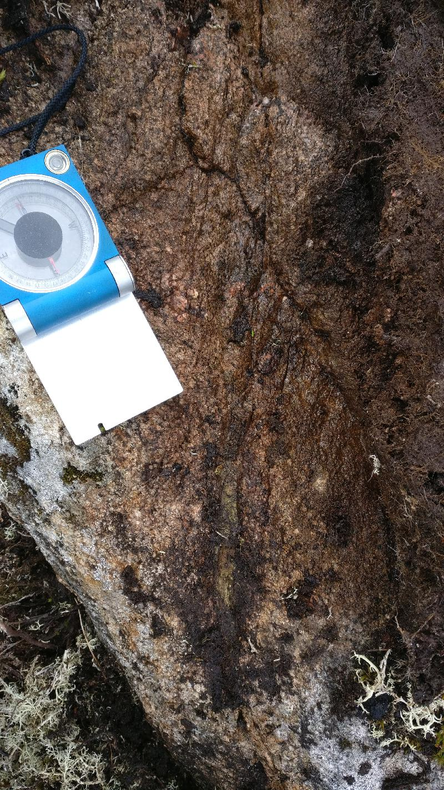
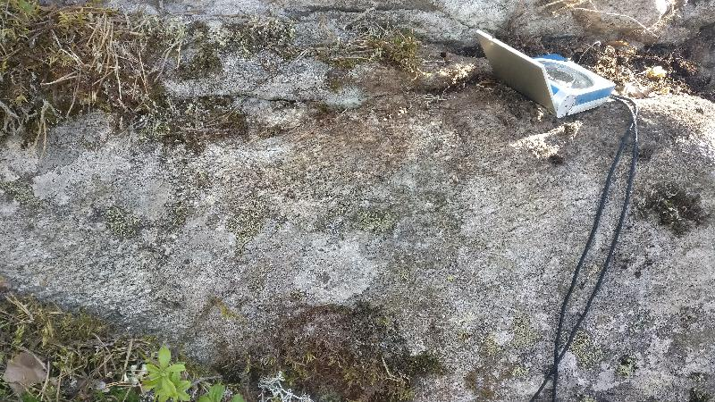
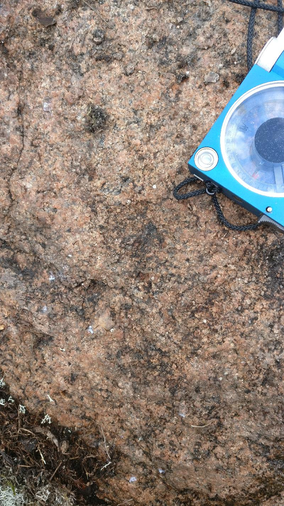

<!DOCTYPE html>
<head>    
    <meta http-equiv="content-type" content="text/html; charset=UTF-8" />
    
        <script>
            L_NO_TOUCH = false;
            L_DISABLE_3D = false;
        </script>
    
    <style>html, body {width: 100%;height: 100%;margin: 0;padding: 0;}</style>
    <style>#map {position:absolute;top:0;bottom:0;right:0;left:0;}</style>
    <script src="https://cdn.jsdelivr.net/npm/leaflet@1.6.0/dist/leaflet.js"></script>
    <script src="https://code.jquery.com/jquery-1.12.4.min.js"></script>
    <script src="https://maxcdn.bootstrapcdn.com/bootstrap/3.2.0/js/bootstrap.min.js"></script>
    <script src="https://cdnjs.cloudflare.com/ajax/libs/Leaflet.awesome-markers/2.0.2/leaflet.awesome-markers.js"></script>
    <link rel="stylesheet" href="https://cdn.jsdelivr.net/npm/leaflet@1.6.0/dist/leaflet.css"/>
    <link rel="stylesheet" href="https://maxcdn.bootstrapcdn.com/bootstrap/3.2.0/css/bootstrap.min.css"/>
    <link rel="stylesheet" href="https://maxcdn.bootstrapcdn.com/bootstrap/3.2.0/css/bootstrap-theme.min.css"/>
    <link rel="stylesheet" href="https://maxcdn.bootstrapcdn.com/font-awesome/4.6.3/css/font-awesome.min.css"/>
    <link rel="stylesheet" href="https://cdnjs.cloudflare.com/ajax/libs/Leaflet.awesome-markers/2.0.2/leaflet.awesome-markers.css"/>
    <link rel="stylesheet" href="https://cdn.jsdelivr.net/gh/python-visualization/folium/folium/templates/leaflet.awesome.rotate.min.css"/>
    
            <meta name="viewport" content="width=device-width,
                initial-scale=1.0, maximum-scale=1.0, user-scalable=no" />
            <style>
                #map_0e2f1eb7868b4db28ffcca5fa4d9cf3b {
                    position: relative;
                    width: 100.0%;
                    height: 100.0%;
                    left: 0.0%;
                    top: 0.0%;
                }
            </style>
        
    <script src="https://cdnjs.cloudflare.com/ajax/libs/leaflet-locatecontrol/0.66.2/L.Control.Locate.min.js"></script>
    <link rel="stylesheet" href="https://cdnjs.cloudflare.com/ajax/libs/leaflet-locatecontrol/0.66.2/L.Control.Locate.min.css"/>
    <link rel="stylesheet" href="styles.css"/>
</head>
<body>    
    
            <div class="folium-map" id="map_0e2f1eb7868b4db28ffcca5fa4d9cf3b" ></div>
        
</body>
<script>    
    
            var map_0e2f1eb7868b4db28ffcca5fa4d9cf3b = L.map(
                "map_0e2f1eb7868b4db28ffcca5fa4d9cf3b",
                {
                    center: [62.65395873948071, 22.2961892644223],
                    crs: L.CRS.EPSG3857,
                    zoom: 10,
                    zoomControl: true,
                    preferCanvas: false,
                }
            );

            

        
    
            var tile_layer_62748d0641f740d3bc216f27eafd6075 = L.tileLayer(
                "https://{s}.tile.openstreetmap.org/{z}/{x}/{y}.png",
                {"attribution": "Data by \u0026copy; \u003ca href=\"http://openstreetmap.org\"\u003eOpenStreetMap\u003c/a\u003e, under \u003ca href=\"http://www.openstreetmap.org/copyright\"\u003eODbL\u003c/a\u003e.", "detectRetina": false, "maxNativeZoom": 18, "maxZoom": 18, "minZoom": 0, "noWrap": false, "opacity": 1, "subdomains": "abc", "tms": false}
            ).addTo(map_0e2f1eb7868b4db28ffcca5fa4d9cf3b);
        
    
            var marker_dd6666b8bdbe4faeb820f038aed6dc62 = L.marker(
                [62.6502261, 22.24487724],
                {}
            ).addTo(map_0e2f1eb7868b4db28ffcca5fa4d9cf3b);
        
    
            var icon_4857f3ab1d78436fafbe6fa2ae736185 = L.AwesomeMarkers.icon(
                {"extraClasses": "fa-rotate-118", "icon": "glyphicon-arrow-up", "iconColor": "white", "markerColor": "blue", "prefix": "glyphicon"}
            );
            marker_dd6666b8bdbe4faeb820f038aed6dc62.setIcon(icon_4857f3ab1d78436fafbe6fa2ae736185);
        
    
        var popup_117fefa9c8ce4410a8ba6416fd4f98f0 = L.popup({"maxWidth": "100%"});

        
            var html_678f827b92364d57910368a4e52399d8 = $(`<div id="html_678f827b92364d57910368a4e52399d8" style="width: 100.0%; height: 100.0%;"><h3>NO-2021-120</h3> <h4>Planar Structures</h4> <table> <thead> <tr> <th align="right">DIP</th> <th align="right">DIRECTION_OF_DIP</th> <th align="left">STYPE_TEXT</th> <th align="left">FOL_TYPE_TEXT</th> <th align="right">STYPE</th> </tr> </thead> <tbody> <tr> <td align="right">83</td> <td align="right">256</td> <td align="left">Fault</td> <td align="left"></td> <td align="right">4</td> </tr> <tr> <td align="right">83</td> <td align="right">180</td> <td align="left">Fault</td> <td align="left"></td> <td align="right">4</td> </tr> <tr> <td align="right">69</td> <td align="right">316</td> <td align="left">Fault</td> <td align="left"></td> <td align="right">4</td> </tr> <tr> <td align="right">31</td> <td align="right">104</td> <td align="left">Fault</td> <td align="left"></td> <td align="right">4</td> </tr> </tbody> </table> <h4>Linear Structures</h4> <table> <thead> <tr> <th align="right">DIRECTION</th> <th align="right">PLUNGE</th> <th align="left">STYPE_TEXT</th> <th align="right">STYPE</th> </tr> </thead> <tbody> <tr> <td align="right">118</td> <td align="right">45</td> <td align="left">Lineation</td> <td align="right">2</td> </tr> </tbody> </table> <h4>Rock Observations</h4> <table> <thead> <tr> <th align="left">REMARKS</th> <th align="left">FIELD_NAME</th> <th align="right">ROCK_NAME</th> <th align="right">ST_2</th> </tr> </thead> <tbody> <tr> <td align="left"></td> <td align="left">Granodiorite</td> <td align="right">2111114</td> <td align="right">nan</td> </tr> </tbody> </table> <h4></h4> <h4></h4> <h4>Observation remarks</h4> <p>Lineaatio granodioriitti, raoissa punaista täytettä mahdollisesti kalimaasälpää, melko intensiivinen rakoilu, rakoilu melkeinpä yhtä intensiivistä joka suunnassa</p> <h4>Images</h4> <p><a href="kapalo_imgs/NO-2021-120.k1@6142761110269243792.jpg"></a></p> <p><em>Punainen rakotäyte, kalimaasälpä</em> <a href="kapalo_imgs/NO-2021-120.k2@465599292542584477.jpg"></a></p> <p><em>Rakoilua pystypinnalla (326/78), pinta kaatuu kameraa päin</em></p></div>`)[0];
            popup_117fefa9c8ce4410a8ba6416fd4f98f0.setContent(html_678f827b92364d57910368a4e52399d8);
        

        marker_dd6666b8bdbe4faeb820f038aed6dc62.bindPopup(popup_117fefa9c8ce4410a8ba6416fd4f98f0)
        ;

        
    
    
            marker_dd6666b8bdbe4faeb820f038aed6dc62.bindTooltip(
                `<div>
                     NO-2021-120
                 </div>`,
                {"sticky": true}
            );
        
    
            var marker_9307ba61baa34ad5923d74f1f52b1357 = L.marker(
                [62.64958984, 22.24507106],
                {}
            ).addTo(map_0e2f1eb7868b4db28ffcca5fa4d9cf3b);
        
    
            var icon_c33cf026c04047cfaa1601c4511a7f87 = L.AwesomeMarkers.icon(
                {"extraClasses": "fa-rotate-0", "icon": "glyphicon-stop", "iconColor": "white", "markerColor": "lightgray", "prefix": "glyphicon"}
            );
            marker_9307ba61baa34ad5923d74f1f52b1357.setIcon(icon_c33cf026c04047cfaa1601c4511a7f87);
        
    
        var popup_f2552258550c47219085ddefc601190b = L.popup({"maxWidth": "100%"});

        
            var html_7373c565e0c843d6958eecea01d26eba = $(`<div id="html_7373c565e0c843d6958eecea01d26eba" style="width: 100.0%; height: 100.0%;"><h3>NO-2021-121</h3> <h4>Planar Structures</h4> <table> <thead> <tr> <th align="right">DIP</th> <th align="right">DIRECTION_OF_DIP</th> <th align="left">STYPE_TEXT</th> <th align="left">FOL_TYPE_TEXT</th> <th align="right">STYPE</th> </tr> </thead> <tbody> <tr> <td align="right">78</td> <td align="right">37</td> <td align="left">Foliation</td> <td align="left">Penetrative foliation</td> <td align="right">2</td> </tr> <tr> <td align="right">56</td> <td align="right">296</td> <td align="left">Fault</td> <td align="left"></td> <td align="right">4</td> </tr> <tr> <td align="right">75</td> <td align="right">351</td> <td align="left">Fault</td> <td align="left"></td> <td align="right">4</td> </tr> <tr> <td align="right">82</td> <td align="right">242</td> <td align="left">Fault</td> <td align="left"></td> <td align="right">4</td> </tr> <tr> <td align="right">29</td> <td align="right">76</td> <td align="left">Fault</td> <td align="left"></td> <td align="right">4</td> </tr> </tbody> </table> <h4></h4> <h4>Rock Observations</h4> <table> <thead> <tr> <th align="left">REMARKS</th> <th align="left">FIELD_NAME</th> <th align="right">ROCK_NAME</th> <th align="right">ST_2</th> </tr> </thead> <tbody> <tr> <td align="left"></td> <td align="left">Granodiorite</td> <td align="right">2111114</td> <td align="right">nan</td> </tr> </tbody> </table> <h4></h4> <h4></h4> <h4>Observation remarks</h4> <p>Hydrotermistä fluidia raoissa kalimaasälpää (322/44), kvartsia ja epidoottia ja ehkä jopa karbonaattia (295/56), heikosti suuntautunut granodioriitti, päärakosuunta (296/56), paljon rakoilua, L-tektoniitti lineaatio (162/54) hyvin epävarma</p> <h4>Images</h4> <p><a href="kapalo_imgs/NO-2021-121.k1@8923370035630306331.jpg"></a></p> <p><em>Epidoottia raossa (063/86)</em> <a href="kapalo_imgs/NO-2021-121.k2@2536619394793919973.jpg"></a></p> <p><em>Punaista rakotäytettä kalimaasälpää raossa (322/44)</em></p> <p><a href="kapalo_imgs/NO-2021-121.k3@4834227976921686441.jpg">('Raossa tuskin ollut liikettä kun katsoo "klastia" (296/56), klasti pystyssä rakopinnasta', 'NO-2021-121.k3')</a></p> <p><a href="kapalo_imgs/NO-2021-121.k4@3798868176195117756.jpg">('Eemin piirros, poikkileikkaus, rakosuuntia', 'NO-2021-121.k4')</a></p></div>`)[0];
            popup_f2552258550c47219085ddefc601190b.setContent(html_7373c565e0c843d6958eecea01d26eba);
        

        marker_9307ba61baa34ad5923d74f1f52b1357.bindPopup(popup_f2552258550c47219085ddefc601190b)
        ;

        
    
    
            marker_9307ba61baa34ad5923d74f1f52b1357.bindTooltip(
                `<div>
                     NO-2021-121
                 </div>`,
                {"sticky": true}
            );
        
    
            var marker_ad78f597d868441b9a132e5e81367d8c = L.marker(
                [62.6489966, 22.24552787],
                {}
            ).addTo(map_0e2f1eb7868b4db28ffcca5fa4d9cf3b);
        
    
            var icon_010e8cdcc4bf4cc29c92d3da837d66d9 = L.AwesomeMarkers.icon(
                {"extraClasses": "fa-rotate-92", "icon": "glyphicon-arrow-up", "iconColor": "white", "markerColor": "blue", "prefix": "glyphicon"}
            );
            marker_ad78f597d868441b9a132e5e81367d8c.setIcon(icon_010e8cdcc4bf4cc29c92d3da837d66d9);
        
    
        var popup_64503d84adcc4b89bf3ae14cfb96633b = L.popup({"maxWidth": "100%"});

        
            var html_813ff821cdf146a685371996588e5d69 = $(`<div id="html_813ff821cdf146a685371996588e5d69" style="width: 100.0%; height: 100.0%;"><h3>NO-2021-122</h3> <h4>Planar Structures</h4> <table> <thead> <tr> <th align="right">DIP</th> <th align="right">DIRECTION_OF_DIP</th> <th align="left">STYPE_TEXT</th> <th align="left">FOL_TYPE_TEXT</th> <th align="right">STYPE</th> </tr> </thead> <tbody> <tr> <td align="right">68</td> <td align="right">197</td> <td align="left">Foliation</td> <td align="left">Penetrative foliation</td> <td align="right">2</td> </tr> <tr> <td align="right">60</td> <td align="right">323</td> <td align="left">Fault</td> <td align="left"></td> <td align="right">4</td> </tr> <tr> <td align="right">84</td> <td align="right">201</td> <td align="left">Fault</td> <td align="left"></td> <td align="right">4</td> </tr> <tr> <td align="right">20</td> <td align="right">87</td> <td align="left">Fault</td> <td align="left"></td> <td align="right">4</td> </tr> </tbody> </table> <h4>Linear Structures</h4> <table> <thead> <tr> <th align="right">DIRECTION</th> <th align="right">PLUNGE</th> <th align="left">STYPE_TEXT</th> <th align="right">STYPE</th> </tr> </thead> <tbody> <tr> <td align="right">92</td> <td align="right">61</td> <td align="left">Lineation</td> <td align="right">2</td> </tr> </tbody> </table> <h4>Rock Observations</h4> <table> <thead> <tr> <th align="left">REMARKS</th> <th align="left">FIELD_NAME</th> <th align="right">ROCK_NAME</th> <th align="right">ST_2</th> </tr> </thead> <tbody> <tr> <td align="left"></td> <td align="left">Granodiorite</td> <td align="right">2111114</td> <td align="right">nan</td> </tr> </tbody> </table> <h4></h4> <h4></h4> <h4>Observation remarks</h4> <p>Vahva lineaatio heikko liuskeisuus granodioriitissa, päärakosuunta, hydrotermistä fluidia mahdollisesti kaikissa rakosuunnissaa, päärakosuunta (323/60)</p> <h4>Images</h4> <p><a href="kapalo_imgs/NO-2021-122.k1@5617358163811979863.jpg"></a></p> <p><em>Vahva lineaatio (092/61) liuskeisuuspinnassa (197/68)</em> <a href="kapalo_imgs/NO-2021-122.k2@5780095224077011552.jpg"></a></p> <p><em>Nikolaksen piirros, rakojen topologiaa</em></p> <p><a href="kapalo_imgs/NO-2021-122.k3@7591171526182596366.jpg">('Eemin piirros, poikkileikkaus E-W, raon hyppyjä lineaation suuntaan', 'NO-2021-122.k3')</a></p></div>`)[0];
            popup_64503d84adcc4b89bf3ae14cfb96633b.setContent(html_813ff821cdf146a685371996588e5d69);
        

        marker_ad78f597d868441b9a132e5e81367d8c.bindPopup(popup_64503d84adcc4b89bf3ae14cfb96633b)
        ;

        
    
    
            marker_ad78f597d868441b9a132e5e81367d8c.bindTooltip(
                `<div>
                     NO-2021-122
                 </div>`,
                {"sticky": true}
            );
        
    
            var marker_a62c99fd2aa24516baa7f17fb8988c19 = L.marker(
                [62.64799984, 22.24524319],
                {}
            ).addTo(map_0e2f1eb7868b4db28ffcca5fa4d9cf3b);
        
    
            var icon_d947319d69fa4887ac6816ef9a7d5ed4 = L.AwesomeMarkers.icon(
                {"extraClasses": "fa-rotate-82", "icon": "glyphicon-arrow-up", "iconColor": "white", "markerColor": "blue", "prefix": "glyphicon"}
            );
            marker_a62c99fd2aa24516baa7f17fb8988c19.setIcon(icon_d947319d69fa4887ac6816ef9a7d5ed4);
        
    
        var popup_8db2a2de83c44f82b954204e711e5fe9 = L.popup({"maxWidth": "100%"});

        
            var html_a108aceb72094b42a13f8d3e4c9912f3 = $(`<div id="html_a108aceb72094b42a13f8d3e4c9912f3" style="width: 100.0%; height: 100.0%;"><h3>NO-2021-123</h3> <h4>Planar Structures</h4> <table> <thead> <tr> <th align="right">DIP</th> <th align="right">DIRECTION_OF_DIP</th> <th align="left">STYPE_TEXT</th> <th align="left">FOL_TYPE_TEXT</th> <th align="right">STYPE</th> </tr> </thead> <tbody> <tr> <td align="right">64</td> <td align="right">184</td> <td align="left">Foliation</td> <td align="left">Penetrative foliation</td> <td align="right">2</td> </tr> <tr> <td align="right">22</td> <td align="right">107</td> <td align="left">Fault</td> <td align="left"></td> <td align="right">4</td> </tr> <tr> <td align="right">86</td> <td align="right">78</td> <td align="left">Fault</td> <td align="left"></td> <td align="right">4</td> </tr> <tr> <td align="right">81</td> <td align="right">181</td> <td align="left">Fault</td> <td align="left"></td> <td align="right">4</td> </tr> </tbody> </table> <h4>Linear Structures</h4> <table> <thead> <tr> <th align="right">DIRECTION</th> <th align="right">PLUNGE</th> <th align="left">STYPE_TEXT</th> <th align="right">STYPE</th> </tr> </thead> <tbody> <tr> <td align="right">82</td> <td align="right">40</td> <td align="left">Lineation</td> <td align="right">2</td> </tr> </tbody> </table> <h4>Rock Observations</h4> <table> <thead> <tr> <th align="left">REMARKS</th> <th align="left">FIELD_NAME</th> <th align="right">ROCK_NAME</th> <th align="right">ST_2</th> </tr> </thead> <tbody> <tr> <td align="left"></td> <td align="left">Granodiorite</td> <td align="right">2111114</td> <td align="right">nan</td> </tr> </tbody> </table> <h4></h4> <h4></h4> <h4>Observation remarks</h4> <p>Pienirakeisempi granodioriitti/dioriitti</p> <h4>Images</h4> <p><a href="kapalo_imgs/NO-2021-123.k1@8548264451686763326.jpg"></a></p> <p><em>Koostumusvaihtelua lokaalisti, hienorakeinen liuskeinen dioriitti</em></p></div>`)[0];
            popup_8db2a2de83c44f82b954204e711e5fe9.setContent(html_a108aceb72094b42a13f8d3e4c9912f3);
        

        marker_a62c99fd2aa24516baa7f17fb8988c19.bindPopup(popup_8db2a2de83c44f82b954204e711e5fe9)
        ;

        
    
    
            marker_a62c99fd2aa24516baa7f17fb8988c19.bindTooltip(
                `<div>
                     NO-2021-123
                 </div>`,
                {"sticky": true}
            );
        
    
            var marker_261b56d09c2c4b86aa0d780a92562e0a = L.marker(
                [62.64572403, 22.26150361],
                {}
            ).addTo(map_0e2f1eb7868b4db28ffcca5fa4d9cf3b);
        
    
            var icon_7f409366310440acae9a053db771b1d3 = L.AwesomeMarkers.icon(
                {"extraClasses": "fa-rotate-134", "icon": "glyphicon-arrow-up", "iconColor": "white", "markerColor": "blue", "prefix": "glyphicon"}
            );
            marker_261b56d09c2c4b86aa0d780a92562e0a.setIcon(icon_7f409366310440acae9a053db771b1d3);
        
    
        var popup_adb252dbd4d6414abcf38d745d925c8f = L.popup({"maxWidth": "100%"});

        
            var html_a2baf66236e746b5b74ca0dd0f1d52ea = $(`<div id="html_a2baf66236e746b5b74ca0dd0f1d52ea" style="width: 100.0%; height: 100.0%;"><h3>NO-2021-124</h3> <h4>Planar Structures</h4> <table> <thead> <tr> <th align="right">DIP</th> <th align="right">DIRECTION_OF_DIP</th> <th align="left">STYPE_TEXT</th> <th align="left">FOL_TYPE_TEXT</th> <th align="right">STYPE</th> </tr> </thead> <tbody> <tr> <td align="right">83</td> <td align="right">264</td> <td align="left">Fault</td> <td align="left"></td> <td align="right">4</td> </tr> <tr> <td align="right">86</td> <td align="right">187</td> <td align="left">Fault</td> <td align="left"></td> <td align="right">4</td> </tr> <tr> <td align="right">85</td> <td align="right">76</td> <td align="left">Fault</td> <td align="left"></td> <td align="right">4</td> </tr> </tbody> </table> <h4>Linear Structures</h4> <table> <thead> <tr> <th align="right">DIRECTION</th> <th align="right">PLUNGE</th> <th align="left">STYPE_TEXT</th> <th align="right">STYPE</th> </tr> </thead> <tbody> <tr> <td align="right">134</td> <td align="right">58</td> <td align="left">Lineation</td> <td align="right">2</td> </tr> </tbody> </table> <h4>Rock Observations</h4> <table> <thead> <tr> <th align="left">REMARKS</th> <th align="left">FIELD_NAME</th> <th align="right">ROCK_NAME</th> <th align="right">ST_2</th> </tr> </thead> <tbody> <tr> <td align="left"></td> <td align="left">Granodiorite</td> <td align="right">2111114</td> <td align="right">nan</td> </tr> </tbody> </table> <h4></h4> <h4></h4> <h4>Observation remarks</h4> <p>Kvartsijuonia (058/68; 015/80; 125/65), mahdollinen L-tektoniitti</p> <h4>Images</h4> <p><a href="kapalo_imgs/NO-2021-124.k1@3218770996976864257.jpg"></a></p> <p><em>Hyppy kvartsijuonessa (015/80)</em> <a href="kapalo_imgs/NO-2021-124.k2@6226118352050024138.jpg"></a></p> <p><em>Lineaatio näkyy myös kvartsijuonessa</em></p> <p><a href="kapalo_imgs/NO-2021-124.k3@4800862070566764280.jpg">('Liuskeisuus vai lineaatio', 'NO-2021-124.k3')</a></p></div>`)[0];
            popup_adb252dbd4d6414abcf38d745d925c8f.setContent(html_a2baf66236e746b5b74ca0dd0f1d52ea);
        

        marker_261b56d09c2c4b86aa0d780a92562e0a.bindPopup(popup_adb252dbd4d6414abcf38d745d925c8f)
        ;

        
    
    
            marker_261b56d09c2c4b86aa0d780a92562e0a.bindTooltip(
                `<div>
                     NO-2021-124
                 </div>`,
                {"sticky": true}
            );
        
    
            var marker_c2c10853a7aa4539ad7baa1beca60b47 = L.marker(
                [62.6444608, 22.26643641],
                {}
            ).addTo(map_0e2f1eb7868b4db28ffcca5fa4d9cf3b);
        
    
            var icon_1cbee7a210844eaaaec15b18664ae75c = L.AwesomeMarkers.icon(
                {"extraClasses": "fa-rotate-0", "icon": "glyphicon-stop", "iconColor": "white", "markerColor": "lightgray", "prefix": "glyphicon"}
            );
            marker_c2c10853a7aa4539ad7baa1beca60b47.setIcon(icon_1cbee7a210844eaaaec15b18664ae75c);
        
    
        var popup_ed373b6415464dcc966b093cf1b0f806 = L.popup({"maxWidth": "100%"});

        
            var html_e8677328937a4aaaa54f4eddc0dfcc53 = $(`<div id="html_e8677328937a4aaaa54f4eddc0dfcc53" style="width: 100.0%; height: 100.0%;"><h3>NO-2021-125</h3> <h4>Planar Structures</h4> <table> <thead> <tr> <th align="right">DIP</th> <th align="right">DIRECTION_OF_DIP</th> <th align="left">STYPE_TEXT</th> <th align="left">FOL_TYPE_TEXT</th> <th align="right">STYPE</th> </tr> </thead> <tbody> <tr> <td align="right">88</td> <td align="right">322</td> <td align="left">Fault</td> <td align="left"></td> <td align="right">4</td> </tr> <tr> <td align="right">83</td> <td align="right">74</td> <td align="left">Fault</td> <td align="left"></td> <td align="right">4</td> </tr> </tbody> </table> <h4></h4> <h4>Rock Observations</h4> <table> <thead> <tr> <th align="left">REMARKS</th> <th align="left">FIELD_NAME</th> <th align="right">ROCK_NAME</th> <th align="right">ST_2</th> </tr> </thead> <tbody> <tr> <td align="left"></td> <td align="left">Granodiorite</td> <td align="right">2111114</td> <td align="right">nan</td> </tr> </tbody> </table> <h4></h4> <h4></h4> <h4>Observation remarks</h4> <p>Vallitseva rakosuunta (322/88), hyvin heikosti suuntautunut granodioriitti tai ei ollenkaan, kvartsijuonia (074/83)</p></div>`)[0];
            popup_ed373b6415464dcc966b093cf1b0f806.setContent(html_e8677328937a4aaaa54f4eddc0dfcc53);
        

        marker_c2c10853a7aa4539ad7baa1beca60b47.bindPopup(popup_ed373b6415464dcc966b093cf1b0f806)
        ;

        
    
    
            marker_c2c10853a7aa4539ad7baa1beca60b47.bindTooltip(
                `<div>
                     NO-2021-125
                 </div>`,
                {"sticky": true}
            );
        
    
            var marker_b80218f5608c43729a1e53b1cc3485c6 = L.marker(
                [62.64597139, 22.26551594],
                {}
            ).addTo(map_0e2f1eb7868b4db28ffcca5fa4d9cf3b);
        
    
            var icon_2523961ca96f43a8aafc556c09ca8715 = L.AwesomeMarkers.icon(
                {"extraClasses": "fa-rotate-120", "icon": "glyphicon-arrow-up", "iconColor": "white", "markerColor": "blue", "prefix": "glyphicon"}
            );
            marker_b80218f5608c43729a1e53b1cc3485c6.setIcon(icon_2523961ca96f43a8aafc556c09ca8715);
        
    
        var popup_124bb27d4cb441cab8727d9ca8e98b8c = L.popup({"maxWidth": "100%"});

        
            var html_524e61338b89493085b31e2c9154d231 = $(`<div id="html_524e61338b89493085b31e2c9154d231" style="width: 100.0%; height: 100.0%;"><h3>NO-2021-126</h3> <h4>Planar Structures</h4> <table> <thead> <tr> <th align="right">DIP</th> <th align="right">DIRECTION_OF_DIP</th> <th align="left">STYPE_TEXT</th> <th align="left">FOL_TYPE_TEXT</th> <th align="right">STYPE</th> </tr> </thead> <tbody> <tr> <td align="right">84</td> <td align="right">156</td> <td align="left">Fault</td> <td align="left"></td> <td align="right">4</td> </tr> <tr> <td align="right">63</td> <td align="right">109</td> <td align="left">Fault</td> <td align="left"></td> <td align="right">4</td> </tr> </tbody> </table> <h4>Linear Structures</h4> <table> <thead> <tr> <th align="right">DIRECTION</th> <th align="right">PLUNGE</th> <th align="left">STYPE_TEXT</th> <th align="right">STYPE</th> </tr> </thead> <tbody> <tr> <td align="right">120</td> <td align="right">37</td> <td align="left">Lineation</td> <td align="right">2</td> </tr> </tbody> </table> <h4>Rock Observations</h4> <table> <thead> <tr> <th align="left">REMARKS</th> <th align="left">FIELD_NAME</th> <th align="right">ROCK_NAME</th> <th align="right">ST_2</th> </tr> </thead> <tbody> <tr> <td align="left"></td> <td align="left">Granodiorite</td> <td align="right">2111114</td> <td align="right">nan</td> </tr> </tbody> </table> <h4></h4> <h4></h4> <h4>Observation remarks</h4> <p>L-tektoniitti tai hyvin heikko liuskeisuus (131/45)</p> <h4>Images</h4> <p><a href="kapalo_imgs/NO-2021-126.k1@6982591858692456125.jpg"></a></p> <p><em>Koostumusvaihtelua ja kvartsijuonia, kuvan taso (030/46)</em></p></div>`)[0];
            popup_124bb27d4cb441cab8727d9ca8e98b8c.setContent(html_524e61338b89493085b31e2c9154d231);
        

        marker_b80218f5608c43729a1e53b1cc3485c6.bindPopup(popup_124bb27d4cb441cab8727d9ca8e98b8c)
        ;

        
    
    
            marker_b80218f5608c43729a1e53b1cc3485c6.bindTooltip(
                `<div>
                     NO-2021-126
                 </div>`,
                {"sticky": true}
            );
        
    
            var marker_20b5d9b75f7e49deb76e7175f0140dcd = L.marker(
                [62.64682437, 22.26251022],
                {}
            ).addTo(map_0e2f1eb7868b4db28ffcca5fa4d9cf3b);
        
    
            var icon_6a135fdf9a70429385ff80cf537a486a = L.AwesomeMarkers.icon(
                {"extraClasses": "fa-rotate-110", "icon": "glyphicon-arrow-up", "iconColor": "white", "markerColor": "blue", "prefix": "glyphicon"}
            );
            marker_20b5d9b75f7e49deb76e7175f0140dcd.setIcon(icon_6a135fdf9a70429385ff80cf537a486a);
        
    
        var popup_61d72b26aa124fd0b61599253ec7964b = L.popup({"maxWidth": "100%"});

        
            var html_ccb188d4182b4e148e95531a3954999e = $(`<div id="html_ccb188d4182b4e148e95531a3954999e" style="width: 100.0%; height: 100.0%;"><h3>NO-2021-127</h3> <h4>Planar Structures</h4> <table> <thead> <tr> <th align="right">DIP</th> <th align="right">DIRECTION_OF_DIP</th> <th align="left">STYPE_TEXT</th> <th align="left">FOL_TYPE_TEXT</th> <th align="right">STYPE</th> </tr> </thead> <tbody> <tr> <td align="right">60</td> <td align="right">86</td> <td align="left">Fault</td> <td align="left"></td> <td align="right">4</td> </tr> <tr> <td align="right">78</td> <td align="right">156</td> <td align="left">Fault</td> <td align="left"></td> <td align="right">4</td> </tr> </tbody> </table> <h4>Linear Structures</h4> <table> <thead> <tr> <th align="right">DIRECTION</th> <th align="right">PLUNGE</th> <th align="left">STYPE_TEXT</th> <th align="right">STYPE</th> </tr> </thead> <tbody> <tr> <td align="right">110</td> <td align="right">51</td> <td align="left">Lineation</td> <td align="right">2</td> </tr> </tbody> </table> <h4>Rock Observations</h4> <table> <thead> <tr> <th align="left">REMARKS</th> <th align="left">FIELD_NAME</th> <th align="right">ROCK_NAME</th> <th align="right">ST_2</th> </tr> </thead> <tbody> <tr> <td align="left"></td> <td align="left">Granodiorite</td> <td align="right">2111114</td> <td align="right">nan</td> </tr> </tbody> </table> <h4></h4> <h4></h4> <h4>Observation remarks</h4> <p>Hyvin vahva lineaatio, L-tektoniitti, hyvin heikko tasomainen suuntaus (192/76)</p> <h4>Images</h4> <p><a href="kapalo_imgs/NO-2021-127.k1@4608074849448132282.jpg"></a></p> <p><em>Kuvan pinta (087/62), kaatuu kuvaajaa päin</em></p></div>`)[0];
            popup_61d72b26aa124fd0b61599253ec7964b.setContent(html_ccb188d4182b4e148e95531a3954999e);
        

        marker_20b5d9b75f7e49deb76e7175f0140dcd.bindPopup(popup_61d72b26aa124fd0b61599253ec7964b)
        ;

        
    
    
            marker_20b5d9b75f7e49deb76e7175f0140dcd.bindTooltip(
                `<div>
                     NO-2021-127
                 </div>`,
                {"sticky": true}
            );
        
    
            var marker_fe32c6db2ac844b185c4523980b96ea1 = L.marker(
                [62.64860436, 22.25253781],
                {}
            ).addTo(map_0e2f1eb7868b4db28ffcca5fa4d9cf3b);
        
    
            var icon_6fa9644e9dac4e28a24f22165ce6e526 = L.AwesomeMarkers.icon(
                {"extraClasses": "fa-rotate-90", "icon": "glyphicon-arrow-up", "iconColor": "white", "markerColor": "blue", "prefix": "glyphicon"}
            );
            marker_fe32c6db2ac844b185c4523980b96ea1.setIcon(icon_6fa9644e9dac4e28a24f22165ce6e526);
        
    
        var popup_7037ba2e870b43a599a1d59f99f9b25b = L.popup({"maxWidth": "100%"});

        
            var html_459f58c572994f078b2d0d6897822899 = $(`<div id="html_459f58c572994f078b2d0d6897822899" style="width: 100.0%; height: 100.0%;"><h3>NO-2021-128</h3> <h4>Planar Structures</h4> <table> <thead> <tr> <th align="right">DIP</th> <th align="right">DIRECTION_OF_DIP</th> <th align="left">STYPE_TEXT</th> <th align="left">FOL_TYPE_TEXT</th> <th align="right">STYPE</th> </tr> </thead> <tbody> <tr> <td align="right">68</td> <td align="right">178</td> <td align="left">Foliation</td> <td align="left">Penetrative foliation</td> <td align="right">2</td> </tr> <tr> <td align="right">68</td> <td align="right">178</td> <td align="left">Fault</td> <td align="left"></td> <td align="right">4</td> </tr> <tr> <td align="right">65</td> <td align="right">90</td> <td align="left">Fault</td> <td align="left"></td> <td align="right">4</td> </tr> </tbody> </table> <h4>Linear Structures</h4> <table> <thead> <tr> <th align="right">DIRECTION</th> <th align="right">PLUNGE</th> <th align="left">STYPE_TEXT</th> <th align="right">STYPE</th> </tr> </thead> <tbody> <tr> <td align="right">90</td> <td align="right">50</td> <td align="left">Lineation</td> <td align="right">2</td> </tr> </tbody> </table> <h4>Rock Observations</h4> <table> <thead> <tr> <th align="left">REMARKS</th> <th align="left">FIELD_NAME</th> <th align="right">ROCK_NAME</th> <th align="right">ST_2</th> </tr> </thead> <tbody> <tr> <td align="left"></td> <td align="left">Granodiorite</td> <td align="right">2111114</td> <td align="right">nan</td> </tr> </tbody> </table> <h4></h4> <h4></h4> <h4>Observation remarks</h4> <p>Suuntautunut granodioriitti</p></div>`)[0];
            popup_7037ba2e870b43a599a1d59f99f9b25b.setContent(html_459f58c572994f078b2d0d6897822899);
        

        marker_fe32c6db2ac844b185c4523980b96ea1.bindPopup(popup_7037ba2e870b43a599a1d59f99f9b25b)
        ;

        
    
    
            marker_fe32c6db2ac844b185c4523980b96ea1.bindTooltip(
                `<div>
                     NO-2021-128
                 </div>`,
                {"sticky": true}
            );
        
    
            var marker_bb9a9138dd22452e9507f5fbfb23383c = L.marker(
                [62.64694525, 22.2521295],
                {}
            ).addTo(map_0e2f1eb7868b4db28ffcca5fa4d9cf3b);
        
    
            var icon_d644e69380d442f083fd9b0cbcd3459a = L.AwesomeMarkers.icon(
                {"extraClasses": "fa-rotate-110", "icon": "glyphicon-arrow-up", "iconColor": "white", "markerColor": "blue", "prefix": "glyphicon"}
            );
            marker_bb9a9138dd22452e9507f5fbfb23383c.setIcon(icon_d644e69380d442f083fd9b0cbcd3459a);
        
    
        var popup_ba926d21b6b34ef7b98ef71a69a3113e = L.popup({"maxWidth": "100%"});

        
            var html_4cd4de0d048f43f0ae7bb5247f96051d = $(`<div id="html_4cd4de0d048f43f0ae7bb5247f96051d" style="width: 100.0%; height: 100.0%;"><h3>NO-2021-129</h3> <h4>Planar Structures</h4> <table> <thead> <tr> <th align="right">DIP</th> <th align="right">DIRECTION_OF_DIP</th> <th align="left">STYPE_TEXT</th> <th align="left">FOL_TYPE_TEXT</th> <th align="right">STYPE</th> </tr> </thead> <tbody> <tr> <td align="right">45</td> <td align="right">110</td> <td align="left">Foliation</td> <td align="left">Penetrative foliation</td> <td align="right">2</td> </tr> <tr> <td align="right">77</td> <td align="right">286</td> <td align="left">Fault</td> <td align="left"></td> <td align="right">4</td> </tr> <tr> <td align="right">45</td> <td align="right">105</td> <td align="left">Fault</td> <td align="left"></td> <td align="right">4</td> </tr> </tbody> </table> <h4>Linear Structures</h4> <table> <thead> <tr> <th align="right">DIRECTION</th> <th align="right">PLUNGE</th> <th align="left">STYPE_TEXT</th> <th align="right">STYPE</th> </tr> </thead> <tbody> <tr> <td align="right">110</td> <td align="right">45</td> <td align="left">Lineation</td> <td align="right">2</td> </tr> </tbody> </table> <h4>Rock Observations</h4> <table> <thead> <tr> <th align="left">REMARKS</th> <th align="left">FIELD_NAME</th> <th align="right">ROCK_NAME</th> <th align="right">ST_2</th> </tr> </thead> <tbody> <tr> <td align="left"></td> <td align="left">Granodiorite</td> <td align="right">2111114</td> <td align="right">nan</td> </tr> </tbody> </table> <h4></h4> <h4></h4> <h4>Observation remarks</h4> <p>Suuntautunut granodioriitti, liuskeisuus sekava alueellisesti mutta paikoittain selkeä, kvartsijuonia liuskeisuuden suunnassa (105/45), epidoottikvartsitäyte (286/77)</p></div>`)[0];
            popup_ba926d21b6b34ef7b98ef71a69a3113e.setContent(html_4cd4de0d048f43f0ae7bb5247f96051d);
        

        marker_bb9a9138dd22452e9507f5fbfb23383c.bindPopup(popup_ba926d21b6b34ef7b98ef71a69a3113e)
        ;

        
    
    
            marker_bb9a9138dd22452e9507f5fbfb23383c.bindTooltip(
                `<div>
                     NO-2021-129
                 </div>`,
                {"sticky": true}
            );
        
    
            var marker_64e698f5025f4770b32c4568734228fc = L.marker(
                [62.64568886, 22.25283538],
                {}
            ).addTo(map_0e2f1eb7868b4db28ffcca5fa4d9cf3b);
        
    
            var icon_18ae2e3501e44b03a404da1e2fb870dc = L.AwesomeMarkers.icon(
                {"extraClasses": "fa-rotate-125", "icon": "glyphicon-arrow-up", "iconColor": "white", "markerColor": "blue", "prefix": "glyphicon"}
            );
            marker_64e698f5025f4770b32c4568734228fc.setIcon(icon_18ae2e3501e44b03a404da1e2fb870dc);
        
    
        var popup_ac20eea8409d4af7980146619fdc982b = L.popup({"maxWidth": "100%"});

        
            var html_8e8e14239f52495eae55d9bd601e7e83 = $(`<div id="html_8e8e14239f52495eae55d9bd601e7e83" style="width: 100.0%; height: 100.0%;"><h3>NO-2021-130</h3> <h4>Planar Structures</h4> <table> <thead> <tr> <th align="right">DIP</th> <th align="right">DIRECTION_OF_DIP</th> <th align="left">STYPE_TEXT</th> <th align="left">FOL_TYPE_TEXT</th> <th align="right">STYPE</th> </tr> </thead> <tbody> <tr> <td align="right">45</td> <td align="right">125</td> <td align="left">Foliation</td> <td align="left">Penetrative foliation</td> <td align="right">2</td> </tr> </tbody> </table> <h4>Linear Structures</h4> <table> <thead> <tr> <th align="right">DIRECTION</th> <th align="right">PLUNGE</th> <th align="left">STYPE_TEXT</th> <th align="right">STYPE</th> </tr> </thead> <tbody> <tr> <td align="right">125</td> <td align="right">45</td> <td align="left">Lineation</td> <td align="right">2</td> </tr> </tbody> </table> <h4>Rock Observations</h4> <table> <thead> <tr> <th align="left">REMARKS</th> <th align="left">FIELD_NAME</th> <th align="right">ROCK_NAME</th> <th align="right">ST_2</th> </tr> </thead> <tbody> <tr> <td align="left"></td> <td align="left">Granodiorite</td> <td align="right">2111114</td> <td align="right">nan</td> </tr> </tbody> </table> <h4></h4> <h4></h4> <h4>Observation remarks</h4> <p>Suuntautunut granodioriitti, </p></div>`)[0];
            popup_ac20eea8409d4af7980146619fdc982b.setContent(html_8e8e14239f52495eae55d9bd601e7e83);
        

        marker_64e698f5025f4770b32c4568734228fc.bindPopup(popup_ac20eea8409d4af7980146619fdc982b)
        ;

        
    
    
            marker_64e698f5025f4770b32c4568734228fc.bindTooltip(
                `<div>
                     NO-2021-130
                 </div>`,
                {"sticky": true}
            );
        
    
            var marker_d151d91e80b94faf921647d90ed899ca = L.marker(
                [62.64347729, 22.24939719],
                {}
            ).addTo(map_0e2f1eb7868b4db28ffcca5fa4d9cf3b);
        
    
            var icon_26d7fb3f5d4e4d2b9034eb72ce62e798 = L.AwesomeMarkers.icon(
                {"extraClasses": "fa-rotate-103", "icon": "glyphicon-arrow-up", "iconColor": "white", "markerColor": "blue", "prefix": "glyphicon"}
            );
            marker_d151d91e80b94faf921647d90ed899ca.setIcon(icon_26d7fb3f5d4e4d2b9034eb72ce62e798);
        
    
        var popup_984a01e08cdf4dc8af7a7a2efa19a66b = L.popup({"maxWidth": "100%"});

        
            var html_8971a3538926485d9794a521f827710a = $(`<div id="html_8971a3538926485d9794a521f827710a" style="width: 100.0%; height: 100.0%;"><h3>NO-2021-131</h3> <h4>Planar Structures</h4> <table> <thead> <tr> <th align="right">DIP</th> <th align="right">DIRECTION_OF_DIP</th> <th align="left">STYPE_TEXT</th> <th align="left">FOL_TYPE_TEXT</th> <th align="right">STYPE</th> </tr> </thead> <tbody> <tr> <td align="right">64</td> <td align="right">88</td> <td align="left">Foliation</td> <td align="left">Penetrative foliation</td> <td align="right">2</td> </tr> <tr> <td align="right">64</td> <td align="right">88</td> <td align="left">Fault</td> <td align="left"></td> <td align="right">4</td> </tr> </tbody> </table> <h4>Linear Structures</h4> <table> <thead> <tr> <th align="right">DIRECTION</th> <th align="right">PLUNGE</th> <th align="left">STYPE_TEXT</th> <th align="right">STYPE</th> </tr> </thead> <tbody> <tr> <td align="right">103</td> <td align="right">41</td> <td align="left">Lineation</td> <td align="right">2</td> </tr> </tbody> </table> <h4>Rock Observations</h4> <table> <thead> <tr> <th align="left">REMARKS</th> <th align="left">FIELD_NAME</th> <th align="right">ROCK_NAME</th> <th align="right">ST_2</th> </tr> </thead> <tbody> <tr> <td align="left"></td> <td align="left">Granodiorite</td> <td align="right">2111114</td> <td align="right">nan</td> </tr> </tbody> </table> <h4></h4> <h4></h4> <h4>Observation remarks</h4> <p>Vahva lineaatio heikko liuskeisuus tai ei ollenkaan (088/64), vahva rakosuunta (088/64), mahdollinen L-tektoniitti</p> <h4>Images</h4> <p><a href="kapalo_imgs/NO-2021-131.k1@1367890378289948652.jpg"></a></p> <p><em>Lineaatio mahdollisessa liuskeisuuspinnassa</em></p></div>`)[0];
            popup_984a01e08cdf4dc8af7a7a2efa19a66b.setContent(html_8971a3538926485d9794a521f827710a);
        

        marker_d151d91e80b94faf921647d90ed899ca.bindPopup(popup_984a01e08cdf4dc8af7a7a2efa19a66b)
        ;

        
    
    
            marker_d151d91e80b94faf921647d90ed899ca.bindTooltip(
                `<div>
                     NO-2021-131
                 </div>`,
                {"sticky": true}
            );
        
    
            var marker_18f090b69e2d458c83ad3f447bbbe44d = L.marker(
                [62.64517689, 22.24748077],
                {}
            ).addTo(map_0e2f1eb7868b4db28ffcca5fa4d9cf3b);
        
    
            var icon_101718b15d79495c9bb3c074c403fe90 = L.AwesomeMarkers.icon(
                {"extraClasses": "fa-rotate-106", "icon": "glyphicon-arrow-up", "iconColor": "white", "markerColor": "blue", "prefix": "glyphicon"}
            );
            marker_18f090b69e2d458c83ad3f447bbbe44d.setIcon(icon_101718b15d79495c9bb3c074c403fe90);
        
    
        var popup_a87ad62278bd45cc80d5729f6707859b = L.popup({"maxWidth": "100%"});

        
            var html_0b1647ba98d54d4ca59265924aeeed24 = $(`<div id="html_0b1647ba98d54d4ca59265924aeeed24" style="width: 100.0%; height: 100.0%;"><h3>NO-2021-132</h3> <h4>Planar Structures</h4> <table> <thead> <tr> <th align="right">DIP</th> <th align="right">DIRECTION_OF_DIP</th> <th align="left">STYPE_TEXT</th> <th align="left">FOL_TYPE_TEXT</th> <th align="right">STYPE</th> </tr> </thead> <tbody> <tr> <td align="right">60</td> <td align="right">100</td> <td align="left">Foliation</td> <td align="left">Penetrative foliation</td> <td align="right">2</td> </tr> <tr> <td align="right">18</td> <td align="right">273</td> <td align="left">Fault</td> <td align="left"></td> <td align="right">4</td> </tr> <tr> <td align="right">60</td> <td align="right">100</td> <td align="left">Fault</td> <td align="left"></td> <td align="right">4</td> </tr> <tr> <td align="right">78</td> <td align="right">16</td> <td align="left">Fault</td> <td align="left"></td> <td align="right">4</td> </tr> </tbody> </table> <h4>Linear Structures</h4> <table> <thead> <tr> <th align="right">DIRECTION</th> <th align="right">PLUNGE</th> <th align="left">STYPE_TEXT</th> <th align="right">STYPE</th> </tr> </thead> <tbody> <tr> <td align="right">106</td> <td align="right">52</td> <td align="left">Lineation</td> <td align="right">2</td> </tr> </tbody> </table> <h4>Rock Observations</h4> <table> <thead> <tr> <th align="left">REMARKS</th> <th align="left">FIELD_NAME</th> <th align="right">ROCK_NAME</th> <th align="right">ST_2</th> </tr> </thead> <tbody> <tr> <td align="left"></td> <td align="left">Granodiorite</td> <td align="right">2111114</td> <td align="right">nan</td> </tr> </tbody> </table> <h4></h4> <h4></h4> <h4>Observation remarks</h4> <p>Kalimaasälpäinen juoni (256/12), vahvin rakosuunta (273/18)</p> <h4>Images</h4> <p><a href="kapalo_imgs/NO-2021-132.k1@340361724024049099.jpg"></a></p> <p><em>Eemin piirros, kallion isoja rakosuuntia</em></p></div>`)[0];
            popup_a87ad62278bd45cc80d5729f6707859b.setContent(html_0b1647ba98d54d4ca59265924aeeed24);
        

        marker_18f090b69e2d458c83ad3f447bbbe44d.bindPopup(popup_a87ad62278bd45cc80d5729f6707859b)
        ;

        
    
    
            marker_18f090b69e2d458c83ad3f447bbbe44d.bindTooltip(
                `<div>
                     NO-2021-132
                 </div>`,
                {"sticky": true}
            );
        
    
            var marker_eb1ff7c5d9dd4593a4eed25203c69e83 = L.marker(
                [62.64268222, 22.24797647],
                {}
            ).addTo(map_0e2f1eb7868b4db28ffcca5fa4d9cf3b);
        
    
            var icon_cf6184a5260b429ebcbd4bb232edd287 = L.AwesomeMarkers.icon(
                {"extraClasses": "fa-rotate-112", "icon": "glyphicon-arrow-up", "iconColor": "white", "markerColor": "blue", "prefix": "glyphicon"}
            );
            marker_eb1ff7c5d9dd4593a4eed25203c69e83.setIcon(icon_cf6184a5260b429ebcbd4bb232edd287);
        
    
        var popup_d1090bacbfe04a948b5d1dd554570fc4 = L.popup({"maxWidth": "100%"});

        
            var html_41044d02b21446f5a6698fe40130b872 = $(`<div id="html_41044d02b21446f5a6698fe40130b872" style="width: 100.0%; height: 100.0%;"><h3>NO-2021-133</h3> <h4>Planar Structures</h4> <table> <thead> <tr> <th align="right">DIP</th> <th align="right">DIRECTION_OF_DIP</th> <th align="left">STYPE_TEXT</th> <th align="left">FOL_TYPE_TEXT</th> <th align="right">STYPE</th> </tr> </thead> <tbody> <tr> <td align="right">79</td> <td align="right">25</td> <td align="left">Fault</td> <td align="left"></td> <td align="right">4</td> </tr> </tbody> </table> <h4>Linear Structures</h4> <table> <thead> <tr> <th align="right">DIRECTION</th> <th align="right">PLUNGE</th> <th align="left">STYPE_TEXT</th> <th align="right">STYPE</th> </tr> </thead> <tbody> <tr> <td align="right">112</td> <td align="right">54</td> <td align="left">Lineation</td> <td align="right">2</td> </tr> </tbody> </table> <h4>Rock Observations</h4> <table> <thead> <tr> <th align="left">REMARKS</th> <th align="left">FIELD_NAME</th> <th align="right">ROCK_NAME</th> <th align="right">ST_2</th> </tr> </thead> <tbody> <tr> <td align="left"></td> <td align="left">Granodiorite</td> <td align="right">2111114</td> <td align="right">nan</td> </tr> </tbody> </table> <h4></h4> <h4></h4> <h4>Observation remarks</h4> <p>Hyvin epävarma (112/54) liuskeisuus, mahdollinen L-tektoniitti</p></div>`)[0];
            popup_d1090bacbfe04a948b5d1dd554570fc4.setContent(html_41044d02b21446f5a6698fe40130b872);
        

        marker_eb1ff7c5d9dd4593a4eed25203c69e83.bindPopup(popup_d1090bacbfe04a948b5d1dd554570fc4)
        ;

        
    
    
            marker_eb1ff7c5d9dd4593a4eed25203c69e83.bindTooltip(
                `<div>
                     NO-2021-133
                 </div>`,
                {"sticky": true}
            );
        
    
            var marker_4add19359274487a9ccc8fda384748d8 = L.marker(
                [62.64157342, 22.24545263],
                {}
            ).addTo(map_0e2f1eb7868b4db28ffcca5fa4d9cf3b);
        
    
            var icon_6dc30b111ffd40f9a249533bc19022a0 = L.AwesomeMarkers.icon(
                {"extraClasses": "fa-rotate-80", "icon": "glyphicon-arrow-up", "iconColor": "white", "markerColor": "blue", "prefix": "glyphicon"}
            );
            marker_4add19359274487a9ccc8fda384748d8.setIcon(icon_6dc30b111ffd40f9a249533bc19022a0);
        
    
        var popup_d631fed095d74b05bd99a655813b35df = L.popup({"maxWidth": "100%"});

        
            var html_d4118d49c95846fb8fc5b107d1f20696 = $(`<div id="html_d4118d49c95846fb8fc5b107d1f20696" style="width: 100.0%; height: 100.0%;"><h3>NO-2021-134</h3> <h4>Planar Structures</h4> <table> <thead> <tr> <th align="right">DIP</th> <th align="right">DIRECTION_OF_DIP</th> <th align="left">STYPE_TEXT</th> <th align="left">FOL_TYPE_TEXT</th> <th align="right">STYPE</th> </tr> </thead> <tbody> <tr> <td align="right">40</td> <td align="right">80</td> <td align="left">Fault</td> <td align="left"></td> <td align="right">4</td> </tr> <tr> <td align="right">85</td> <td align="right">152</td> <td align="left">Fault</td> <td align="left"></td> <td align="right">4</td> </tr> <tr> <td align="right">40</td> <td align="right">80</td> <td align="left">Foliation</td> <td align="left">Penetrative foliation</td> <td align="right">2</td> </tr> </tbody> </table> <h4>Linear Structures</h4> <table> <thead> <tr> <th align="right">DIRECTION</th> <th align="right">PLUNGE</th> <th align="left">STYPE_TEXT</th> <th align="right">STYPE</th> </tr> </thead> <tbody> <tr> <td align="right">80</td> <td align="right">40</td> <td align="left">Lineation</td> <td align="right">2</td> </tr> </tbody> </table> <h4>Rock Observations</h4> <table> <thead> <tr> <th align="left">REMARKS</th> <th align="left">FIELD_NAME</th> <th align="right">ROCK_NAME</th> <th align="right">ST_2</th> </tr> </thead> <tbody> <tr> <td align="left"></td> <td align="left">Granodiorite</td> <td align="right">2111114</td> <td align="right">nan</td> </tr> </tbody> </table> <h4></h4> <h4></h4> <h4>Observation remarks</h4> <p>Heikko liuskeisuus (080/40) ja vahva lineaatio</p> <h4>Images</h4> <p><a href="kapalo_imgs/NO-2021-134.k1@4790985722272451011.jpg"></a></p> <p><em>Vahva lineaatio (080/40) pinnassa (080/40), kaatuu poispäin kuvaajasta</em></p></div>`)[0];
            popup_d631fed095d74b05bd99a655813b35df.setContent(html_d4118d49c95846fb8fc5b107d1f20696);
        

        marker_4add19359274487a9ccc8fda384748d8.bindPopup(popup_d631fed095d74b05bd99a655813b35df)
        ;

        
    
    
            marker_4add19359274487a9ccc8fda384748d8.bindTooltip(
                `<div>
                     NO-2021-134
                 </div>`,
                {"sticky": true}
            );
        
    
            var marker_2c8d8c2984394c0898d3eccd6366b105 = L.marker(
                [62.64130402, 22.24440314],
                {}
            ).addTo(map_0e2f1eb7868b4db28ffcca5fa4d9cf3b);
        
    
            var icon_a361c13517a242dca11c9e3632b33b11 = L.AwesomeMarkers.icon(
                {"extraClasses": "fa-rotate-145", "icon": "glyphicon-arrow-up", "iconColor": "white", "markerColor": "blue", "prefix": "glyphicon"}
            );
            marker_2c8d8c2984394c0898d3eccd6366b105.setIcon(icon_a361c13517a242dca11c9e3632b33b11);
        
    
        var popup_b2bb83e54b9845fd909ec2b0fb739283 = L.popup({"maxWidth": "100%"});

        
            var html_d3608f2ce5c846a1a427cb997b4f2404 = $(`<div id="html_d3608f2ce5c846a1a427cb997b4f2404" style="width: 100.0%; height: 100.0%;"><h3>NO-2021-135</h3> <h4>Planar Structures</h4> <table> <thead> <tr> <th align="right">DIP</th> <th align="right">DIRECTION_OF_DIP</th> <th align="left">STYPE_TEXT</th> <th align="left">FOL_TYPE_TEXT</th> <th align="right">STYPE</th> </tr> </thead> <tbody> <tr> <td align="right">46</td> <td align="right">109</td> <td align="left">Fault</td> <td align="left"></td> <td align="right">4</td> </tr> </tbody> </table> <h4>Linear Structures</h4> <table> <thead> <tr> <th align="right">DIRECTION</th> <th align="right">PLUNGE</th> <th align="left">STYPE_TEXT</th> <th align="right">STYPE</th> </tr> </thead> <tbody> <tr> <td align="right">145</td> <td align="right">65</td> <td align="left">Lineation</td> <td align="right">2</td> </tr> </tbody> </table> <h4>Rock Observations</h4> <table> <thead> <tr> <th align="left">REMARKS</th> <th align="left">FIELD_NAME</th> <th align="right">ROCK_NAME</th> <th align="right">ST_2</th> </tr> </thead> <tbody> <tr> <td align="left"></td> <td align="left">Granodiorite</td> <td align="right">2111114</td> <td align="right">nan</td> </tr> </tbody> </table> <h4></h4> <h4></h4> <h4>Observation remarks</h4></div>`)[0];
            popup_b2bb83e54b9845fd909ec2b0fb739283.setContent(html_d3608f2ce5c846a1a427cb997b4f2404);
        

        marker_2c8d8c2984394c0898d3eccd6366b105.bindPopup(popup_b2bb83e54b9845fd909ec2b0fb739283)
        ;

        
    
    
            marker_2c8d8c2984394c0898d3eccd6366b105.bindTooltip(
                `<div>
                     NO-2021-135
                 </div>`,
                {"sticky": true}
            );
        
    
            var marker_9205e89b285946729f05997374a1d9d2 = L.marker(
                [62.6399267, 22.25004807],
                {}
            ).addTo(map_0e2f1eb7868b4db28ffcca5fa4d9cf3b);
        
    
            var icon_30f94a72180e42aab819543277b5430c = L.AwesomeMarkers.icon(
                {"extraClasses": "fa-rotate-115", "icon": "glyphicon-arrow-up", "iconColor": "white", "markerColor": "blue", "prefix": "glyphicon"}
            );
            marker_9205e89b285946729f05997374a1d9d2.setIcon(icon_30f94a72180e42aab819543277b5430c);
        
    
        var popup_c0f7ba49b22f44ecb182e7dbda1d815e = L.popup({"maxWidth": "100%"});

        
            var html_7dddc87c7e4842dab07ab9bcf9ad2eae = $(`<div id="html_7dddc87c7e4842dab07ab9bcf9ad2eae" style="width: 100.0%; height: 100.0%;"><h3>NO-2021-136</h3> <h4>Planar Structures</h4> <table> <thead> <tr> <th align="right">DIP</th> <th align="right">DIRECTION_OF_DIP</th> <th align="left">STYPE_TEXT</th> <th align="left">FOL_TYPE_TEXT</th> <th align="right">STYPE</th> </tr> </thead> <tbody> <tr> <td align="right">53</td> <td align="right">104</td> <td align="left">Fault</td> <td align="left"></td> <td align="right">4</td> </tr> <tr> <td align="right">85</td> <td align="right">8</td> <td align="left">Fault</td> <td align="left"></td> <td align="right">4</td> </tr> <tr> <td align="right">53</td> <td align="right">104</td> <td align="left">Foliation</td> <td align="left">Penetrative foliation</td> <td align="right">2</td> </tr> </tbody> </table> <h4>Linear Structures</h4> <table> <thead> <tr> <th align="right">DIRECTION</th> <th align="right">PLUNGE</th> <th align="left">STYPE_TEXT</th> <th align="right">STYPE</th> </tr> </thead> <tbody> <tr> <td align="right">115</td> <td align="right">69</td> <td align="left">Lineation</td> <td align="right">2</td> </tr> </tbody> </table> <h4>Rock Observations</h4> <table> <thead> <tr> <th align="left">REMARKS</th> <th align="left">FIELD_NAME</th> <th align="right">ROCK_NAME</th> <th align="right">ST_2</th> </tr> </thead> <tbody> <tr> <td align="left"></td> <td align="left">Granodiorite</td> <td align="right">2111114</td> <td align="right">nan</td> </tr> </tbody> </table> <h4></h4> <h4></h4> <h4>Observation remarks</h4> <p>Vahva lineeatio heikko liuskeisuus, </p> <h4>Images</h4> <p><a href="kapalo_imgs/NO-2021-136.k1@2902294168695830876.jpg"></a></p> <p><em>Lineaatio</em></p></div>`)[0];
            popup_c0f7ba49b22f44ecb182e7dbda1d815e.setContent(html_7dddc87c7e4842dab07ab9bcf9ad2eae);
        

        marker_9205e89b285946729f05997374a1d9d2.bindPopup(popup_c0f7ba49b22f44ecb182e7dbda1d815e)
        ;

        
    
    
            marker_9205e89b285946729f05997374a1d9d2.bindTooltip(
                `<div>
                     NO-2021-136
                 </div>`,
                {"sticky": true}
            );
        
    
            var marker_13219ef8b5884e88b25e4e98fe5a9786 = L.marker(
                [62.67427888, 22.28448959],
                {}
            ).addTo(map_0e2f1eb7868b4db28ffcca5fa4d9cf3b);
        
    
            var icon_a39314816f844d6c8c4cdf39a2719b78 = L.AwesomeMarkers.icon(
                {"extraClasses": "fa-rotate-0", "icon": "glyphicon-stop", "iconColor": "white", "markerColor": "lightgray", "prefix": "glyphicon"}
            );
            marker_13219ef8b5884e88b25e4e98fe5a9786.setIcon(icon_a39314816f844d6c8c4cdf39a2719b78);
        
    
        var popup_8721866592d0453c9a2c539dfcaa42b7 = L.popup({"maxWidth": "100%"});

        
            var html_ce5221efac464be2a03f2676a3912796 = $(`<div id="html_ce5221efac464be2a03f2676a3912796" style="width: 100.0%; height: 100.0%;"><h3>NO-2021-141</h3> <h4>Planar Structures</h4> <table> <thead> <tr> <th align="right">DIP</th> <th align="right">DIRECTION_OF_DIP</th> <th align="left">STYPE_TEXT</th> <th align="left">FOL_TYPE_TEXT</th> <th align="right">STYPE</th> </tr> </thead> <tbody> <tr> <td align="right">77</td> <td align="right">133</td> <td align="left">Foliation</td> <td align="left">Penetrative foliation</td> <td align="right">2</td> </tr> <tr> <td align="right">77</td> <td align="right">-133</td> <td align="left">Fault</td> <td align="left"></td> <td align="right">4</td> </tr> <tr> <td align="right">76</td> <td align="right">50</td> <td align="left">Fault</td> <td align="left"></td> <td align="right">4</td> </tr> </tbody> </table> <h4></h4> <h4>Rock Observations</h4> <table> <thead> <tr> <th align="left">REMARKS</th> <th align="left">FIELD_NAME</th> <th align="right">ROCK_NAME</th> <th align="right">ST_2</th> </tr> </thead> <tbody> <tr> <td align="left"></td> <td align="left">Granodiorite</td> <td align="right">2111114</td> <td align="right">nan</td> </tr> </tbody> </table> <h4></h4> <h4></h4> <h4>Observation remarks</h4> <p>Granodioriitti jossa pegmatiittia, pegmatiitti aiheuttanut koostumusvaihtelua/osittaissulamista, kaksi eriävää lineaatiota joka tapauksessa heikko (198/25; 041/20)</p> <h4>Images</h4> <p><a href="kapalo_imgs/NO-2021-141.k1@2230847990788329966.jpg"></a></p> <p><em>Pegmatiittia jonka ympärillä koostumusvaihtelua</em></p></div>`)[0];
            popup_8721866592d0453c9a2c539dfcaa42b7.setContent(html_ce5221efac464be2a03f2676a3912796);
        

        marker_13219ef8b5884e88b25e4e98fe5a9786.bindPopup(popup_8721866592d0453c9a2c539dfcaa42b7)
        ;

        
    
    
            marker_13219ef8b5884e88b25e4e98fe5a9786.bindTooltip(
                `<div>
                     NO-2021-141
                 </div>`,
                {"sticky": true}
            );
        
    
            var marker_6a7c1be552b04b5ba46a54a878b5d907 = L.marker(
                [62.67407253, 22.2877492],
                {}
            ).addTo(map_0e2f1eb7868b4db28ffcca5fa4d9cf3b);
        
    
            var icon_b59f78eb75cb4f309224208a8f7db3af = L.AwesomeMarkers.icon(
                {"extraClasses": "fa-rotate-207", "icon": "glyphicon-arrow-up", "iconColor": "white", "markerColor": "blue", "prefix": "glyphicon"}
            );
            marker_6a7c1be552b04b5ba46a54a878b5d907.setIcon(icon_b59f78eb75cb4f309224208a8f7db3af);
        
    
        var popup_efa4117047304bc8a60f523336675977 = L.popup({"maxWidth": "100%"});

        
            var html_0416c79c4e0e43128ae3c4f5fdfbdca4 = $(`<div id="html_0416c79c4e0e43128ae3c4f5fdfbdca4" style="width: 100.0%; height: 100.0%;"><h3>NO-2021-142</h3> <h4>Planar Structures</h4> <table> <thead> <tr> <th align="right">DIP</th> <th align="right">DIRECTION_OF_DIP</th> <th align="left">STYPE_TEXT</th> <th align="left">FOL_TYPE_TEXT</th> <th align="right">STYPE</th> </tr> </thead> <tbody> <tr> <td align="right">83</td> <td align="right">260</td> <td align="left">Foliation</td> <td align="left">Penetrative foliation</td> <td align="right">2</td> </tr> <tr> <td align="right">83</td> <td align="right">260</td> <td align="left">Fault</td> <td align="left"></td> <td align="right">4</td> </tr> <tr> <td align="right">27</td> <td align="right">126</td> <td align="left">Fault</td> <td align="left"></td> <td align="right">4</td> </tr> <tr> <td align="right">84</td> <td align="right">8</td> <td align="left">Fault</td> <td align="left"></td> <td align="right">4</td> </tr> </tbody> </table> <h4>Linear Structures</h4> <table> <thead> <tr> <th align="right">DIRECTION</th> <th align="right">PLUNGE</th> <th align="left">STYPE_TEXT</th> <th align="right">STYPE</th> </tr> </thead> <tbody> <tr> <td align="right">207</td> <td align="right">21</td> <td align="left">Lineation</td> <td align="right">2</td> </tr> </tbody> </table> <h4>Rock Observations</h4> <table> <thead> <tr> <th align="left">REMARKS</th> <th align="left">FIELD_NAME</th> <th align="right">ROCK_NAME</th> <th align="right">ST_2</th> </tr> </thead> <tbody> <tr> <td align="left"></td> <td align="left">Granodiorite</td> <td align="right">2111114</td> <td align="right">nan</td> </tr> </tbody> </table> <h4></h4> <h4></h4> <h4>Observation remarks</h4> <p>Vallitseva rakosuunta (260/83)</p></div>`)[0];
            popup_efa4117047304bc8a60f523336675977.setContent(html_0416c79c4e0e43128ae3c4f5fdfbdca4);
        

        marker_6a7c1be552b04b5ba46a54a878b5d907.bindPopup(popup_efa4117047304bc8a60f523336675977)
        ;

        
    
    
            marker_6a7c1be552b04b5ba46a54a878b5d907.bindTooltip(
                `<div>
                     NO-2021-142
                 </div>`,
                {"sticky": true}
            );
        
    
            var marker_d5d2b64e1260407e8df645627556fd23 = L.marker(
                [62.62526484, 22.25127566],
                {}
            ).addTo(map_0e2f1eb7868b4db28ffcca5fa4d9cf3b);
        
    
            var icon_6f01fafac7b94a108c24be6e14879ae8 = L.AwesomeMarkers.icon(
                {"extraClasses": "fa-rotate-0", "icon": "glyphicon-stop", "iconColor": "white", "markerColor": "lightgray", "prefix": "glyphicon"}
            );
            marker_d5d2b64e1260407e8df645627556fd23.setIcon(icon_6f01fafac7b94a108c24be6e14879ae8);
        
    
        var popup_9dc52ad5d5544523a5b9b62efa61d79b = L.popup({"maxWidth": "100%"});

        
            var html_b550c42e95c04a938879c55f5891064f = $(`<div id="html_b550c42e95c04a938879c55f5891064f" style="width: 100.0%; height: 100.0%;"><h3>NO-2021-143</h3> <h4>Planar Structures</h4> <table> <thead> <tr> <th align="right">DIP</th> <th align="right">DIRECTION_OF_DIP</th> <th align="left">STYPE_TEXT</th> <th align="left">FOL_TYPE_TEXT</th> <th align="right">STYPE</th> </tr> </thead> <tbody> <tr> <td align="right">79</td> <td align="right">181</td> <td align="left">Foliation</td> <td align="left">Penetrative foliation</td> <td align="right">2</td> </tr> <tr> <td align="right">85</td> <td align="right">223</td> <td align="left">Fault</td> <td align="left"></td> <td align="right">4</td> </tr> <tr> <td align="right">86</td> <td align="right">118</td> <td align="left">Fault</td> <td align="left"></td> <td align="right">4</td> </tr> </tbody> </table> <h4></h4> <h4>Rock Observations</h4> <table> <thead> <tr> <th align="left">REMARKS</th> <th align="left">FIELD_NAME</th> <th align="right">ROCK_NAME</th> <th align="right">ST_2</th> </tr> </thead> <tbody> <tr> <td align="left"></td> <td align="left">Granodiorite</td> <td align="right">2111114</td> <td align="right">nan</td> </tr> </tbody> </table> <h4></h4> <h4></h4> <h4>Observation remarks</h4> <p>Kvartsijuonia liuskeisuuden suunnassa, epävarma lineaatio (081/48; 120/27)</p> <h4>Images</h4> <p><a href="kapalo_imgs/NO-2021-143.k1@667705156989106934.jpg"></a></p> <p><em>Kvartsijuonia</em> <a href="kapalo_imgs/NO-2021-143.k2@7083041768148909386.jpg"></a></p> <p><em>Poimu kvartsijuonessa, kynä liuskeisuuden suunnassa</em></p> <p><a href="kapalo_imgs/NO-2021-143.k3@2869041324636503046.jpg">('Kääntynyt koostumusvaihtelu, kynä liuskeisuuden suunnassa', 'NO-2021-143.k3')</a></p> <p><a href="kapalo_imgs/NO-2021-143.k4@862051471469453362.jpg">('Nikolaksen piirros, poimuttunut kvartsijuoni ja oikeakätinen kylki', 'NO-2021-143.k4')</a></p></div>`)[0];
            popup_9dc52ad5d5544523a5b9b62efa61d79b.setContent(html_b550c42e95c04a938879c55f5891064f);
        

        marker_d5d2b64e1260407e8df645627556fd23.bindPopup(popup_9dc52ad5d5544523a5b9b62efa61d79b)
        ;

        
    
    
            marker_d5d2b64e1260407e8df645627556fd23.bindTooltip(
                `<div>
                     NO-2021-143
                 </div>`,
                {"sticky": true}
            );
        
    
            var marker_28367cccb9cd4c7497bcd1ee529b3f57 = L.marker(
                [62.62558349, 22.25241644],
                {}
            ).addTo(map_0e2f1eb7868b4db28ffcca5fa4d9cf3b);
        
    
            var icon_2bfd0b940c8d4543a6e9d4217d333226 = L.AwesomeMarkers.icon(
                {"extraClasses": "fa-rotate-134", "icon": "glyphicon-arrow-up", "iconColor": "white", "markerColor": "blue", "prefix": "glyphicon"}
            );
            marker_28367cccb9cd4c7497bcd1ee529b3f57.setIcon(icon_2bfd0b940c8d4543a6e9d4217d333226);
        
    
        var popup_c33ecab67d5544ceb7eb12512dccedbd = L.popup({"maxWidth": "100%"});

        
            var html_b6a7e5c9384347b286646697844231b4 = $(`<div id="html_b6a7e5c9384347b286646697844231b4" style="width: 100.0%; height: 100.0%;"><h3>NO-2021-144</h3> <h4>Planar Structures</h4> <table> <thead> <tr> <th align="right">DIP</th> <th align="right">DIRECTION_OF_DIP</th> <th align="left">STYPE_TEXT</th> <th align="left">FOL_TYPE_TEXT</th> <th align="right">STYPE</th> </tr> </thead> <tbody> <tr> <td align="right">72</td> <td align="right">295</td> <td align="left">Fault</td> <td align="left"></td> <td align="right">4</td> </tr> <tr> <td align="right">81</td> <td align="right">52</td> <td align="left">Fault</td> <td align="left"></td> <td align="right">4</td> </tr> <tr> <td align="right">48</td> <td align="right">134</td> <td align="left">Foliation</td> <td align="left">Penetrative foliation</td> <td align="right">2</td> </tr> </tbody> </table> <h4>Linear Structures</h4> <table> <thead> <tr> <th align="right">DIRECTION</th> <th align="right">PLUNGE</th> <th align="left">STYPE_TEXT</th> <th align="right">STYPE</th> </tr> </thead> <tbody> <tr> <td align="right">134</td> <td align="right">48</td> <td align="left">Lineation</td> <td align="right">2</td> </tr> </tbody> </table> <h4>Rock Observations</h4> <table> <thead> <tr> <th align="left">REMARKS</th> <th align="left">FIELD_NAME</th> <th align="right">ROCK_NAME</th> <th align="right">ST_2</th> </tr> </thead> <tbody> <tr> <td align="left"></td> <td align="left">Granodiorite</td> <td align="right">2111114</td> <td align="right">nan</td> </tr> </tbody> </table> <h4></h4> <h4></h4> <h4>Observation remarks</h4> <p>Suunnat sekaisin riippuen mistä katsoo, kvartsijuonia, heikko ja epävarma liuskeisuus</p> <h4>Images</h4> <p><a href="kapalo_imgs/NO-2021-144.k1@8966701920599813485.jpg"></a></p> <p><em>Outo</em> <a href="kapalo_imgs/NO-2021-144.k2@2509827257434381383.jpg"></a></p> <p><em>Poimuttunut kvartsijuoni, kynä poimuakselin suunnassa (134/70)</em></p></div>`)[0];
            popup_c33ecab67d5544ceb7eb12512dccedbd.setContent(html_b6a7e5c9384347b286646697844231b4);
        

        marker_28367cccb9cd4c7497bcd1ee529b3f57.bindPopup(popup_c33ecab67d5544ceb7eb12512dccedbd)
        ;

        
    
    
            marker_28367cccb9cd4c7497bcd1ee529b3f57.bindTooltip(
                `<div>
                     NO-2021-144
                 </div>`,
                {"sticky": true}
            );
        
    
            var marker_2d22e2b33e3f43928add8d69df7f8a2f = L.marker(
                [62.62602246, 22.24550818],
                {}
            ).addTo(map_0e2f1eb7868b4db28ffcca5fa4d9cf3b);
        
    
            var icon_8552885f74504b4a900e49dd021b215f = L.AwesomeMarkers.icon(
                {"extraClasses": "fa-rotate-114", "icon": "glyphicon-arrow-up", "iconColor": "white", "markerColor": "blue", "prefix": "glyphicon"}
            );
            marker_2d22e2b33e3f43928add8d69df7f8a2f.setIcon(icon_8552885f74504b4a900e49dd021b215f);
        
    
        var popup_495a5228278140ba8f08794e7065d6ac = L.popup({"maxWidth": "100%"});

        
            var html_bf9d633ba3634841aa4b256d38458ce8 = $(`<div id="html_bf9d633ba3634841aa4b256d38458ce8" style="width: 100.0%; height: 100.0%;"><h3>NO-2021-145</h3> <h4>Planar Structures</h4> <table> <thead> <tr> <th align="right">DIP</th> <th align="right">DIRECTION_OF_DIP</th> <th align="left">STYPE_TEXT</th> <th align="left">FOL_TYPE_TEXT</th> <th align="right">STYPE</th> </tr> </thead> <tbody> <tr> <td align="right">57</td> <td align="right">105</td> <td align="left">Foliation</td> <td align="left">Penetrative foliation</td> <td align="right">2</td> </tr> <tr> <td align="right">57</td> <td align="right">105</td> <td align="left">Fault</td> <td align="left"></td> <td align="right">4</td> </tr> <tr> <td align="right">13</td> <td align="right">314</td> <td align="left">Fault</td> <td align="left"></td> <td align="right">4</td> </tr> <tr> <td align="right">76</td> <td align="right">184</td> <td align="left">Fault</td> <td align="left"></td> <td align="right">4</td> </tr> </tbody> </table> <h4>Linear Structures</h4> <table> <thead> <tr> <th align="right">DIRECTION</th> <th align="right">PLUNGE</th> <th align="left">STYPE_TEXT</th> <th align="right">STYPE</th> </tr> </thead> <tbody> <tr> <td align="right">114</td> <td align="right">51</td> <td align="left">Lineation</td> <td align="right">2</td> </tr> </tbody> </table> <h4>Rock Observations</h4> <table> <thead> <tr> <th align="left">REMARKS</th> <th align="left">FIELD_NAME</th> <th align="right">ROCK_NAME</th> <th align="right">ST_2</th> </tr> </thead> <tbody> <tr> <td align="left"></td> <td align="left">Granodiorite</td> <td align="right">2111114</td> <td align="right">nan</td> </tr> </tbody> </table> <h4></h4> <h4></h4> <h4>Observation remarks</h4> <p>Heikko liuskeisuus, vahvin rakosuunta (105/57)</p> <h4>Images</h4></div>`)[0];
            popup_495a5228278140ba8f08794e7065d6ac.setContent(html_bf9d633ba3634841aa4b256d38458ce8);
        

        marker_2d22e2b33e3f43928add8d69df7f8a2f.bindPopup(popup_495a5228278140ba8f08794e7065d6ac)
        ;

        
    
    
            marker_2d22e2b33e3f43928add8d69df7f8a2f.bindTooltip(
                `<div>
                     NO-2021-145
                 </div>`,
                {"sticky": true}
            );
        
    
            var marker_45074e1199534007ad89f2c4664999f4 = L.marker(
                [62.6290812, 22.25491342],
                {}
            ).addTo(map_0e2f1eb7868b4db28ffcca5fa4d9cf3b);
        
    
            var icon_37f888c211a14687982042b1acf3f3ef = L.AwesomeMarkers.icon(
                {"extraClasses": "fa-rotate-125", "icon": "glyphicon-arrow-up", "iconColor": "white", "markerColor": "blue", "prefix": "glyphicon"}
            );
            marker_45074e1199534007ad89f2c4664999f4.setIcon(icon_37f888c211a14687982042b1acf3f3ef);
        
    
        var popup_637e7fc6b72248b1a6f0229ce5b7ca84 = L.popup({"maxWidth": "100%"});

        
            var html_db156fadbee544dd9d1f857e92391632 = $(`<div id="html_db156fadbee544dd9d1f857e92391632" style="width: 100.0%; height: 100.0%;"><h3>NO-2021-146</h3> <h4>Planar Structures</h4> <table> <thead> <tr> <th align="right">DIP</th> <th align="right">DIRECTION_OF_DIP</th> <th align="left">STYPE_TEXT</th> <th align="left">FOL_TYPE_TEXT</th> <th align="right">STYPE</th> </tr> </thead> <tbody> <tr> <td align="right">64</td> <td align="right">56</td> <td align="left">Foliation</td> <td align="left">Penetrative foliation</td> <td align="right">2</td> </tr> <tr> <td align="right">73</td> <td align="right">164</td> <td align="left">Fault</td> <td align="left"></td> <td align="right">4</td> </tr> <tr> <td align="right">38</td> <td align="right">306</td> <td align="left">Fault</td> <td align="left"></td> <td align="right">4</td> </tr> </tbody> </table> <h4>Linear Structures</h4> <table> <thead> <tr> <th align="right">DIRECTION</th> <th align="right">PLUNGE</th> <th align="left">STYPE_TEXT</th> <th align="right">STYPE</th> </tr> </thead> <tbody> <tr> <td align="right">125</td> <td align="right">44</td> <td align="left">Lineation</td> <td align="right">2</td> </tr> </tbody> </table> <h4>Rock Observations</h4> <table> <thead> <tr> <th align="left">REMARKS</th> <th align="left">FIELD_NAME</th> <th align="right">ROCK_NAME</th> <th align="right">ST_2</th> </tr> </thead> <tbody> <tr> <td align="left"></td> <td align="left">Granodiorite</td> <td align="right">2111114</td> <td align="right">nan</td> </tr> </tbody> </table> <h4></h4> <h4></h4> <h4>Observation remarks</h4> <p>Kvartsijuonia (320/74), rakoilua vain vähän liuskeisuuden suunnassa, päärakosuunta (164/73)</p> <h4>Images</h4> <p><a href="kapalo_imgs/NO-2021-146.k1@7452167051129960157.jpg"></a></p> <p><em>Kvartsijuonia</em></p></div>`)[0];
            popup_637e7fc6b72248b1a6f0229ce5b7ca84.setContent(html_db156fadbee544dd9d1f857e92391632);
        

        marker_45074e1199534007ad89f2c4664999f4.bindPopup(popup_637e7fc6b72248b1a6f0229ce5b7ca84)
        ;

        
    
    
            marker_45074e1199534007ad89f2c4664999f4.bindTooltip(
                `<div>
                     NO-2021-146
                 </div>`,
                {"sticky": true}
            );
        
    
            var marker_a98ffcb3b5e44994ad3cfce35aa5961d = L.marker(
                [62.63059591, 22.25479618],
                {}
            ).addTo(map_0e2f1eb7868b4db28ffcca5fa4d9cf3b);
        
    
            var icon_930a7a354e724a789dbd37c2cd6e134b = L.AwesomeMarkers.icon(
                {"extraClasses": "fa-rotate-0", "icon": "glyphicon-stop", "iconColor": "white", "markerColor": "lightgray", "prefix": "glyphicon"}
            );
            marker_a98ffcb3b5e44994ad3cfce35aa5961d.setIcon(icon_930a7a354e724a789dbd37c2cd6e134b);
        
    
        var popup_412f08b67415472fa0d160f87db995d1 = L.popup({"maxWidth": "100%"});

        
            var html_81ab06e46d7948efa69ee8afd04f02aa = $(`<div id="html_81ab06e46d7948efa69ee8afd04f02aa" style="width: 100.0%; height: 100.0%;"><h3>NO-2021-147</h3> <h4>Planar Structures</h4> <table> <thead> <tr> <th align="right">DIP</th> <th align="right">DIRECTION_OF_DIP</th> <th align="left">STYPE_TEXT</th> <th align="left">FOL_TYPE_TEXT</th> <th align="right">STYPE</th> </tr> </thead> <tbody> <tr> <td align="right">73</td> <td align="right">60</td> <td align="left">Foliation</td> <td align="left">Penetrative foliation</td> <td align="right">2</td> </tr> <tr> <td align="right">80</td> <td align="right">129</td> <td align="left">Fault</td> <td align="left"></td> <td align="right">4</td> </tr> <tr> <td align="right">12</td> <td align="right">105</td> <td align="left">Fault</td> <td align="left"></td> <td align="right">4</td> </tr> <tr> <td align="right">89</td> <td align="right">221</td> <td align="left">Fault</td> <td align="left"></td> <td align="right">4</td> </tr> </tbody> </table> <h4></h4> <h4>Rock Observations</h4> <table> <thead> <tr> <th align="left">REMARKS</th> <th align="left">FIELD_NAME</th> <th align="right">ROCK_NAME</th> <th align="right">ST_2</th> </tr> </thead> <tbody> <tr> <td align="left"></td> <td align="left">Granodiorite</td> <td align="right">2111114</td> <td align="right">nan</td> </tr> </tbody> </table> <h4></h4> <h4></h4> <h4>Observation remarks</h4> <h4>Images</h4> <p><a href="kapalo_imgs/NO-2021-147.k1@3661101609303280893.jpg"></a></p> <p><em>Hydroterminen rako (325/62), rakotäytteenä epidoottia, raon ympärillä koostumusvaihtelua isäntäkivessä graniittimaisempaan, rako pinnassa (148/39)</em> <a href="kapalo_imgs/NO-2021-147.k2@2696150146924001034.jpg"></a></p> <p><em>Hydroterminen rako, sama kuin edellisessä kuvassa</em></p> <p><a href="kapalo_imgs/NO-2021-147.k3@3443917497280117524.jpg">('Hydroterminen rako epidoottia', 'NO-2021-147.k3')</a></p> <p><a href="kapalo_imgs/NO-2021-147.k4@5810292943945684695.jpg">('Eemin piirros, rakoilua vuoren skaalassa', 'NO-2021-147.k4')</a></p></div>`)[0];
            popup_412f08b67415472fa0d160f87db995d1.setContent(html_81ab06e46d7948efa69ee8afd04f02aa);
        

        marker_a98ffcb3b5e44994ad3cfce35aa5961d.bindPopup(popup_412f08b67415472fa0d160f87db995d1)
        ;

        
    
    
            marker_a98ffcb3b5e44994ad3cfce35aa5961d.bindTooltip(
                `<div>
                     NO-2021-147
                 </div>`,
                {"sticky": true}
            );
        
    
            var marker_b246945b18584bc08c7d296b198fe2b8 = L.marker(
                [62.62907179, 22.26124798],
                {}
            ).addTo(map_0e2f1eb7868b4db28ffcca5fa4d9cf3b);
        
    
            var icon_4a11df8ef0af406cbeb1effc34627347 = L.AwesomeMarkers.icon(
                {"extraClasses": "fa-rotate-0", "icon": "glyphicon-stop", "iconColor": "white", "markerColor": "red", "prefix": "glyphicon"}
            );
            marker_b246945b18584bc08c7d296b198fe2b8.setIcon(icon_4a11df8ef0af406cbeb1effc34627347);
        
    
        var popup_9da5a6051de14d2d8c407771160f31b3 = L.popup({"maxWidth": "100%"});

        
            var html_fe404443e62f450fa799c82c9651a734 = $(`<div id="html_fe404443e62f450fa799c82c9651a734" style="width: 100.0%; height: 100.0%;"><h3>NO-2021-148</h3> <h4>Planar Structures</h4> <table> <thead> <tr> <th align="right">DIP</th> <th align="right">DIRECTION_OF_DIP</th> <th align="left">STYPE_TEXT</th> <th align="left">FOL_TYPE_TEXT</th> <th align="right">STYPE</th> </tr> </thead> <tbody> <tr> <td align="right">81</td> <td align="right">122</td> <td align="left">Fault</td> <td align="left"></td> <td align="right">4</td> </tr> <tr> <td align="right">83</td> <td align="right">164</td> <td align="left">Fault</td> <td align="left"></td> <td align="right">4</td> </tr> <tr> <td align="right">27</td> <td align="right">248</td> <td align="left">Fault</td> <td align="left"></td> <td align="right">4</td> </tr> </tbody> </table> <h4></h4> <h4>Rock Observations</h4> <table> <thead> <tr> <th align="left">REMARKS</th> <th align="left">FIELD_NAME</th> <th align="right">ROCK_NAME</th> <th align="right">ST_2</th> </tr> </thead> <tbody> <tr> <td align="left"></td> <td align="left">Granodiorite</td> <td align="right">2111114</td> <td align="right">nan</td> </tr> </tbody> </table> <h4></h4> <h4></h4> <h4>Observation remarks</h4> <p>Hydroterminen rakovyöhyke, paljastuma jätetty auki, lisäksi yleisiä lohkosuuntia ympäröivässä kalliossa</p> <h4>Images</h4> <p><a href="kapalo_imgs/NO-2021-148.k1@7910870106909275613.jpg"></a></p> <p><em>Kuva I, epidoottia rakovyöhykkeessä</em> <a href="kapalo_imgs/NO-2021-148.k2@8388607249230793561.jpg"></a></p> <p><em>Kuva II, oikeakätinen sekundääri vai kumpi on sekundääri kummalle</em></p> <p><a href="kapalo_imgs/NO-2021-148.k3@6250968991330631860.jpg">('Nikolaksen piirros, karttakuva', 'NO-2021-148.k3')</a></p></div>`)[0];
            popup_9da5a6051de14d2d8c407771160f31b3.setContent(html_fe404443e62f450fa799c82c9651a734);
        

        marker_b246945b18584bc08c7d296b198fe2b8.bindPopup(popup_9da5a6051de14d2d8c407771160f31b3)
        ;

        
    
    
            marker_b246945b18584bc08c7d296b198fe2b8.bindTooltip(
                `<div>
                     NO-2021-148
                 </div>`,
                {"sticky": true}
            );
        
    
            var marker_77a7873d590a4b6f8a8ed4e537062914 = L.marker(
                [62.69901131, 22.36904968],
                {}
            ).addTo(map_0e2f1eb7868b4db28ffcca5fa4d9cf3b);
        
    
            var icon_2020b71c5d344be4b8a1e80631d4a616 = L.AwesomeMarkers.icon(
                {"extraClasses": "fa-rotate-0", "icon": "glyphicon-stop", "iconColor": "white", "markerColor": "lightgray", "prefix": "glyphicon"}
            );
            marker_77a7873d590a4b6f8a8ed4e537062914.setIcon(icon_2020b71c5d344be4b8a1e80631d4a616);
        
    
        var popup_845a2b42af20429082ecb94410e5b2e2 = L.popup({"maxWidth": "100%"});

        
            var html_1bb68b784cf84d5b91a3c0d763c3dd63 = $(`<div id="html_1bb68b784cf84d5b91a3c0d763c3dd63" style="width: 100.0%; height: 100.0%;"><h3>NO-2021-149</h3> <h4></h4> <h4></h4> <h4></h4> <h4>Samples</h4> <table> <thead> <tr> <th align="left">SAMPLEID</th> <th align="left">FIELD_NAME</th> </tr> </thead> <tbody> <tr> <td align="left">NO-2021-149.1</td> <td align="left">Granodiorite</td> </tr> </tbody> </table> <h4></h4> <h4>Observation remarks</h4> <p>Näyte NO-2021-12.1 havaintopisteeltä, (070/68) näytteen pinta, liuskeisuus (070/71)</p> <h4>Images</h4> <p><a href="kapalo_imgs/NO-2021-149.k1@591292632366820274.jpg"></a></p> <p><em>Kuva näytteestä</em> <a href="kapalo_imgs/NO-2021-149.k2@1844950435144158279.jpg"></a></p> <p><em>Kuva näytteestä</em></p> <p><a href="kapalo_imgs/NO-2021-149.k3@9098563469789014280.jpg">('Kuva sivulta', 'NO-2021-149.k3')</a></p></div>`)[0];
            popup_845a2b42af20429082ecb94410e5b2e2.setContent(html_1bb68b784cf84d5b91a3c0d763c3dd63);
        

        marker_77a7873d590a4b6f8a8ed4e537062914.bindPopup(popup_845a2b42af20429082ecb94410e5b2e2)
        ;

        
    
    
            marker_77a7873d590a4b6f8a8ed4e537062914.bindTooltip(
                `<div>
                     NO-2021-149
                 </div>`,
                {"sticky": true}
            );
        
    
            var marker_8f9fee8b2090466b829353e4191be484 = L.marker(
                [62.7109896, 22.34656883],
                {}
            ).addTo(map_0e2f1eb7868b4db28ffcca5fa4d9cf3b);
        
    
            var icon_73c5f234721f4be08220b8cb30e8b0e4 = L.AwesomeMarkers.icon(
                {"extraClasses": "fa-rotate-75", "icon": "glyphicon-arrow-up", "iconColor": "white", "markerColor": "blue", "prefix": "glyphicon"}
            );
            marker_8f9fee8b2090466b829353e4191be484.setIcon(icon_73c5f234721f4be08220b8cb30e8b0e4);
        
    
        var popup_5e01b03d4e9344efb3cc8eda761e8352 = L.popup({"maxWidth": "100%"});

        
            var html_c5e62f89194d412a8403e192b25cf70e = $(`<div id="html_c5e62f89194d412a8403e192b25cf70e" style="width: 100.0%; height: 100.0%;"><h3>NO-2021-150</h3> <h4></h4> <h4>Linear Structures</h4> <table> <thead> <tr> <th align="right">DIRECTION</th> <th align="right">PLUNGE</th> <th align="left">STYPE_TEXT</th> <th align="right">STYPE</th> </tr> </thead> <tbody> <tr> <td align="right">75</td> <td align="right">70</td> <td align="left">Lineation</td> <td align="right">2</td> </tr> <tr> <td align="right">106</td> <td align="right">56</td> <td align="left">Lineation</td> <td align="right">2</td> </tr> </tbody> </table> <h4>Rock Observations</h4> <table> <thead> <tr> <th align="left">REMARKS</th> <th align="left">FIELD_NAME</th> <th align="right">ROCK_NAME</th> <th align="right">ST_2</th> </tr> </thead> <tbody> <tr> <td align="left">Granaattikiillegneissi</td> <td align="left">Paragneiss</td> <td align="right">21349</td> <td align="right">nan</td> </tr> </tbody> </table> <h4>Samples</h4> <table> <thead> <tr> <th align="left">SAMPLEID</th> <th align="left">FIELD_NAME</th> </tr> </thead> <tbody> <tr> <td align="left">NO-2021-150.1</td> <td align="left">Granaattikiillegneissi</td> </tr> </tbody> </table> <h4></h4> <h4>Observation remarks</h4> <p>Granaattikiillegneissi, L-tektoniitti, poimuttunutta sillimaniittia, epävarma lineaatio, näyte granaattikiillegneississistä jossa sillimaniittipoimutus</p> <h4>Images</h4> <p><a href="kapalo_imgs/NO-2021-150.k1@811018331628592792.jpg"></a></p> <p><em>Näyte, yläosa on ylhäällä</em> <a href="kapalo_imgs/NO-2021-150.k2@735312556052322610.jpg"></a></p> <p><em>Näytteenottopaikka kompassin kohdalla</em></p></div>`)[0];
            popup_5e01b03d4e9344efb3cc8eda761e8352.setContent(html_c5e62f89194d412a8403e192b25cf70e);
        

        marker_8f9fee8b2090466b829353e4191be484.bindPopup(popup_5e01b03d4e9344efb3cc8eda761e8352)
        ;

        
    
    
            marker_8f9fee8b2090466b829353e4191be484.bindTooltip(
                `<div>
                     NO-2021-150
                 </div>`,
                {"sticky": true}
            );
        
    
            var marker_cd69af3df70448c58840e71dc8173c27 = L.marker(
                [62.6281915, 22.36163807],
                {}
            ).addTo(map_0e2f1eb7868b4db28ffcca5fa4d9cf3b);
        
    
            var icon_590643e2e9b540b688dd19489b7440cb = L.AwesomeMarkers.icon(
                {"extraClasses": "fa-rotate-0", "icon": "glyphicon-stop", "iconColor": "white", "markerColor": "lightgray", "prefix": "glyphicon"}
            );
            marker_cd69af3df70448c58840e71dc8173c27.setIcon(icon_590643e2e9b540b688dd19489b7440cb);
        
    
        var popup_b25ae9bb9aa7407bb053998af5d5eb82 = L.popup({"maxWidth": "100%"});

        
            var html_7c77ef5235d64de6b7faf5159c180ac7 = $(`<div id="html_7c77ef5235d64de6b7faf5159c180ac7" style="width: 100.0%; height: 100.0%;"><h3>NO-2021-151</h3> <h4></h4> <h4></h4> <h4></h4> <h4></h4> <h4></h4> <h4>Observation remarks</h4> <p>Näyte NO-2021-109, näytepinta (358/87)</p> <h4>Images</h4> <p><a href="kapalo_imgs/NO-2021-151.k1@4625890707450110890.jpg"></a></p> <p><em>Kuva näytteestä</em> <a href="kapalo_imgs/NO-2021-151.k2@4613865554648526233.jpg"></a></p> <p><em>Kuva sivulta (358/87)</em></p> <p><a href="kapalo_imgs/NO-2021-151.k3@3405685953311122214.jpg">('Paikka', 'NO-2021-151.k3')</a></p></div>`)[0];
            popup_b25ae9bb9aa7407bb053998af5d5eb82.setContent(html_7c77ef5235d64de6b7faf5159c180ac7);
        

        marker_cd69af3df70448c58840e71dc8173c27.bindPopup(popup_b25ae9bb9aa7407bb053998af5d5eb82)
        ;

        
    
    
            marker_cd69af3df70448c58840e71dc8173c27.bindTooltip(
                `<div>
                     NO-2021-151
                 </div>`,
                {"sticky": true}
            );
        
    
            var marker_2a75c6eedf604eff93b884944a1bfa88 = L.marker(
                [62.57357559, 22.28962346],
                {}
            ).addTo(map_0e2f1eb7868b4db28ffcca5fa4d9cf3b);
        
    
            var icon_6c740eab6e4a44028ded6ff76ddc7909 = L.AwesomeMarkers.icon(
                {"extraClasses": "fa-rotate-0", "icon": "glyphicon-stop", "iconColor": "white", "markerColor": "lightgray", "prefix": "glyphicon"}
            );
            marker_2a75c6eedf604eff93b884944a1bfa88.setIcon(icon_6c740eab6e4a44028ded6ff76ddc7909);
        
    
        var popup_a290b567db1349628898df25e0e588db = L.popup({"maxWidth": "100%"});

        
            var html_e214b268c169482b9e9ef09b2b330755 = $(`<div id="html_e214b268c169482b9e9ef09b2b330755" style="width: 100.0%; height: 100.0%;"><h3>NO-2021-152</h3> <h4></h4> <h4></h4> <h4>Rock Observations</h4> <table> <thead> <tr> <th align="left">REMARKS</th> <th align="left">FIELD_NAME</th> <th align="right">ROCK_NAME</th> <th align="right">ST_2</th> </tr> </thead> <tbody> <tr> <td align="left"></td> <td align="left">Granite</td> <td align="right">2111113</td> <td align="right">nan</td> </tr> </tbody> </table> <h4>Samples</h4> <table> <thead> <tr> <th align="left">SAMPLEID</th> <th align="left">FIELD_NAME</th> </tr> </thead> <tbody> <tr> <td align="left">NO-2021-152.1</td> <td align="left">Granite</td> </tr> </tbody> </table> <h4></h4> <h4>Observation remarks</h4> <p>Näyte graniitista, rapautunut melko paljon ympäriltä, pinta (070/83)</p> <h4>Images</h4> <p><a href="kapalo_imgs/NO-2021-152.k1@6996674269575402392.jpg"></a></p> <p><em>Pinta (070/83)</em> <a href="kapalo_imgs/NO-2021-152.k2@7387306755784181321.jpg"></a></p> <p><em>Pohjoisnuoli ylhäällä</em></p> <p><a href="kapalo_imgs/NO-2021-152.k3@5240657983181271686.jpg">('Kuva näytteenottopaikasta, kompassi näytteen paikalla', 'NO-2021-152.k3')</a></p></div>`)[0];
            popup_a290b567db1349628898df25e0e588db.setContent(html_e214b268c169482b9e9ef09b2b330755);
        

        marker_2a75c6eedf604eff93b884944a1bfa88.bindPopup(popup_a290b567db1349628898df25e0e588db)
        ;

        
    
    
            marker_2a75c6eedf604eff93b884944a1bfa88.bindTooltip(
                `<div>
                     NO-2021-152
                 </div>`,
                {"sticky": true}
            );
        
    
            var marker_4fcfdafa602f465bbee5c13651e22717 = L.marker(
                [62.56933906, 22.3682532],
                {}
            ).addTo(map_0e2f1eb7868b4db28ffcca5fa4d9cf3b);
        
    
            var icon_3a6d0b11b37a4711a9195298a871d646 = L.AwesomeMarkers.icon(
                {"extraClasses": "fa-rotate-0", "icon": "glyphicon-stop", "iconColor": "white", "markerColor": "lightgray", "prefix": "glyphicon"}
            );
            marker_4fcfdafa602f465bbee5c13651e22717.setIcon(icon_3a6d0b11b37a4711a9195298a871d646);
        
    
        var popup_b2e6819a001a45069c571b97133e0af7 = L.popup({"maxWidth": "100%"});

        
            var html_05aae7c0c67a47bcbd125c1d36859c37 = $(`<div id="html_05aae7c0c67a47bcbd125c1d36859c37" style="width: 100.0%; height: 100.0%;"><h3>NO-2021-153</h3> <h4></h4> <h4></h4> <h4>Rock Observations</h4> <table> <thead> <tr> <th align="left">REMARKS</th> <th align="left">FIELD_NAME</th> <th align="right">ROCK_NAME</th> <th align="right">ST_2</th> </tr> </thead> <tbody> <tr> <td align="left"></td> <td align="left">Granodiorite</td> <td align="right">2111114</td> <td align="right">nan</td> </tr> </tbody> </table> <h4>Samples</h4> <table> <thead> <tr> <th align="left">SAMPLEID</th> <th align="left">FIELD_NAME</th> </tr> </thead> <tbody> <tr> <td align="left">NO-2021-153.1</td> <td align="left">Granodiorite</td> </tr> </tbody> </table> <h4></h4> <h4>Observation remarks</h4> <p>Näyte NO-2021-36 paikalta, taso näytteessä (316/76)</p> <h4>Images</h4> <p><a href="kapalo_imgs/NO-2021-153.k1@9222439255623691761.jpg"></a></p> <p><em>Näyte paikallaan, taso (316/76)</em> <a href="kapalo_imgs/NO-2021-153.k2@8265511580140908280.jpg"></a></p> <p><em>Näyte ylhäältä</em></p></div>`)[0];
            popup_b2e6819a001a45069c571b97133e0af7.setContent(html_05aae7c0c67a47bcbd125c1d36859c37);
        

        marker_4fcfdafa602f465bbee5c13651e22717.bindPopup(popup_b2e6819a001a45069c571b97133e0af7)
        ;

        
    
    
            marker_4fcfdafa602f465bbee5c13651e22717.bindTooltip(
                `<div>
                     NO-2021-153
                 </div>`,
                {"sticky": true}
            );
        
    
            var marker_045bd6cc24974072b1cca0f05a875812 = L.marker(
                [62.63781818, 22.29171826],
                {}
            ).addTo(map_0e2f1eb7868b4db28ffcca5fa4d9cf3b);
        
    
            var icon_5382e0e86399464d89265ab0298d415d = L.AwesomeMarkers.icon(
                {"extraClasses": "fa-rotate-0", "icon": "glyphicon-stop", "iconColor": "white", "markerColor": "lightgray", "prefix": "glyphicon"}
            );
            marker_045bd6cc24974072b1cca0f05a875812.setIcon(icon_5382e0e86399464d89265ab0298d415d);
        
    
        var popup_00a901df29754551b820ee4286475d38 = L.popup({"maxWidth": "100%"});

        
            var html_00f2935427bf4ced90a7526ba8407fa8 = $(`<div id="html_00f2935427bf4ced90a7526ba8407fa8" style="width: 100.0%; height: 100.0%;"><h3>NO-2021-154</h3> <h4></h4> <h4></h4> <h4>Rock Observations</h4> <table> <thead> <tr> <th align="left">REMARKS</th> <th align="left">FIELD_NAME</th> <th align="right">ROCK_NAME</th> <th align="right">ST_2</th> </tr> </thead> <tbody> <tr> <td align="left"></td> <td align="left">Granodiorite</td> <td align="right">2111114</td> <td align="right">nan</td> </tr> </tbody> </table> <h4>Samples</h4> <table> <thead> <tr> <th align="left">SAMPLEID</th> <th align="left">FIELD_NAME</th> </tr> </thead> <tbody> <tr> <td align="left">NO-2021-154.1</td> <td align="left">Granodiorite</td> </tr> </tbody> </table> <h4></h4> <h4>Observation remarks</h4> <p>Näyte granodioriitista Pieneltä Karhuvuorelta, näytteen pintamittaus (107/77)</p> <h4>Images</h4> <p><a href="kapalo_imgs/NO-2021-154.k1@4577815866700150666.jpg"></a></p> <p><em>Kuvan pinta (107/77)</em> <a href="kapalo_imgs/NO-2021-154.k2@8871061521063595880.jpg"></a></p> <p><em>Ylhäältä</em></p></div>`)[0];
            popup_00a901df29754551b820ee4286475d38.setContent(html_00f2935427bf4ced90a7526ba8407fa8);
        

        marker_045bd6cc24974072b1cca0f05a875812.bindPopup(popup_00a901df29754551b820ee4286475d38)
        ;

        
    
    
            marker_045bd6cc24974072b1cca0f05a875812.bindTooltip(
                `<div>
                     NO-2021-154
                 </div>`,
                {"sticky": true}
            );
        
    
            var marker_92254e7bcaa24b69b769e4f41c10e755 = L.marker(
                [62.529568271009246, 22.331514264716755],
                {}
            ).addTo(map_0e2f1eb7868b4db28ffcca5fa4d9cf3b);
        
    
            var icon_a42e0a04c1dd4159989d7198eda14c53 = L.AwesomeMarkers.icon(
                {"extraClasses": "fa-rotate-145", "icon": "glyphicon-arrow-up", "iconColor": "white", "markerColor": "blue", "prefix": "glyphicon"}
            );
            marker_92254e7bcaa24b69b769e4f41c10e755.setIcon(icon_a42e0a04c1dd4159989d7198eda14c53);
        
    
        var popup_520f47e377aa49b8888820e5b7ecf022 = L.popup({"maxWidth": "100%"});

        
            var html_5de3458a5da9401b9c0c8db48b74f357 = $(`<div id="html_5de3458a5da9401b9c0c8db48b74f357" style="width: 100.0%; height: 100.0%;"><h3>ER-2021-1</h3> <h4>Planar Structures</h4> <table> <thead> <tr> <th align="right">DIP</th> <th align="right">DIRECTION_OF_DIP</th> <th align="left">STYPE_TEXT</th> <th align="left">FOL_TYPE_TEXT</th> <th align="right">STYPE</th> </tr> </thead> <tbody> <tr> <td align="right">85</td> <td align="right">313</td> <td align="left">Siirros</td> <td align="left"></td> <td align="right">4</td> </tr> <tr> <td align="right">80</td> <td align="right">205</td> <td align="left">Liuskeisuus</td> <td align="left">Läpikotainen liuskeisuus</td> <td align="right">2</td> </tr> <tr> <td align="right">82</td> <td align="right">24</td> <td align="left">Siirros</td> <td align="left"></td> <td align="right">4</td> </tr> </tbody> </table> <h4>Linear Structures</h4> <table> <thead> <tr> <th align="right">DIRECTION</th> <th align="right">PLUNGE</th> <th align="left">STYPE_TEXT</th> <th align="right">STYPE</th> </tr> </thead> <tbody> <tr> <td align="right">145</td> <td align="right">70</td> <td align="left">Viivaus</td> <td align="right">2</td> </tr> </tbody> </table> <h4>Rock Observations</h4> <table> <thead> <tr> <th align="left">REMARKS</th> <th align="left">FIELD_NAME</th> <th align="right">ROCK_NAME</th> <th align="right">ST_2</th> </tr> </thead> <tbody> <tr> <td align="left">Porfyyrinen. Gneissilinssejä</td> <td align="left">Granodioriitti</td> <td align="right">2111114</td> <td align="right">nan</td> </tr> </tbody> </table> <h4></h4> <h4></h4> <h4>Observation remarks</h4> <p>Lähes suuntautumaton. Gneissisulkeumia joiden pisin akseli yleensä liuskeisuuden suunnassa. Päärakosuunta 313/85 (rakoja/seinämiä) n. 80cm välein. </p></div>`)[0];
            popup_520f47e377aa49b8888820e5b7ecf022.setContent(html_5de3458a5da9401b9c0c8db48b74f357);
        

        marker_92254e7bcaa24b69b769e4f41c10e755.bindPopup(popup_520f47e377aa49b8888820e5b7ecf022)
        ;

        
    
    
            marker_92254e7bcaa24b69b769e4f41c10e755.bindTooltip(
                `<div>
                     ER-2021-1
                 </div>`,
                {"sticky": true}
            );
        
    
            var marker_95d2750e139f4a71b8d2394d4288aff2 = L.marker(
                [62.52972693580532, 22.33250419297491],
                {}
            ).addTo(map_0e2f1eb7868b4db28ffcca5fa4d9cf3b);
        
    
            var icon_a464702d7d8244abbb85e1263378b6b6 = L.AwesomeMarkers.icon(
                {"extraClasses": "fa-rotate-100", "icon": "glyphicon-arrow-up", "iconColor": "white", "markerColor": "blue", "prefix": "glyphicon"}
            );
            marker_95d2750e139f4a71b8d2394d4288aff2.setIcon(icon_a464702d7d8244abbb85e1263378b6b6);
        
    
        var popup_0a73c347a71c40dc98efaa64e3a56ed1 = L.popup({"maxWidth": "100%"});

        
            var html_25353fc38151457181965957479bfa6c = $(`<div id="html_25353fc38151457181965957479bfa6c" style="width: 100.0%; height: 100.0%;"><h3>ER-2021-2</h3> <h4>Planar Structures</h4> <table> <thead> <tr> <th align="right">DIP</th> <th align="right">DIRECTION_OF_DIP</th> <th align="left">STYPE_TEXT</th> <th align="left">FOL_TYPE_TEXT</th> <th align="right">STYPE</th> </tr> </thead> <tbody> <tr> <td align="right">86</td> <td align="right">26</td> <td align="left">Liuskeisuus</td> <td align="left">Ei arvoa</td> <td align="right">2</td> </tr> <tr> <td align="right">86</td> <td align="right">26</td> <td align="left">Siirros</td> <td align="left"></td> <td align="right">4</td> </tr> <tr> <td align="right">88</td> <td align="right">288</td> <td align="left">Siirros</td> <td align="left"></td> <td align="right">4</td> </tr> </tbody> </table> <h4>Linear Structures</h4> <table> <thead> <tr> <th align="right">DIRECTION</th> <th align="right">PLUNGE</th> <th align="left">STYPE_TEXT</th> <th align="right">STYPE</th> </tr> </thead> <tbody> <tr> <td align="right">100</td> <td align="right">42</td> <td align="left">Viivaus</td> <td align="right">2</td> </tr> </tbody> </table> <h4>Rock Observations</h4> <table> <thead> <tr> <th align="left">REMARKS</th> <th align="left">FIELD_NAME</th> <th align="right">ROCK_NAME</th> <th align="right">ST_2</th> </tr> </thead> <tbody> <tr> <td align="left"></td> <td align="left">Granodioriitti</td> <td align="right">2111114</td> <td align="right">nan</td> </tr> <tr> <td align="left"></td> <td align="left">Granodioriitti</td> <td align="right">2111114</td> <td align="right">nan</td> </tr> </tbody> </table> <h4></h4> <h4></h4> <h4>Observation remarks</h4> <p>Kohtalainen suuntautuneisuus. 026/86 selkeä päärakosuunta. Levymäisiä sillimaniitteja lineaation suuntaisesti</p> <h4>Images</h4> <p><a href="kapalo_imgs/ER-2021-2.k1@7911749152748661944.jpg"></a></p> <p>** <a href="kapalo_imgs/ER-2021-2.k2@3273761624926508594.jpg"></a></p> <p><em>Liuskeisuus/päärakosuunta kuvassa ylhäältä alas</em></p></div>`)[0];
            popup_0a73c347a71c40dc98efaa64e3a56ed1.setContent(html_25353fc38151457181965957479bfa6c);
        

        marker_95d2750e139f4a71b8d2394d4288aff2.bindPopup(popup_0a73c347a71c40dc98efaa64e3a56ed1)
        ;

        
    
    
            marker_95d2750e139f4a71b8d2394d4288aff2.bindTooltip(
                `<div>
                     ER-2021-2
                 </div>`,
                {"sticky": true}
            );
        
    
            var marker_fb18c017c7574a548cf4d11ca2029164 = L.marker(
                [62.515548254799704, 22.35066788445814],
                {}
            ).addTo(map_0e2f1eb7868b4db28ffcca5fa4d9cf3b);
        
    
            var icon_3cfd0187c9d346eca5b9b6054dc7bdc5 = L.AwesomeMarkers.icon(
                {"extraClasses": "fa-rotate-107", "icon": "glyphicon-arrow-up", "iconColor": "white", "markerColor": "blue", "prefix": "glyphicon"}
            );
            marker_fb18c017c7574a548cf4d11ca2029164.setIcon(icon_3cfd0187c9d346eca5b9b6054dc7bdc5);
        
    
        var popup_7ed6d23bb9b5489ca2b8707992375ab4 = L.popup({"maxWidth": "100%"});

        
            var html_b4a7fa4c773f4f12a8ed1cb2b873a6ea = $(`<div id="html_b4a7fa4c773f4f12a8ed1cb2b873a6ea" style="width: 100.0%; height: 100.0%;"><h3>ER-2021-3</h3> <h4>Planar Structures</h4> <table> <thead> <tr> <th align="right">DIP</th> <th align="right">DIRECTION_OF_DIP</th> <th align="left">STYPE_TEXT</th> <th align="left">FOL_TYPE_TEXT</th> <th align="right">STYPE</th> </tr> </thead> <tbody> <tr> <td align="right">83</td> <td align="right">217</td> <td align="left">Liuskeisuus</td> <td align="left">Läpikotainen liuskeisuus</td> <td align="right">2</td> </tr> <tr> <td align="right">83</td> <td align="right">217</td> <td align="left">Siirros</td> <td align="left"></td> <td align="right">4</td> </tr> <tr> <td align="right">81</td> <td align="right">300</td> <td align="left">Siirros</td> <td align="left"></td> <td align="right">4</td> </tr> </tbody> </table> <h4>Linear Structures</h4> <table> <thead> <tr> <th align="right">DIRECTION</th> <th align="right">PLUNGE</th> <th align="left">STYPE_TEXT</th> <th align="right">STYPE</th> </tr> </thead> <tbody> <tr> <td align="right">107</td> <td align="right">38</td> <td align="left">Viivaus</td> <td align="right">2</td> </tr> </tbody> </table> <h4>Rock Observations</h4> <table> <thead> <tr> <th align="left">REMARKS</th> <th align="left">FIELD_NAME</th> <th align="right">ROCK_NAME</th> <th align="right">ST_2</th> </tr> </thead> <tbody> <tr> <td align="left"></td> <td align="left">Paragneissi</td> <td align="right">21349</td> <td align="right">nan</td> </tr> <tr> <td align="left"></td> <td align="left">Granodioriitti</td> <td align="right">2111114</td> <td align="right">nan</td> </tr> </tbody> </table> <h4></h4> <h4></h4> <h4>Observation remarks</h4> <p>Paljastumalla gneissiä ja granodior., oletettavasti lähellä kivilajikontaktia. Päärakosuunta 217/83, suunnassa myös kvartsijuonia. </p> <h4>Images</h4> <p><a href="kapalo_imgs/ER-2021-3.k1@7297157026548624623.jpg"></a></p> <p>**</p></div>`)[0];
            popup_7ed6d23bb9b5489ca2b8707992375ab4.setContent(html_b4a7fa4c773f4f12a8ed1cb2b873a6ea);
        

        marker_fb18c017c7574a548cf4d11ca2029164.bindPopup(popup_7ed6d23bb9b5489ca2b8707992375ab4)
        ;

        
    
    
            marker_fb18c017c7574a548cf4d11ca2029164.bindTooltip(
                `<div>
                     ER-2021-3
                 </div>`,
                {"sticky": true}
            );
        
    
            var marker_978540931f9d49b892f588969bc80a7f = L.marker(
                [62.51636251763717, 22.35152512452558],
                {}
            ).addTo(map_0e2f1eb7868b4db28ffcca5fa4d9cf3b);
        
    
            var icon_bb4fc21ec42f454c9b32081a48246365 = L.AwesomeMarkers.icon(
                {"extraClasses": "fa-rotate-0", "icon": "glyphicon-stop", "iconColor": "white", "markerColor": "lightgray", "prefix": "glyphicon"}
            );
            marker_978540931f9d49b892f588969bc80a7f.setIcon(icon_bb4fc21ec42f454c9b32081a48246365);
        
    
        var popup_d540cd4d523a45c8a209b47f0b61e27c = L.popup({"maxWidth": "100%"});

        
            var html_131007ed8d2d4eeeaafe18c0685118af = $(`<div id="html_131007ed8d2d4eeeaafe18c0685118af" style="width: 100.0%; height: 100.0%;"><h3>ER-2021-4</h3> <h4>Planar Structures</h4> <table> <thead> <tr> <th align="right">DIP</th> <th align="right">DIRECTION_OF_DIP</th> <th align="left">STYPE_TEXT</th> <th align="left">FOL_TYPE_TEXT</th> <th align="right">STYPE</th> </tr> </thead> <tbody> <tr> <td align="right">81</td> <td align="right">23</td> <td align="left">Liuskeisuus</td> <td align="left">Läpikotainen liuskeisuus</td> <td align="right">2</td> </tr> <tr> <td align="right">79</td> <td align="right">214</td> <td align="left">Liuskeisuus</td> <td align="left">Läpikotainen liuskeisuus</td> <td align="right">2</td> </tr> <tr> <td align="right">81</td> <td align="right">23</td> <td align="left">Siirros</td> <td align="left"></td> <td align="right">4</td> </tr> <tr> <td align="right">85</td> <td align="right">92</td> <td align="left">Siirros</td> <td align="left"></td> <td align="right">4</td> </tr> </tbody> </table> <h4></h4> <h4>Rock Observations</h4> <table> <thead> <tr> <th align="left">REMARKS</th> <th align="left">FIELD_NAME</th> <th align="right">ROCK_NAME</th> <th align="left">ST_2</th> </tr> </thead> <tbody> <tr> <td align="left"></td> <td align="left">Granodioriitti</td> <td align="right">2111114</td> <td align="left">('Migmatiittinen',)</td> </tr> <tr> <td align="left"></td> <td align="left">Paragneissi</td> <td align="right">21349</td> <td align="left">('Migmatiittinen',)</td> </tr> </tbody> </table> <h4></h4> <h4>Textures</h4> <table> <thead> <tr> <th align="left">ST_2</th> <th align="right">ST_1</th> </tr> </thead> <tbody> <tr> <td align="left">Migmatiittinen</td> <td align="right">226401</td> </tr> <tr> <td align="left">Migmatiittinen</td> <td align="right">226401</td> </tr> </tbody> </table> <h4>Observation remarks</h4> <p>Migmatiitti, suuntautuneisuus kuitenkin kohtalainen. Poimutusta? Päärakosuunta 023/81</p></div>`)[0];
            popup_d540cd4d523a45c8a209b47f0b61e27c.setContent(html_131007ed8d2d4eeeaafe18c0685118af);
        

        marker_978540931f9d49b892f588969bc80a7f.bindPopup(popup_d540cd4d523a45c8a209b47f0b61e27c)
        ;

        
    
    
            marker_978540931f9d49b892f588969bc80a7f.bindTooltip(
                `<div>
                     ER-2021-4
                 </div>`,
                {"sticky": true}
            );
        
    
            var marker_addd17fb5b7b4d4f9bba7448fba9659f = L.marker(
                [62.51842129653355, 22.347662710879213],
                {}
            ).addTo(map_0e2f1eb7868b4db28ffcca5fa4d9cf3b);
        
    
            var icon_d76afb4f259d46ab870867725a626edd = L.AwesomeMarkers.icon(
                {"extraClasses": "fa-rotate-0", "icon": "glyphicon-stop", "iconColor": "white", "markerColor": "lightgray", "prefix": "glyphicon"}
            );
            marker_addd17fb5b7b4d4f9bba7448fba9659f.setIcon(icon_d76afb4f259d46ab870867725a626edd);
        
    
        var popup_2676c7035cd14876a85f0fd2e3a8a35d = L.popup({"maxWidth": "100%"});

        
            var html_266cc8551c194a4db45ec3be194dc1c9 = $(`<div id="html_266cc8551c194a4db45ec3be194dc1c9" style="width: 100.0%; height: 100.0%;"><h3>ER-2021-5</h3> <h4>Planar Structures</h4> <table> <thead> <tr> <th align="right">DIP</th> <th align="right">DIRECTION_OF_DIP</th> <th align="left">STYPE_TEXT</th> <th align="left">FOL_TYPE_TEXT</th> <th align="right">STYPE</th> </tr> </thead> <tbody> <tr> <td align="right">73</td> <td align="right">200</td> <td align="left">Liuskeisuus</td> <td align="left">Läpikotainen liuskeisuus</td> <td align="right">2</td> </tr> <tr> <td align="right">73</td> <td align="right">200</td> <td align="left">Siirros</td> <td align="left"></td> <td align="right">4</td> </tr> </tbody> </table> <h4></h4> <h4>Rock Observations</h4> <table> <thead> <tr> <th align="left">REMARKS</th> <th align="left">FIELD_NAME</th> <th align="right">ROCK_NAME</th> <th align="left">ST_2</th> </tr> </thead> <tbody> <tr> <td align="left"></td> <td align="left">Granodioriitti</td> <td align="right">2111114</td> <td align="left">('Migmatiittinen',)</td> </tr> <tr> <td align="left"></td> <td align="left">Paragneissi</td> <td align="right">21349</td> <td align="left">('Migmatiittinen',)</td> </tr> </tbody> </table> <h4></h4> <h4>Textures</h4> <table> <thead> <tr> <th align="left">ST_2</th> <th align="right">ST_1</th> </tr> </thead> <tbody> <tr> <td align="left">Migmatiittinen</td> <td align="right">226401</td> </tr> <tr> <td align="left">Migmatiittinen</td> <td align="right">226401</td> </tr> </tbody> </table> <h4>Observation remarks</h4> <p>Poimutusta? Heikko paljastuma</p></div>`)[0];
            popup_2676c7035cd14876a85f0fd2e3a8a35d.setContent(html_266cc8551c194a4db45ec3be194dc1c9);
        

        marker_addd17fb5b7b4d4f9bba7448fba9659f.bindPopup(popup_2676c7035cd14876a85f0fd2e3a8a35d)
        ;

        
    
    
            marker_addd17fb5b7b4d4f9bba7448fba9659f.bindTooltip(
                `<div>
                     ER-2021-5
                 </div>`,
                {"sticky": true}
            );
        
    
            var marker_bf32729ada334b87bb522da64080676b = L.marker(
                [62.516749871830974, 22.33371160814577],
                {}
            ).addTo(map_0e2f1eb7868b4db28ffcca5fa4d9cf3b);
        
    
            var icon_f8de0d0356d44bd6a4fbc5453747481b = L.AwesomeMarkers.icon(
                {"extraClasses": "fa-rotate-119", "icon": "glyphicon-arrow-up", "iconColor": "white", "markerColor": "blue", "prefix": "glyphicon"}
            );
            marker_bf32729ada334b87bb522da64080676b.setIcon(icon_f8de0d0356d44bd6a4fbc5453747481b);
        
    
        var popup_cbcdbd1765d746be895d08603f4ed27c = L.popup({"maxWidth": "100%"});

        
            var html_06f09e5e29b44fefab405c9fbaa60a46 = $(`<div id="html_06f09e5e29b44fefab405c9fbaa60a46" style="width: 100.0%; height: 100.0%;"><h3>ER-2021-6</h3> <h4>Planar Structures</h4> <table> <thead> <tr> <th align="right">DIP</th> <th align="right">DIRECTION_OF_DIP</th> <th align="left">STYPE_TEXT</th> <th align="left">FOL_TYPE_TEXT</th> <th align="right">STYPE</th> </tr> </thead> <tbody> <tr> <td align="right">84</td> <td align="right">220</td> <td align="left">Liuskeisuus</td> <td align="left">Läpikotainen liuskeisuus</td> <td align="right">2</td> </tr> </tbody> </table> <h4>Linear Structures</h4> <table> <thead> <tr> <th align="right">DIRECTION</th> <th align="right">PLUNGE</th> <th align="left">STYPE_TEXT</th> <th align="right">STYPE</th> </tr> </thead> <tbody> <tr> <td align="right">119</td> <td align="right">28</td> <td align="left">Viivaus</td> <td align="right">2</td> </tr> </tbody> </table> <h4>Rock Observations</h4> <table> <thead> <tr> <th align="left">REMARKS</th> <th align="left">FIELD_NAME</th> <th align="right">ROCK_NAME</th> <th align="right">ST_2</th> </tr> </thead> <tbody> <tr> <td align="left"></td> <td align="left">Granodioriitti</td> <td align="right">2111114</td> <td align="right">nan</td> </tr> </tbody> </table> <h4></h4> <h4></h4> <h4>Observation remarks</h4> <p>Heikosti suuntautunut. Rakennuskivialue, seinämäsuunnat eivät luotettavia, heikosti rakoillut. Epävarma lineaatio</p></div>`)[0];
            popup_cbcdbd1765d746be895d08603f4ed27c.setContent(html_06f09e5e29b44fefab405c9fbaa60a46);
        

        marker_bf32729ada334b87bb522da64080676b.bindPopup(popup_cbcdbd1765d746be895d08603f4ed27c)
        ;

        
    
    
            marker_bf32729ada334b87bb522da64080676b.bindTooltip(
                `<div>
                     ER-2021-6
                 </div>`,
                {"sticky": true}
            );
        
    
            var marker_aaf208a67c5046cd86dd57765d967863 = L.marker(
                [62.515907380721465, 22.33193362611156],
                {}
            ).addTo(map_0e2f1eb7868b4db28ffcca5fa4d9cf3b);
        
    
            var icon_f68f75b666b441c6a60aa4a4124d9ee2 = L.AwesomeMarkers.icon(
                {"extraClasses": "fa-rotate-0", "icon": "glyphicon-stop", "iconColor": "white", "markerColor": "lightgray", "prefix": "glyphicon"}
            );
            marker_aaf208a67c5046cd86dd57765d967863.setIcon(icon_f68f75b666b441c6a60aa4a4124d9ee2);
        
    
        var popup_5fdd5e879baa498f84d505109f2a6df3 = L.popup({"maxWidth": "100%"});

        
            var html_32948f3b1b654cfa8104c1888f4eca41 = $(`<div id="html_32948f3b1b654cfa8104c1888f4eca41" style="width: 100.0%; height: 100.0%;"><h3>ER-2021-7</h3> <h4>Planar Structures</h4> <table> <thead> <tr> <th align="right">DIP</th> <th align="right">DIRECTION_OF_DIP</th> <th align="left">STYPE_TEXT</th> <th align="left">FOL_TYPE_TEXT</th> <th align="right">STYPE</th> </tr> </thead> <tbody> <tr> <td align="right">81</td> <td align="right">45</td> <td align="left">Siirros</td> <td align="left"></td> <td align="right">4</td> </tr> <tr> <td align="right">89</td> <td align="right">113</td> <td align="left">Liuskeisuus</td> <td align="left">Läpikotainen liuskeisuus</td> <td align="right">2</td> </tr> </tbody> </table> <h4></h4> <h4>Rock Observations</h4> <table> <thead> <tr> <th align="left">REMARKS</th> <th align="left">FIELD_NAME</th> <th align="right">ROCK_NAME</th> <th align="right">ST_2</th> </tr> </thead> <tbody> <tr> <td align="left"></td> <td align="left">Granodioriitti</td> <td align="right">2111114</td> <td align="right">nan</td> </tr> </tbody> </table> <h4></h4> <h4></h4> <h4>Observation remarks</h4> <p>Heikosti rakoillut, rakennuskivialue, epävarmat seinämäsuunnat. </p></div>`)[0];
            popup_5fdd5e879baa498f84d505109f2a6df3.setContent(html_32948f3b1b654cfa8104c1888f4eca41);
        

        marker_aaf208a67c5046cd86dd57765d967863.bindPopup(popup_5fdd5e879baa498f84d505109f2a6df3)
        ;

        
    
    
            marker_aaf208a67c5046cd86dd57765d967863.bindTooltip(
                `<div>
                     ER-2021-7
                 </div>`,
                {"sticky": true}
            );
        
    
            var marker_c7c7457273494cedbcc2847259debe9e = L.marker(
                [62.50386984050825, 22.327052916190368],
                {}
            ).addTo(map_0e2f1eb7868b4db28ffcca5fa4d9cf3b);
        
    
            var icon_f2839f96c9034816920d201202c9932c = L.AwesomeMarkers.icon(
                {"extraClasses": "fa-rotate-0", "icon": "glyphicon-stop", "iconColor": "white", "markerColor": "lightgray", "prefix": "glyphicon"}
            );
            marker_c7c7457273494cedbcc2847259debe9e.setIcon(icon_f2839f96c9034816920d201202c9932c);
        
    
        var popup_0497ebaf0f12405b833cb1f6d5f48e31 = L.popup({"maxWidth": "100%"});

        
            var html_066562c8637b4068952b1e1af664475d = $(`<div id="html_066562c8637b4068952b1e1af664475d" style="width: 100.0%; height: 100.0%;"><h3>ER-2021-8</h3> <h4>Planar Structures</h4> <table> <thead> <tr> <th align="right">DIP</th> <th align="right">DIRECTION_OF_DIP</th> <th align="left">STYPE_TEXT</th> <th align="left">FOL_TYPE_TEXT</th> <th align="right">STYPE</th> </tr> </thead> <tbody> <tr> <td align="right">79</td> <td align="right">31</td> <td align="left">Siirros</td> <td align="left"></td> <td align="right">4</td> </tr> <tr> <td align="right">22</td> <td align="right">264</td> <td align="left">Siirros</td> <td align="left"></td> <td align="right">4</td> </tr> <tr> <td align="right">79</td> <td align="right">31</td> <td align="left">Liuskeisuus</td> <td align="left">Läpikotainen liuskeisuus</td> <td align="right">2</td> </tr> <tr> <td align="right">64</td> <td align="right">175</td> <td align="left">Liuskeisuus</td> <td align="left">Läpikotainen liuskeisuus</td> <td align="right">2</td> </tr> </tbody> </table> <h4></h4> <h4>Rock Observations</h4> <table> <thead> <tr> <th align="left">REMARKS</th> <th align="left">FIELD_NAME</th> <th align="right">ROCK_NAME</th> <th align="left">ST_2</th> </tr> </thead> <tbody> <tr> <td align="left"></td> <td align="left">Granodioriitti</td> <td align="right">2111114</td> <td align="left">('Migmatiittinen',)</td> </tr> <tr> <td align="left"></td> <td align="left">Paragneissi</td> <td align="right">21349</td> <td align="left">('Migmatiittinen',)</td> </tr> </tbody> </table> <h4></h4> <h4>Textures</h4> <table> <thead> <tr> <th align="left">ST_2</th> <th align="right">ST_1</th> </tr> </thead> <tbody> <tr> <td align="left">Migmatiittinen</td> <td align="right">226401</td> </tr> <tr> <td align="left">Migmatiittinen</td> <td align="right">226401</td> </tr> </tbody> </table> <h4>Observation remarks</h4> <p>Liuskeisuus vaihtelee. Migmatiittinen. Päärakosuunta 031/79</p></div>`)[0];
            popup_0497ebaf0f12405b833cb1f6d5f48e31.setContent(html_066562c8637b4068952b1e1af664475d);
        

        marker_c7c7457273494cedbcc2847259debe9e.bindPopup(popup_0497ebaf0f12405b833cb1f6d5f48e31)
        ;

        
    
    
            marker_c7c7457273494cedbcc2847259debe9e.bindTooltip(
                `<div>
                     ER-2021-8
                 </div>`,
                {"sticky": true}
            );
        
    
            var marker_e265477fa3994cec84c4df8375e4f818 = L.marker(
                [62.50551762318999, 22.32559383257042],
                {}
            ).addTo(map_0e2f1eb7868b4db28ffcca5fa4d9cf3b);
        
    
            var icon_1e129a54bfb44d8e848338800ca2c2b5 = L.AwesomeMarkers.icon(
                {"extraClasses": "fa-rotate-115", "icon": "glyphicon-arrow-up", "iconColor": "white", "markerColor": "blue", "prefix": "glyphicon"}
            );
            marker_e265477fa3994cec84c4df8375e4f818.setIcon(icon_1e129a54bfb44d8e848338800ca2c2b5);
        
    
        var popup_0cc180cbe6164d7a9f69fc3b13fd4690 = L.popup({"maxWidth": "100%"});

        
            var html_cde7b7028b0649088d91ebcb9dc890d5 = $(`<div id="html_cde7b7028b0649088d91ebcb9dc890d5" style="width: 100.0%; height: 100.0%;"><h3>ER-2021-9</h3> <h4>Planar Structures</h4> <table> <thead> <tr> <th align="right">DIP</th> <th align="right">DIRECTION_OF_DIP</th> <th align="left">STYPE_TEXT</th> <th align="left">FOL_TYPE_TEXT</th> <th align="right">STYPE</th> </tr> </thead> <tbody> <tr> <td align="right">85</td> <td align="right">41</td> <td align="left">Siirros</td> <td align="left"></td> <td align="right">4</td> </tr> <tr> <td align="right">84</td> <td align="right">151</td> <td align="left">Siirros</td> <td align="left"></td> <td align="right">4</td> </tr> <tr> <td align="right">85</td> <td align="right">41</td> <td align="left">Liuskeisuus</td> <td align="left">Läpikotainen liuskeisuus</td> <td align="right">2</td> </tr> </tbody> </table> <h4>Linear Structures</h4> <table> <thead> <tr> <th align="right">DIRECTION</th> <th align="right">PLUNGE</th> <th align="left">STYPE_TEXT</th> <th align="right">STYPE</th> </tr> </thead> <tbody> <tr> <td align="right">115</td> <td align="right">58</td> <td align="left">Viivaus</td> <td align="right">2</td> </tr> </tbody> </table> <h4>Rock Observations</h4> <table> <thead> <tr> <th align="left">REMARKS</th> <th align="left">FIELD_NAME</th> <th align="right">ROCK_NAME</th> <th align="left">ST_2</th> </tr> </thead> <tbody> <tr> <td align="left"></td> <td align="left">Granodioriitti</td> <td align="right">2111114</td> <td align="left">('Migmatiittinen',)</td> </tr> <tr> <td align="left"></td> <td align="left">Paragneissi</td> <td align="right">21349</td> <td align="left">('Migmatiittinen',)</td> </tr> </tbody> </table> <h4></h4> <h4>Textures</h4> <table> <thead> <tr> <th align="left">ST_2</th> <th align="right">ST_1</th> </tr> </thead> <tbody> <tr> <td align="left">Migmatiittinen</td> <td align="right">226401</td> </tr> <tr> <td align="left">Migmatiittinen</td> <td align="right">226401</td> </tr> </tbody> </table> <h4>Observation remarks</h4> <p>Migmatiittinen. Päärakosuunta 041/85, selkeitä kallioharjanteita/seinämiä sen suunnassa</p> <h4>Images</h4> <p><a href="kapalo_imgs/ER-2021-9.k1@1422349141836868797.jpg"></a></p> <p><em>Kuvassa päärakosuunta + liuskeisuus</em></p></div>`)[0];
            popup_0cc180cbe6164d7a9f69fc3b13fd4690.setContent(html_cde7b7028b0649088d91ebcb9dc890d5);
        

        marker_e265477fa3994cec84c4df8375e4f818.bindPopup(popup_0cc180cbe6164d7a9f69fc3b13fd4690)
        ;

        
    
    
            marker_e265477fa3994cec84c4df8375e4f818.bindTooltip(
                `<div>
                     ER-2021-9
                 </div>`,
                {"sticky": true}
            );
        
    
            var marker_0b3ad42c17ca4ad3b70b3985ae1ca36b = L.marker(
                [62.63620072873974, 22.289694451197178],
                {}
            ).addTo(map_0e2f1eb7868b4db28ffcca5fa4d9cf3b);
        
    
            var icon_e1ae1b0c2b084f3d8f0983d0d7832f14 = L.AwesomeMarkers.icon(
                {"extraClasses": "fa-rotate-0", "icon": "glyphicon-stop", "iconColor": "white", "markerColor": "lightgray", "prefix": "glyphicon"}
            );
            marker_0b3ad42c17ca4ad3b70b3985ae1ca36b.setIcon(icon_e1ae1b0c2b084f3d8f0983d0d7832f14);
        
    
        var popup_c7a1010b26ec42d19e40561b301c3823 = L.popup({"maxWidth": "100%"});

        
            var html_13877bd4b940435e9f2f0775914ecb13 = $(`<div id="html_13877bd4b940435e9f2f0775914ecb13" style="width: 100.0%; height: 100.0%;"><h3>ER-2021-10</h3> <h4>Planar Structures</h4> <table> <thead> <tr> <th align="right">DIP</th> <th align="right">DIRECTION_OF_DIP</th> <th align="left">STYPE_TEXT</th> <th align="left">FOL_TYPE_TEXT</th> <th align="right">STYPE</th> </tr> </thead> <tbody> <tr> <td align="right">82</td> <td align="right">152</td> <td align="left">Siirros</td> <td align="left"></td> <td align="right">4</td> </tr> <tr> <td align="right">79</td> <td align="right">75</td> <td align="left">Siirros</td> <td align="left"></td> <td align="right">4</td> </tr> </tbody> </table> <h4></h4> <h4>Rock Observations</h4> <table> <thead> <tr> <th align="left">REMARKS</th> <th align="left">FIELD_NAME</th> <th align="right">ROCK_NAME</th> <th align="right">ST_2</th> </tr> </thead> <tbody> <tr> <td align="left">Suuntautumaton</td> <td align="left">Granodioriitti</td> <td align="right">2111114</td> <td align="right">nan</td> </tr> </tbody> </table> <h4></h4> <h4></h4> <h4>Observation remarks</h4> <p>Suuntautumaton granodioriitti. Vaihtelevaa suuntautumista rakojen suunnissa. Kvartsijuonia kahdessa rakosuunnassa. </p> <h4>Images</h4> <p><a href="kapalo_imgs/ER-2021-10.k1@1841703608258469675.jpg"></a></p> <p><em>Kvartsia 151 kaatuvan raon kulun suunnassa</em></p></div>`)[0];
            popup_c7a1010b26ec42d19e40561b301c3823.setContent(html_13877bd4b940435e9f2f0775914ecb13);
        

        marker_0b3ad42c17ca4ad3b70b3985ae1ca36b.bindPopup(popup_c7a1010b26ec42d19e40561b301c3823)
        ;

        
    
    
            marker_0b3ad42c17ca4ad3b70b3985ae1ca36b.bindTooltip(
                `<div>
                     ER-2021-10
                 </div>`,
                {"sticky": true}
            );
        
    
            var marker_9c3b2e6ca43d4058b27812346e444e1c = L.marker(
                [62.63710487168385, 22.296703208299988],
                {}
            ).addTo(map_0e2f1eb7868b4db28ffcca5fa4d9cf3b);
        
    
            var icon_5ea22ae608ff43679728bd2e766b49cc = L.AwesomeMarkers.icon(
                {"extraClasses": "fa-rotate-0", "icon": "glyphicon-stop", "iconColor": "white", "markerColor": "lightgray", "prefix": "glyphicon"}
            );
            marker_9c3b2e6ca43d4058b27812346e444e1c.setIcon(icon_5ea22ae608ff43679728bd2e766b49cc);
        
    
        var popup_1784405e946d42dd8d9b66e8162ee62a = L.popup({"maxWidth": "100%"});

        
            var html_08f748451b644a9289318e03c262c331 = $(`<div id="html_08f748451b644a9289318e03c262c331" style="width: 100.0%; height: 100.0%;"><h3>ER-2021-11</h3> <h4>Planar Structures</h4> <table> <thead> <tr> <th align="right">DIP</th> <th align="right">DIRECTION_OF_DIP</th> <th align="left">STYPE_TEXT</th> <th align="left">FOL_TYPE_TEXT</th> <th align="right">STYPE</th> </tr> </thead> <tbody> <tr> <td align="right">77</td> <td align="right">86</td> <td align="left">Siirros</td> <td align="left"></td> <td align="right">4</td> </tr> <tr> <td align="right">84</td> <td align="right">16</td> <td align="left">Siirros</td> <td align="left"></td> <td align="right">4</td> </tr> </tbody> </table> <h4></h4> <h4>Rock Observations</h4> <table> <thead> <tr> <th align="left">REMARKS</th> <th align="left">FIELD_NAME</th> <th align="right">ROCK_NAME</th> <th align="right">ST_2</th> </tr> </thead> <tbody> <tr> <td align="left">Suuntautumaton</td> <td align="left">Granodioriitti</td> <td align="right">2111114</td> <td align="right">nan</td> </tr> </tbody> </table> <h4></h4> <h4></h4> <h4>Observation remarks</h4> <p>Suuntautumaton granodior. Pieniä kvartsijuonia rakojen suunnassa</p></div>`)[0];
            popup_1784405e946d42dd8d9b66e8162ee62a.setContent(html_08f748451b644a9289318e03c262c331);
        

        marker_9c3b2e6ca43d4058b27812346e444e1c.bindPopup(popup_1784405e946d42dd8d9b66e8162ee62a)
        ;

        
    
    
            marker_9c3b2e6ca43d4058b27812346e444e1c.bindTooltip(
                `<div>
                     ER-2021-11
                 </div>`,
                {"sticky": true}
            );
        
    
            var marker_43849e764a4641f5a7728cd3dd027da2 = L.marker(
                [62.63687864388945, 22.29438772449811],
                {}
            ).addTo(map_0e2f1eb7868b4db28ffcca5fa4d9cf3b);
        
    
            var icon_cb4004e3171541228ce26638a6749214 = L.AwesomeMarkers.icon(
                {"extraClasses": "fa-rotate-139", "icon": "glyphicon-arrow-up", "iconColor": "white", "markerColor": "blue", "prefix": "glyphicon"}
            );
            marker_43849e764a4641f5a7728cd3dd027da2.setIcon(icon_cb4004e3171541228ce26638a6749214);
        
    
        var popup_0ca3dc8f422b421f8d8d366b8d0e926d = L.popup({"maxWidth": "100%"});

        
            var html_ba4e86be94fa43c38034bea46255f0f4 = $(`<div id="html_ba4e86be94fa43c38034bea46255f0f4" style="width: 100.0%; height: 100.0%;"><h3>ER-2021-12</h3> <h4>Planar Structures</h4> <table> <thead> <tr> <th align="right">DIP</th> <th align="right">DIRECTION_OF_DIP</th> <th align="left">STYPE_TEXT</th> <th align="left">FOL_TYPE_TEXT</th> <th align="right">STYPE</th> </tr> </thead> <tbody> <tr> <td align="right">72</td> <td align="right">117</td> <td align="left">Siirros</td> <td align="left"></td> <td align="right">4</td> </tr> <tr> <td align="right">81</td> <td align="right">39</td> <td align="left">Siirros</td> <td align="left"></td> <td align="right">4</td> </tr> </tbody> </table> <h4>Linear Structures</h4> <table> <thead> <tr> <th align="right">DIRECTION</th> <th align="right">PLUNGE</th> <th align="left">STYPE_TEXT</th> <th align="right">STYPE</th> </tr> </thead> <tbody> <tr> <td align="right">139</td> <td align="right">68</td> <td align="left">Viivaus</td> <td align="right">2</td> </tr> </tbody> </table> <h4>Rock Observations</h4> <table> <thead> <tr> <th align="left">REMARKS</th> <th align="left">FIELD_NAME</th> <th align="right">ROCK_NAME</th> <th align="right">ST_2</th> </tr> </thead> <tbody> <tr> <td align="left"></td> <td align="left">Granodioriitti</td> <td align="right">2111114</td> <td align="right">nan</td> </tr> </tbody> </table> <h4></h4> <h4></h4> <h4>Observation remarks</h4> <p>L-tektoniitti. Vähän kvartsijuonia</p> <h4>Images</h4> <p><a href="kapalo_imgs/ER-2021-12.k1@3786429878318248157.jpg"></a></p> <p><em>Kompassin alla seinämä 117/72, mistä otettu lineaatio</em></p></div>`)[0];
            popup_0ca3dc8f422b421f8d8d366b8d0e926d.setContent(html_ba4e86be94fa43c38034bea46255f0f4);
        

        marker_43849e764a4641f5a7728cd3dd027da2.bindPopup(popup_0ca3dc8f422b421f8d8d366b8d0e926d)
        ;

        
    
    
            marker_43849e764a4641f5a7728cd3dd027da2.bindTooltip(
                `<div>
                     ER-2021-12
                 </div>`,
                {"sticky": true}
            );
        
    
            var marker_804c400353984fcfb1189f0cc8b2a895 = L.marker(
                [62.636607516417754, 22.29336222175218],
                {}
            ).addTo(map_0e2f1eb7868b4db28ffcca5fa4d9cf3b);
        
    
            var icon_621e3357812d41b2babc665833864ccb = L.AwesomeMarkers.icon(
                {"extraClasses": "fa-rotate-0", "icon": "glyphicon-stop", "iconColor": "white", "markerColor": "lightgray", "prefix": "glyphicon"}
            );
            marker_804c400353984fcfb1189f0cc8b2a895.setIcon(icon_621e3357812d41b2babc665833864ccb);
        
    
        var popup_def4565e1d834826b0d7b5cd0ae9aa26 = L.popup({"maxWidth": "100%"});

        
            var html_e9ae1d685ccf4a7a868d4efa1433318d = $(`<div id="html_e9ae1d685ccf4a7a868d4efa1433318d" style="width: 100.0%; height: 100.0%;"><h3>ER-2021-13</h3> <h4>Planar Structures</h4> <table> <thead> <tr> <th align="right">DIP</th> <th align="right">DIRECTION_OF_DIP</th> <th align="left">STYPE_TEXT</th> <th align="left">FOL_TYPE_TEXT</th> <th align="right">STYPE</th> </tr> </thead> <tbody> <tr> <td align="right">53</td> <td align="right">265</td> <td align="left">Siirros</td> <td align="left"></td> <td align="right">4</td> </tr> <tr> <td align="right">85</td> <td align="right">174</td> <td align="left">Siirros</td> <td align="left"></td> <td align="right">4</td> </tr> <tr> <td align="right">85</td> <td align="right">96</td> <td align="left">Siirros</td> <td align="left"></td> <td align="right">4</td> </tr> </tbody> </table> <h4></h4> <h4>Rock Observations</h4> <table> <thead> <tr> <th align="left">REMARKS</th> <th align="left">FIELD_NAME</th> <th align="right">ROCK_NAME</th> <th align="right">ST_2</th> </tr> </thead> <tbody> <tr> <td align="left"></td> <td align="left">Granodioriitti</td> <td align="right">2111114</td> <td align="right">nan</td> </tr> </tbody> </table> <h4></h4> <h4></h4> <h4>Observation remarks</h4> <p>Hydroterm. kvartsijuonia 265/53. Muuttimista ympärillä, hieman epidoottia, sekundääristä rakoilu, horsetail rakennetta. Pull apart rakenteita? Päärakosuunta 096/85.</p> <h4>Images</h4> <p><a href="kapalo_imgs/ER-2021-13.k1@3624711760764049161.jpg"></a></p> <p><em>Kvartsijuonien läheisyydessä pienempiä sekundäärisiä juonia</em> <a href="kapalo_imgs/ER-2021-13.k2@4667077368421752638.jpg"></a></p> <p><em>Kvartsijuoni kulkee kuvassa keskellä alhaalta ylös. Siitä käänty mahdollinen horsetail rakenne ennen kompassia vasemmalle yläviistoon</em></p> <p><a href="kapalo_imgs/ER-2021-13.k3@5382253065819203597.jpg">('Nikolaksen piirros', 'ER-2021-13.k3')</a></p></div>`)[0];
            popup_def4565e1d834826b0d7b5cd0ae9aa26.setContent(html_e9ae1d685ccf4a7a868d4efa1433318d);
        

        marker_804c400353984fcfb1189f0cc8b2a895.bindPopup(popup_def4565e1d834826b0d7b5cd0ae9aa26)
        ;

        
    
    
            marker_804c400353984fcfb1189f0cc8b2a895.bindTooltip(
                `<div>
                     ER-2021-13
                 </div>`,
                {"sticky": true}
            );
        
    
            var marker_4df99ecfa5224349ad195fea36d88103 = L.marker(
                [62.638110338591815, 22.293211474280756],
                {}
            ).addTo(map_0e2f1eb7868b4db28ffcca5fa4d9cf3b);
        
    
            var icon_36b65d523c0c4317831357dccba6df56 = L.AwesomeMarkers.icon(
                {"extraClasses": "fa-rotate-144", "icon": "glyphicon-arrow-up", "iconColor": "white", "markerColor": "blue", "prefix": "glyphicon"}
            );
            marker_4df99ecfa5224349ad195fea36d88103.setIcon(icon_36b65d523c0c4317831357dccba6df56);
        
    
        var popup_6ba1ddd4eed44a99997150d7fc89e683 = L.popup({"maxWidth": "100%"});

        
            var html_591be375db194c6c915fc0c322505611 = $(`<div id="html_591be375db194c6c915fc0c322505611" style="width: 100.0%; height: 100.0%;"><h3>ER-2021-14</h3> <h4>Planar Structures</h4> <table> <thead> <tr> <th align="right">DIP</th> <th align="right">DIRECTION_OF_DIP</th> <th align="left">STYPE_TEXT</th> <th align="left">FOL_TYPE_TEXT</th> <th align="right">STYPE</th> </tr> </thead> <tbody> <tr> <td align="right">80</td> <td align="right">71</td> <td align="left">Siirros</td> <td align="left"></td> <td align="right">4</td> </tr> <tr> <td align="right">71</td> <td align="right">193</td> <td align="left">Siirros</td> <td align="left"></td> <td align="right">4</td> </tr> </tbody> </table> <h4>Linear Structures</h4> <table> <thead> <tr> <th align="right">DIRECTION</th> <th align="right">PLUNGE</th> <th align="left">STYPE_TEXT</th> <th align="right">STYPE</th> </tr> </thead> <tbody> <tr> <td align="right">144</td> <td align="right">72</td> <td align="left">Viivaus</td> <td align="right">2</td> </tr> </tbody> </table> <h4>Rock Observations</h4> <table> <thead> <tr> <th align="left">REMARKS</th> <th align="left">FIELD_NAME</th> <th align="right">ROCK_NAME</th> <th align="right">ST_2</th> </tr> </thead> <tbody> <tr> <td align="left"></td> <td align="left">Granodioriitti</td> <td align="right">2111114</td> <td align="right">nan</td> </tr> </tbody> </table> <h4></h4> <h4></h4> <h4>Observation remarks</h4> <p>Päärakosuunta 071/80. Kvartsijuonia rakosuunnissa</p> <h4>Images</h4> <p><a href="kapalo_imgs/ER-2021-14.k1@5402664246615961563.jpg"></a></p> <p><em>Kvartsijuoni</em></p></div>`)[0];
            popup_6ba1ddd4eed44a99997150d7fc89e683.setContent(html_591be375db194c6c915fc0c322505611);
        

        marker_4df99ecfa5224349ad195fea36d88103.bindPopup(popup_6ba1ddd4eed44a99997150d7fc89e683)
        ;

        
    
    
            marker_4df99ecfa5224349ad195fea36d88103.bindTooltip(
                `<div>
                     ER-2021-14
                 </div>`,
                {"sticky": true}
            );
        
    
            var marker_1f39eb4831d7486589118aaffcd4b1d1 = L.marker(
                [62.6402137284397, 22.293516257976652],
                {}
            ).addTo(map_0e2f1eb7868b4db28ffcca5fa4d9cf3b);
        
    
            var icon_14690fa3df6e441c8bf40e498c9129c6 = L.AwesomeMarkers.icon(
                {"extraClasses": "fa-rotate-136", "icon": "glyphicon-arrow-up", "iconColor": "white", "markerColor": "blue", "prefix": "glyphicon"}
            );
            marker_1f39eb4831d7486589118aaffcd4b1d1.setIcon(icon_14690fa3df6e441c8bf40e498c9129c6);
        
    
        var popup_998ab1a1fd3141bea44207d10375e49c = L.popup({"maxWidth": "100%"});

        
            var html_a91b0253dd0d4aafbb14673457451b17 = $(`<div id="html_a91b0253dd0d4aafbb14673457451b17" style="width: 100.0%; height: 100.0%;"><h3>ER-2021-15</h3> <h4>Planar Structures</h4> <table> <thead> <tr> <th align="right">DIP</th> <th align="right">DIRECTION_OF_DIP</th> <th align="left">STYPE_TEXT</th> <th align="left">FOL_TYPE_TEXT</th> <th align="right">STYPE</th> </tr> </thead> <tbody> <tr> <td align="right">61</td> <td align="right">143</td> <td align="left">Siirros</td> <td align="left"></td> <td align="right">4</td> </tr> <tr> <td align="right">74</td> <td align="right">82</td> <td align="left">Siirros</td> <td align="left"></td> <td align="right">4</td> </tr> </tbody> </table> <h4>Linear Structures</h4> <table> <thead> <tr> <th align="right">DIRECTION</th> <th align="right">PLUNGE</th> <th align="left">STYPE_TEXT</th> <th align="right">STYPE</th> </tr> </thead> <tbody> <tr> <td align="right">136</td> <td align="right">56</td> <td align="left">Viivaus</td> <td align="right">2</td> </tr> </tbody> </table> <h4>Rock Observations</h4> <table> <thead> <tr> <th align="left">REMARKS</th> <th align="left">FIELD_NAME</th> <th align="right">ROCK_NAME</th> <th align="right">ST_2</th> </tr> </thead> <tbody> <tr> <td align="left"></td> <td align="left">Granodioriitti</td> <td align="right">2111114</td> <td align="right">nan</td> </tr> </tbody> </table> <h4></h4> <h4></h4> <h4>Observation remarks</h4> <p>L-tektoniitti. Kvartsijuonia rakosuunnissa (epidoottia) </p></div>`)[0];
            popup_998ab1a1fd3141bea44207d10375e49c.setContent(html_a91b0253dd0d4aafbb14673457451b17);
        

        marker_1f39eb4831d7486589118aaffcd4b1d1.bindPopup(popup_998ab1a1fd3141bea44207d10375e49c)
        ;

        
    
    
            marker_1f39eb4831d7486589118aaffcd4b1d1.bindTooltip(
                `<div>
                     ER-2021-15
                 </div>`,
                {"sticky": true}
            );
        
    
            var marker_fe24b1a67f7143999579424c313741b2 = L.marker(
                [62.63996509402019, 22.292506838326183],
                {}
            ).addTo(map_0e2f1eb7868b4db28ffcca5fa4d9cf3b);
        
    
            var icon_8a82acef1494490384b221846cc906ca = L.AwesomeMarkers.icon(
                {"extraClasses": "fa-rotate-0", "icon": "glyphicon-stop", "iconColor": "white", "markerColor": "lightgray", "prefix": "glyphicon"}
            );
            marker_fe24b1a67f7143999579424c313741b2.setIcon(icon_8a82acef1494490384b221846cc906ca);
        
    
        var popup_fd6a4a0ceba04bd69c16488899e16052 = L.popup({"maxWidth": "100%"});

        
            var html_47b4358cea9848b59c7e2854293f2602 = $(`<div id="html_47b4358cea9848b59c7e2854293f2602" style="width: 100.0%; height: 100.0%;"><h3>ER-2021-16</h3> <h4>Planar Structures</h4> <table> <thead> <tr> <th align="right">DIP</th> <th align="right">DIRECTION_OF_DIP</th> <th align="left">STYPE_TEXT</th> <th align="left">FOL_TYPE_TEXT</th> <th align="right">STYPE</th> </tr> </thead> <tbody> <tr> <td align="right">86</td> <td align="right">96</td> <td align="left">Siirros</td> <td align="left"></td> <td align="right">4</td> </tr> <tr> <td align="right">80</td> <td align="right">343</td> <td align="left">Siirros</td> <td align="left"></td> <td align="right">4</td> </tr> <tr> <td align="right">76</td> <td align="right">195</td> <td align="left">Siirros</td> <td align="left"></td> <td align="right">4</td> </tr> <tr> <td align="right">14</td> <td align="right">188</td> <td align="left">Siirros</td> <td align="left"></td> <td align="right">4</td> </tr> </tbody> </table> <h4></h4> <h4>Rock Observations</h4> <table> <thead> <tr> <th align="left">REMARKS</th> <th align="left">FIELD_NAME</th> <th align="right">ROCK_NAME</th> <th align="right">ST_2</th> </tr> </thead> <tbody> <tr> <td align="left"></td> <td align="left">Granodioriitti</td> <td align="right">2111114</td> <td align="right">nan</td> </tr> </tbody> </table> <h4></h4> <h4></h4> <h4>Observation remarks</h4></div>`)[0];
            popup_fd6a4a0ceba04bd69c16488899e16052.setContent(html_47b4358cea9848b59c7e2854293f2602);
        

        marker_fe24b1a67f7143999579424c313741b2.bindPopup(popup_fd6a4a0ceba04bd69c16488899e16052)
        ;

        
    
    
            marker_fe24b1a67f7143999579424c313741b2.bindTooltip(
                `<div>
                     ER-2021-16
                 </div>`,
                {"sticky": true}
            );
        
    
            var marker_5800caac01614440a6c3a1c34cc3873d = L.marker(
                [62.639289184933304, 22.29077674582654],
                {}
            ).addTo(map_0e2f1eb7868b4db28ffcca5fa4d9cf3b);
        
    
            var icon_f17cdb9137834928809dd5238d3c759c = L.AwesomeMarkers.icon(
                {"extraClasses": "fa-rotate-141", "icon": "glyphicon-arrow-up", "iconColor": "white", "markerColor": "blue", "prefix": "glyphicon"}
            );
            marker_5800caac01614440a6c3a1c34cc3873d.setIcon(icon_f17cdb9137834928809dd5238d3c759c);
        
    
        var popup_7edb6e07ca7e47c0ae303131bcdc5282 = L.popup({"maxWidth": "100%"});

        
            var html_29e2942ab7a347de961f4c60dc9cb7a9 = $(`<div id="html_29e2942ab7a347de961f4c60dc9cb7a9" style="width: 100.0%; height: 100.0%;"><h3>ER-2021-17</h3> <h4>Planar Structures</h4> <table> <thead> <tr> <th align="right">DIP</th> <th align="right">DIRECTION_OF_DIP</th> <th align="left">STYPE_TEXT</th> <th align="left">FOL_TYPE_TEXT</th> <th align="right">STYPE</th> </tr> </thead> <tbody> <tr> <td align="right">81</td> <td align="right">91</td> <td align="left">Siirros</td> <td align="left"></td> <td align="right">4</td> </tr> <tr> <td align="right">84</td> <td align="right">357</td> <td align="left">Siirros</td> <td align="left"></td> <td align="right">4</td> </tr> </tbody> </table> <h4>Linear Structures</h4> <table> <thead> <tr> <th align="right">DIRECTION</th> <th align="right">PLUNGE</th> <th align="left">STYPE_TEXT</th> <th align="right">STYPE</th> </tr> </thead> <tbody> <tr> <td align="right">141</td> <td align="right">61</td> <td align="left">Viivaus</td> <td align="right">2</td> </tr> </tbody> </table> <h4>Rock Observations</h4> <table> <thead> <tr> <th align="left">REMARKS</th> <th align="left">FIELD_NAME</th> <th align="right">ROCK_NAME</th> <th align="right">ST_2</th> </tr> </thead> <tbody> <tr> <td align="left"></td> <td align="left">Granodioriitti</td> <td align="right">2111114</td> <td align="right">nan</td> </tr> </tbody> </table> <h4></h4> <h4></h4> <h4>Observation remarks</h4> <p>Päärakosuunta 091/81. L-tektoniitti</p></div>`)[0];
            popup_7edb6e07ca7e47c0ae303131bcdc5282.setContent(html_29e2942ab7a347de961f4c60dc9cb7a9);
        

        marker_5800caac01614440a6c3a1c34cc3873d.bindPopup(popup_7edb6e07ca7e47c0ae303131bcdc5282)
        ;

        
    
    
            marker_5800caac01614440a6c3a1c34cc3873d.bindTooltip(
                `<div>
                     ER-2021-17
                 </div>`,
                {"sticky": true}
            );
        
    
            var marker_e72114f1300242c097aafd95db8c29b8 = L.marker(
                [62.63907788414207, 22.28914904094725],
                {}
            ).addTo(map_0e2f1eb7868b4db28ffcca5fa4d9cf3b);
        
    
            var icon_f3ba8ba6d5e34273bf96a80e2cef134a = L.AwesomeMarkers.icon(
                {"extraClasses": "fa-rotate-144", "icon": "glyphicon-arrow-up", "iconColor": "white", "markerColor": "blue", "prefix": "glyphicon"}
            );
            marker_e72114f1300242c097aafd95db8c29b8.setIcon(icon_f3ba8ba6d5e34273bf96a80e2cef134a);
        
    
        var popup_2a53e05882944758ba11228ac5a247f0 = L.popup({"maxWidth": "100%"});

        
            var html_2ab6b19e68b9415b8b431786e36c4599 = $(`<div id="html_2ab6b19e68b9415b8b431786e36c4599" style="width: 100.0%; height: 100.0%;"><h3>ER-2021-18</h3> <h4>Planar Structures</h4> <table> <thead> <tr> <th align="right">DIP</th> <th align="right">DIRECTION_OF_DIP</th> <th align="left">STYPE_TEXT</th> <th align="left">FOL_TYPE_TEXT</th> <th align="right">STYPE</th> </tr> </thead> <tbody> <tr> <td align="right">84</td> <td align="right">222</td> <td align="left">Siirros</td> <td align="left"></td> <td align="right">4</td> </tr> <tr> <td align="right">83</td> <td align="right">4</td> <td align="left">Siirros</td> <td align="left"></td> <td align="right">4</td> </tr> <tr> <td align="right">84</td> <td align="right">134</td> <td align="left">Siirros</td> <td align="left"></td> <td align="right">4</td> </tr> </tbody> </table> <h4>Linear Structures</h4> <table> <thead> <tr> <th align="right">DIRECTION</th> <th align="right">PLUNGE</th> <th align="left">STYPE_TEXT</th> <th align="right">STYPE</th> </tr> </thead> <tbody> <tr> <td align="right">144</td> <td align="right">38</td> <td align="left">Viivaus</td> <td align="right">2</td> </tr> </tbody> </table> <h4>Rock Observations</h4> <table> <thead> <tr> <th align="left">REMARKS</th> <th align="left">FIELD_NAME</th> <th align="right">ROCK_NAME</th> <th align="right">ST_2</th> </tr> </thead> <tbody> <tr> <td align="left"></td> <td align="left">Granodioriitti</td> <td align="right">2111114</td> <td align="right">nan</td> </tr> </tbody> </table> <h4></h4> <h4></h4> <h4>Observation remarks</h4> <p>Heikosti suuntautunut. Ei päärakosuuntia, joitakin pieniä kvartsijuonia rakojen suunnassa</p></div>`)[0];
            popup_2a53e05882944758ba11228ac5a247f0.setContent(html_2ab6b19e68b9415b8b431786e36c4599);
        

        marker_e72114f1300242c097aafd95db8c29b8.bindPopup(popup_2a53e05882944758ba11228ac5a247f0)
        ;

        
    
    
            marker_e72114f1300242c097aafd95db8c29b8.bindTooltip(
                `<div>
                     ER-2021-18
                 </div>`,
                {"sticky": true}
            );
        
    
            var marker_7b9747651daa44a09ad7a1bebe98388a = L.marker(
                [62.64316532475491, 22.273793468128098],
                {}
            ).addTo(map_0e2f1eb7868b4db28ffcca5fa4d9cf3b);
        
    
            var icon_14cb2d659db9471f9052e56cf99ff1c8 = L.AwesomeMarkers.icon(
                {"extraClasses": "fa-rotate-142", "icon": "glyphicon-arrow-up", "iconColor": "white", "markerColor": "blue", "prefix": "glyphicon"}
            );
            marker_7b9747651daa44a09ad7a1bebe98388a.setIcon(icon_14cb2d659db9471f9052e56cf99ff1c8);
        
    
        var popup_6621bfccb458407ca45a3531c8f11c08 = L.popup({"maxWidth": "100%"});

        
            var html_6fe4d9cc3fb942deafd56bb2e8515ad6 = $(`<div id="html_6fe4d9cc3fb942deafd56bb2e8515ad6" style="width: 100.0%; height: 100.0%;"><h3>ER-2021-19</h3> <h4>Planar Structures</h4> <table> <thead> <tr> <th align="right">DIP</th> <th align="right">DIRECTION_OF_DIP</th> <th align="left">STYPE_TEXT</th> <th align="left">FOL_TYPE_TEXT</th> <th align="right">STYPE</th> </tr> </thead> <tbody> <tr> <td align="right">59</td> <td align="right">97</td> <td align="left">Siirros</td> <td align="left"></td> <td align="right">4</td> </tr> <tr> <td align="right">27</td> <td align="right">282</td> <td align="left">Siirros</td> <td align="left"></td> <td align="right">4</td> </tr> <tr> <td align="right">80</td> <td align="right">358</td> <td align="left">Siirros</td> <td align="left"></td> <td align="right">4</td> </tr> </tbody> </table> <h4>Linear Structures</h4> <table> <thead> <tr> <th align="right">DIRECTION</th> <th align="right">PLUNGE</th> <th align="left">STYPE_TEXT</th> <th align="right">STYPE</th> </tr> </thead> <tbody> <tr> <td align="right">142</td> <td align="right">44</td> <td align="left">Viivaus</td> <td align="right">2</td> </tr> </tbody> </table> <h4>Rock Observations</h4> <table> <thead> <tr> <th align="left">REMARKS</th> <th align="left">FIELD_NAME</th> <th align="right">ROCK_NAME</th> <th align="right">ST_2</th> </tr> </thead> <tbody> <tr> <td align="left"></td> <td align="left">Granodioriitti</td> <td align="right">2111114</td> <td align="right">nan</td> </tr> </tbody> </table> <h4></h4> <h4></h4> <h4>Observation remarks</h4> <p>L-tektoniitti. 282/27 ja 097/59 muodostavat kalliohyllyjä. 358/80 suunta myös selvä. </p> <h4>Images</h4> <p><a href="kapalo_imgs/ER-2021-19.k1@4150139491161987291.jpg"></a></p> <p><em>Kuvattu kohti etelää. Selvät rakojen muodostamat hyllyt 097/59 ja 282/27</em></p></div>`)[0];
            popup_6621bfccb458407ca45a3531c8f11c08.setContent(html_6fe4d9cc3fb942deafd56bb2e8515ad6);
        

        marker_7b9747651daa44a09ad7a1bebe98388a.bindPopup(popup_6621bfccb458407ca45a3531c8f11c08)
        ;

        
    
    
            marker_7b9747651daa44a09ad7a1bebe98388a.bindTooltip(
                `<div>
                     ER-2021-19
                 </div>`,
                {"sticky": true}
            );
        
    
            var marker_200b86d835144d4b9e4eab993a494b2c = L.marker(
                [62.571148144120265, 22.29006566570994],
                {}
            ).addTo(map_0e2f1eb7868b4db28ffcca5fa4d9cf3b);
        
    
            var icon_809a75aaa9734ea7bb36d7eec4808933 = L.AwesomeMarkers.icon(
                {"extraClasses": "fa-rotate-0", "icon": "glyphicon-stop", "iconColor": "white", "markerColor": "lightgray", "prefix": "glyphicon"}
            );
            marker_200b86d835144d4b9e4eab993a494b2c.setIcon(icon_809a75aaa9734ea7bb36d7eec4808933);
        
    
        var popup_332bf7894efc46d1ad1549893c9dcf7c = L.popup({"maxWidth": "100%"});

        
            var html_031fb9ecd05c4beda463e44d719a3abd = $(`<div id="html_031fb9ecd05c4beda463e44d719a3abd" style="width: 100.0%; height: 100.0%;"><h3>ER-2021-20</h3> <h4>Planar Structures</h4> <table> <thead> <tr> <th align="right">DIP</th> <th align="right">DIRECTION_OF_DIP</th> <th align="left">STYPE_TEXT</th> <th align="left">FOL_TYPE_TEXT</th> <th align="right">STYPE</th> </tr> </thead> <tbody> <tr> <td align="right">72</td> <td align="right">134</td> <td align="left">Liuskeisuus</td> <td align="left">Hierto</td> <td align="right">2</td> </tr> </tbody> </table> <h4></h4> <h4>Rock Observations</h4> <table> <thead> <tr> <th align="left">REMARKS</th> <th align="left">FIELD_NAME</th> <th align="right">ROCK_NAME</th> <th align="right">ST_2</th> </tr> </thead> <tbody> <tr> <td align="left"></td> <td align="left">Graniitti</td> <td align="right">2111113</td> <td align="right">nan</td> </tr> </tbody> </table> <h4></h4> <h4></h4> <h4>Observation remarks</h4> <p>Hiertynyt. Oikeakätinen</p></div>`)[0];
            popup_332bf7894efc46d1ad1549893c9dcf7c.setContent(html_031fb9ecd05c4beda463e44d719a3abd);
        

        marker_200b86d835144d4b9e4eab993a494b2c.bindPopup(popup_332bf7894efc46d1ad1549893c9dcf7c)
        ;

        
    
    
            marker_200b86d835144d4b9e4eab993a494b2c.bindTooltip(
                `<div>
                     ER-2021-20
                 </div>`,
                {"sticky": true}
            );
        
    
            var marker_053be8e0463546a288d20cb9aa05692c = L.marker(
                [62.571573493449804, 22.288758719146095],
                {}
            ).addTo(map_0e2f1eb7868b4db28ffcca5fa4d9cf3b);
        
    
            var icon_ae9957f34f834881b1f24615c1c1111c = L.AwesomeMarkers.icon(
                {"extraClasses": "fa-rotate-0", "icon": "glyphicon-stop", "iconColor": "white", "markerColor": "lightgray", "prefix": "glyphicon"}
            );
            marker_053be8e0463546a288d20cb9aa05692c.setIcon(icon_ae9957f34f834881b1f24615c1c1111c);
        
    
        var popup_a0fe72c3a1c94ba58ea093d172248e5c = L.popup({"maxWidth": "100%"});

        
            var html_35545c17b0fc47169facb22ae9a9e36c = $(`<div id="html_35545c17b0fc47169facb22ae9a9e36c" style="width: 100.0%; height: 100.0%;"><h3>ER-2021-21</h3> <h4>Planar Structures</h4> <table> <thead> <tr> <th align="right">DIP</th> <th align="right">DIRECTION_OF_DIP</th> <th align="left">STYPE_TEXT</th> <th align="left">FOL_TYPE_TEXT</th> <th align="right">STYPE</th> </tr> </thead> <tbody> <tr> <td align="right">87</td> <td align="right">52</td> <td align="left">Liuskeisuus</td> <td align="left">Hierto</td> <td align="right">2</td> </tr> </tbody> </table> <h4></h4> <h4>Rock Observations</h4> <table> <thead> <tr> <th align="left">REMARKS</th> <th align="left">FIELD_NAME</th> <th align="right">ROCK_NAME</th> <th align="right">ST_2</th> </tr> </thead> <tbody> <tr> <td align="left"></td> <td align="left">Graniitti</td> <td align="right">2111113</td> <td align="right">nan</td> </tr> </tbody> </table> <h4></h4> <h4></h4> <h4>Observation remarks</h4> <p>Isompi hierto 087/52, mihin yhtyy pienempiä hiertosaumoja 118/71</p> <h4>Images</h4> <p><a href="kapalo_imgs/ER-2021-21.k1@6092894084713225022.jpg"></a></p> <p><em>Kohtisuoran pinta 153/48</em></p></div>`)[0];
            popup_a0fe72c3a1c94ba58ea093d172248e5c.setContent(html_35545c17b0fc47169facb22ae9a9e36c);
        

        marker_053be8e0463546a288d20cb9aa05692c.bindPopup(popup_a0fe72c3a1c94ba58ea093d172248e5c)
        ;

        
    
    
            marker_053be8e0463546a288d20cb9aa05692c.bindTooltip(
                `<div>
                     ER-2021-21
                 </div>`,
                {"sticky": true}
            );
        
    
            var marker_ed94f5f2dd274a5893d0dbdf73797347 = L.marker(
                [62.571084276994995, 22.28872602782914],
                {}
            ).addTo(map_0e2f1eb7868b4db28ffcca5fa4d9cf3b);
        
    
            var icon_522a0b15b48e4152befac6ab98f3d4e8 = L.AwesomeMarkers.icon(
                {"extraClasses": "fa-rotate-190", "icon": "glyphicon-arrow-up", "iconColor": "white", "markerColor": "blue", "prefix": "glyphicon"}
            );
            marker_ed94f5f2dd274a5893d0dbdf73797347.setIcon(icon_522a0b15b48e4152befac6ab98f3d4e8);
        
    
        var popup_219b22207be74fd2914d226565f4891d = L.popup({"maxWidth": "100%"});

        
            var html_ceb308ec631b481095a971db307db10d = $(`<div id="html_ceb308ec631b481095a971db307db10d" style="width: 100.0%; height: 100.0%;"><h3>ER-2021-22</h3> <h4>Planar Structures</h4> <table> <thead> <tr> <th align="right">DIP</th> <th align="right">DIRECTION_OF_DIP</th> <th align="left">STYPE_TEXT</th> <th align="left">FOL_TYPE_TEXT</th> <th align="right">STYPE</th> </tr> </thead> <tbody> <tr> <td align="right">86</td> <td align="right">80</td> <td align="left">Liuskeisuus</td> <td align="left">Hierto</td> <td align="right">2</td> </tr> <tr> <td align="right">86</td> <td align="right">28</td> <td align="left">Siirros</td> <td align="left"></td> <td align="right">4</td> </tr> <tr> <td align="right">86</td> <td align="right">80</td> <td align="left">Siirros</td> <td align="left"></td> <td align="right">4</td> </tr> </tbody> </table> <h4>Linear Structures</h4> <table> <thead> <tr> <th align="right">DIRECTION</th> <th align="right">PLUNGE</th> <th align="left">STYPE_TEXT</th> <th align="right">STYPE</th> </tr> </thead> <tbody> <tr> <td align="right">190</td> <td align="right">58</td> <td align="left">Viivaus</td> <td align="right">2</td> </tr> </tbody> </table> <h4>Rock Observations</h4> <table> <thead> <tr> <th align="left">REMARKS</th> <th align="left">FIELD_NAME</th> <th align="right">ROCK_NAME</th> <th align="right">ST_2</th> </tr> </thead> <tbody> <tr> <td align="left"></td> <td align="left">Graniitti</td> <td align="right">2111113</td> <td align="right">nan</td> </tr> </tbody> </table> <h4></h4> <h4></h4> <h4>Observation remarks</h4> <p>20-30cm leveä myloniitti. 028/86 hiertoon liittyvää rakoilua</p> <h4>Images</h4> <p><a href="kapalo_imgs/ER-2021-22.k1@3242862882231143073.jpg"></a></p> <p><em>Porfyroklasteja. Oikeakätinen kinematiikka</em> <a href="kapalo_imgs/ER-2021-22.k2@5566856593920979144.jpg"></a></p> <p>*Myloniittiutumista ja selkää suuntautumista n. 1m päässä saumasta. *</p></div>`)[0];
            popup_219b22207be74fd2914d226565f4891d.setContent(html_ceb308ec631b481095a971db307db10d);
        

        marker_ed94f5f2dd274a5893d0dbdf73797347.bindPopup(popup_219b22207be74fd2914d226565f4891d)
        ;

        
    
    
            marker_ed94f5f2dd274a5893d0dbdf73797347.bindTooltip(
                `<div>
                     ER-2021-22
                 </div>`,
                {"sticky": true}
            );
        
    
            var marker_efbd615fc16b49d99990930a164bb28e = L.marker(
                [62.57062907943913, 22.288635234188174],
                {}
            ).addTo(map_0e2f1eb7868b4db28ffcca5fa4d9cf3b);
        
    
            var icon_571b1b6076154a42992a42bcf5a629a6 = L.AwesomeMarkers.icon(
                {"extraClasses": "fa-rotate-0", "icon": "glyphicon-stop", "iconColor": "white", "markerColor": "lightgray", "prefix": "glyphicon"}
            );
            marker_efbd615fc16b49d99990930a164bb28e.setIcon(icon_571b1b6076154a42992a42bcf5a629a6);
        
    
        var popup_a93ff6e1799d4d8c9b0a2024007ebeaf = L.popup({"maxWidth": "100%"});

        
            var html_c4432b3e5d0047349cb1efa6d5bb786a = $(`<div id="html_c4432b3e5d0047349cb1efa6d5bb786a" style="width: 100.0%; height: 100.0%;"><h3>ER-2021-23</h3> <h4></h4> <h4></h4> <h4>Rock Observations</h4> <table> <thead> <tr> <th align="left">REMARKS</th> <th align="left">FIELD_NAME</th> <th align="right">ROCK_NAME</th> <th align="right">ST_2</th> </tr> </thead> <tbody> <tr> <td align="left"></td> <td align="left">Graniitti</td> <td align="right">2111113</td> <td align="right">nan</td> </tr> </tbody> </table> <h4></h4> <h4></h4> <h4>Observation remarks</h4> <p>P-E suuntainen 20-30cm leveä myloniitti kuolee. </p></div>`)[0];
            popup_a93ff6e1799d4d8c9b0a2024007ebeaf.setContent(html_c4432b3e5d0047349cb1efa6d5bb786a);
        

        marker_efbd615fc16b49d99990930a164bb28e.bindPopup(popup_a93ff6e1799d4d8c9b0a2024007ebeaf)
        ;

        
    
    
            marker_efbd615fc16b49d99990930a164bb28e.bindTooltip(
                `<div>
                     ER-2021-23
                 </div>`,
                {"sticky": true}
            );
        
    
            var marker_a1599fbca38449ceb1c78e7c7cdcd3f1 = L.marker(
                [62.570536221136564, 22.288406049959253],
                {}
            ).addTo(map_0e2f1eb7868b4db28ffcca5fa4d9cf3b);
        
    
            var icon_4705ae7ef0c144f385555b081d951fcc = L.AwesomeMarkers.icon(
                {"extraClasses": "fa-rotate-161", "icon": "glyphicon-arrow-up", "iconColor": "white", "markerColor": "blue", "prefix": "glyphicon"}
            );
            marker_a1599fbca38449ceb1c78e7c7cdcd3f1.setIcon(icon_4705ae7ef0c144f385555b081d951fcc);
        
    
        var popup_a869f5eaab9d41fc8799a1359c79805c = L.popup({"maxWidth": "100%"});

        
            var html_2b024f19b66d4d73b4b65dafd1c095e8 = $(`<div id="html_2b024f19b66d4d73b4b65dafd1c095e8" style="width: 100.0%; height: 100.0%;"><h3>ER-2021-24</h3> <h4>Planar Structures</h4> <table> <thead> <tr> <th align="right">DIP</th> <th align="right">DIRECTION_OF_DIP</th> <th align="left">STYPE_TEXT</th> <th align="left">FOL_TYPE_TEXT</th> <th align="right">STYPE</th> </tr> </thead> <tbody> <tr> <td align="right">58</td> <td align="right">52</td> <td align="left">Liuskeisuus</td> <td align="left">Läpikotainen liuskeisuus</td> <td align="right">2</td> </tr> <tr> <td align="right">83</td> <td align="right">86</td> <td align="left">Liuskeisuus</td> <td align="left">Hierto</td> <td align="right">2</td> </tr> </tbody> </table> <h4>Linear Structures</h4> <table> <thead> <tr> <th align="right">DIRECTION</th> <th align="right">PLUNGE</th> <th align="left">STYPE_TEXT</th> <th align="right">STYPE</th> </tr> </thead> <tbody> <tr> <td align="right">161</td> <td align="right">73</td> <td align="left">Viivaus</td> <td align="right">2</td> </tr> </tbody> </table> <h4>Rock Observations</h4> <table> <thead> <tr> <th align="left">REMARKS</th> <th align="left">FIELD_NAME</th> <th align="right">ROCK_NAME</th> <th align="right">ST_2</th> </tr> </thead> <tbody> <tr> <td align="left"></td> <td align="left">Graniitti</td> <td align="right">2111113</td> <td align="right">nan</td> </tr> </tbody> </table> <h4>Samples</h4> <table> <thead> <tr> <th align="left">SAMPLEID</th> <th align="left">FIELD_NAME</th> </tr> </thead> <tbody> <tr> <td align="left">ER-2021-24.1</td> <td align="left">Myloniitti</td> </tr> </tbody> </table> <h4></h4> <h4>Observation remarks</h4> <p>Ultramyloniitti 5cm. 086/83 suuntaiseisen hierron länsipuoli liikkunut ylös.</p> <h4>Images</h4> <p><a href="kapalo_imgs/ER-2021-24.k1@8464066775509780320.jpg"></a></p> <p><em>Sigmaklasteja.</em></p></div>`)[0];
            popup_a869f5eaab9d41fc8799a1359c79805c.setContent(html_2b024f19b66d4d73b4b65dafd1c095e8);
        

        marker_a1599fbca38449ceb1c78e7c7cdcd3f1.bindPopup(popup_a869f5eaab9d41fc8799a1359c79805c)
        ;

        
    
    
            marker_a1599fbca38449ceb1c78e7c7cdcd3f1.bindTooltip(
                `<div>
                     ER-2021-24
                 </div>`,
                {"sticky": true}
            );
        
    
            var marker_3a39ef79dcf14aecb254a6f4594a6f1c = L.marker(
                [62.57072310963565, 22.28975273615309],
                {}
            ).addTo(map_0e2f1eb7868b4db28ffcca5fa4d9cf3b);
        
    
            var icon_52a6ba1955514ff6b5f02148308028bf = L.AwesomeMarkers.icon(
                {"extraClasses": "fa-rotate-257", "icon": "glyphicon-arrow-up", "iconColor": "white", "markerColor": "blue", "prefix": "glyphicon"}
            );
            marker_3a39ef79dcf14aecb254a6f4594a6f1c.setIcon(icon_52a6ba1955514ff6b5f02148308028bf);
        
    
        var popup_7763aecf4ca6476091b5249a6a116552 = L.popup({"maxWidth": "100%"});

        
            var html_606d33fd948e4208a9099c751e2446ca = $(`<div id="html_606d33fd948e4208a9099c751e2446ca" style="width: 100.0%; height: 100.0%;"><h3>ER-2021-25</h3> <h4>Planar Structures</h4> <table> <thead> <tr> <th align="right">DIP</th> <th align="right">DIRECTION_OF_DIP</th> <th align="left">STYPE_TEXT</th> <th align="left">FOL_TYPE_TEXT</th> <th align="right">STYPE</th> </tr> </thead> <tbody> <tr> <td align="right">76</td> <td align="right">277</td> <td align="left">Liuskeisuus</td> <td align="left">Hierto</td> <td align="right">2</td> </tr> </tbody> </table> <h4>Linear Structures</h4> <table> <thead> <tr> <th align="right">DIRECTION</th> <th align="right">PLUNGE</th> <th align="left">STYPE_TEXT</th> <th align="right">STYPE</th> </tr> </thead> <tbody> <tr> <td align="right">257</td> <td align="right">73</td> <td align="left">Viivaus</td> <td align="right">2</td> </tr> </tbody> </table> <h4>Rock Observations</h4> <table> <thead> <tr> <th align="left">REMARKS</th> <th align="left">FIELD_NAME</th> <th align="right">ROCK_NAME</th> <th align="right">ST_2</th> </tr> </thead> <tbody> <tr> <td align="left"></td> <td align="left">Graniitti</td> <td align="right">2111113</td> <td align="right">nan</td> </tr> </tbody> </table> <h4>Samples</h4> <table> <thead> <tr> <th align="left">SAMPLEID</th> <th align="left">FIELD_NAME</th> </tr> </thead> <tbody> <tr> <td align="left">ER-2021-25.1</td> <td align="left">Myloniitti</td> </tr> </tbody> </table> <h4></h4> <h4>Observation remarks</h4> <p>Liuskeisuus taipuu hiertovyöhykkeeseen vasenkätisesti</p> <h4>Images</h4> <p><a href="kapalo_imgs/ER-2021-25.k1@4203253971678480288.jpg"></a></p> <p><em>Kynä lineaation suunnassa</em></p></div>`)[0];
            popup_7763aecf4ca6476091b5249a6a116552.setContent(html_606d33fd948e4208a9099c751e2446ca);
        

        marker_3a39ef79dcf14aecb254a6f4594a6f1c.bindPopup(popup_7763aecf4ca6476091b5249a6a116552)
        ;

        
    
    
            marker_3a39ef79dcf14aecb254a6f4594a6f1c.bindTooltip(
                `<div>
                     ER-2021-25
                 </div>`,
                {"sticky": true}
            );
        
    
            var marker_a397122623f544848368382cdf4938c1 = L.marker(
                [62.57104299391549, 22.28928866700982],
                {}
            ).addTo(map_0e2f1eb7868b4db28ffcca5fa4d9cf3b);
        
    
            var icon_a28bc8aa570a4421ad30fccfc227a633 = L.AwesomeMarkers.icon(
                {"extraClasses": "fa-rotate-118", "icon": "glyphicon-arrow-up", "iconColor": "white", "markerColor": "blue", "prefix": "glyphicon"}
            );
            marker_a397122623f544848368382cdf4938c1.setIcon(icon_a28bc8aa570a4421ad30fccfc227a633);
        
    
        var popup_48dafef6fc5e4dc3b1c0f0235de6d567 = L.popup({"maxWidth": "100%"});

        
            var html_da7aec8f044a43b199bcac1146a9727e = $(`<div id="html_da7aec8f044a43b199bcac1146a9727e" style="width: 100.0%; height: 100.0%;"><h3>ER-2021-26</h3> <h4>Planar Structures</h4> <table> <thead> <tr> <th align="right">DIP</th> <th align="right">DIRECTION_OF_DIP</th> <th align="left">STYPE_TEXT</th> <th align="left">FOL_TYPE_TEXT</th> <th align="right">STYPE</th> </tr> </thead> <tbody> <tr> <td align="right">73</td> <td align="right">242</td> <td align="left">Liuskeisuus</td> <td align="left">Hierto</td> <td align="right">2</td> </tr> <tr> <td align="right">73</td> <td align="right">242</td> <td align="left">Siirros</td> <td align="left"></td> <td align="right">4</td> </tr> </tbody> </table> <h4>Linear Structures</h4> <table> <thead> <tr> <th align="right">DIRECTION</th> <th align="right">PLUNGE</th> <th align="left">STYPE_TEXT</th> <th align="right">STYPE</th> </tr> </thead> <tbody> <tr> <td align="right">118</td> <td align="right">64</td> <td align="left">Viivaus</td> <td align="right">2</td> </tr> </tbody> </table> <h4>Rock Observations</h4> <table> <thead> <tr> <th align="left">REMARKS</th> <th align="left">FIELD_NAME</th> <th align="right">ROCK_NAME</th> <th align="right">ST_2</th> </tr> </thead> <tbody> <tr> <td align="left"></td> <td align="left">Graniitti</td> <td align="right">2111113</td> <td align="right">nan</td> </tr> </tbody> </table> <h4></h4> <h4></h4> <h4>Observation remarks</h4></div>`)[0];
            popup_48dafef6fc5e4dc3b1c0f0235de6d567.setContent(html_da7aec8f044a43b199bcac1146a9727e);
        

        marker_a397122623f544848368382cdf4938c1.bindPopup(popup_48dafef6fc5e4dc3b1c0f0235de6d567)
        ;

        
    
    
            marker_a397122623f544848368382cdf4938c1.bindTooltip(
                `<div>
                     ER-2021-26
                 </div>`,
                {"sticky": true}
            );
        
    
            var marker_b23904cc20ba4d1ab7a860e333711b71 = L.marker(
                [62.56274368060054, 22.293552748468784],
                {}
            ).addTo(map_0e2f1eb7868b4db28ffcca5fa4d9cf3b);
        
    
            var icon_63eea8ee92e242549428acad36891386 = L.AwesomeMarkers.icon(
                {"extraClasses": "fa-rotate-0", "icon": "glyphicon-stop", "iconColor": "white", "markerColor": "lightgray", "prefix": "glyphicon"}
            );
            marker_b23904cc20ba4d1ab7a860e333711b71.setIcon(icon_63eea8ee92e242549428acad36891386);
        
    
        var popup_471af693a9084015bc3d2756c64b96d3 = L.popup({"maxWidth": "100%"});

        
            var html_7319be4fef1249818c6b4dc08634bd83 = $(`<div id="html_7319be4fef1249818c6b4dc08634bd83" style="width: 100.0%; height: 100.0%;"><h3>ER-2021-27</h3> <h4>Planar Structures</h4> <table> <thead> <tr> <th align="right">DIP</th> <th align="right">DIRECTION_OF_DIP</th> <th align="left">STYPE_TEXT</th> <th align="left">FOL_TYPE_TEXT</th> <th align="right">STYPE</th> </tr> </thead> <tbody> <tr> <td align="right">34</td> <td align="right">11</td> <td align="left">Siirros</td> <td align="left"></td> <td align="right">4</td> </tr> <tr> <td align="right">76</td> <td align="right">58</td> <td align="left">Liuskeisuus</td> <td align="left">Läpikotainen liuskeisuus</td> <td align="right">2</td> </tr> <tr> <td align="right">76</td> <td align="right">58</td> <td align="left">Siirros</td> <td align="left"></td> <td align="right">4</td> </tr> </tbody> </table> <h4></h4> <h4>Rock Observations</h4> <table> <thead> <tr> <th align="left">REMARKS</th> <th align="left">FIELD_NAME</th> <th align="right">ROCK_NAME</th> <th align="right">ST_2</th> </tr> </thead> <tbody> <tr> <td align="left"></td> <td align="left">Granodioriitti</td> <td align="right">2111114</td> <td align="right">nan</td> </tr> </tbody> </table> <h4></h4> <h4></h4> <h4>Observation remarks</h4> <p>Heikosti suuntautunut ja rakoillut granodior. </p></div>`)[0];
            popup_471af693a9084015bc3d2756c64b96d3.setContent(html_7319be4fef1249818c6b4dc08634bd83);
        

        marker_b23904cc20ba4d1ab7a860e333711b71.bindPopup(popup_471af693a9084015bc3d2756c64b96d3)
        ;

        
    
    
            marker_b23904cc20ba4d1ab7a860e333711b71.bindTooltip(
                `<div>
                     ER-2021-27
                 </div>`,
                {"sticky": true}
            );
        
    
            var marker_01b0573b7841459581886e64d2190485 = L.marker(
                [62.608821332142895, 22.266705677428682],
                {}
            ).addTo(map_0e2f1eb7868b4db28ffcca5fa4d9cf3b);
        
    
            var icon_4242421e8c2e4bb8809eb89ea435a776 = L.AwesomeMarkers.icon(
                {"extraClasses": "fa-rotate-0", "icon": "glyphicon-stop", "iconColor": "white", "markerColor": "lightgray", "prefix": "glyphicon"}
            );
            marker_01b0573b7841459581886e64d2190485.setIcon(icon_4242421e8c2e4bb8809eb89ea435a776);
        
    
        var popup_e2b23c30a377484e9a55cb8ecb72dab9 = L.popup({"maxWidth": "100%"});

        
            var html_569de7e9ca9a4a50843a6d1b22f1ba66 = $(`<div id="html_569de7e9ca9a4a50843a6d1b22f1ba66" style="width: 100.0%; height: 100.0%;"><h3>ER-2021-28</h3> <h4>Planar Structures</h4> <table> <thead> <tr> <th align="right">DIP</th> <th align="right">DIRECTION_OF_DIP</th> <th align="left">STYPE_TEXT</th> <th align="left">FOL_TYPE_TEXT</th> <th align="right">STYPE</th> </tr> </thead> <tbody> <tr> <td align="right">79</td> <td align="right">54</td> <td align="left">Siirros</td> <td align="left"></td> <td align="right">4</td> </tr> <tr> <td align="right">87</td> <td align="right">255</td> <td align="left">Siirros</td> <td align="left"></td> <td align="right">4</td> </tr> </tbody> </table> <h4></h4> <h4>Rock Observations</h4> <table> <thead> <tr> <th align="left">REMARKS</th> <th align="left">FIELD_NAME</th> <th align="right">ROCK_NAME</th> <th align="right">ST_2</th> </tr> </thead> <tbody> <tr> <td align="left"></td> <td align="left">Granodioriitti</td> <td align="right">2111114</td> <td align="right">nan</td> </tr> </tbody> </table> <h4></h4> <h4></h4> <h4>Observation remarks</h4> <p>Heikosti suuntautunut. Kv. juonia 054/79 suunnassa</p></div>`)[0];
            popup_e2b23c30a377484e9a55cb8ecb72dab9.setContent(html_569de7e9ca9a4a50843a6d1b22f1ba66);
        

        marker_01b0573b7841459581886e64d2190485.bindPopup(popup_e2b23c30a377484e9a55cb8ecb72dab9)
        ;

        
    
    
            marker_01b0573b7841459581886e64d2190485.bindTooltip(
                `<div>
                     ER-2021-28
                 </div>`,
                {"sticky": true}
            );
        
    
            var marker_058773f67dc149dd86bf2caa58ca1d74 = L.marker(
                [62.60990149471837, 22.268861960628097],
                {}
            ).addTo(map_0e2f1eb7868b4db28ffcca5fa4d9cf3b);
        
    
            var icon_9f458bb1ce484cb9a1c61645cff565af = L.AwesomeMarkers.icon(
                {"extraClasses": "fa-rotate-0", "icon": "glyphicon-stop", "iconColor": "white", "markerColor": "lightgray", "prefix": "glyphicon"}
            );
            marker_058773f67dc149dd86bf2caa58ca1d74.setIcon(icon_9f458bb1ce484cb9a1c61645cff565af);
        
    
        var popup_85dc7140a75d4983b7124e5471c3f894 = L.popup({"maxWidth": "100%"});

        
            var html_2fb2be0d3a4347c7bc3468136c19db05 = $(`<div id="html_2fb2be0d3a4347c7bc3468136c19db05" style="width: 100.0%; height: 100.0%;"><h3>ER-2021-29</h3> <h4>Planar Structures</h4> <table> <thead> <tr> <th align="right">DIP</th> <th align="right">DIRECTION_OF_DIP</th> <th align="left">STYPE_TEXT</th> <th align="left">FOL_TYPE_TEXT</th> <th align="right">STYPE</th> </tr> </thead> <tbody> <tr> <td align="right">66</td> <td align="right">182</td> <td align="left">Siirros</td> <td align="left"></td> <td align="right">4</td> </tr> <tr> <td align="right">81</td> <td align="right">106</td> <td align="left">Siirros</td> <td align="left"></td> <td align="right">4</td> </tr> <tr> <td align="right">12</td> <td align="right">166</td> <td align="left">Siirros</td> <td align="left"></td> <td align="right">4</td> </tr> <tr> <td align="right">75</td> <td align="right">158</td> <td align="left">Liuskeisuus</td> <td align="left">Läpikotainen liuskeisuus</td> <td align="right">2</td> </tr> </tbody> </table> <h4></h4> <h4>Rock Observations</h4> <table> <thead> <tr> <th align="left">REMARKS</th> <th align="left">FIELD_NAME</th> <th align="right">ROCK_NAME</th> <th align="right">ST_2</th> </tr> </thead> <tbody> <tr> <td align="left"></td> <td align="left">Granodioriitti</td> <td align="right">2111114</td> <td align="right">nan</td> </tr> </tbody> </table> <h4></h4> <h4></h4> <h4>Observation remarks</h4> <p>Joitakin abliittijuonia liuskeisuuden suunnassa</p></div>`)[0];
            popup_85dc7140a75d4983b7124e5471c3f894.setContent(html_2fb2be0d3a4347c7bc3468136c19db05);
        

        marker_058773f67dc149dd86bf2caa58ca1d74.bindPopup(popup_85dc7140a75d4983b7124e5471c3f894)
        ;

        
    
    
            marker_058773f67dc149dd86bf2caa58ca1d74.bindTooltip(
                `<div>
                     ER-2021-29
                 </div>`,
                {"sticky": true}
            );
        
    
            var marker_6bcdc6a1952949799af2b80f06ebdf64 = L.marker(
                [62.61226581587524, 22.269450974332656],
                {}
            ).addTo(map_0e2f1eb7868b4db28ffcca5fa4d9cf3b);
        
    
            var icon_1ceda65db24643aea1a83576b9aae393 = L.AwesomeMarkers.icon(
                {"extraClasses": "fa-rotate-0", "icon": "glyphicon-stop", "iconColor": "white", "markerColor": "lightgray", "prefix": "glyphicon"}
            );
            marker_6bcdc6a1952949799af2b80f06ebdf64.setIcon(icon_1ceda65db24643aea1a83576b9aae393);
        
    
        var popup_4b410f9a151b4017b245bff567afb66e = L.popup({"maxWidth": "100%"});

        
            var html_0fd914cd12d442dba57947d04efe3037 = $(`<div id="html_0fd914cd12d442dba57947d04efe3037" style="width: 100.0%; height: 100.0%;"><h3>ER-2021-30</h3> <h4>Planar Structures</h4> <table> <thead> <tr> <th align="right">DIP</th> <th align="right">DIRECTION_OF_DIP</th> <th align="left">STYPE_TEXT</th> <th align="left">FOL_TYPE_TEXT</th> <th align="right">STYPE</th> </tr> </thead> <tbody> <tr> <td align="right">68</td> <td align="right">88</td> <td align="left">Siirros</td> <td align="left"></td> <td align="right">4</td> </tr> <tr> <td align="right">89</td> <td align="right">6</td> <td align="left">Siirros</td> <td align="left"></td> <td align="right">4</td> </tr> <tr> <td align="right">38</td> <td align="right">338</td> <td align="left">Siirros</td> <td align="left"></td> <td align="right">4</td> </tr> </tbody> </table> <h4></h4> <h4>Rock Observations</h4> <table> <thead> <tr> <th align="left">REMARKS</th> <th align="left">FIELD_NAME</th> <th align="right">ROCK_NAME</th> <th align="right">ST_2</th> </tr> </thead> <tbody> <tr> <td align="left"></td> <td align="left">Granodioriitti</td> <td align="right">2111114</td> <td align="right">nan</td> </tr> </tbody> </table> <h4></h4> <h4></h4> <h4>Observation remarks</h4> <p>Pääseinämäsuunta 088/68. Muut raot näyttävät päättyvän pääsuuntaan</p></div>`)[0];
            popup_4b410f9a151b4017b245bff567afb66e.setContent(html_0fd914cd12d442dba57947d04efe3037);
        

        marker_6bcdc6a1952949799af2b80f06ebdf64.bindPopup(popup_4b410f9a151b4017b245bff567afb66e)
        ;

        
    
    
            marker_6bcdc6a1952949799af2b80f06ebdf64.bindTooltip(
                `<div>
                     ER-2021-30
                 </div>`,
                {"sticky": true}
            );
        
    
            var marker_10b314f05a0e4d82a30da4f4b640b03f = L.marker(
                [62.660648448963265, 22.490149974226178],
                {}
            ).addTo(map_0e2f1eb7868b4db28ffcca5fa4d9cf3b);
        
    
            var icon_07a32fc6398c43698167a988e78e6ec6 = L.AwesomeMarkers.icon(
                {"extraClasses": "fa-rotate-152", "icon": "glyphicon-arrow-up", "iconColor": "white", "markerColor": "blue", "prefix": "glyphicon"}
            );
            marker_10b314f05a0e4d82a30da4f4b640b03f.setIcon(icon_07a32fc6398c43698167a988e78e6ec6);
        
    
        var popup_598b95b556354dee9bb41a163e1e596b = L.popup({"maxWidth": "100%"});

        
            var html_a0442fd77983469ca13f5e4d44b74e95 = $(`<div id="html_a0442fd77983469ca13f5e4d44b74e95" style="width: 100.0%; height: 100.0%;"><h3>ER-2021-31</h3> <h4>Planar Structures</h4> <table> <thead> <tr> <th align="right">DIP</th> <th align="right">DIRECTION_OF_DIP</th> <th align="left">STYPE_TEXT</th> <th align="left">FOL_TYPE_TEXT</th> <th align="right">STYPE</th> </tr> </thead> <tbody> <tr> <td align="right">70</td> <td align="right">107</td> <td align="left">Liuskeisuus</td> <td align="left">Läpikotainen liuskeisuus</td> <td align="right">2</td> </tr> <tr> <td align="right">70</td> <td align="right">107</td> <td align="left">Siirros</td> <td align="left"></td> <td align="right">4</td> </tr> <tr> <td align="right">71</td> <td align="right">161</td> <td align="left">Siirros</td> <td align="left"></td> <td align="right">4</td> </tr> </tbody> </table> <h4>Linear Structures</h4> <table> <thead> <tr> <th align="right">DIRECTION</th> <th align="right">PLUNGE</th> <th align="left">STYPE_TEXT</th> <th align="right">STYPE</th> </tr> </thead> <tbody> <tr> <td align="right">152</td> <td align="right">53</td> <td align="left">Viivaus</td> <td align="right">2</td> </tr> </tbody> </table> <h4>Rock Observations</h4> <table> <thead> <tr> <th align="left">REMARKS</th> <th align="left">FIELD_NAME</th> <th align="right">ROCK_NAME</th> <th align="left">ST_2</th> </tr> </thead> <tbody> <tr> <td align="left"></td> <td align="left">Paragneissi</td> <td align="right">21349</td> <td align="left">('Migmatiittinen',)</td> </tr> </tbody> </table> <h4></h4> <h4>Textures</h4> <table> <thead> <tr> <th align="left">ST_2</th> <th align="right">ST_1</th> </tr> </thead> <tbody> <tr> <td align="left">Migmatiittinen</td> <td align="right">226401</td> </tr> </tbody> </table> <h4>Observation remarks</h4> <p>Liuskeisuus vaihtelee. Lineaatio epävarma. Pääliuskeisuus ja - rakosuunta 107/70. Suuntautuneita sillimaniittikiteitä. </p></div>`)[0];
            popup_598b95b556354dee9bb41a163e1e596b.setContent(html_a0442fd77983469ca13f5e4d44b74e95);
        

        marker_10b314f05a0e4d82a30da4f4b640b03f.bindPopup(popup_598b95b556354dee9bb41a163e1e596b)
        ;

        
    
    
            marker_10b314f05a0e4d82a30da4f4b640b03f.bindTooltip(
                `<div>
                     ER-2021-31
                 </div>`,
                {"sticky": true}
            );
        
    
            var marker_0fa0ed463cb84c2a82ecd9dcb53607eb = L.marker(
                [62.6656940652844, 22.48668791025303],
                {}
            ).addTo(map_0e2f1eb7868b4db28ffcca5fa4d9cf3b);
        
    
            var icon_2bd6881f5f2942878930e218526404a8 = L.AwesomeMarkers.icon(
                {"extraClasses": "fa-rotate-0", "icon": "glyphicon-stop", "iconColor": "white", "markerColor": "lightgray", "prefix": "glyphicon"}
            );
            marker_0fa0ed463cb84c2a82ecd9dcb53607eb.setIcon(icon_2bd6881f5f2942878930e218526404a8);
        
    
        var popup_0740d7a4b1e748588fdd472d2b504238 = L.popup({"maxWidth": "100%"});

        
            var html_34d5d786832e48cab7cf70b88298cda9 = $(`<div id="html_34d5d786832e48cab7cf70b88298cda9" style="width: 100.0%; height: 100.0%;"><h3>ER-2021-32</h3> <h4>Planar Structures</h4> <table> <thead> <tr> <th align="right">DIP</th> <th align="right">DIRECTION_OF_DIP</th> <th align="left">STYPE_TEXT</th> <th align="left">FOL_TYPE_TEXT</th> <th align="right">STYPE</th> </tr> </thead> <tbody> <tr> <td align="right">85</td> <td align="right">196</td> <td align="left">Liuskeisuus</td> <td align="left">Läpikotainen liuskeisuus</td> <td align="right">2</td> </tr> <tr> <td align="right">80</td> <td align="right">335</td> <td align="left">Siirros</td> <td align="left"></td> <td align="right">4</td> </tr> <tr> <td align="right">75</td> <td align="right">235</td> <td align="left">Siirros</td> <td align="left"></td> <td align="right">4</td> </tr> <tr> <td align="right">85</td> <td align="right">196</td> <td align="left">Siirros</td> <td align="left"></td> <td align="right">4</td> </tr> </tbody> </table> <h4></h4> <h4>Rock Observations</h4> <table> <thead> <tr> <th align="left">REMARKS</th> <th align="left">FIELD_NAME</th> <th align="right">ROCK_NAME</th> <th align="left">ST_2</th> </tr> </thead> <tbody> <tr> <td align="left"></td> <td align="left">Paragneissi</td> <td align="right">21349</td> <td align="left">('Migmatiittinen',)</td> </tr> </tbody> </table> <h4></h4> <h4>Textures</h4> <table> <thead> <tr> <th align="left">ST_2</th> <th align="right">ST_1</th> </tr> </thead> <tbody> <tr> <td align="left">Migmatiittinen</td> <td align="right">226401</td> </tr> </tbody> </table> <h4>Observation remarks</h4> <p>Liuskeisuus hieman mutkittelee. Liuskeisuuden suuntainen rakoilu vallitseva 196/85, muut suunnat hyvin heikkoja ja kuolevat pääsuuntaan. </p></div>`)[0];
            popup_0740d7a4b1e748588fdd472d2b504238.setContent(html_34d5d786832e48cab7cf70b88298cda9);
        

        marker_0fa0ed463cb84c2a82ecd9dcb53607eb.bindPopup(popup_0740d7a4b1e748588fdd472d2b504238)
        ;

        
    
    
            marker_0fa0ed463cb84c2a82ecd9dcb53607eb.bindTooltip(
                `<div>
                     ER-2021-32
                 </div>`,
                {"sticky": true}
            );
        
    
            var marker_44abfd1e1f614167be3f18ec1b160ad2 = L.marker(
                [62.66363749466719, 22.482021737949324],
                {}
            ).addTo(map_0e2f1eb7868b4db28ffcca5fa4d9cf3b);
        
    
            var icon_ab9e0a7ae4d34db88d2e089b484c446f = L.AwesomeMarkers.icon(
                {"extraClasses": "fa-rotate-0", "icon": "glyphicon-stop", "iconColor": "white", "markerColor": "lightgray", "prefix": "glyphicon"}
            );
            marker_44abfd1e1f614167be3f18ec1b160ad2.setIcon(icon_ab9e0a7ae4d34db88d2e089b484c446f);
        
    
        var popup_1f65d61650664498ba090f38eb105f5e = L.popup({"maxWidth": "100%"});

        
            var html_e7f3dceb2fad43d2afc1c45c76674593 = $(`<div id="html_e7f3dceb2fad43d2afc1c45c76674593" style="width: 100.0%; height: 100.0%;"><h3>ER-2021-33</h3> <h4>Planar Structures</h4> <table> <thead> <tr> <th align="right">DIP</th> <th align="right">DIRECTION_OF_DIP</th> <th align="left">STYPE_TEXT</th> <th align="left">FOL_TYPE_TEXT</th> <th align="right">STYPE</th> </tr> </thead> <tbody> <tr> <td align="right">81</td> <td align="right">278</td> <td align="left">Siirros</td> <td align="left"></td> <td align="right">4</td> </tr> <tr> <td align="right">76</td> <td align="right">188</td> <td align="left">Siirros</td> <td align="left"></td> <td align="right">4</td> </tr> </tbody> </table> <h4></h4> <h4>Rock Observations</h4> <table> <thead> <tr> <th align="left">REMARKS</th> <th align="left">FIELD_NAME</th> <th align="right">ROCK_NAME</th> <th align="left">ST_2</th> </tr> </thead> <tbody> <tr> <td align="left"></td> <td align="left">Paragneissi</td> <td align="right">21349</td> <td align="left">('Migmatiittinen',)</td> </tr> </tbody> </table> <h4></h4> <h4>Textures</h4> <table> <thead> <tr> <th align="left">ST_2</th> <th align="right">ST_1</th> </tr> </thead> <tbody> <tr> <td align="left">Migmatiittinen</td> <td align="right">226401</td> </tr> </tbody> </table> <h4>Observation remarks</h4> <p>Hyvin migmatiittinen, ei selkeää liuskeisuutta. Kaksi päärakosuuntaa. 188/76 topologisesti jatkuvampia, ei aina. </p> <h4>Images</h4> <p><a href="kapalo_imgs/ER-2021-33.k1@5966364517205806350.jpg"></a></p> <p><em>Kaksi selkeää rako/seinämäsuuntaa. Kynä pohjoiseen</em> <a href="kapalo_imgs/ER-2021-33.k2@6296039468850549884.jpg"></a></p> <p><em>Kiemurtelevaa sillimaniittia. Kynä pohjoiseen</em></p></div>`)[0];
            popup_1f65d61650664498ba090f38eb105f5e.setContent(html_e7f3dceb2fad43d2afc1c45c76674593);
        

        marker_44abfd1e1f614167be3f18ec1b160ad2.bindPopup(popup_1f65d61650664498ba090f38eb105f5e)
        ;

        
    
    
            marker_44abfd1e1f614167be3f18ec1b160ad2.bindTooltip(
                `<div>
                     ER-2021-33
                 </div>`,
                {"sticky": true}
            );
        
    
            var marker_e35b26cdc2a143a5a53c974a1e2dfcf7 = L.marker(
                [62.65404244497556, 22.483650152587288],
                {}
            ).addTo(map_0e2f1eb7868b4db28ffcca5fa4d9cf3b);
        
    
            var icon_64ab146a16fd4450a6aa505359dac8b5 = L.AwesomeMarkers.icon(
                {"extraClasses": "fa-rotate-0", "icon": "glyphicon-stop", "iconColor": "white", "markerColor": "lightgray", "prefix": "glyphicon"}
            );
            marker_e35b26cdc2a143a5a53c974a1e2dfcf7.setIcon(icon_64ab146a16fd4450a6aa505359dac8b5);
        
    
        var popup_a1cafda708384d29b3d46b32fe5d39a7 = L.popup({"maxWidth": "100%"});

        
            var html_e9c13041ab3846ddaca40e996dca1451 = $(`<div id="html_e9c13041ab3846ddaca40e996dca1451" style="width: 100.0%; height: 100.0%;"><h3>ER-2021-34</h3> <h4>Planar Structures</h4> <table> <thead> <tr> <th align="right">DIP</th> <th align="right">DIRECTION_OF_DIP</th> <th align="left">STYPE_TEXT</th> <th align="left">FOL_TYPE_TEXT</th> <th align="right">STYPE</th> </tr> </thead> <tbody> <tr> <td align="right">79</td> <td align="right">157</td> <td align="left">Siirros</td> <td align="left"></td> <td align="right">4</td> </tr> <tr> <td align="right">78</td> <td align="right">216</td> <td align="left">Siirros</td> <td align="left"></td> <td align="right">4</td> </tr> </tbody> </table> <h4></h4> <h4>Rock Observations</h4> <table> <thead> <tr> <th align="left">REMARKS</th> <th align="left">FIELD_NAME</th> <th align="right">ROCK_NAME</th> <th align="left">ST_2</th> </tr> </thead> <tbody> <tr> <td align="left"></td> <td align="left">Paragneissi</td> <td align="right">21349</td> <td align="left">('Migmatiittinen',)</td> </tr> </tbody> </table> <h4></h4> <h4>Textures</h4> <table> <thead> <tr> <th align="left">ST_2</th> <th align="right">ST_1</th> </tr> </thead> <tbody> <tr> <td align="left">Migmatiittinen</td> <td align="right">226401</td> </tr> </tbody> </table> <h4>Observation remarks</h4> <p>Migmatiittinen</p></div>`)[0];
            popup_a1cafda708384d29b3d46b32fe5d39a7.setContent(html_e9c13041ab3846ddaca40e996dca1451);
        

        marker_e35b26cdc2a143a5a53c974a1e2dfcf7.bindPopup(popup_a1cafda708384d29b3d46b32fe5d39a7)
        ;

        
    
    
            marker_e35b26cdc2a143a5a53c974a1e2dfcf7.bindTooltip(
                `<div>
                     ER-2021-34
                 </div>`,
                {"sticky": true}
            );
        
    
            var marker_6e83a227719d43f1b64a78eb5ab66584 = L.marker(
                [62.6544931238825, 22.481837274366697],
                {}
            ).addTo(map_0e2f1eb7868b4db28ffcca5fa4d9cf3b);
        
    
            var icon_2b73709db7c840599ceb6a21a53426a5 = L.AwesomeMarkers.icon(
                {"extraClasses": "fa-rotate-0", "icon": "glyphicon-stop", "iconColor": "white", "markerColor": "lightgray", "prefix": "glyphicon"}
            );
            marker_6e83a227719d43f1b64a78eb5ab66584.setIcon(icon_2b73709db7c840599ceb6a21a53426a5);
        
    
        var popup_389347e131c54361a9cc9be2863bdaed = L.popup({"maxWidth": "100%"});

        
            var html_c9a2bd195ae44bdc8e9326ebd0b32df3 = $(`<div id="html_c9a2bd195ae44bdc8e9326ebd0b32df3" style="width: 100.0%; height: 100.0%;"><h3>ER-2021-35</h3> <h4>Planar Structures</h4> <table> <thead> <tr> <th align="right">DIP</th> <th align="right">DIRECTION_OF_DIP</th> <th align="left">STYPE_TEXT</th> <th align="left">FOL_TYPE_TEXT</th> <th align="right">STYPE</th> </tr> </thead> <tbody> <tr> <td align="right">84</td> <td align="right">264</td> <td align="left">Siirros</td> <td align="left"></td> <td align="right">4</td> </tr> <tr> <td align="right">77</td> <td align="right">172</td> <td align="left">Siirros</td> <td align="left"></td> <td align="right">4</td> </tr> <tr> <td align="right">21</td> <td align="right">67</td> <td align="left">Siirros</td> <td align="left"></td> <td align="right">4</td> </tr> </tbody> </table> <h4></h4> <h4>Rock Observations</h4> <table> <thead> <tr> <th align="left">REMARKS</th> <th align="left">FIELD_NAME</th> <th align="right">ROCK_NAME</th> <th align="left">ST_2</th> </tr> </thead> <tbody> <tr> <td align="left"></td> <td align="left">Paragneissi</td> <td align="right">21349</td> <td align="left">('Migmatiittinen',)</td> </tr> </tbody> </table> <h4></h4> <h4>Textures</h4> <table> <thead> <tr> <th align="left">ST_2</th> <th align="right">ST_1</th> </tr> </thead> <tbody> <tr> <td align="left">Migmatiittinen</td> <td align="right">226401</td> </tr> </tbody> </table> <h4>Observation remarks</h4> <p>Kolme selvää rakosuuntaa. 067/21 leikkaa muita. 264/84 myös vahva suunta. 172/77 selvästi heikoin</p> <h4>Images</h4> <p><a href="kapalo_imgs/ER-2021-35.k1@4732976194175328409.jpg"></a></p> <p>*Kolmen rakosuunnan muodostamat hyllyt. Kuva kohti NE *</p></div>`)[0];
            popup_389347e131c54361a9cc9be2863bdaed.setContent(html_c9a2bd195ae44bdc8e9326ebd0b32df3);
        

        marker_6e83a227719d43f1b64a78eb5ab66584.bindPopup(popup_389347e131c54361a9cc9be2863bdaed)
        ;

        
    
    
            marker_6e83a227719d43f1b64a78eb5ab66584.bindTooltip(
                `<div>
                     ER-2021-35
                 </div>`,
                {"sticky": true}
            );
        
    
            var marker_7081e69a2e844b6e8455e972df32f314 = L.marker(
                [62.653423270927945, 22.480346214203244],
                {}
            ).addTo(map_0e2f1eb7868b4db28ffcca5fa4d9cf3b);
        
    
            var icon_db2246905f1040908c08be2b163a49f9 = L.AwesomeMarkers.icon(
                {"extraClasses": "fa-rotate-0", "icon": "glyphicon-stop", "iconColor": "white", "markerColor": "lightgray", "prefix": "glyphicon"}
            );
            marker_7081e69a2e844b6e8455e972df32f314.setIcon(icon_db2246905f1040908c08be2b163a49f9);
        
    
        var popup_580ba3e5059c49c9859fa57823b98813 = L.popup({"maxWidth": "100%"});

        
            var html_e5d6aef8d85d4beabdc7fb2d8207bfa7 = $(`<div id="html_e5d6aef8d85d4beabdc7fb2d8207bfa7" style="width: 100.0%; height: 100.0%;"><h3>ER-2021-36</h3> <h4>Planar Structures</h4> <table> <thead> <tr> <th align="right">DIP</th> <th align="right">DIRECTION_OF_DIP</th> <th align="left">STYPE_TEXT</th> <th align="left">FOL_TYPE_TEXT</th> <th align="right">STYPE</th> </tr> </thead> <tbody> <tr> <td align="right">86</td> <td align="right">104</td> <td align="left">Siirros</td> <td align="left"></td> <td align="right">4</td> </tr> <tr> <td align="right">11</td> <td align="right">198</td> <td align="left">Siirros</td> <td align="left"></td> <td align="right">4</td> </tr> <tr> <td align="right">73</td> <td align="right">162</td> <td align="left">Siirros</td> <td align="left"></td> <td align="right">4</td> </tr> </tbody> </table> <h4></h4> <h4>Rock Observations</h4> <table> <thead> <tr> <th align="left">REMARKS</th> <th align="left">FIELD_NAME</th> <th align="right">ROCK_NAME</th> <th align="left">ST_2</th> </tr> </thead> <tbody> <tr> <td align="left"></td> <td align="left">Paragneissi</td> <td align="right">21349</td> <td align="left">('Migmatiittinen',)</td> </tr> </tbody> </table> <h4></h4> <h4>Textures</h4> <table> <thead> <tr> <th align="left">ST_2</th> <th align="right">ST_1</th> </tr> </thead> <tbody> <tr> <td align="left">Migmatiittinen</td> <td align="right">226401</td> </tr> </tbody> </table> <h4>Observation remarks</h4> <p>Samat rakosuunnat kuin viereisellä paljastumalla. Tässä 162/73 selvästi vallitsevin, sitten 198/11, 104/86 selvästi heikoin </p> <h4>Images</h4> <p><a href="kapalo_imgs/ER-2021-36.k1@2691635957645914192.jpg"></a></p> <p><em>Iso seinämä 162/73 suuntainen</em></p></div>`)[0];
            popup_580ba3e5059c49c9859fa57823b98813.setContent(html_e5d6aef8d85d4beabdc7fb2d8207bfa7);
        

        marker_7081e69a2e844b6e8455e972df32f314.bindPopup(popup_580ba3e5059c49c9859fa57823b98813)
        ;

        
    
    
            marker_7081e69a2e844b6e8455e972df32f314.bindTooltip(
                `<div>
                     ER-2021-36
                 </div>`,
                {"sticky": true}
            );
        
    
            var marker_77e97b3376d946c8a40c30cfec1e3ace = L.marker(
                [62.65212238239088, 22.47580733465654],
                {}
            ).addTo(map_0e2f1eb7868b4db28ffcca5fa4d9cf3b);
        
    
            var icon_1f2438ef3cec42fcac411946793e943a = L.AwesomeMarkers.icon(
                {"extraClasses": "fa-rotate-164", "icon": "glyphicon-arrow-up", "iconColor": "white", "markerColor": "blue", "prefix": "glyphicon"}
            );
            marker_77e97b3376d946c8a40c30cfec1e3ace.setIcon(icon_1f2438ef3cec42fcac411946793e943a);
        
    
        var popup_875c34c3368d48c895e1c810beb1aa85 = L.popup({"maxWidth": "100%"});

        
            var html_af640f5274d14e3c95cfdf70dfd490f6 = $(`<div id="html_af640f5274d14e3c95cfdf70dfd490f6" style="width: 100.0%; height: 100.0%;"><h3>ER-2021-37</h3> <h4>Planar Structures</h4> <table> <thead> <tr> <th align="right">DIP</th> <th align="right">DIRECTION_OF_DIP</th> <th align="left">STYPE_TEXT</th> <th align="left">FOL_TYPE_TEXT</th> <th align="right">STYPE</th> </tr> </thead> <tbody> <tr> <td align="right">80</td> <td align="right">162</td> <td align="left">Siirros</td> <td align="left"></td> <td align="right">4</td> </tr> <tr> <td align="right">6</td> <td align="right">305</td> <td align="left">Siirros</td> <td align="left"></td> <td align="right">4</td> </tr> <tr> <td align="right">77</td> <td align="right">94</td> <td align="left">Siirros</td> <td align="left"></td> <td align="right">4</td> </tr> <tr> <td align="right">77</td> <td align="right">94</td> <td align="left">Liuskeisuus</td> <td align="left">Läpikotainen liuskeisuus</td> <td align="right">2</td> </tr> </tbody> </table> <h4>Linear Structures</h4> <table> <thead> <tr> <th align="right">DIRECTION</th> <th align="right">PLUNGE</th> <th align="left">STYPE_TEXT</th> <th align="right">STYPE</th> </tr> </thead> <tbody> <tr> <td align="right">164</td> <td align="right">63</td> <td align="left">Viivaus</td> <td align="right">2</td> </tr> </tbody> </table> <h4>Rock Observations</h4> <table> <thead> <tr> <th align="left">REMARKS</th> <th align="left">FIELD_NAME</th> <th align="right">ROCK_NAME</th> <th align="left">ST_2</th> </tr> </thead> <tbody> <tr> <td align="left"></td> <td align="left">Paragneissi</td> <td align="right">21349</td> <td align="left">('Migmatiittinen',)</td> </tr> </tbody> </table> <h4></h4> <h4>Textures</h4> <table> <thead> <tr> <th align="left">ST_2</th> <th align="right">ST_1</th> </tr> </thead> <tbody> <tr> <td align="left">Migmatiittinen</td> <td align="right">226401</td> </tr> </tbody> </table> <h4>Observation remarks</h4> <p>Migmaattinen, epävarma liuskeisuus ja lineaatio. Iso seinämä 162/80 jatkuvin. Subhorisontaali myös vahva. Muut rakosuunnat heikkoja. </p></div>`)[0];
            popup_875c34c3368d48c895e1c810beb1aa85.setContent(html_af640f5274d14e3c95cfdf70dfd490f6);
        

        marker_77e97b3376d946c8a40c30cfec1e3ace.bindPopup(popup_875c34c3368d48c895e1c810beb1aa85)
        ;

        
    
    
            marker_77e97b3376d946c8a40c30cfec1e3ace.bindTooltip(
                `<div>
                     ER-2021-37
                 </div>`,
                {"sticky": true}
            );
        
    
            var marker_0e6a49aa17874d61a7d5e92dae5fa138 = L.marker(
                [62.643808460589554, 22.271728030822],
                {}
            ).addTo(map_0e2f1eb7868b4db28ffcca5fa4d9cf3b);
        
    
            var icon_20de825239314035b1ee36f7d2472be1 = L.AwesomeMarkers.icon(
                {"extraClasses": "fa-rotate-142", "icon": "glyphicon-arrow-up", "iconColor": "white", "markerColor": "blue", "prefix": "glyphicon"}
            );
            marker_0e6a49aa17874d61a7d5e92dae5fa138.setIcon(icon_20de825239314035b1ee36f7d2472be1);
        
    
        var popup_72b7958a6d8744b1a3d7d1682d06b1ea = L.popup({"maxWidth": "100%"});

        
            var html_32ac4bd1a4ce4ee5aa79666a1aa4edeb = $(`<div id="html_32ac4bd1a4ce4ee5aa79666a1aa4edeb" style="width: 100.0%; height: 100.0%;"><h3>ER-2021-38</h3> <h4>Planar Structures</h4> <table> <thead> <tr> <th align="right">DIP</th> <th align="right">DIRECTION_OF_DIP</th> <th align="left">STYPE_TEXT</th> <th align="left">FOL_TYPE_TEXT</th> <th align="right">STYPE</th> </tr> </thead> <tbody> <tr> <td align="right">73</td> <td align="right">72</td> <td align="left">Siirros</td> <td align="left"></td> <td align="right">4</td> </tr> <tr> <td align="right">83</td> <td align="right">167</td> <td align="left">Siirros</td> <td align="left"></td> <td align="right">4</td> </tr> <tr> <td align="right">76</td> <td align="right">134</td> <td align="left">Siirros</td> <td align="left"></td> <td align="right">4</td> </tr> </tbody> </table> <h4>Linear Structures</h4> <table> <thead> <tr> <th align="right">DIRECTION</th> <th align="right">PLUNGE</th> <th align="left">STYPE_TEXT</th> <th align="right">STYPE</th> </tr> </thead> <tbody> <tr> <td align="right">142</td> <td align="right">54</td> <td align="left">Viivaus</td> <td align="right">2</td> </tr> </tbody> </table> <h4>Rock Observations</h4> <table> <thead> <tr> <th align="left">REMARKS</th> <th align="left">FIELD_NAME</th> <th align="right">ROCK_NAME</th> <th align="right">ST_2</th> </tr> </thead> <tbody> <tr> <td align="left"></td> <td align="left">Granodioriitti</td> <td align="right">2111114</td> <td align="right">nan</td> </tr> </tbody> </table> <h4></h4> <h4></h4> <h4>Observation remarks</h4> <p>072/73 tihein rakosuunta, muodostaa hyllyjä. 167/83 muodostaa jyrkänteitä, jatkuvin rakosuunta. L-tektoniitti</p> <h4>Images</h4> <p><a href="kapalo_imgs/ER-2021-38.k1@9134609379474652767.jpg"></a></p> <p><em>5m korkea seinämä. Kuvattu suuntaan SE</em></p></div>`)[0];
            popup_72b7958a6d8744b1a3d7d1682d06b1ea.setContent(html_32ac4bd1a4ce4ee5aa79666a1aa4edeb);
        

        marker_0e6a49aa17874d61a7d5e92dae5fa138.bindPopup(popup_72b7958a6d8744b1a3d7d1682d06b1ea)
        ;

        
    
    
            marker_0e6a49aa17874d61a7d5e92dae5fa138.bindTooltip(
                `<div>
                     ER-2021-38
                 </div>`,
                {"sticky": true}
            );
        
    
            var marker_f2984953a30d49d7b2909690f2a6d094 = L.marker(
                [62.638087064850474, 22.2667852142767],
                {}
            ).addTo(map_0e2f1eb7868b4db28ffcca5fa4d9cf3b);
        
    
            var icon_6bf0f5cecfa141369a58f0f3a735df62 = L.AwesomeMarkers.icon(
                {"extraClasses": "fa-rotate-123", "icon": "glyphicon-arrow-up", "iconColor": "white", "markerColor": "blue", "prefix": "glyphicon"}
            );
            marker_f2984953a30d49d7b2909690f2a6d094.setIcon(icon_6bf0f5cecfa141369a58f0f3a735df62);
        
    
        var popup_88d253e2ba5141c38d362398584cca49 = L.popup({"maxWidth": "100%"});

        
            var html_b28b6bae4ee24cb1beb757f05b23611a = $(`<div id="html_b28b6bae4ee24cb1beb757f05b23611a" style="width: 100.0%; height: 100.0%;"><h3>ER-2021-39</h3> <h4>Planar Structures</h4> <table> <thead> <tr> <th align="right">DIP</th> <th align="right">DIRECTION_OF_DIP</th> <th align="left">STYPE_TEXT</th> <th align="left">FOL_TYPE_TEXT</th> <th align="right">STYPE</th> </tr> </thead> <tbody> <tr> <td align="right">68</td> <td align="right">134</td> <td align="left">Siirros</td> <td align="left"></td> <td align="right">4</td> </tr> <tr> <td align="right">86</td> <td align="right">268</td> <td align="left">Siirros</td> <td align="left"></td> <td align="right">4</td> </tr> </tbody> </table> <h4>Linear Structures</h4> <table> <thead> <tr> <th align="right">DIRECTION</th> <th align="right">PLUNGE</th> <th align="left">STYPE_TEXT</th> <th align="right">STYPE</th> </tr> </thead> <tbody> <tr> <td align="right">123</td> <td align="right">40</td> <td align="left">Viivaus</td> <td align="right">2</td> </tr> </tbody> </table> <h4>Rock Observations</h4> <table> <thead> <tr> <th align="left">REMARKS</th> <th align="left">FIELD_NAME</th> <th align="right">ROCK_NAME</th> <th align="right">ST_2</th> </tr> </thead> <tbody> <tr> <td align="left"></td> <td align="left">Granodioriitti</td> <td align="right">2111114</td> <td align="right">nan</td> </tr> </tbody> </table> <h4></h4> <h4></h4> <h4>Observation remarks</h4> <p>Loivamäkinen alue. Isoimmat jatkuvat rakenteet pieniä kallioharjanteita 134/68 suunnassa. Samassa suunnassa myös kvartsijuonia. </p> <h4>Images</h4> <p><a href="kapalo_imgs/ER-2021-39.k1@5102727692014477113.jpg"></a></p> <p><em>Kallioharjanteet, kuva suuntaan SW</em></p></div>`)[0];
            popup_88d253e2ba5141c38d362398584cca49.setContent(html_b28b6bae4ee24cb1beb757f05b23611a);
        

        marker_f2984953a30d49d7b2909690f2a6d094.bindPopup(popup_88d253e2ba5141c38d362398584cca49)
        ;

        
    
    
            marker_f2984953a30d49d7b2909690f2a6d094.bindTooltip(
                `<div>
                     ER-2021-39
                 </div>`,
                {"sticky": true}
            );
        
    
            var marker_9b3aff965dc74ab4a1fe52f562125b36 = L.marker(
                [62.63596908050055, 22.266045892992416],
                {}
            ).addTo(map_0e2f1eb7868b4db28ffcca5fa4d9cf3b);
        
    
            var icon_e7c5e98d16934cf49241b885ad5f70bc = L.AwesomeMarkers.icon(
                {"extraClasses": "fa-rotate-134", "icon": "glyphicon-arrow-up", "iconColor": "white", "markerColor": "blue", "prefix": "glyphicon"}
            );
            marker_9b3aff965dc74ab4a1fe52f562125b36.setIcon(icon_e7c5e98d16934cf49241b885ad5f70bc);
        
    
        var popup_2f85e80584184f54a82e34731e5e0e2f = L.popup({"maxWidth": "100%"});

        
            var html_07b05493971142f2a279afb639e865b3 = $(`<div id="html_07b05493971142f2a279afb639e865b3" style="width: 100.0%; height: 100.0%;"><h3>ER-2021-40</h3> <h4>Planar Structures</h4> <table> <thead> <tr> <th align="right">DIP</th> <th align="right">DIRECTION_OF_DIP</th> <th align="left">STYPE_TEXT</th> <th align="left">FOL_TYPE_TEXT</th> <th align="right">STYPE</th> </tr> </thead> <tbody> <tr> <td align="right">82</td> <td align="right">74</td> <td align="left">Siirros</td> <td align="left"></td> <td align="right">4</td> </tr> <tr> <td align="right">85</td> <td align="right">139</td> <td align="left">Siirros</td> <td align="left"></td> <td align="right">4</td> </tr> </tbody> </table> <h4>Linear Structures</h4> <table> <thead> <tr> <th align="right">DIRECTION</th> <th align="right">PLUNGE</th> <th align="left">STYPE_TEXT</th> <th align="right">STYPE</th> </tr> </thead> <tbody> <tr> <td align="right">134</td> <td align="right">49</td> <td align="left">Viivaus</td> <td align="right">2</td> </tr> </tbody> </table> <h4>Rock Observations</h4> <table> <thead> <tr> <th align="left">REMARKS</th> <th align="left">FIELD_NAME</th> <th align="right">ROCK_NAME</th> <th align="right">ST_2</th> </tr> </thead> <tbody> <tr> <td align="left"></td> <td align="left">Granodioriitti</td> <td align="right">2111114</td> <td align="right">nan</td> </tr> </tbody> </table> <h4></h4> <h4></h4> <h4>Observation remarks</h4> <p>L-tektoniitti. Ei selkeitä vallitsevia kalliohyllyjä, 074/82 jokseenkin vallitseva</p></div>`)[0];
            popup_2f85e80584184f54a82e34731e5e0e2f.setContent(html_07b05493971142f2a279afb639e865b3);
        

        marker_9b3aff965dc74ab4a1fe52f562125b36.bindPopup(popup_2f85e80584184f54a82e34731e5e0e2f)
        ;

        
    
    
            marker_9b3aff965dc74ab4a1fe52f562125b36.bindTooltip(
                `<div>
                     ER-2021-40
                 </div>`,
                {"sticky": true}
            );
        
    
            var marker_246f82a3f40b440b8458589214295a5e = L.marker(
                [62.62491497658593, 22.267050198766988],
                {}
            ).addTo(map_0e2f1eb7868b4db28ffcca5fa4d9cf3b);
        
    
            var icon_a9f96c4140be477a9154f3791fe256f2 = L.AwesomeMarkers.icon(
                {"extraClasses": "fa-rotate-144", "icon": "glyphicon-arrow-up", "iconColor": "white", "markerColor": "blue", "prefix": "glyphicon"}
            );
            marker_246f82a3f40b440b8458589214295a5e.setIcon(icon_a9f96c4140be477a9154f3791fe256f2);
        
    
        var popup_51219f960052461fbd0a2bff5d7afea9 = L.popup({"maxWidth": "100%"});

        
            var html_a9f5c7aa00b14810984bbf8ec06f0adf = $(`<div id="html_a9f5c7aa00b14810984bbf8ec06f0adf" style="width: 100.0%; height: 100.0%;"><h3>ER-2021-41</h3> <h4>Planar Structures</h4> <table> <thead> <tr> <th align="right">DIP</th> <th align="right">DIRECTION_OF_DIP</th> <th align="left">STYPE_TEXT</th> <th align="left">FOL_TYPE_TEXT</th> <th align="right">STYPE</th> </tr> </thead> <tbody> <tr> <td align="right">84</td> <td align="right">216</td> <td align="left">Liuskeisuus</td> <td align="left">Läpikotainen liuskeisuus</td> <td align="right">2</td> </tr> <tr> <td align="right">84</td> <td align="right">216</td> <td align="left">Siirros</td> <td align="left"></td> <td align="right">4</td> </tr> <tr> <td align="right">87</td> <td align="right">331</td> <td align="left">Siirros</td> <td align="left"></td> <td align="right">4</td> </tr> </tbody> </table> <h4>Linear Structures</h4> <table> <thead> <tr> <th align="right">DIRECTION</th> <th align="right">PLUNGE</th> <th align="left">STYPE_TEXT</th> <th align="right">STYPE</th> </tr> </thead> <tbody> <tr> <td align="right">144</td> <td align="right">34</td> <td align="left">Viivaus</td> <td align="right">2</td> </tr> </tbody> </table> <h4>Rock Observations</h4> <table> <thead> <tr> <th align="left">REMARKS</th> <th align="left">FIELD_NAME</th> <th align="right">ROCK_NAME</th> <th align="right">ST_2</th> </tr> </thead> <tbody> <tr> <td align="left"></td> <td align="left">Granodioriitti</td> <td align="right">2111114</td> <td align="right">nan</td> </tr> </tbody> </table> <h4></h4> <h4></h4> <h4>Observation remarks</h4> <p>Heikosti suuntautunut granodior. Hydrotermisiä juonia kmaasälpä. Liuskeisuuden suunta vallitseva rakosuunta</p> <h4>Images</h4> <p><a href="kapalo_imgs/ER-2021-41.k1@4616178319464375045.jpg"></a></p> <p><em>Juonia liuskeisuuden suunnassa</em></p></div>`)[0];
            popup_51219f960052461fbd0a2bff5d7afea9.setContent(html_a9f5c7aa00b14810984bbf8ec06f0adf);
        

        marker_246f82a3f40b440b8458589214295a5e.bindPopup(popup_51219f960052461fbd0a2bff5d7afea9)
        ;

        
    
    
            marker_246f82a3f40b440b8458589214295a5e.bindTooltip(
                `<div>
                     ER-2021-41
                 </div>`,
                {"sticky": true}
            );
        
    
            var marker_0a7a1c8638f144c9a807db85f6e2002c = L.marker(
                [62.62417579076275, 22.265995037823714],
                {}
            ).addTo(map_0e2f1eb7868b4db28ffcca5fa4d9cf3b);
        
    
            var icon_df140a713797428ca0bac35ce813c403 = L.AwesomeMarkers.icon(
                {"extraClasses": "fa-rotate-0", "icon": "glyphicon-stop", "iconColor": "white", "markerColor": "lightgray", "prefix": "glyphicon"}
            );
            marker_0a7a1c8638f144c9a807db85f6e2002c.setIcon(icon_df140a713797428ca0bac35ce813c403);
        
    
        var popup_c1637838fd5d4c61a9f49b06b279f3ec = L.popup({"maxWidth": "100%"});

        
            var html_9b29ae1839e1480c981c1e2f5b5a96e4 = $(`<div id="html_9b29ae1839e1480c981c1e2f5b5a96e4" style="width: 100.0%; height: 100.0%;"><h3>ER-2021-42</h3> <h4>Planar Structures</h4> <table> <thead> <tr> <th align="right">DIP</th> <th align="right">DIRECTION_OF_DIP</th> <th align="left">STYPE_TEXT</th> <th align="left">FOL_TYPE_TEXT</th> <th align="right">STYPE</th> </tr> </thead> <tbody> <tr> <td align="right">86</td> <td align="right">126</td> <td align="left">Siirros</td> <td align="left"></td> <td align="right">4</td> </tr> <tr> <td align="right">78</td> <td align="right">165</td> <td align="left">Siirros</td> <td align="left"></td> <td align="right">4</td> </tr> <tr> <td align="right">81</td> <td align="right">80</td> <td align="left">Siirros</td> <td align="left"></td> <td align="right">4</td> </tr> </tbody> </table> <h4></h4> <h4>Rock Observations</h4> <table> <thead> <tr> <th align="left">REMARKS</th> <th align="left">FIELD_NAME</th> <th align="right">ROCK_NAME</th> <th align="right">ST_2</th> </tr> </thead> <tbody> <tr> <td align="left"></td> <td align="left">Granodioriitti</td> <td align="right">2111114</td> <td align="right">nan</td> </tr> </tbody> </table> <h4></h4> <h4></h4> <h4>Observation remarks</h4> <p>Hydrotermisiä juonia eri suunnissa, selvimmät 126/86 suuntaisesti. </p> <h4>Images</h4> <p><a href="kapalo_imgs/ER-2021-42.k1@3674031726266879354.jpg"></a></p> <p><em>Vasenkätinen hiertosauma 126/87 suunnassa</em></p></div>`)[0];
            popup_c1637838fd5d4c61a9f49b06b279f3ec.setContent(html_9b29ae1839e1480c981c1e2f5b5a96e4);
        

        marker_0a7a1c8638f144c9a807db85f6e2002c.bindPopup(popup_c1637838fd5d4c61a9f49b06b279f3ec)
        ;

        
    
    
            marker_0a7a1c8638f144c9a807db85f6e2002c.bindTooltip(
                `<div>
                     ER-2021-42
                 </div>`,
                {"sticky": true}
            );
        
    
            var marker_601b3305c66d4250b847a6147c429c89 = L.marker(
                [62.623223141382205, 22.207178367733277],
                {}
            ).addTo(map_0e2f1eb7868b4db28ffcca5fa4d9cf3b);
        
    
            var icon_c538503ea8f140ad8c7d1ad9a21fb3dd = L.AwesomeMarkers.icon(
                {"extraClasses": "fa-rotate-46", "icon": "glyphicon-arrow-up", "iconColor": "white", "markerColor": "blue", "prefix": "glyphicon"}
            );
            marker_601b3305c66d4250b847a6147c429c89.setIcon(icon_c538503ea8f140ad8c7d1ad9a21fb3dd);
        
    
        var popup_d208dcd6659b413c96a4f14f38403cbe = L.popup({"maxWidth": "100%"});

        
            var html_324325347ba849cf81fdf70727f604e3 = $(`<div id="html_324325347ba849cf81fdf70727f604e3" style="width: 100.0%; height: 100.0%;"><h3>ER-2021-43</h3> <h4>Planar Structures</h4> <table> <thead> <tr> <th align="right">DIP</th> <th align="right">DIRECTION_OF_DIP</th> <th align="left">STYPE_TEXT</th> <th align="left">FOL_TYPE_TEXT</th> <th align="right">STYPE</th> </tr> </thead> <tbody> <tr> <td align="right">53</td> <td align="right">252</td> <td align="left">Siirros</td> <td align="left"></td> <td align="right">4</td> </tr> <tr> <td align="right">84</td> <td align="right">159</td> <td align="left">Siirros</td> <td align="left"></td> <td align="right">4</td> </tr> </tbody> </table> <h4>Linear Structures</h4> <table> <thead> <tr> <th align="right">DIRECTION</th> <th align="right">PLUNGE</th> <th align="left">STYPE_TEXT</th> <th align="right">STYPE</th> </tr> </thead> <tbody> <tr> <td align="right">46</td> <td align="right">45</td> <td align="left">Viivaus</td> <td align="right">2</td> </tr> </tbody> </table> <h4>Rock Observations</h4> <table> <thead> <tr> <th align="left">REMARKS</th> <th align="left">FIELD_NAME</th> <th align="right">ROCK_NAME</th> <th align="right">ST_2</th> </tr> </thead> <tbody> <tr> <td align="left"></td> <td align="left">Dioriitti</td> <td align="right">2111134</td> <td align="right">nan</td> </tr> </tbody> </table> <h4></h4> <h4></h4> <h4>Observation remarks</h4> <p>Heikosti suuntautunut kivi. Kaksi selvää rakosuuntaa, joista 252/53 vallitseva</p></div>`)[0];
            popup_d208dcd6659b413c96a4f14f38403cbe.setContent(html_324325347ba849cf81fdf70727f604e3);
        

        marker_601b3305c66d4250b847a6147c429c89.bindPopup(popup_d208dcd6659b413c96a4f14f38403cbe)
        ;

        
    
    
            marker_601b3305c66d4250b847a6147c429c89.bindTooltip(
                `<div>
                     ER-2021-43
                 </div>`,
                {"sticky": true}
            );
        
    
            var marker_f7f2cf38ecf44003a8275dd9ee368645 = L.marker(
                [62.62876159915612, 22.21018182902644],
                {}
            ).addTo(map_0e2f1eb7868b4db28ffcca5fa4d9cf3b);
        
    
            var icon_79bd097a75ed47cfbfc7657a7f35f4f1 = L.AwesomeMarkers.icon(
                {"extraClasses": "fa-rotate-0", "icon": "glyphicon-stop", "iconColor": "white", "markerColor": "lightgray", "prefix": "glyphicon"}
            );
            marker_f7f2cf38ecf44003a8275dd9ee368645.setIcon(icon_79bd097a75ed47cfbfc7657a7f35f4f1);
        
    
        var popup_175b41bfc9744e04b1fc6d6d635b2acc = L.popup({"maxWidth": "100%"});

        
            var html_bd61ae7877124cb782911e127af8f08e = $(`<div id="html_bd61ae7877124cb782911e127af8f08e" style="width: 100.0%; height: 100.0%;"><h3>ER-2021-44</h3> <h4>Planar Structures</h4> <table> <thead> <tr> <th align="right">DIP</th> <th align="right">DIRECTION_OF_DIP</th> <th align="left">STYPE_TEXT</th> <th align="left">FOL_TYPE_TEXT</th> <th align="right">STYPE</th> </tr> </thead> <tbody> <tr> <td align="right">80</td> <td align="right">269</td> <td align="left">Siirros</td> <td align="left"></td> <td align="right">4</td> </tr> <tr> <td align="right">68</td> <td align="right">14</td> <td align="left">Siirros</td> <td align="left"></td> <td align="right">4</td> </tr> <tr> <td align="right">37</td> <td align="right">102</td> <td align="left">Siirros</td> <td align="left"></td> <td align="right">4</td> </tr> </tbody> </table> <h4></h4> <h4>Rock Observations</h4> <table> <thead> <tr> <th align="left">REMARKS</th> <th align="left">FIELD_NAME</th> <th align="right">ROCK_NAME</th> <th align="right">ST_2</th> </tr> </thead> <tbody> <tr> <td align="left"></td> <td align="left">Dioriitti</td> <td align="right">2111134</td> <td align="right">nan</td> </tr> </tbody> </table> <h4></h4> <h4></h4> <h4>Observation remarks</h4> <p>Heikko palastuma</p></div>`)[0];
            popup_175b41bfc9744e04b1fc6d6d635b2acc.setContent(html_bd61ae7877124cb782911e127af8f08e);
        

        marker_f7f2cf38ecf44003a8275dd9ee368645.bindPopup(popup_175b41bfc9744e04b1fc6d6d635b2acc)
        ;

        
    
    
            marker_f7f2cf38ecf44003a8275dd9ee368645.bindTooltip(
                `<div>
                     ER-2021-44
                 </div>`,
                {"sticky": true}
            );
        
    
            var marker_bcd7d6977b954f3b88ca7e7aa66ec169 = L.marker(
                [62.604053814861075, 22.234477734940487],
                {}
            ).addTo(map_0e2f1eb7868b4db28ffcca5fa4d9cf3b);
        
    
            var icon_3ff1e26360ca4baca82b33ec9333c757 = L.AwesomeMarkers.icon(
                {"extraClasses": "fa-rotate-0", "icon": "glyphicon-stop", "iconColor": "white", "markerColor": "lightgray", "prefix": "glyphicon"}
            );
            marker_bcd7d6977b954f3b88ca7e7aa66ec169.setIcon(icon_3ff1e26360ca4baca82b33ec9333c757);
        
    
        var popup_4b59fe1e0fa84fd9bdab3671cdd65e5d = L.popup({"maxWidth": "100%"});

        
            var html_7d16917c675a45f4bcf9b9baa204c4ae = $(`<div id="html_7d16917c675a45f4bcf9b9baa204c4ae" style="width: 100.0%; height: 100.0%;"><h3>ER-2021-45</h3> <h4>Planar Structures</h4> <table> <thead> <tr> <th align="right">DIP</th> <th align="right">DIRECTION_OF_DIP</th> <th align="left">STYPE_TEXT</th> <th align="left">FOL_TYPE_TEXT</th> <th align="right">STYPE</th> </tr> </thead> <tbody> <tr> <td align="right">78</td> <td align="right">84</td> <td align="left">Liuskeisuus</td> <td align="left">Läpikotainen liuskeisuus</td> <td align="right">2</td> </tr> <tr> <td align="right">78</td> <td align="right">84</td> <td align="left">Siirros</td> <td align="left"></td> <td align="right">4</td> </tr> <tr> <td align="right">83</td> <td align="right">134</td> <td align="left">Siirros</td> <td align="left"></td> <td align="right">4</td> </tr> </tbody> </table> <h4></h4> <h4>Rock Observations</h4> <table> <thead> <tr> <th align="left">REMARKS</th> <th align="left">FIELD_NAME</th> <th align="right">ROCK_NAME</th> <th align="right">ST_2</th> </tr> </thead> <tbody> <tr> <td align="left"></td> <td align="left">Dioriitti</td> <td align="right">2111134</td> <td align="right">nan</td> </tr> </tbody> </table> <h4></h4> <h4></h4> <h4>Observation remarks</h4> <p>Pegmatiittijuonia, pääosin liuskeisuuden suunnassa 084/78. Liuskeisuuden suunta myös päärakosuunta</p></div>`)[0];
            popup_4b59fe1e0fa84fd9bdab3671cdd65e5d.setContent(html_7d16917c675a45f4bcf9b9baa204c4ae);
        

        marker_bcd7d6977b954f3b88ca7e7aa66ec169.bindPopup(popup_4b59fe1e0fa84fd9bdab3671cdd65e5d)
        ;

        
    
    
            marker_bcd7d6977b954f3b88ca7e7aa66ec169.bindTooltip(
                `<div>
                     ER-2021-45
                 </div>`,
                {"sticky": true}
            );
        
    
            var marker_7a40be67c1aa41c7a9ee707e68b925fa = L.marker(
                [62.66708729792567, 22.38949128093032],
                {}
            ).addTo(map_0e2f1eb7868b4db28ffcca5fa4d9cf3b);
        
    
            var icon_97f165deb32f449db077cf070cbb2cc2 = L.AwesomeMarkers.icon(
                {"extraClasses": "fa-rotate-0", "icon": "glyphicon-stop", "iconColor": "white", "markerColor": "lightgray", "prefix": "glyphicon"}
            );
            marker_7a40be67c1aa41c7a9ee707e68b925fa.setIcon(icon_97f165deb32f449db077cf070cbb2cc2);
        
    
        var popup_c362a411d11348be97b64245ff49d2fd = L.popup({"maxWidth": "100%"});

        
            var html_88979f3ecc4b44d2a603a8e54b0d55a1 = $(`<div id="html_88979f3ecc4b44d2a603a8e54b0d55a1" style="width: 100.0%; height: 100.0%;"><h3>ER-2021-46</h3> <h4>Planar Structures</h4> <table> <thead> <tr> <th align="right">DIP</th> <th align="right">DIRECTION_OF_DIP</th> <th align="left">STYPE_TEXT</th> <th align="left">FOL_TYPE_TEXT</th> <th align="right">STYPE</th> </tr> </thead> <tbody> <tr> <td align="right">78</td> <td align="right">126</td> <td align="left">Siirros</td> <td align="left"></td> <td align="right">4</td> </tr> <tr> <td align="right">83</td> <td align="right">220</td> <td align="left">Siirros</td> <td align="left"></td> <td align="right">4</td> </tr> <tr> <td align="right">90</td> <td align="right">95</td> <td align="left">Liuskeisuus</td> <td align="left">Läpikotainen liuskeisuus</td> <td align="right">2</td> </tr> </tbody> </table> <h4></h4> <h4>Rock Observations</h4> <table> <thead> <tr> <th align="left">REMARKS</th> <th align="left">FIELD_NAME</th> <th align="right">ROCK_NAME</th> <th align="left">ST_2</th> </tr> </thead> <tbody> <tr> <td align="left"></td> <td align="left">Paragneissi</td> <td align="right">21349</td> <td align="left">('Migmatiittinen',)</td> </tr> </tbody> </table> <h4></h4> <h4>Textures</h4> <table> <thead> <tr> <th align="left">ST_2</th> <th align="right">ST_1</th> </tr> </thead> <tbody> <tr> <td align="left">Migmatiittinen</td> <td align="right">226401</td> </tr> </tbody> </table> <h4>Observation remarks</h4> <p>Migmatiittinen, suuntia vaikea hahmottaa. Ei selviä päärakosuuntia. Liuskeisuus epävarma, gneissi mutkittelee ja poimuilee paljon, 095/90 keskiarvoinen suunta</p></div>`)[0];
            popup_c362a411d11348be97b64245ff49d2fd.setContent(html_88979f3ecc4b44d2a603a8e54b0d55a1);
        

        marker_7a40be67c1aa41c7a9ee707e68b925fa.bindPopup(popup_c362a411d11348be97b64245ff49d2fd)
        ;

        
    
    
            marker_7a40be67c1aa41c7a9ee707e68b925fa.bindTooltip(
                `<div>
                     ER-2021-46
                 </div>`,
                {"sticky": true}
            );
        
    
            var marker_02986d39a88f409f95967752d60b9225 = L.marker(
                [62.65666009050907, 22.343739982566646],
                {}
            ).addTo(map_0e2f1eb7868b4db28ffcca5fa4d9cf3b);
        
    
            var icon_c2c8648cd70d4efaae89b9207cd5c7c2 = L.AwesomeMarkers.icon(
                {"extraClasses": "fa-rotate-0", "icon": "glyphicon-stop", "iconColor": "white", "markerColor": "lightgray", "prefix": "glyphicon"}
            );
            marker_02986d39a88f409f95967752d60b9225.setIcon(icon_c2c8648cd70d4efaae89b9207cd5c7c2);
        
    
        var popup_373d9ffef4254e819e086e54cb0672c2 = L.popup({"maxWidth": "100%"});

        
            var html_67d46d3874f648dfa472c3bd023abd62 = $(`<div id="html_67d46d3874f648dfa472c3bd023abd62" style="width: 100.0%; height: 100.0%;"><h3>ER-2021-47</h3> <h4>Planar Structures</h4> <table> <thead> <tr> <th align="right">DIP</th> <th align="right">DIRECTION_OF_DIP</th> <th align="left">STYPE_TEXT</th> <th align="left">FOL_TYPE_TEXT</th> <th align="right">STYPE</th> </tr> </thead> <tbody> <tr> <td align="right">84</td> <td align="right">171</td> <td align="left">Siirros</td> <td align="left"></td> <td align="right">4</td> </tr> <tr> <td align="right">74</td> <td align="right">30</td> <td align="left">Siirros</td> <td align="left"></td> <td align="right">4</td> </tr> </tbody> </table> <h4></h4> <h4>Rock Observations</h4> <table> <thead> <tr> <th align="left">REMARKS</th> <th align="left">FIELD_NAME</th> <th align="right">ROCK_NAME</th> <th align="right">ST_2</th> </tr> </thead> <tbody> <tr> <td align="left"></td> <td align="left">Paragneissi</td> <td align="right">21349</td> <td align="right">nan</td> </tr> </tbody> </table> <h4></h4> <h4></h4> <h4>Observation remarks</h4> <p>Migmatiittinen</p></div>`)[0];
            popup_373d9ffef4254e819e086e54cb0672c2.setContent(html_67d46d3874f648dfa472c3bd023abd62);
        

        marker_02986d39a88f409f95967752d60b9225.bindPopup(popup_373d9ffef4254e819e086e54cb0672c2)
        ;

        
    
    
            marker_02986d39a88f409f95967752d60b9225.bindTooltip(
                `<div>
                     ER-2021-47
                 </div>`,
                {"sticky": true}
            );
        
    
            var marker_e0a92d972d78446888bcca6baae8123c = L.marker(
                [62.61321522657661, 22.355061834800367],
                {}
            ).addTo(map_0e2f1eb7868b4db28ffcca5fa4d9cf3b);
        
    
            var icon_30b011e402d9409399b820cdd9123ebd = L.AwesomeMarkers.icon(
                {"extraClasses": "fa-rotate-0", "icon": "glyphicon-stop", "iconColor": "white", "markerColor": "lightgray", "prefix": "glyphicon"}
            );
            marker_e0a92d972d78446888bcca6baae8123c.setIcon(icon_30b011e402d9409399b820cdd9123ebd);
        
    
        var popup_05085612d2a8405f89c5b92b44eb4fda = L.popup({"maxWidth": "100%"});

        
            var html_462044fcdbbb45418ff50462d62abeb4 = $(`<div id="html_462044fcdbbb45418ff50462d62abeb4" style="width: 100.0%; height: 100.0%;"><h3>ER-2021-48</h3> <h4>Planar Structures</h4> <table> <thead> <tr> <th align="right">DIP</th> <th align="right">DIRECTION_OF_DIP</th> <th align="left">STYPE_TEXT</th> <th align="left">FOL_TYPE_TEXT</th> <th align="right">STYPE</th> </tr> </thead> <tbody> <tr> <td align="right">84</td> <td align="right">234</td> <td align="left">Siirros</td> <td align="left"></td> <td align="right">4</td> </tr> <tr> <td align="right">87</td> <td align="right">148</td> <td align="left">Siirros</td> <td align="left"></td> <td align="right">4</td> </tr> <tr> <td align="right">85</td> <td align="right">98</td> <td align="left">Siirros</td> <td align="left"></td> <td align="right">4</td> </tr> </tbody> </table> <h4></h4> <h4>Rock Observations</h4> <table> <thead> <tr> <th align="left">REMARKS</th> <th align="left">FIELD_NAME</th> <th align="right">ROCK_NAME</th> <th align="left">ST_2</th> </tr> </thead> <tbody> <tr> <td align="left"></td> <td align="left">Granodioriitti</td> <td align="right">2111114</td> <td align="left">('Porfyyrinen',)</td> </tr> </tbody> </table> <h4></h4> <h4>Textures</h4> <table> <thead> <tr> <th align="left">ST_2</th> <th align="right">ST_1</th> </tr> </thead> <tbody> <tr> <td align="left">Porfyyrinen</td> <td align="right">226201</td> </tr> </tbody> </table> <h4>Observation remarks</h4> <p>Päärakosuunta 234/84</p></div>`)[0];
            popup_05085612d2a8405f89c5b92b44eb4fda.setContent(html_462044fcdbbb45418ff50462d62abeb4);
        

        marker_e0a92d972d78446888bcca6baae8123c.bindPopup(popup_05085612d2a8405f89c5b92b44eb4fda)
        ;

        
    
    
            marker_e0a92d972d78446888bcca6baae8123c.bindTooltip(
                `<div>
                     ER-2021-48
                 </div>`,
                {"sticky": true}
            );
        
    
            var marker_4a626ec28e02423a8debeede9e5833e8 = L.marker(
                [62.61406347139, 22.360916811167503],
                {}
            ).addTo(map_0e2f1eb7868b4db28ffcca5fa4d9cf3b);
        
    
            var icon_38bf03d024f248c99f3cebd324e186cc = L.AwesomeMarkers.icon(
                {"extraClasses": "fa-rotate-0", "icon": "glyphicon-stop", "iconColor": "white", "markerColor": "lightgray", "prefix": "glyphicon"}
            );
            marker_4a626ec28e02423a8debeede9e5833e8.setIcon(icon_38bf03d024f248c99f3cebd324e186cc);
        
    
        var popup_1659f062805a4b1785a8fb89c3f55fce = L.popup({"maxWidth": "100%"});

        
            var html_6e6952fbd7744fcbb69b439e77a104fa = $(`<div id="html_6e6952fbd7744fcbb69b439e77a104fa" style="width: 100.0%; height: 100.0%;"><h3>ER-2021-49</h3> <h4>Planar Structures</h4> <table> <thead> <tr> <th align="right">DIP</th> <th align="right">DIRECTION_OF_DIP</th> <th align="left">STYPE_TEXT</th> <th align="left">FOL_TYPE_TEXT</th> <th align="right">STYPE</th> </tr> </thead> <tbody> <tr> <td align="right">81</td> <td align="right">334</td> <td align="left">Siirros</td> <td align="left"></td> <td align="right">4</td> </tr> <tr> <td align="right">76</td> <td align="right">197</td> <td align="left">Liuskeisuus</td> <td align="left">Läpikotainen liuskeisuus</td> <td align="right">2</td> </tr> <tr> <td align="right">76</td> <td align="right">197</td> <td align="left">Siirros</td> <td align="left"></td> <td align="right">4</td> </tr> </tbody> </table> <h4></h4> <h4>Rock Observations</h4> <table> <thead> <tr> <th align="left">REMARKS</th> <th align="left">FIELD_NAME</th> <th align="right">ROCK_NAME</th> <th align="left">ST_2</th> </tr> </thead> <tbody> <tr> <td align="left"></td> <td align="left">Granodioriitti</td> <td align="right">2111114</td> <td align="left">('Porfyyrinen',)</td> </tr> </tbody> </table> <h4></h4> <h4>Textures</h4> <table> <thead> <tr> <th align="left">ST_2</th> <th align="right">ST_1</th> </tr> </thead> <tbody> <tr> <td align="left">Porfyyrinen</td> <td align="right">226201</td> </tr> </tbody> </table> <h4>Observation remarks</h4> <p>334/81 päärakosuunta</p> <h4>Images</h4> <p><a href="kapalo_imgs/ER-2021-49.k1@5569407729419211766.jpg"></a></p> <p><em>Heikko liuskeisuus kompassin pitkän sivun suunnassa</em></p></div>`)[0];
            popup_1659f062805a4b1785a8fb89c3f55fce.setContent(html_6e6952fbd7744fcbb69b439e77a104fa);
        

        marker_4a626ec28e02423a8debeede9e5833e8.bindPopup(popup_1659f062805a4b1785a8fb89c3f55fce)
        ;

        
    
    
            marker_4a626ec28e02423a8debeede9e5833e8.bindTooltip(
                `<div>
                     ER-2021-49
                 </div>`,
                {"sticky": true}
            );
        
    
            var marker_9c7fb7d610be4041b95c70e534b3a524 = L.marker(
                [62.61317460443733, 22.36208268233367],
                {}
            ).addTo(map_0e2f1eb7868b4db28ffcca5fa4d9cf3b);
        
    
            var icon_fc6ec9423cd74c1e899136767f615555 = L.AwesomeMarkers.icon(
                {"extraClasses": "fa-rotate-0", "icon": "glyphicon-stop", "iconColor": "white", "markerColor": "lightgray", "prefix": "glyphicon"}
            );
            marker_9c7fb7d610be4041b95c70e534b3a524.setIcon(icon_fc6ec9423cd74c1e899136767f615555);
        
    
        var popup_6c9bc56721024e048dcc87a8706002a1 = L.popup({"maxWidth": "100%"});

        
            var html_b714576bb1f147619be4d6830285be13 = $(`<div id="html_b714576bb1f147619be4d6830285be13" style="width: 100.0%; height: 100.0%;"><h3>ER-2021-50</h3> <h4>Planar Structures</h4> <table> <thead> <tr> <th align="right">DIP</th> <th align="right">DIRECTION_OF_DIP</th> <th align="left">STYPE_TEXT</th> <th align="left">FOL_TYPE_TEXT</th> <th align="right">STYPE</th> </tr> </thead> <tbody> <tr> <td align="right">75</td> <td align="right">185</td> <td align="left">Siirros</td> <td align="left"></td> <td align="right">4</td> </tr> <tr> <td align="right">68</td> <td align="right">159</td> <td align="left">Siirros</td> <td align="left"></td> <td align="right">4</td> </tr> </tbody> </table> <h4></h4> <h4>Rock Observations</h4> <table> <thead> <tr> <th align="left">REMARKS</th> <th align="left">FIELD_NAME</th> <th align="right">ROCK_NAME</th> <th align="left">ST_2</th> </tr> </thead> <tbody> <tr> <td align="left"></td> <td align="left">Granodioriitti</td> <td align="right">2111114</td> <td align="left">('Porfyyrinen',)</td> </tr> </tbody> </table> <h4></h4> <h4>Textures</h4> <table> <thead> <tr> <th align="left">ST_2</th> <th align="right">ST_1</th> </tr> </thead> <tbody> <tr> <td align="left">Porfyyrinen</td> <td align="right">226201</td> </tr> </tbody> </table> <h4>Observation remarks</h4> <p>185/75 vallitsevampi</p> <h4>Images</h4> <p><a href="kapalo_imgs/ER-2021-50.k1@7034589395081868729.jpg"></a></p> <p><em>Topografiaa. Kuvattu kohti itää. 185/75 suuntaiset jyrkänteet kontrolloivat topografiaa, ei selvää subhorisontaalia rakosuuntaa</em></p></div>`)[0];
            popup_6c9bc56721024e048dcc87a8706002a1.setContent(html_b714576bb1f147619be4d6830285be13);
        

        marker_9c7fb7d610be4041b95c70e534b3a524.bindPopup(popup_6c9bc56721024e048dcc87a8706002a1)
        ;

        
    
    
            marker_9c7fb7d610be4041b95c70e534b3a524.bindTooltip(
                `<div>
                     ER-2021-50
                 </div>`,
                {"sticky": true}
            );
        
    
            var marker_154df7e30c57467596f4e0c0b770005e = L.marker(
                [62.70746425, 22.34853267],
                {}
            ).addTo(map_0e2f1eb7868b4db28ffcca5fa4d9cf3b);
        
    
            var icon_22404fc8d9c24eed9cfba82e636ef9f0 = L.AwesomeMarkers.icon(
                {"extraClasses": "fa-rotate-115", "icon": "glyphicon-arrow-up", "iconColor": "white", "markerColor": "blue", "prefix": "glyphicon"}
            );
            marker_154df7e30c57467596f4e0c0b770005e.setIcon(icon_22404fc8d9c24eed9cfba82e636ef9f0);
        
    
        var popup_6fd60cf1ea4349d5ac02123a0d3832cb = L.popup({"maxWidth": "100%"});

        
            var html_602397b0b4f648e489cdc2167d6b96ae = $(`<div id="html_602397b0b4f648e489cdc2167d6b96ae" style="width: 100.0%; height: 100.0%;"><h3>NO-2021-1</h3> <h4>Planar Structures</h4> <table> <thead> <tr> <th align="right">DIP</th> <th align="right">DIRECTION_OF_DIP</th> <th align="left">STYPE_TEXT</th> <th align="left">FOL_TYPE_TEXT</th> <th align="right">STYPE</th> </tr> </thead> <tbody> <tr> <td align="right">74</td> <td align="right">74</td> <td align="left">Foliation</td> <td align="left">Penetrative foliation</td> <td align="right">2</td> </tr> <tr> <td align="right">81</td> <td align="right">302</td> <td align="left">Fault</td> <td align="left"></td> <td align="right">4</td> </tr> <tr> <td align="right">80</td> <td align="right">30</td> <td align="left">Fault</td> <td align="left"></td> <td align="right">4</td> </tr> </tbody> </table> <h4>Linear Structures</h4> <table> <thead> <tr> <th align="right">DIRECTION</th> <th align="right">PLUNGE</th> <th align="left">STYPE_TEXT</th> <th align="right">STYPE</th> </tr> </thead> <tbody> <tr> <td align="right">115</td> <td align="right">59</td> <td align="left">Lineation</td> <td align="right">2</td> </tr> </tbody> </table> <h4>Rock Observations</h4> <table> <thead> <tr> <th align="left">REMARKS</th> <th align="left">FIELD_NAME</th> <th align="right">ROCK_NAME</th> <th align="right">ST_2</th> </tr> </thead> <tbody> <tr> <td align="left"></td> <td align="left">Paragneiss</td> <td align="right">21349</td> <td align="right">nan</td> </tr> </tbody> </table> <h4></h4> <h4></h4> <h4>Observation remarks</h4> <p>Lohkosuuntia</p></div>`)[0];
            popup_6fd60cf1ea4349d5ac02123a0d3832cb.setContent(html_602397b0b4f648e489cdc2167d6b96ae);
        

        marker_154df7e30c57467596f4e0c0b770005e.bindPopup(popup_6fd60cf1ea4349d5ac02123a0d3832cb)
        ;

        
    
    
            marker_154df7e30c57467596f4e0c0b770005e.bindTooltip(
                `<div>
                     NO-2021-1
                 </div>`,
                {"sticky": true}
            );
        
    
            var marker_188b4ddcd7124504a9f1b1b428b5354a = L.marker(
                [62.73067318, 22.37575849],
                {}
            ).addTo(map_0e2f1eb7868b4db28ffcca5fa4d9cf3b);
        
    
            var icon_77fe0445e7dc47e0ac0821a42c2c057e = L.AwesomeMarkers.icon(
                {"extraClasses": "fa-rotate-0", "icon": "glyphicon-stop", "iconColor": "white", "markerColor": "lightgray", "prefix": "glyphicon"}
            );
            marker_188b4ddcd7124504a9f1b1b428b5354a.setIcon(icon_77fe0445e7dc47e0ac0821a42c2c057e);
        
    
        var popup_3687d40537d046d1b227dbc63df2bca4 = L.popup({"maxWidth": "100%"});

        
            var html_48a5244b5d114fc7a832dc78231b487d = $(`<div id="html_48a5244b5d114fc7a832dc78231b487d" style="width: 100.0%; height: 100.0%;"><h3>NO-2021-4</h3> <h4>Planar Structures</h4> <table> <thead> <tr> <th align="right">DIP</th> <th align="right">DIRECTION_OF_DIP</th> <th align="left">STYPE_TEXT</th> <th align="left">FOL_TYPE_TEXT</th> <th align="right">STYPE</th> </tr> </thead> <tbody> <tr> <td align="right">1</td> <td align="right">93</td> <td align="left">Fault</td> <td align="left"></td> <td align="right">4</td> </tr> <tr> <td align="right">81</td> <td align="right">354</td> <td align="left">Foliation</td> <td align="left">Not applicable</td> <td align="right">2</td> </tr> <tr> <td align="right">84</td> <td align="right">81</td> <td align="left">Fault</td> <td align="left"></td> <td align="right">4</td> </tr> <tr> <td align="right">77</td> <td align="right">168</td> <td align="left">Fault</td> <td align="left"></td> <td align="right">4</td> </tr> </tbody> </table> <h4></h4> <h4></h4> <h4></h4> <h4></h4> <h4>Observation remarks</h4> <p>Sahalaitainen hylly, killegneissi, pegmatiittia, liuskeisuus kaatuilee</p> <h4>Images</h4> <p><a href="kapalo_imgs/NO-2021-4.k1@5916234659612036702.jpg"></a></p> <p><em>Sahalaidat</em></p></div>`)[0];
            popup_3687d40537d046d1b227dbc63df2bca4.setContent(html_48a5244b5d114fc7a832dc78231b487d);
        

        marker_188b4ddcd7124504a9f1b1b428b5354a.bindPopup(popup_3687d40537d046d1b227dbc63df2bca4)
        ;

        
    
    
            marker_188b4ddcd7124504a9f1b1b428b5354a.bindTooltip(
                `<div>
                     NO-2021-4
                 </div>`,
                {"sticky": true}
            );
        
    
            var marker_5f0503b458a54ff989f65bf0bf3045d9 = L.marker(
                [62.73093098, 22.3763802],
                {}
            ).addTo(map_0e2f1eb7868b4db28ffcca5fa4d9cf3b);
        
    
            var icon_b7681623f17047898dd120baca1e5273 = L.AwesomeMarkers.icon(
                {"extraClasses": "fa-rotate-97", "icon": "glyphicon-arrow-up", "iconColor": "white", "markerColor": "blue", "prefix": "glyphicon"}
            );
            marker_5f0503b458a54ff989f65bf0bf3045d9.setIcon(icon_b7681623f17047898dd120baca1e5273);
        
    
        var popup_181b58a61a7a4462aba926fbe5ef62c5 = L.popup({"maxWidth": "100%"});

        
            var html_7bfa8917a25a4f7fa604a70594057e8b = $(`<div id="html_7bfa8917a25a4f7fa604a70594057e8b" style="width: 100.0%; height: 100.0%;"><h3>NO-2021-5</h3> <h4>Planar Structures</h4> <table> <thead> <tr> <th align="right">DIP</th> <th align="right">DIRECTION_OF_DIP</th> <th align="left">STYPE_TEXT</th> <th align="left">FOL_TYPE_TEXT</th> <th align="right">STYPE</th> </tr> </thead> <tbody> <tr> <td align="right">83</td> <td align="right">182</td> <td align="left">Foliation</td> <td align="left">Penetrative foliation</td> <td align="right">2</td> </tr> <tr> <td align="right">90</td> <td align="right">83</td> <td align="left">Fault</td> <td align="left"></td> <td align="right">4</td> </tr> <tr> <td align="right">83</td> <td align="right">182</td> <td align="left">Fault</td> <td align="left"></td> <td align="right">4</td> </tr> </tbody> </table> <h4>Linear Structures</h4> <table> <thead> <tr> <th align="right">DIRECTION</th> <th align="right">PLUNGE</th> <th align="left">STYPE_TEXT</th> <th align="right">STYPE</th> </tr> </thead> <tbody> <tr> <td align="right">97</td> <td align="right">62</td> <td align="left">Lineation</td> <td align="right">2</td> </tr> </tbody> </table> <h4>Rock Observations</h4> <table> <thead> <tr> <th align="left">REMARKS</th> <th align="left">FIELD_NAME</th> <th align="right">ROCK_NAME</th> <th align="right">ST_2</th> </tr> </thead> <tbody> <tr> <td align="left">Granaattikiillegneissi, budinoitumista</td> <td align="left">Paragneiss</td> <td align="right">21349</td> <td align="right">nan</td> </tr> </tbody> </table> <h4></h4> <h4></h4> <h4>Observation remarks</h4> <h4>Images</h4> <p><a href="kapalo_imgs/NO-2021-5.k1@3137781352072277875.jpg"></a></p> <p><em>Budinoitumista, lineaatio</em></p></div>`)[0];
            popup_181b58a61a7a4462aba926fbe5ef62c5.setContent(html_7bfa8917a25a4f7fa604a70594057e8b);
        

        marker_5f0503b458a54ff989f65bf0bf3045d9.bindPopup(popup_181b58a61a7a4462aba926fbe5ef62c5)
        ;

        
    
    
            marker_5f0503b458a54ff989f65bf0bf3045d9.bindTooltip(
                `<div>
                     NO-2021-5
                 </div>`,
                {"sticky": true}
            );
        
    
            var marker_a43e597f06a54418b80551b436b0be4f = L.marker(
                [62.7309836, 22.37820031],
                {}
            ).addTo(map_0e2f1eb7868b4db28ffcca5fa4d9cf3b);
        
    
            var icon_f802dcbd99b44200aac48f316194bae4 = L.AwesomeMarkers.icon(
                {"extraClasses": "fa-rotate-104", "icon": "glyphicon-arrow-up", "iconColor": "white", "markerColor": "blue", "prefix": "glyphicon"}
            );
            marker_a43e597f06a54418b80551b436b0be4f.setIcon(icon_f802dcbd99b44200aac48f316194bae4);
        
    
        var popup_569dc20a998b47e8ad52270a7f1b3a55 = L.popup({"maxWidth": "100%"});

        
            var html_b9c1fabd08cd4e2f87be3a9e6fb04c22 = $(`<div id="html_b9c1fabd08cd4e2f87be3a9e6fb04c22" style="width: 100.0%; height: 100.0%;"><h3>NO-2021-6</h3> <h4>Planar Structures</h4> <table> <thead> <tr> <th align="right">DIP</th> <th align="right">DIRECTION_OF_DIP</th> <th align="left">STYPE_TEXT</th> <th align="left">FOL_TYPE_TEXT</th> <th align="right">STYPE</th> </tr> </thead> <tbody> <tr> <td align="right">12</td> <td align="right">302</td> <td align="left">Fault</td> <td align="left"></td> <td align="right">4</td> </tr> </tbody> </table> <h4>Linear Structures</h4> <table> <thead> <tr> <th align="right">DIRECTION</th> <th align="right">PLUNGE</th> <th align="left">STYPE_TEXT</th> <th align="right">STYPE</th> </tr> </thead> <tbody> <tr> <td align="right">104</td> <td align="right">50</td> <td align="left">Lineation</td> <td align="right">2</td> </tr> </tbody> </table> <h4>Rock Observations</h4> <table> <thead> <tr> <th align="left">REMARKS</th> <th align="left">FIELD_NAME</th> <th align="right">ROCK_NAME</th> <th align="left">ST_2</th> </tr> </thead> <tbody> <tr> <td align="left">Granaattikiillegneissi</td> <td align="left">Paragneiss</td> <td align="right">21349</td> <td align="left">('',)</td> </tr> </tbody> </table> <h4></h4> <h4>Textures</h4> <table> <thead> <tr> <th align="left">ST_2</th> <th align="right">ST_1</th> </tr> </thead> <tbody> <tr> <td align="left"></td> <td align="right">-1</td> </tr> </tbody> </table> <h4>Observation remarks</h4> <p>Granaattikiillegneissi, hylly, raot päättyy hieman pegmatiittiin</p> <h4>Images</h4> <p><a href="kapalo_imgs/NO-2021-6.k1@7344405924075572820.jpg"></a></p> <p><em>Pietu piirros, karttakuva</em></p></div>`)[0];
            popup_569dc20a998b47e8ad52270a7f1b3a55.setContent(html_b9c1fabd08cd4e2f87be3a9e6fb04c22);
        

        marker_a43e597f06a54418b80551b436b0be4f.bindPopup(popup_569dc20a998b47e8ad52270a7f1b3a55)
        ;

        
    
    
            marker_a43e597f06a54418b80551b436b0be4f.bindTooltip(
                `<div>
                     NO-2021-6
                 </div>`,
                {"sticky": true}
            );
        
    
            var marker_f25a5b83f7c544c8b3feaa5c1a101175 = L.marker(
                [62.72968585, 22.37586387],
                {}
            ).addTo(map_0e2f1eb7868b4db28ffcca5fa4d9cf3b);
        
    
            var icon_ca0b76ebe7434f8a822705c5247c9fc0 = L.AwesomeMarkers.icon(
                {"extraClasses": "fa-rotate-0", "icon": "glyphicon-stop", "iconColor": "white", "markerColor": "lightgray", "prefix": "glyphicon"}
            );
            marker_f25a5b83f7c544c8b3feaa5c1a101175.setIcon(icon_ca0b76ebe7434f8a822705c5247c9fc0);
        
    
        var popup_62b72fbf6e5d4f698bc0b034af5cd86f = L.popup({"maxWidth": "100%"});

        
            var html_3ccb6e7bc66c463ba9985c8d4f745198 = $(`<div id="html_3ccb6e7bc66c463ba9985c8d4f745198" style="width: 100.0%; height: 100.0%;"><h3>NO-2021-7</h3> <h4>Planar Structures</h4> <table> <thead> <tr> <th align="right">DIP</th> <th align="right">DIRECTION_OF_DIP</th> <th align="left">STYPE_TEXT</th> <th align="left">FOL_TYPE_TEXT</th> <th align="right">STYPE</th> </tr> </thead> <tbody> <tr> <td align="right">82</td> <td align="right">290</td> <td align="left">Fault</td> <td align="left"></td> <td align="right">4</td> </tr> <tr> <td align="right">84</td> <td align="right">348</td> <td align="left">Foliation</td> <td align="left">Penetrative foliation</td> <td align="right">2</td> </tr> </tbody> </table> <h4></h4> <h4>Rock Observations</h4> <table> <thead> <tr> <th align="left">REMARKS</th> <th align="left">FIELD_NAME</th> <th align="right">ROCK_NAME</th> <th align="right">ST_2</th> </tr> </thead> <tbody> <tr> <td align="left"></td> <td align="left">Paragneiss</td> <td align="right">21349</td> <td align="right">nan</td> </tr> </tbody> </table> <h4></h4> <h4></h4> <h4>Observation remarks</h4> <p>Rakoillut gneissi, mahd. en echelon rakoja</p> <h4>Images</h4> <p><a href="kapalo_imgs/NO-2021-7.k1@95815509244011798.jpg"></a></p> <p><em>Rajoja</em> <a href="kapalo_imgs/NO-2021-7.k2@6266797166284952915.jpg"></a></p> <p><em>Eemin piirros</em></p></div>`)[0];
            popup_62b72fbf6e5d4f698bc0b034af5cd86f.setContent(html_3ccb6e7bc66c463ba9985c8d4f745198);
        

        marker_f25a5b83f7c544c8b3feaa5c1a101175.bindPopup(popup_62b72fbf6e5d4f698bc0b034af5cd86f)
        ;

        
    
    
            marker_f25a5b83f7c544c8b3feaa5c1a101175.bindTooltip(
                `<div>
                     NO-2021-7
                 </div>`,
                {"sticky": true}
            );
        
    
            var marker_47ebe1c1f72741b1a94bfa46eb292447 = L.marker(
                [62.72673837, 22.37202135],
                {}
            ).addTo(map_0e2f1eb7868b4db28ffcca5fa4d9cf3b);
        
    
            var icon_e57b0401f1e04e839746396af7e3a4bd = L.AwesomeMarkers.icon(
                {"extraClasses": "fa-rotate-0", "icon": "glyphicon-stop", "iconColor": "white", "markerColor": "lightgray", "prefix": "glyphicon"}
            );
            marker_47ebe1c1f72741b1a94bfa46eb292447.setIcon(icon_e57b0401f1e04e839746396af7e3a4bd);
        
    
        var popup_b879f6d5964d40d09d6ec9224ad7bde6 = L.popup({"maxWidth": "100%"});

        
            var html_a965a8ec357b49c5b50df1f89c84f539 = $(`<div id="html_a965a8ec357b49c5b50df1f89c84f539" style="width: 100.0%; height: 100.0%;"><h3>NO-2021-8</h3> <h4>Planar Structures</h4> <table> <thead> <tr> <th align="right">DIP</th> <th align="right">DIRECTION_OF_DIP</th> <th align="left">STYPE_TEXT</th> <th align="left">FOL_TYPE_TEXT</th> <th align="right">STYPE</th> </tr> </thead> <tbody> <tr> <td align="right">68</td> <td align="right">105</td> <td align="left">Foliation</td> <td align="left">Penetrative foliation</td> <td align="right">2</td> </tr> <tr> <td align="right">81</td> <td align="right">301</td> <td align="left">Fault</td> <td align="left"></td> <td align="right">4</td> </tr> <tr> <td align="right">68</td> <td align="right">105</td> <td align="left">Fault</td> <td align="left"></td> <td align="right">4</td> </tr> </tbody> </table> <h4></h4> <h4></h4> <h4></h4> <h4></h4> <h4>Observation remarks</h4> <p>Seteittäistä rakoilua, rakoilu kaartuileva liuskeisuuden suunnassa</p> <h4>Images</h4> <p><a href="kapalo_imgs/NO-2021-8.k1@1890088495603657677.jpg"></a></p> <p><em>Kaartuileva rakoilu liuskeisuuden kanssa</em> <a href="kapalo_imgs/NO-2021-8.k2@6651023226741507108.jpg"></a></p> <p><em>Rakoilu akselitason suunnassa</em></p> <p><a href="kapalo_imgs/NO-2021-8.k3@7144496857566832860.jpg">('Hyllyrakoilu, vallitseva lokaalisti', 'NO-2021-8.k3')</a></p> <p><a href="kapalo_imgs/NO-2021-8.k4@2076901861952633935.jpg">('Eemin piirros, noin 5 m paljastumaleveys', 'NO-2021-8.k4')</a></p></div>`)[0];
            popup_b879f6d5964d40d09d6ec9224ad7bde6.setContent(html_a965a8ec357b49c5b50df1f89c84f539);
        

        marker_47ebe1c1f72741b1a94bfa46eb292447.bindPopup(popup_b879f6d5964d40d09d6ec9224ad7bde6)
        ;

        
    
    
            marker_47ebe1c1f72741b1a94bfa46eb292447.bindTooltip(
                `<div>
                     NO-2021-8
                 </div>`,
                {"sticky": true}
            );
        
    
            var marker_ad18eac22d1c46878f186ec4da02868e = L.marker(
                [62.72496681, 22.37214781],
                {}
            ).addTo(map_0e2f1eb7868b4db28ffcca5fa4d9cf3b);
        
    
            var icon_07f0056238ea461d8ae20f833b975f1d = L.AwesomeMarkers.icon(
                {"extraClasses": "fa-rotate-110", "icon": "glyphicon-arrow-up", "iconColor": "white", "markerColor": "blue", "prefix": "glyphicon"}
            );
            marker_ad18eac22d1c46878f186ec4da02868e.setIcon(icon_07f0056238ea461d8ae20f833b975f1d);
        
    
        var popup_830e6c22cf1c4d0184b0079ad67aa37f = L.popup({"maxWidth": "100%"});

        
            var html_b61b2102d02f4e14910e594bf709bbcf = $(`<div id="html_b61b2102d02f4e14910e594bf709bbcf" style="width: 100.0%; height: 100.0%;"><h3>NO-2021-9</h3> <h4>Planar Structures</h4> <table> <thead> <tr> <th align="right">DIP</th> <th align="right">DIRECTION_OF_DIP</th> <th align="left">STYPE_TEXT</th> <th align="left">FOL_TYPE_TEXT</th> <th align="right">STYPE</th> </tr> </thead> <tbody> <tr> <td align="right">78</td> <td align="right">57</td> <td align="left">Fault</td> <td align="left"></td> <td align="right">4</td> </tr> <tr> <td align="right">87</td> <td align="right">283</td> <td align="left">Fault</td> <td align="left"></td> <td align="right">4</td> </tr> <tr> <td align="right">62</td> <td align="right">81</td> <td align="left">Foliation</td> <td align="left">Penetrative foliation</td> <td align="right">2</td> </tr> </tbody> </table> <h4>Linear Structures</h4> <table> <thead> <tr> <th align="right">DIRECTION</th> <th align="right">PLUNGE</th> <th align="left">STYPE_TEXT</th> <th align="right">STYPE</th> </tr> </thead> <tbody> <tr> <td align="right">110</td> <td align="right">59</td> <td align="left">Lineation</td> <td align="right">2</td> </tr> </tbody> </table> <h4></h4> <h4></h4> <h4></h4> <h4>Observation remarks</h4> <p>Granaattikiillegneissi</p></div>`)[0];
            popup_830e6c22cf1c4d0184b0079ad67aa37f.setContent(html_b61b2102d02f4e14910e594bf709bbcf);
        

        marker_ad18eac22d1c46878f186ec4da02868e.bindPopup(popup_830e6c22cf1c4d0184b0079ad67aa37f)
        ;

        
    
    
            marker_ad18eac22d1c46878f186ec4da02868e.bindTooltip(
                `<div>
                     NO-2021-9
                 </div>`,
                {"sticky": true}
            );
        
    
            var marker_d392cdd9255b415181a9e58be1d6a6a1 = L.marker(
                [62.70508462, 22.38162386],
                {}
            ).addTo(map_0e2f1eb7868b4db28ffcca5fa4d9cf3b);
        
    
            var icon_f5478ef2467e482da1e508111fd91c10 = L.AwesomeMarkers.icon(
                {"extraClasses": "fa-rotate-0", "icon": "glyphicon-stop", "iconColor": "white", "markerColor": "lightgray", "prefix": "glyphicon"}
            );
            marker_d392cdd9255b415181a9e58be1d6a6a1.setIcon(icon_f5478ef2467e482da1e508111fd91c10);
        
    
        var popup_fe7e6ed914a144b59516b1e82783412a = L.popup({"maxWidth": "100%"});

        
            var html_57cd7821354a4418bb9fd0e8a791c483 = $(`<div id="html_57cd7821354a4418bb9fd0e8a791c483" style="width: 100.0%; height: 100.0%;"><h3>NO-2021-10</h3> <h4>Planar Structures</h4> <table> <thead> <tr> <th align="right">DIP</th> <th align="right">DIRECTION_OF_DIP</th> <th align="left">STYPE_TEXT</th> <th align="left">FOL_TYPE_TEXT</th> <th align="right">STYPE</th> </tr> </thead> <tbody> <tr> <td align="right">85</td> <td align="right">117</td> <td align="left">Fault</td> <td align="left"></td> <td align="right">4</td> </tr> <tr> <td align="right">79</td> <td align="right">179</td> <td align="left">Foliation</td> <td align="left">Not applicable</td> <td align="right">2</td> </tr> <tr> <td align="right">79</td> <td align="right">179</td> <td align="left">Fault</td> <td align="left"></td> <td align="right">4</td> </tr> <tr> <td align="right">81</td> <td align="right">130</td> <td align="left">Fault</td> <td align="left"></td> <td align="right">4</td> </tr> </tbody> </table> <h4></h4> <h4>Rock Observations</h4> <table> <thead> <tr> <th align="left">REMARKS</th> <th align="left">FIELD_NAME</th> <th align="right">ROCK_NAME</th> <th align="right">ST_2</th> </tr> </thead> <tbody> <tr> <td align="left">Migmatiittiutunut granaattikiillegneissi</td> <td align="left">Paragneiss</td> <td align="right">21349</td> <td align="right">nan</td> </tr> </tbody> </table> <h4></h4> <h4></h4> <h4>Observation remarks</h4> <p>Heikosti rakoillut</p> <h4>Images</h4> <p><a href="kapalo_imgs/NO-2021-10.k1@8390182995157057528.jpg"></a></p> <p><em>Eemin piirros, abutting fractures</em></p></div>`)[0];
            popup_fe7e6ed914a144b59516b1e82783412a.setContent(html_57cd7821354a4418bb9fd0e8a791c483);
        

        marker_d392cdd9255b415181a9e58be1d6a6a1.bindPopup(popup_fe7e6ed914a144b59516b1e82783412a)
        ;

        
    
    
            marker_d392cdd9255b415181a9e58be1d6a6a1.bindTooltip(
                `<div>
                     NO-2021-10
                 </div>`,
                {"sticky": true}
            );
        
    
            var marker_a829aca150ad45438921a46bdcc362c9 = L.marker(
                [62.70247176, 22.38961982],
                {}
            ).addTo(map_0e2f1eb7868b4db28ffcca5fa4d9cf3b);
        
    
            var icon_3db465bec70d4bb4b28ebc81e0f8b208 = L.AwesomeMarkers.icon(
                {"extraClasses": "fa-rotate-0", "icon": "glyphicon-stop", "iconColor": "white", "markerColor": "lightgray", "prefix": "glyphicon"}
            );
            marker_a829aca150ad45438921a46bdcc362c9.setIcon(icon_3db465bec70d4bb4b28ebc81e0f8b208);
        
    
        var popup_a6c8dec398124b8ab9ee19e223c070d8 = L.popup({"maxWidth": "100%"});

        
            var html_dec6339f9ece460d9c7c0a7fc34df4de = $(`<div id="html_dec6339f9ece460d9c7c0a7fc34df4de" style="width: 100.0%; height: 100.0%;"><h3>NO-2021-11</h3> <h4>Planar Structures</h4> <table> <thead> <tr> <th align="right">DIP</th> <th align="right">DIRECTION_OF_DIP</th> <th align="left">STYPE_TEXT</th> <th align="left">FOL_TYPE_TEXT</th> <th align="right">STYPE</th> </tr> </thead> <tbody> <tr> <td align="right">78</td> <td align="right">112</td> <td align="left">Foliation</td> <td align="left">Not applicable</td> <td align="right">2</td> </tr> <tr> <td align="right">82</td> <td align="right">58</td> <td align="left">Fault</td> <td align="left"></td> <td align="right">4</td> </tr> </tbody> </table> <h4></h4> <h4></h4> <h4></h4> <h4></h4> <h4>Observation remarks</h4> <p>Same abutting relationships as 10</p> <h4>Images</h4> <p><a href="kapalo_imgs/NO-2021-11.k1@981634463500135283.jpg"></a></p> <p><em>Abutting relationships, Nikolas</em></p></div>`)[0];
            popup_a6c8dec398124b8ab9ee19e223c070d8.setContent(html_dec6339f9ece460d9c7c0a7fc34df4de);
        

        marker_a829aca150ad45438921a46bdcc362c9.bindPopup(popup_a6c8dec398124b8ab9ee19e223c070d8)
        ;

        
    
    
            marker_a829aca150ad45438921a46bdcc362c9.bindTooltip(
                `<div>
                     NO-2021-11
                 </div>`,
                {"sticky": true}
            );
        
    
            var marker_f69a8eedb3d44fe2888ae036c57993ec = L.marker(
                [62.69900734, 22.36908579],
                {}
            ).addTo(map_0e2f1eb7868b4db28ffcca5fa4d9cf3b);
        
    
            var icon_116e2bbc56ed4b59bc3083066e159400 = L.AwesomeMarkers.icon(
                {"extraClasses": "fa-rotate-0", "icon": "glyphicon-stop", "iconColor": "white", "markerColor": "red", "prefix": "glyphicon"}
            );
            marker_f69a8eedb3d44fe2888ae036c57993ec.setIcon(icon_116e2bbc56ed4b59bc3083066e159400);
        
    
        var popup_cc2b9e6256f74c2f86c97b7802b8cbaa = L.popup({"maxWidth": "100%"});

        
            var html_41ab63f901a845558d7558bd877311e1 = $(`<div id="html_41ab63f901a845558d7558bd877311e1" style="width: 100.0%; height: 100.0%;"><h3>NO-2021-12</h3> <h4>Planar Structures</h4> <table> <thead> <tr> <th align="right">DIP</th> <th align="right">DIRECTION_OF_DIP</th> <th align="left">STYPE_TEXT</th> <th align="left">FOL_TYPE_TEXT</th> <th align="right">STYPE</th> </tr> </thead> <tbody> <tr> <td align="right">71</td> <td align="right">70</td> <td align="left">Foliation</td> <td align="left">Penetrative foliation</td> <td align="right">2</td> </tr> <tr> <td align="right">67</td> <td align="right">68</td> <td align="left">Fault</td> <td align="left"></td> <td align="right">4</td> </tr> <tr> <td align="right">63</td> <td align="right">104</td> <td align="left">Layering</td> <td align="left"></td> <td align="right">1</td> </tr> </tbody> </table> <h4></h4> <h4>Rock Observations</h4> <table> <thead> <tr> <th align="left">REMARKS</th> <th align="left">FIELD_NAME</th> <th align="right">ROCK_NAME</th> <th align="left">ST_2</th> </tr> </thead> <tbody> <tr> <td align="left">Psammiittinen paragneissi</td> <td align="left">Paragneiss</td> <td align="right">21349</td> <td align="left">('',)</td> </tr> </tbody> </table> <h4>Samples</h4> <table> <thead> <tr> <th align="left">SAMPLEID</th> <th align="left">FIELD_NAME</th> </tr> </thead> <tbody> <tr> <td align="left">NO-2021-12.1</td> <td align="left">Psammiittinen kiillegneissi</td> </tr> </tbody> </table> <h4>Textures</h4> <table> <thead> <tr> <th align="left">ST_2</th> <th align="right">ST_1</th> </tr> </thead> <tbody> <tr> <td align="left"></td> <td align="right">-1</td> </tr> </tbody> </table> <h4>Observation remarks</h4> <p>Psammiittinen granaattikiillegneissi tyyppipaljastuma, katso NO-2021-149 näytetiedot ja kuvat, näytteen pinta (070/68)</p> <h4>Images</h4> <p><a href="kapalo_imgs/NO-2021-12.k1@3416277646723284354.jpg"></a></p> <p><em>Tyyppipaljastuma</em></p></div>`)[0];
            popup_cc2b9e6256f74c2f86c97b7802b8cbaa.setContent(html_41ab63f901a845558d7558bd877311e1);
        

        marker_f69a8eedb3d44fe2888ae036c57993ec.bindPopup(popup_cc2b9e6256f74c2f86c97b7802b8cbaa)
        ;

        
    
    
            marker_f69a8eedb3d44fe2888ae036c57993ec.bindTooltip(
                `<div>
                     NO-2021-12
                 </div>`,
                {"sticky": true}
            );
        
    
            var marker_360a838c97694ed79aeb7709f962da2f = L.marker(
                [62.68172665, 22.35346898],
                {}
            ).addTo(map_0e2f1eb7868b4db28ffcca5fa4d9cf3b);
        
    
            var icon_5f341225426e4d66a4da68b42c2f6b66 = L.AwesomeMarkers.icon(
                {"extraClasses": "fa-rotate-0", "icon": "glyphicon-stop", "iconColor": "white", "markerColor": "lightgray", "prefix": "glyphicon"}
            );
            marker_360a838c97694ed79aeb7709f962da2f.setIcon(icon_5f341225426e4d66a4da68b42c2f6b66);
        
    
        var popup_df44a8c4f5fb477aa1978a6cd6fb143e = L.popup({"maxWidth": "100%"});

        
            var html_aea9147fae604ad6a8cd2cdcf62f6994 = $(`<div id="html_aea9147fae604ad6a8cd2cdcf62f6994" style="width: 100.0%; height: 100.0%;"><h3>NO-2021-13</h3> <h4>Planar Structures</h4> <table> <thead> <tr> <th align="right">DIP</th> <th align="right">DIRECTION_OF_DIP</th> <th align="left">STYPE_TEXT</th> <th align="left">FOL_TYPE_TEXT</th> <th align="right">STYPE</th> </tr> </thead> <tbody> <tr> <td align="right">36</td> <td align="right">155</td> <td align="left">Fault</td> <td align="left"></td> <td align="right">4</td> </tr> <tr> <td align="right">38</td> <td align="right">158</td> <td align="left">Fault</td> <td align="left"></td> <td align="right">4</td> </tr> <tr> <td align="right">84</td> <td align="right">138</td> <td align="left">Foliation</td> <td align="left">Not applicable</td> <td align="right">2</td> </tr> </tbody> </table> <h4></h4> <h4>Rock Observations</h4> <table> <thead> <tr> <th align="left">REMARKS</th> <th align="left">FIELD_NAME</th> <th align="right">ROCK_NAME</th> <th align="right">ST_2</th> </tr> </thead> <tbody> <tr> <td align="left">Granaattikiillegneissi</td> <td align="left">Paragneiss</td> <td align="right">21349</td> <td align="right">nan</td> </tr> </tbody> </table> <h4></h4> <h4></h4> <h4>Observation remarks</h4> <p>Lohkoinen kallio, granaattikiillegneissi, vallitseva lohkosuunta, migmatiitin takia massiivinen, liuskeisuus vaihtelee vahvasti</p> <h4>Images</h4></div>`)[0];
            popup_df44a8c4f5fb477aa1978a6cd6fb143e.setContent(html_aea9147fae604ad6a8cd2cdcf62f6994);
        

        marker_360a838c97694ed79aeb7709f962da2f.bindPopup(popup_df44a8c4f5fb477aa1978a6cd6fb143e)
        ;

        
    
    
            marker_360a838c97694ed79aeb7709f962da2f.bindTooltip(
                `<div>
                     NO-2021-13
                 </div>`,
                {"sticky": true}
            );
        
    
            var marker_2a72034f29954540b2154d6efc48085b = L.marker(
                [62.68124027, 22.35494534],
                {}
            ).addTo(map_0e2f1eb7868b4db28ffcca5fa4d9cf3b);
        
    
            var icon_7775ab82c5724e0aa03e88e337fa784e = L.AwesomeMarkers.icon(
                {"extraClasses": "fa-rotate-59", "icon": "glyphicon-arrow-up", "iconColor": "white", "markerColor": "blue", "prefix": "glyphicon"}
            );
            marker_2a72034f29954540b2154d6efc48085b.setIcon(icon_7775ab82c5724e0aa03e88e337fa784e);
        
    
        var popup_31f582c940994794b0514c52d7bac7bb = L.popup({"maxWidth": "100%"});

        
            var html_427279b0a4594ce394d017b99b4db9b5 = $(`<div id="html_427279b0a4594ce394d017b99b4db9b5" style="width: 100.0%; height: 100.0%;"><h3>NO-2021-14</h3> <h4>Planar Structures</h4> <table> <thead> <tr> <th align="right">DIP</th> <th align="right">DIRECTION_OF_DIP</th> <th align="left">STYPE_TEXT</th> <th align="left">FOL_TYPE_TEXT</th> <th align="right">STYPE</th> </tr> </thead> <tbody> <tr> <td align="right">52</td> <td align="right">2</td> <td align="left">Foliation</td> <td align="left">Not applicable</td> <td align="right">2</td> </tr> </tbody> </table> <h4>Linear Structures</h4> <table> <thead> <tr> <th align="right">DIRECTION</th> <th align="right">PLUNGE</th> <th align="left">STYPE_TEXT</th> <th align="right">STYPE</th> </tr> </thead> <tbody> <tr> <td align="right">59</td> <td align="right">34</td> <td align="left">Fold axel</td> <td align="right">1</td> </tr> </tbody> </table> <h4>Rock Observations</h4> <table> <thead> <tr> <th align="left">REMARKS</th> <th align="left">FIELD_NAME</th> <th align="right">ROCK_NAME</th> <th align="right">ST_2</th> </tr> </thead> <tbody> <tr> <td align="left">Granaattikiillegneissi</td> <td align="left">Paragneiss</td> <td align="right">21349</td> <td align="right">nan</td> </tr> </tbody> </table> <h4></h4> <h4></h4> <h4>Observation remarks</h4> <p>Poimuttunut granaattikiillegneissi, migmatiittia paikoittain vaihdellen, poimuttunut liuskeisuus</p> <h4>Images</h4> <p><a href="kapalo_imgs/NO-2021-14.k1@4996106511946856627.jpg"></a></p> <p><em>Sillimaniittipoimutus</em></p></div>`)[0];
            popup_31f582c940994794b0514c52d7bac7bb.setContent(html_427279b0a4594ce394d017b99b4db9b5);
        

        marker_2a72034f29954540b2154d6efc48085b.bindPopup(popup_31f582c940994794b0514c52d7bac7bb)
        ;

        
    
    
            marker_2a72034f29954540b2154d6efc48085b.bindTooltip(
                `<div>
                     NO-2021-14
                 </div>`,
                {"sticky": true}
            );
        
    
            var marker_0c324e7a8df94844989d419ff30ef2fe = L.marker(
                [62.68261503, 22.35341122],
                {}
            ).addTo(map_0e2f1eb7868b4db28ffcca5fa4d9cf3b);
        
    
            var icon_91a03b522a1d408694c26831bebebff1 = L.AwesomeMarkers.icon(
                {"extraClasses": "fa-rotate-0", "icon": "glyphicon-stop", "iconColor": "white", "markerColor": "lightgray", "prefix": "glyphicon"}
            );
            marker_0c324e7a8df94844989d419ff30ef2fe.setIcon(icon_91a03b522a1d408694c26831bebebff1);
        
    
        var popup_2eadf87337f74846a509755a6e1e2de5 = L.popup({"maxWidth": "100%"});

        
            var html_eb2bd318713d4d9da2fa43c1f3fb77f3 = $(`<div id="html_eb2bd318713d4d9da2fa43c1f3fb77f3" style="width: 100.0%; height: 100.0%;"><h3>NO-2021-15</h3> <h4>Planar Structures</h4> <table> <thead> <tr> <th align="right">DIP</th> <th align="right">DIRECTION_OF_DIP</th> <th align="left">STYPE_TEXT</th> <th align="left">FOL_TYPE_TEXT</th> <th align="right">STYPE</th> </tr> </thead> <tbody> <tr> <td align="right">86</td> <td align="right">208</td> <td align="left">Fault</td> <td align="left"></td> <td align="right">4</td> </tr> <tr> <td align="right">89</td> <td align="right">41</td> <td align="left">Fault</td> <td align="left"></td> <td align="right">4</td> </tr> <tr> <td align="right">79</td> <td align="right">21</td> <td align="left">Fault</td> <td align="left"></td> <td align="right">4</td> </tr> <tr> <td align="right">82</td> <td align="right">320</td> <td align="left">Foliation</td> <td align="left">Not applicable</td> <td align="right">2</td> </tr> </tbody> </table> <h4></h4> <h4>Rock Observations</h4> <table> <thead> <tr> <th align="left">REMARKS</th> <th align="left">FIELD_NAME</th> <th align="right">ROCK_NAME</th> <th align="right">ST_2</th> </tr> </thead> <tbody> <tr> <td align="left"></td> <td align="left">Paragneiss</td> <td align="right">21349</td> <td align="right">nan</td> </tr> </tbody> </table> <h4></h4> <h4></h4> <h4>Observation remarks</h4> <p>Hajanaisia lohkosuuntia, ei vallitsevaa, heikko foliaatio</p></div>`)[0];
            popup_2eadf87337f74846a509755a6e1e2de5.setContent(html_eb2bd318713d4d9da2fa43c1f3fb77f3);
        

        marker_0c324e7a8df94844989d419ff30ef2fe.bindPopup(popup_2eadf87337f74846a509755a6e1e2de5)
        ;

        
    
    
            marker_0c324e7a8df94844989d419ff30ef2fe.bindTooltip(
                `<div>
                     NO-2021-15
                 </div>`,
                {"sticky": true}
            );
        
    
            var marker_d0a12e22161c4476832eb16c9565719b = L.marker(
                [62.69793499, 22.41906438],
                {}
            ).addTo(map_0e2f1eb7868b4db28ffcca5fa4d9cf3b);
        
    
            var icon_93b79cfec844488f9ec5f8085509ddb6 = L.AwesomeMarkers.icon(
                {"extraClasses": "fa-rotate-138", "icon": "glyphicon-arrow-up", "iconColor": "white", "markerColor": "blue", "prefix": "glyphicon"}
            );
            marker_d0a12e22161c4476832eb16c9565719b.setIcon(icon_93b79cfec844488f9ec5f8085509ddb6);
        
    
        var popup_2577dfef45df4fd9be6a2f4ae04b8577 = L.popup({"maxWidth": "100%"});

        
            var html_ce19e2fb7a4f4c12b7ce24221d8b4c7a = $(`<div id="html_ce19e2fb7a4f4c12b7ce24221d8b4c7a" style="width: 100.0%; height: 100.0%;"><h3>NO-2021-16</h3> <h4>Planar Structures</h4> <table> <thead> <tr> <th align="right">DIP</th> <th align="right">DIRECTION_OF_DIP</th> <th align="left">STYPE_TEXT</th> <th align="left">FOL_TYPE_TEXT</th> <th align="right">STYPE</th> </tr> </thead> <tbody> <tr> <td align="right">89</td> <td align="right">60</td> <td align="left">Foliation</td> <td align="left">Penetrative foliation</td> <td align="right">2</td> </tr> <tr> <td align="right">81</td> <td align="right">196</td> <td align="left">Fault</td> <td align="left"></td> <td align="right">4</td> </tr> </tbody> </table> <h4>Linear Structures</h4> <table> <thead> <tr> <th align="right">DIRECTION</th> <th align="right">PLUNGE</th> <th align="left">STYPE_TEXT</th> <th align="right">STYPE</th> </tr> </thead> <tbody> <tr> <td align="right">138</td> <td align="right">59</td> <td align="left">Lineation</td> <td align="right">2</td> </tr> </tbody> </table> <h4>Rock Observations</h4> <table> <thead> <tr> <th align="left">REMARKS</th> <th align="left">FIELD_NAME</th> <th align="right">ROCK_NAME</th> <th align="right">ST_2</th> </tr> </thead> <tbody> <tr> <td align="left">Granaattikiillegneissi</td> <td align="left">Paragneiss</td> <td align="right">21349</td> <td align="right">nan</td> </tr> </tbody> </table> <h4></h4> <h4></h4> <h4>Observation remarks</h4> <p>Stromaattinen migmatiitti, granaattikiillegneissi, liuskeisuus poimuttunut/häiriintynyt migmatiitista, P21=0</p> <h4>Images</h4></div>`)[0];
            popup_2577dfef45df4fd9be6a2f4ae04b8577.setContent(html_ce19e2fb7a4f4c12b7ce24221d8b4c7a);
        

        marker_d0a12e22161c4476832eb16c9565719b.bindPopup(popup_2577dfef45df4fd9be6a2f4ae04b8577)
        ;

        
    
    
            marker_d0a12e22161c4476832eb16c9565719b.bindTooltip(
                `<div>
                     NO-2021-16
                 </div>`,
                {"sticky": true}
            );
        
    
            var marker_ce35be5929894bb59f1d52556adb2e57 = L.marker(
                [62.69465257, 22.41675793],
                {}
            ).addTo(map_0e2f1eb7868b4db28ffcca5fa4d9cf3b);
        
    
            var icon_0a320b8b5ca94782a29bd7e8d41c4d8e = L.AwesomeMarkers.icon(
                {"extraClasses": "fa-rotate-134", "icon": "glyphicon-arrow-up", "iconColor": "white", "markerColor": "blue", "prefix": "glyphicon"}
            );
            marker_ce35be5929894bb59f1d52556adb2e57.setIcon(icon_0a320b8b5ca94782a29bd7e8d41c4d8e);
        
    
        var popup_5ba92a352d4f4ab2938c3356445a851e = L.popup({"maxWidth": "100%"});

        
            var html_a92e9947c9e048feb85fd6f2e953c523 = $(`<div id="html_a92e9947c9e048feb85fd6f2e953c523" style="width: 100.0%; height: 100.0%;"><h3>NO-2021-17</h3> <h4>Planar Structures</h4> <table> <thead> <tr> <th align="right">DIP</th> <th align="right">DIRECTION_OF_DIP</th> <th align="left">STYPE_TEXT</th> <th align="left">FOL_TYPE_TEXT</th> <th align="right">STYPE</th> </tr> </thead> <tbody> <tr> <td align="right">82</td> <td align="right">168</td> <td align="left">Fault</td> <td align="left"></td> <td align="right">4</td> </tr> <tr> <td align="right">80</td> <td align="right">80</td> <td align="left">Foliation</td> <td align="left">Penetrative foliation</td> <td align="right">2</td> </tr> <tr> <td align="right">80</td> <td align="right">80</td> <td align="left">Fault</td> <td align="left"></td> <td align="right">4</td> </tr> <tr> <td align="right">83</td> <td align="right">115</td> <td align="left">Fault</td> <td align="left"></td> <td align="right">4</td> </tr> </tbody> </table> <h4>Linear Structures</h4> <table> <thead> <tr> <th align="right">DIRECTION</th> <th align="right">PLUNGE</th> <th align="left">STYPE_TEXT</th> <th align="right">STYPE</th> </tr> </thead> <tbody> <tr> <td align="right">134</td> <td align="right">66</td> <td align="left">Lineation</td> <td align="right">2</td> </tr> </tbody> </table> <h4>Rock Observations</h4> <table> <thead> <tr> <th align="left">REMARKS</th> <th align="left">FIELD_NAME</th> <th align="right">ROCK_NAME</th> <th align="right">ST_2</th> </tr> </thead> <tbody> <tr> <td align="left">Granaattikiillegneissi</td> <td align="left">Paragneiss</td> <td align="right">21349</td> <td align="right">nan</td> </tr> </tbody> </table> <h4></h4> <h4></h4> <h4>Observation remarks</h4> <p>Granaattikiillegneissi, metateksiitti, heikosti rakoillut</p> <h4>Images</h4></div>`)[0];
            popup_5ba92a352d4f4ab2938c3356445a851e.setContent(html_a92e9947c9e048feb85fd6f2e953c523);
        

        marker_ce35be5929894bb59f1d52556adb2e57.bindPopup(popup_5ba92a352d4f4ab2938c3356445a851e)
        ;

        
    
    
            marker_ce35be5929894bb59f1d52556adb2e57.bindTooltip(
                `<div>
                     NO-2021-17
                 </div>`,
                {"sticky": true}
            );
        
    
            var marker_bd594bc2379c4afd8820eec04e1d8c21 = L.marker(
                [62.6869695, 22.40595872],
                {}
            ).addTo(map_0e2f1eb7868b4db28ffcca5fa4d9cf3b);
        
    
            var icon_32ba6ea4f85f478fb663ac1df2189486 = L.AwesomeMarkers.icon(
                {"extraClasses": "fa-rotate-142", "icon": "glyphicon-arrow-up", "iconColor": "white", "markerColor": "blue", "prefix": "glyphicon"}
            );
            marker_bd594bc2379c4afd8820eec04e1d8c21.setIcon(icon_32ba6ea4f85f478fb663ac1df2189486);
        
    
        var popup_3c1e16b4537e47b0a7ff1ed7a618960a = L.popup({"maxWidth": "100%"});

        
            var html_a96bb7a9e37749fd837addb604e09241 = $(`<div id="html_a96bb7a9e37749fd837addb604e09241" style="width: 100.0%; height: 100.0%;"><h3>NO-2021-18</h3> <h4>Planar Structures</h4> <table> <thead> <tr> <th align="right">DIP</th> <th align="right">DIRECTION_OF_DIP</th> <th align="left">STYPE_TEXT</th> <th align="left">FOL_TYPE_TEXT</th> <th align="right">STYPE</th> </tr> </thead> <tbody> <tr> <td align="right">79</td> <td align="right">103</td> <td align="left">Foliation</td> <td align="left">Penetrative foliation</td> <td align="right">2</td> </tr> </tbody> </table> <h4>Linear Structures</h4> <table> <thead> <tr> <th align="right">DIRECTION</th> <th align="right">PLUNGE</th> <th align="left">STYPE_TEXT</th> <th align="right">STYPE</th> </tr> </thead> <tbody> <tr> <td align="right">142</td> <td align="right">68</td> <td align="left">Lineation</td> <td align="right">2</td> </tr> </tbody> </table> <h4></h4> <h4></h4> <h4></h4> <h4>Observation remarks</h4> <p>Granaattikiillegneissi, </p></div>`)[0];
            popup_3c1e16b4537e47b0a7ff1ed7a618960a.setContent(html_a96bb7a9e37749fd837addb604e09241);
        

        marker_bd594bc2379c4afd8820eec04e1d8c21.bindPopup(popup_3c1e16b4537e47b0a7ff1ed7a618960a)
        ;

        
    
    
            marker_bd594bc2379c4afd8820eec04e1d8c21.bindTooltip(
                `<div>
                     NO-2021-18
                 </div>`,
                {"sticky": true}
            );
        
    
            var marker_eb81d26f719e4adc9640fb678919d788 = L.marker(
                [62.68832002, 22.41222207],
                {}
            ).addTo(map_0e2f1eb7868b4db28ffcca5fa4d9cf3b);
        
    
            var icon_a4859dbc8df4487fac21d139314bbc4a = L.AwesomeMarkers.icon(
                {"extraClasses": "fa-rotate-0", "icon": "glyphicon-stop", "iconColor": "white", "markerColor": "lightgray", "prefix": "glyphicon"}
            );
            marker_eb81d26f719e4adc9640fb678919d788.setIcon(icon_a4859dbc8df4487fac21d139314bbc4a);
        
    
        var popup_2a78b425cb084ea28d44cbf94ddfb8d4 = L.popup({"maxWidth": "100%"});

        
            var html_b25ff7e0980a483f8190b71dd6cd7a33 = $(`<div id="html_b25ff7e0980a483f8190b71dd6cd7a33" style="width: 100.0%; height: 100.0%;"><h3>NO-2021-19</h3> <h4></h4> <h4></h4> <h4></h4> <h4></h4> <h4></h4> <h4>Observation remarks</h4> <p>Rakoillut granaattikiillegneissi</p> <h4>Images</h4></div>`)[0];
            popup_2a78b425cb084ea28d44cbf94ddfb8d4.setContent(html_b25ff7e0980a483f8190b71dd6cd7a33);
        

        marker_eb81d26f719e4adc9640fb678919d788.bindPopup(popup_2a78b425cb084ea28d44cbf94ddfb8d4)
        ;

        
    
    
            marker_eb81d26f719e4adc9640fb678919d788.bindTooltip(
                `<div>
                     NO-2021-19
                 </div>`,
                {"sticky": true}
            );
        
    
            var marker_d19827ed5f324a5cad90cdebc6c6a6d0 = L.marker(
                [62.68109196, 22.42446626],
                {}
            ).addTo(map_0e2f1eb7868b4db28ffcca5fa4d9cf3b);
        
    
            var icon_7c60413ca7a14142a2c897d49378b8d7 = L.AwesomeMarkers.icon(
                {"extraClasses": "fa-rotate-0", "icon": "glyphicon-stop", "iconColor": "white", "markerColor": "lightgray", "prefix": "glyphicon"}
            );
            marker_d19827ed5f324a5cad90cdebc6c6a6d0.setIcon(icon_7c60413ca7a14142a2c897d49378b8d7);
        
    
        var popup_1560a3ddd380484197d4171d46d31e4a = L.popup({"maxWidth": "100%"});

        
            var html_7cd0928626304903a2b78823a68c489f = $(`<div id="html_7cd0928626304903a2b78823a68c489f" style="width: 100.0%; height: 100.0%;"><h3>NO-2021-20</h3> <h4>Planar Structures</h4> <table> <thead> <tr> <th align="right">DIP</th> <th align="right">DIRECTION_OF_DIP</th> <th align="left">STYPE_TEXT</th> <th align="left">FOL_TYPE_TEXT</th> <th align="right">STYPE</th> </tr> </thead> <tbody> <tr> <td align="right">75</td> <td align="right">57</td> <td align="left">Foliation</td> <td align="left">Penetrative foliation</td> <td align="right">2</td> </tr> </tbody> </table> <h4></h4> <h4>Rock Observations</h4> <table> <thead> <tr> <th align="left">REMARKS</th> <th align="left">FIELD_NAME</th> <th align="right">ROCK_NAME</th> <th align="right">ST_2</th> </tr> </thead> <tbody> <tr> <td align="left">Granaattikiillegneissi</td> <td align="left">Paragneiss</td> <td align="right">21349</td> <td align="right">nan</td> </tr> </tbody> </table> <h4></h4> <h4></h4> <h4>Observation remarks</h4> <p>Granaattikiillegneissi, heikkoa rakoilua liuskeisuuden suunnassa</p></div>`)[0];
            popup_1560a3ddd380484197d4171d46d31e4a.setContent(html_7cd0928626304903a2b78823a68c489f);
        

        marker_d19827ed5f324a5cad90cdebc6c6a6d0.bindPopup(popup_1560a3ddd380484197d4171d46d31e4a)
        ;

        
    
    
            marker_d19827ed5f324a5cad90cdebc6c6a6d0.bindTooltip(
                `<div>
                     NO-2021-20
                 </div>`,
                {"sticky": true}
            );
        
    
            var marker_7ae2f02ddcc44bfb8ef51e29d7fbba67 = L.marker(
                [62.68096688, 22.42395889],
                {}
            ).addTo(map_0e2f1eb7868b4db28ffcca5fa4d9cf3b);
        
    
            var icon_224c7effd2a4490896c123aac527fb51 = L.AwesomeMarkers.icon(
                {"extraClasses": "fa-rotate-0", "icon": "glyphicon-stop", "iconColor": "white", "markerColor": "lightgray", "prefix": "glyphicon"}
            );
            marker_7ae2f02ddcc44bfb8ef51e29d7fbba67.setIcon(icon_224c7effd2a4490896c123aac527fb51);
        
    
        var popup_fb52880fc9fd4e0781c347083f1e4ee6 = L.popup({"maxWidth": "100%"});

        
            var html_4d418147a4e641d089c2c65886779fdd = $(`<div id="html_4d418147a4e641d089c2c65886779fdd" style="width: 100.0%; height: 100.0%;"><h3>NO-2021-21</h3> <h4>Planar Structures</h4> <table> <thead> <tr> <th align="right">DIP</th> <th align="right">DIRECTION_OF_DIP</th> <th align="left">STYPE_TEXT</th> <th align="left">FOL_TYPE_TEXT</th> <th align="right">STYPE</th> </tr> </thead> <tbody> <tr> <td align="right">77</td> <td align="right">118</td> <td align="left">Fault</td> <td align="left"></td> <td align="right">4</td> </tr> <tr> <td align="right">85</td> <td align="right">87</td> <td align="left">Fault</td> <td align="left"></td> <td align="right">4</td> </tr> <tr> <td align="right">81</td> <td align="right">104</td> <td align="left">Foliation</td> <td align="left">Not applicable</td> <td align="right">2</td> </tr> </tbody> </table> <h4></h4> <h4>Rock Observations</h4> <table> <thead> <tr> <th align="left">REMARKS</th> <th align="left">FIELD_NAME</th> <th align="right">ROCK_NAME</th> <th align="right">ST_2</th> </tr> </thead> <tbody> <tr> <td align="left">Migmatiittinen breksia, granaattikiillegneissi</td> <td align="left">Paragneiss</td> <td align="right">21349</td> <td align="right">nan</td> </tr> </tbody> </table> <h4></h4> <h4></h4> <h4>Observation remarks</h4> <p>Migmatiittinen breksia, granaattikiillegneissi</p></div>`)[0];
            popup_fb52880fc9fd4e0781c347083f1e4ee6.setContent(html_4d418147a4e641d089c2c65886779fdd);
        

        marker_7ae2f02ddcc44bfb8ef51e29d7fbba67.bindPopup(popup_fb52880fc9fd4e0781c347083f1e4ee6)
        ;

        
    
    
            marker_7ae2f02ddcc44bfb8ef51e29d7fbba67.bindTooltip(
                `<div>
                     NO-2021-21
                 </div>`,
                {"sticky": true}
            );
        
    
            var marker_67d57e8df71f4352b07562e4591c0e47 = L.marker(
                [62.66061935, 22.23958893],
                {}
            ).addTo(map_0e2f1eb7868b4db28ffcca5fa4d9cf3b);
        
    
            var icon_44677622dc534bf89c212ea2584fbfeb = L.AwesomeMarkers.icon(
                {"extraClasses": "fa-rotate-0", "icon": "glyphicon-stop", "iconColor": "white", "markerColor": "lightgray", "prefix": "glyphicon"}
            );
            marker_67d57e8df71f4352b07562e4591c0e47.setIcon(icon_44677622dc534bf89c212ea2584fbfeb);
        
    
        var popup_35242215ec0149a7b2baa3dc25871e14 = L.popup({"maxWidth": "100%"});

        
            var html_09d88bb620f84f62ba678bcdecd2279d = $(`<div id="html_09d88bb620f84f62ba678bcdecd2279d" style="width: 100.0%; height: 100.0%;"><h3>NO-2021-22</h3> <h4>Planar Structures</h4> <table> <thead> <tr> <th align="right">DIP</th> <th align="right">DIRECTION_OF_DIP</th> <th align="left">STYPE_TEXT</th> <th align="left">FOL_TYPE_TEXT</th> <th align="right">STYPE</th> </tr> </thead> <tbody> <tr> <td align="right">90</td> <td align="right">17</td> <td align="left">Fault</td> <td align="left"></td> <td align="right">4</td> </tr> <tr> <td align="right">79</td> <td align="right">76</td> <td align="left">Fault</td> <td align="left"></td> <td align="right">4</td> </tr> <tr> <td align="right">80</td> <td align="right">136</td> <td align="left">Fault</td> <td align="left"></td> <td align="right">4</td> </tr> </tbody> </table> <h4></h4> <h4>Rock Observations</h4> <table> <thead> <tr> <th align="left">REMARKS</th> <th align="left">FIELD_NAME</th> <th align="right">ROCK_NAME</th> <th align="right">ST_2</th> </tr> </thead> <tbody> <tr> <td align="left"></td> <td align="left">Granodiorite</td> <td align="right">2111114</td> <td align="right">nan</td> </tr> </tbody> </table> <h4></h4> <h4></h4> <h4>Observation remarks</h4> <p>Ei suuntausta/hyvin heikko</p></div>`)[0];
            popup_35242215ec0149a7b2baa3dc25871e14.setContent(html_09d88bb620f84f62ba678bcdecd2279d);
        

        marker_67d57e8df71f4352b07562e4591c0e47.bindPopup(popup_35242215ec0149a7b2baa3dc25871e14)
        ;

        
    
    
            marker_67d57e8df71f4352b07562e4591c0e47.bindTooltip(
                `<div>
                     NO-2021-22
                 </div>`,
                {"sticky": true}
            );
        
    
            var marker_db211fc7063646ea9ba75de27d145e69 = L.marker(
                [62.66182414, 22.24028092],
                {}
            ).addTo(map_0e2f1eb7868b4db28ffcca5fa4d9cf3b);
        
    
            var icon_181b6f923664497fa3e736d97bb2c6c0 = L.AwesomeMarkers.icon(
                {"extraClasses": "fa-rotate-0", "icon": "glyphicon-stop", "iconColor": "white", "markerColor": "lightgray", "prefix": "glyphicon"}
            );
            marker_db211fc7063646ea9ba75de27d145e69.setIcon(icon_181b6f923664497fa3e736d97bb2c6c0);
        
    
        var popup_71ef0c45c1194c7b83c852ac0070e8c3 = L.popup({"maxWidth": "100%"});

        
            var html_36ba3885a0e2416f99b7386d58969960 = $(`<div id="html_36ba3885a0e2416f99b7386d58969960" style="width: 100.0%; height: 100.0%;"><h3>NO-2021-23</h3> <h4>Planar Structures</h4> <table> <thead> <tr> <th align="right">DIP</th> <th align="right">DIRECTION_OF_DIP</th> <th align="left">STYPE_TEXT</th> <th align="left">FOL_TYPE_TEXT</th> <th align="right">STYPE</th> </tr> </thead> <tbody> <tr> <td align="right">89</td> <td align="right">27</td> <td align="left">Foliation</td> <td align="left">Not applicable</td> <td align="right">2</td> </tr> <tr> <td align="right">12</td> <td align="right">348</td> <td align="left">Fault</td> <td align="left"></td> <td align="right">4</td> </tr> <tr> <td align="right">81</td> <td align="right">202</td> <td align="left">Fault</td> <td align="left"></td> <td align="right">4</td> </tr> <tr> <td align="right">86</td> <td align="right">290</td> <td align="left">Fault</td> <td align="left"></td> <td align="right">4</td> </tr> </tbody> </table> <h4></h4> <h4>Rock Observations</h4> <table> <thead> <tr> <th align="left">REMARKS</th> <th align="left">FIELD_NAME</th> <th align="right">ROCK_NAME</th> <th align="right">ST_2</th> </tr> </thead> <tbody> <tr> <td align="left"></td> <td align="left">Granodiorite</td> <td align="right">2111114</td> <td align="right">nan</td> </tr> </tbody> </table> <h4></h4> <h4></h4> <h4>Observation remarks</h4> <p>Liuskeinen graniitti, hienorakeisempia xenoliitteja/migmatisoituneita, rakoilua liuskeisuuden suunnassa. Subhorisontaalit hyllyt. Ortogonaalia rakoilua</p> <h4>Images</h4> <p><a href="kapalo_imgs/NO-2021-23.k1@7092148505218391469.jpg"></a></p> <p><em>Subhorisontaalit hyllyt</em></p></div>`)[0];
            popup_71ef0c45c1194c7b83c852ac0070e8c3.setContent(html_36ba3885a0e2416f99b7386d58969960);
        

        marker_db211fc7063646ea9ba75de27d145e69.bindPopup(popup_71ef0c45c1194c7b83c852ac0070e8c3)
        ;

        
    
    
            marker_db211fc7063646ea9ba75de27d145e69.bindTooltip(
                `<div>
                     NO-2021-23
                 </div>`,
                {"sticky": true}
            );
        
    
            var marker_f7ab884c0c1a45a68286eae2fdb4453c = L.marker(
                [62.66163789, 22.24216498],
                {}
            ).addTo(map_0e2f1eb7868b4db28ffcca5fa4d9cf3b);
        
    
            var icon_d6ce122f76fc455db1e3a84146cf2d42 = L.AwesomeMarkers.icon(
                {"extraClasses": "fa-rotate-108", "icon": "glyphicon-arrow-up", "iconColor": "white", "markerColor": "blue", "prefix": "glyphicon"}
            );
            marker_f7ab884c0c1a45a68286eae2fdb4453c.setIcon(icon_d6ce122f76fc455db1e3a84146cf2d42);
        
    
        var popup_a2850e3f909545cbb5960b2f747d6df6 = L.popup({"maxWidth": "100%"});

        
            var html_1c9b7fc96b614debaf64ea25ca68809f = $(`<div id="html_1c9b7fc96b614debaf64ea25ca68809f" style="width: 100.0%; height: 100.0%;"><h3>NO-2021-24</h3> <h4>Planar Structures</h4> <table> <thead> <tr> <th align="right">DIP</th> <th align="right">DIRECTION_OF_DIP</th> <th align="left">STYPE_TEXT</th> <th align="left">FOL_TYPE_TEXT</th> <th align="right">STYPE</th> </tr> </thead> <tbody> <tr> <td align="right">79</td> <td align="right">246</td> <td align="left">Fault</td> <td align="left"></td> <td align="right">4</td> </tr> <tr> <td align="right">6</td> <td align="right">251</td> <td align="left">Fault</td> <td align="left"></td> <td align="right">4</td> </tr> <tr> <td align="right">80</td> <td align="right">200</td> <td align="left">Foliation</td> <td align="left">Penetrative foliation</td> <td align="right">2</td> </tr> <tr> <td align="right">80</td> <td align="right">192</td> <td align="left">Foliation</td> <td align="left">Penetrative foliation</td> <td align="right">2</td> </tr> <tr> <td align="right">80</td> <td align="right">200</td> <td align="left">Fault</td> <td align="left"></td> <td align="right">4</td> </tr> </tbody> </table> <h4>Linear Structures</h4> <table> <thead> <tr> <th align="right">DIRECTION</th> <th align="right">PLUNGE</th> <th align="left">STYPE_TEXT</th> <th align="right">STYPE</th> </tr> </thead> <tbody> <tr> <td align="right">108</td> <td align="right">36</td> <td align="left">Lineation</td> <td align="right">2</td> </tr> </tbody> </table> <h4>Rock Observations</h4> <table> <thead> <tr> <th align="left">REMARKS</th> <th align="left">FIELD_NAME</th> <th align="right">ROCK_NAME</th> <th align="right">ST_2</th> </tr> </thead> <tbody> <tr> <td align="left">Liuskeinen granodioriitti</td> <td align="left">Granodiorite</td> <td align="right">2111114</td> <td align="right">nan</td> </tr> </tbody> </table> <h4></h4> <h4></h4> <h4>Observation remarks</h4> <p>Subhorisontaalit hyllyt/raot, vahva liuskeisuus ja lineaatio</p> <h4>Images</h4> <p><a href="kapalo_imgs/NO-2021-24.k1@2071576761672133062.jpg"></a></p> <p><em>Lineaatio</em> <a href="kapalo_imgs/NO-2021-24.k2@5621115836257456450.jpg"></a></p> <p><em>Liuskeinen granodioriitti</em></p></div>`)[0];
            popup_a2850e3f909545cbb5960b2f747d6df6.setContent(html_1c9b7fc96b614debaf64ea25ca68809f);
        

        marker_f7ab884c0c1a45a68286eae2fdb4453c.bindPopup(popup_a2850e3f909545cbb5960b2f747d6df6)
        ;

        
    
    
            marker_f7ab884c0c1a45a68286eae2fdb4453c.bindTooltip(
                `<div>
                     NO-2021-24
                 </div>`,
                {"sticky": true}
            );
        
    
            var marker_e41c6a92b9334a27b31820f60a68ab19 = L.marker(
                [62.5738546, 22.28990041],
                {}
            ).addTo(map_0e2f1eb7868b4db28ffcca5fa4d9cf3b);
        
    
            var icon_03fe706ef9974ca3851faef53209323c = L.AwesomeMarkers.icon(
                {"extraClasses": "fa-rotate-0", "icon": "glyphicon-stop", "iconColor": "white", "markerColor": "red", "prefix": "glyphicon"}
            );
            marker_e41c6a92b9334a27b31820f60a68ab19.setIcon(icon_03fe706ef9974ca3851faef53209323c);
        
    
        var popup_cc652644a898494596c186dd0e98d51f = L.popup({"maxWidth": "100%"});

        
            var html_e0ad48e8cc004b52b6396279322e6e4e = $(`<div id="html_e0ad48e8cc004b52b6396279322e6e4e" style="width: 100.0%; height: 100.0%;"><h3>NO-2021-25</h3> <h4>Planar Structures</h4> <table> <thead> <tr> <th align="right">DIP</th> <th align="right">DIRECTION_OF_DIP</th> <th align="left">STYPE_TEXT</th> <th align="left">FOL_TYPE_TEXT</th> <th align="right">STYPE</th> </tr> </thead> <tbody> <tr> <td align="right">68</td> <td align="right">207</td> <td align="left">Foliation</td> <td align="left">Shear foliation</td> <td align="right">2</td> </tr> <tr> <td align="right">63</td> <td align="right">178</td> <td align="left">Fault</td> <td align="left"></td> <td align="right">4</td> </tr> <tr> <td align="right">89</td> <td align="right">81</td> <td align="left">Fault</td> <td align="left"></td> <td align="right">4</td> </tr> </tbody> </table> <h4></h4> <h4>Rock Observations</h4> <table> <thead> <tr> <th align="left">REMARKS</th> <th align="left">FIELD_NAME</th> <th align="right">ROCK_NAME</th> <th align="right">ST_2</th> </tr> </thead> <tbody> <tr> <td align="left">Hiertynyt graniitti</td> <td align="left">Granite</td> <td align="right">2111113</td> <td align="right">nan</td> </tr> </tbody> </table> <h4></h4> <h4></h4> <h4>Observation remarks</h4> <p>Hiertynyt graniitti, hiertovyöhyke E-W suuntainen, paljastuma jätetty auki</p> <h4>Images</h4> <p><a href="kapalo_imgs/NO-2021-25.k1@3439250430124224931.jpg"></a></p> <p><em>Paljastuma, yleiskuva</em> <a href="kapalo_imgs/NO-2021-25.k2@3626994839603216486.jpg"></a></p> <p><em>Eemin piirros</em></p> <p><a href="kapalo_imgs/NO-2021-25.k3@4225048909532508201.jpg">('Vahva hiertymä', 'NO-2021-25.k3')</a></p> <p><a href="kapalo_imgs/NO-2021-25.k4@3409268708129690723.jpg">('Hierron kulun suunnassa, paikallisesti', 'NO-2021-25.k4')</a></p></div>`)[0];
            popup_cc652644a898494596c186dd0e98d51f.setContent(html_e0ad48e8cc004b52b6396279322e6e4e);
        

        marker_e41c6a92b9334a27b31820f60a68ab19.bindPopup(popup_cc652644a898494596c186dd0e98d51f)
        ;

        
    
    
            marker_e41c6a92b9334a27b31820f60a68ab19.bindTooltip(
                `<div>
                     NO-2021-25
                 </div>`,
                {"sticky": true}
            );
        
    
            var marker_e05978893e9247efb5dc9ebe8eb0aa4c = L.marker(
                [62.57311518, 22.29065639],
                {}
            ).addTo(map_0e2f1eb7868b4db28ffcca5fa4d9cf3b);
        
    
            var icon_b0d54324b3a843d3b43860df9ff985b0 = L.AwesomeMarkers.icon(
                {"extraClasses": "fa-rotate-0", "icon": "glyphicon-stop", "iconColor": "white", "markerColor": "lightgray", "prefix": "glyphicon"}
            );
            marker_e05978893e9247efb5dc9ebe8eb0aa4c.setIcon(icon_b0d54324b3a843d3b43860df9ff985b0);
        
    
        var popup_17630f8994bd4f7eb87c61c1d4db618a = L.popup({"maxWidth": "100%"});

        
            var html_b919d8be07b641cfa2c1c7eb9af155e1 = $(`<div id="html_b919d8be07b641cfa2c1c7eb9af155e1" style="width: 100.0%; height: 100.0%;"><h3>NO-2021-26</h3> <h4>Planar Structures</h4> <table> <thead> <tr> <th align="right">DIP</th> <th align="right">DIRECTION_OF_DIP</th> <th align="left">STYPE_TEXT</th> <th align="left">FOL_TYPE_TEXT</th> <th align="right">STYPE</th> </tr> </thead> <tbody> <tr> <td align="right">66</td> <td align="right">238</td> <td align="left">Foliation</td> <td align="left">Shear foliation</td> <td align="right">2</td> </tr> <tr> <td align="right">89</td> <td align="right">119</td> <td align="left">Fault</td> <td align="left"></td> <td align="right">4</td> </tr> </tbody> </table> <h4></h4> <h4>Rock Observations</h4> <table> <thead> <tr> <th align="left">REMARKS</th> <th align="left">FIELD_NAME</th> <th align="right">ROCK_NAME</th> <th align="right">ST_2</th> </tr> </thead> <tbody> <tr> <td align="left">Hiertynyt graniitti</td> <td align="left">Granite</td> <td align="right">2111113</td> <td align="right">nan</td> </tr> </tbody> </table> <h4></h4> <h4></h4> <h4>Observation remarks</h4> <p>Hiertynyt graniitti, hierron ydin keskittynyt, ytimen lähistöllä graniitti jo suuntautumaton</p> <h4>Images</h4> <p><a href="kapalo_imgs/NO-2021-26.k1@3959956821355884925.jpg"></a></p> <p><em>Hierron ydin ja damage zone</em> <a href="kapalo_imgs/NO-2021-26.k2@3056778573436601445.jpg"></a></p> <p><em>Nikolaksen karttapiirros, myös -25 mukana</em></p> <p><a href="kapalo_imgs/NO-2021-26.k3@5367084573922066153.jpg">('Eemin piirros, hierron ydin ja damage zone', 'NO-2021-26.k3')</a></p></div>`)[0];
            popup_17630f8994bd4f7eb87c61c1d4db618a.setContent(html_b919d8be07b641cfa2c1c7eb9af155e1);
        

        marker_e05978893e9247efb5dc9ebe8eb0aa4c.bindPopup(popup_17630f8994bd4f7eb87c61c1d4db618a)
        ;

        
    
    
            marker_e05978893e9247efb5dc9ebe8eb0aa4c.bindTooltip(
                `<div>
                     NO-2021-26
                 </div>`,
                {"sticky": true}
            );
        
    
            var marker_6af4ed98c262454baedba18af19ad3e5 = L.marker(
                [62.57340258, 22.28894999],
                {}
            ).addTo(map_0e2f1eb7868b4db28ffcca5fa4d9cf3b);
        
    
            var icon_4c081ce22749439c8d2307457d07dfc9 = L.AwesomeMarkers.icon(
                {"extraClasses": "fa-rotate-0", "icon": "glyphicon-stop", "iconColor": "white", "markerColor": "lightgray", "prefix": "glyphicon"}
            );
            marker_6af4ed98c262454baedba18af19ad3e5.setIcon(icon_4c081ce22749439c8d2307457d07dfc9);
        
    
        var popup_1e9bebb66e1845eebbdfb06dc580cb12 = L.popup({"maxWidth": "100%"});

        
            var html_0ae0d1b119ca42fc8b2374c281db2b01 = $(`<div id="html_0ae0d1b119ca42fc8b2374c281db2b01" style="width: 100.0%; height: 100.0%;"><h3>NO-2021-27</h3> <h4>Planar Structures</h4> <table> <thead> <tr> <th align="right">DIP</th> <th align="right">DIRECTION_OF_DIP</th> <th align="left">STYPE_TEXT</th> <th align="left">FOL_TYPE_TEXT</th> <th align="right">STYPE</th> </tr> </thead> <tbody> <tr> <td align="right">86</td> <td align="right">98</td> <td align="left">Fault</td> <td align="left"></td> <td align="right">4</td> </tr> </tbody> </table> <h4></h4> <h4>Rock Observations</h4> <table> <thead> <tr> <th align="left">REMARKS</th> <th align="left">FIELD_NAME</th> <th align="right">ROCK_NAME</th> <th align="left">ST_2</th> </tr> </thead> <tbody> <tr> <td align="left"></td> <td align="left">Granite</td> <td align="right">2111113</td> <td align="left">('Massive',)</td> </tr> </tbody> </table> <h4></h4> <h4>Textures</h4> <table> <thead> <tr> <th align="left">ST_2</th> <th align="right">ST_1</th> </tr> </thead> <tbody> <tr> <td align="left">Massive</td> <td align="right">227010</td> </tr> </tbody> </table> <h4>Observation remarks</h4> <p>Suuntautumaton graniitti, hyvin vähän rakoillut, hieman lohkosuuntaa</p> <h4>Images</h4> <p><a href="kapalo_imgs/NO-2021-27.k1@5841755363161197186.jpg"></a></p> <p><em>Suuntautumaton graniitti</em></p></div>`)[0];
            popup_1e9bebb66e1845eebbdfb06dc580cb12.setContent(html_0ae0d1b119ca42fc8b2374c281db2b01);
        

        marker_6af4ed98c262454baedba18af19ad3e5.bindPopup(popup_1e9bebb66e1845eebbdfb06dc580cb12)
        ;

        
    
    
            marker_6af4ed98c262454baedba18af19ad3e5.bindTooltip(
                `<div>
                     NO-2021-27
                 </div>`,
                {"sticky": true}
            );
        
    
            var marker_f125b1f0418444f0bc142a8a482c462e = L.marker(
                [62.57338247, 22.28541481],
                {}
            ).addTo(map_0e2f1eb7868b4db28ffcca5fa4d9cf3b);
        
    
            var icon_15b67688cfd54e1eaf334e7998a73d32 = L.AwesomeMarkers.icon(
                {"extraClasses": "fa-rotate-0", "icon": "glyphicon-stop", "iconColor": "white", "markerColor": "lightgray", "prefix": "glyphicon"}
            );
            marker_f125b1f0418444f0bc142a8a482c462e.setIcon(icon_15b67688cfd54e1eaf334e7998a73d32);
        
    
        var popup_51d864245c5747caac8c05a25c06e4f4 = L.popup({"maxWidth": "100%"});

        
            var html_2be549c669e94e7c8a3c796ebfdbc034 = $(`<div id="html_2be549c669e94e7c8a3c796ebfdbc034" style="width: 100.0%; height: 100.0%;"><h3>NO-2021-28</h3> <h4>Planar Structures</h4> <table> <thead> <tr> <th align="right">DIP</th> <th align="right">DIRECTION_OF_DIP</th> <th align="left">STYPE_TEXT</th> <th align="left">FOL_TYPE_TEXT</th> <th align="right">STYPE</th> </tr> </thead> <tbody> <tr> <td align="right">82</td> <td align="right">297</td> <td align="left">Fault</td> <td align="left"></td> <td align="right">4</td> </tr> <tr> <td align="right">81</td> <td align="right">241</td> <td align="left">Fault</td> <td align="left"></td> <td align="right">4</td> </tr> </tbody> </table> <h4></h4> <h4>Rock Observations</h4> <table> <thead> <tr> <th align="left">REMARKS</th> <th align="left">FIELD_NAME</th> <th align="right">ROCK_NAME</th> <th align="right">ST_2</th> </tr> </thead> <tbody> <tr> <td align="left"></td> <td align="left">Granite</td> <td align="right">2111113</td> <td align="right">nan</td> </tr> </tbody> </table> <h4></h4> <h4></h4> <h4>Observation remarks</h4> <p>Hyvin vähän rakoillut graniitti, 20x50m alueella n. 10 rakoa, pidempiä kvartsijuonia yhdessä rakosuunnassa (82/297),</p> <h4>Images</h4> <p><a href="kapalo_imgs/NO-2021-28.k1@9117600430714221631.jpg"></a></p> <p><em>Kaksi rakosuuntaa</em> <a href="kapalo_imgs/NO-2021-28.k2@661611217571484751.jpg"></a></p> <p><em>Kvarsijuoni ja leikkaava rako</em></p></div>`)[0];
            popup_51d864245c5747caac8c05a25c06e4f4.setContent(html_2be549c669e94e7c8a3c796ebfdbc034);
        

        marker_f125b1f0418444f0bc142a8a482c462e.bindPopup(popup_51d864245c5747caac8c05a25c06e4f4)
        ;

        
    
    
            marker_f125b1f0418444f0bc142a8a482c462e.bindTooltip(
                `<div>
                     NO-2021-28
                 </div>`,
                {"sticky": true}
            );
        
    
            var marker_ac9ca8efa499439aa104e2f70acba3c1 = L.marker(
                [62.57447657, 22.28418883],
                {}
            ).addTo(map_0e2f1eb7868b4db28ffcca5fa4d9cf3b);
        
    
            var icon_808e60b5f1ea49769e9406c628fdc57e = L.AwesomeMarkers.icon(
                {"extraClasses": "fa-rotate-0", "icon": "glyphicon-stop", "iconColor": "white", "markerColor": "lightgray", "prefix": "glyphicon"}
            );
            marker_ac9ca8efa499439aa104e2f70acba3c1.setIcon(icon_808e60b5f1ea49769e9406c628fdc57e);
        
    
        var popup_f89798c7e3fe40bba8e94cce54d1f693 = L.popup({"maxWidth": "100%"});

        
            var html_356e42ad02964eb4968754956af56f42 = $(`<div id="html_356e42ad02964eb4968754956af56f42" style="width: 100.0%; height: 100.0%;"><h3>NO-2021-29</h3> <h4>Planar Structures</h4> <table> <thead> <tr> <th align="right">DIP</th> <th align="right">DIRECTION_OF_DIP</th> <th align="left">STYPE_TEXT</th> <th align="left">FOL_TYPE_TEXT</th> <th align="right">STYPE</th> </tr> </thead> <tbody> <tr> <td align="right">86</td> <td align="right">311</td> <td align="left">Fault</td> <td align="left"></td> <td align="right">4</td> </tr> <tr> <td align="right">74</td> <td align="right">225</td> <td align="left">Fault</td> <td align="left"></td> <td align="right">4</td> </tr> <tr> <td align="right">25</td> <td align="right">236</td> <td align="left">Fault</td> <td align="left"></td> <td align="right">4</td> </tr> </tbody> </table> <h4></h4> <h4>Rock Observations</h4> <table> <thead> <tr> <th align="left">REMARKS</th> <th align="left">FIELD_NAME</th> <th align="right">ROCK_NAME</th> <th align="right">ST_2</th> </tr> </thead> <tbody> <tr> <td align="left"></td> <td align="left">Granite</td> <td align="right">2111113</td> <td align="right">nan</td> </tr> </tbody> </table> <h4></h4> <h4></h4> <h4>Observation remarks</h4> <p>Kaksi rakosuuntaa, suuntautumaton graniitti, muutama subhorisontaali rako</p> <h4>Images</h4> <p><a href="kapalo_imgs/NO-2021-29.k1@6618538570784006449.jpg"></a></p> <p><em>Keskimäärin metrin välein rakoja, ainakin lokaalisti, tässä rakosuunnassa (86/311)</em></p></div>`)[0];
            popup_f89798c7e3fe40bba8e94cce54d1f693.setContent(html_356e42ad02964eb4968754956af56f42);
        

        marker_ac9ca8efa499439aa104e2f70acba3c1.bindPopup(popup_f89798c7e3fe40bba8e94cce54d1f693)
        ;

        
    
    
            marker_ac9ca8efa499439aa104e2f70acba3c1.bindTooltip(
                `<div>
                     NO-2021-29
                 </div>`,
                {"sticky": true}
            );
        
    
            var marker_a537948f7e364ef4a648f2d21835c6df = L.marker(
                [62.56834663, 22.28043699],
                {}
            ).addTo(map_0e2f1eb7868b4db28ffcca5fa4d9cf3b);
        
    
            var icon_adf1222035a94ac99f63808ce479fc57 = L.AwesomeMarkers.icon(
                {"extraClasses": "fa-rotate-0", "icon": "glyphicon-stop", "iconColor": "white", "markerColor": "lightgray", "prefix": "glyphicon"}
            );
            marker_a537948f7e364ef4a648f2d21835c6df.setIcon(icon_adf1222035a94ac99f63808ce479fc57);
        
    
        var popup_6eb6eebe21b24da5802a8e5c15f18bf8 = L.popup({"maxWidth": "100%"});

        
            var html_dfa35e71ec9e4480bd2c0026724a9184 = $(`<div id="html_dfa35e71ec9e4480bd2c0026724a9184" style="width: 100.0%; height: 100.0%;"><h3>NO-2021-30</h3> <h4>Planar Structures</h4> <table> <thead> <tr> <th align="right">DIP</th> <th align="right">DIRECTION_OF_DIP</th> <th align="left">STYPE_TEXT</th> <th align="left">FOL_TYPE_TEXT</th> <th align="right">STYPE</th> </tr> </thead> <tbody> <tr> <td align="right">79</td> <td align="right">235</td> <td align="left">Fault</td> <td align="left"></td> <td align="right">4</td> </tr> <tr> <td align="right">86</td> <td align="right">109</td> <td align="left">Fault</td> <td align="left"></td> <td align="right">4</td> </tr> <tr> <td align="right">-1</td> <td align="right">-1</td> <td align="left">Foliation</td> <td align="left">Not applicable</td> <td align="right">2</td> </tr> </tbody> </table> <h4></h4> <h4>Rock Observations</h4> <table> <thead> <tr> <th align="left">REMARKS</th> <th align="left">FIELD_NAME</th> <th align="right">ROCK_NAME</th> <th align="right">ST_2</th> </tr> </thead> <tbody> <tr> <td align="left"></td> <td align="left">Granite</td> <td align="right">2111113</td> <td align="right">nan</td> </tr> </tbody> </table> <h4></h4> <h4></h4> <h4>Observation remarks</h4> <p>Heikosti suuntautunut graniitti, strike (134), muutama rakosuunta, vallitseva (79/235)</p> <h4>Images</h4> <p><a href="kapalo_imgs/NO-2021-30.k1@6260222543774811217.jpg"></a></p> <p><em>Rakosuunnat, kompassin alapuolella juoni vallitsevassa rakosuunnassa</em> <a href="kapalo_imgs/NO-2021-30.k2@404883961438407781.jpg"></a></p> <p><em>Nikolaksen piirros</em></p></div>`)[0];
            popup_6eb6eebe21b24da5802a8e5c15f18bf8.setContent(html_dfa35e71ec9e4480bd2c0026724a9184);
        

        marker_a537948f7e364ef4a648f2d21835c6df.bindPopup(popup_6eb6eebe21b24da5802a8e5c15f18bf8)
        ;

        
    
    
            marker_a537948f7e364ef4a648f2d21835c6df.bindTooltip(
                `<div>
                     NO-2021-30
                 </div>`,
                {"sticky": true}
            );
        
    
            var marker_4116ca199ac64e94b52c9939909238d7 = L.marker(
                [62.57002305, 22.27927005],
                {}
            ).addTo(map_0e2f1eb7868b4db28ffcca5fa4d9cf3b);
        
    
            var icon_ebdd375636a04b22be81c50689501950 = L.AwesomeMarkers.icon(
                {"extraClasses": "fa-rotate-0", "icon": "glyphicon-stop", "iconColor": "white", "markerColor": "lightgray", "prefix": "glyphicon"}
            );
            marker_4116ca199ac64e94b52c9939909238d7.setIcon(icon_ebdd375636a04b22be81c50689501950);
        
    
        var popup_320414541cc34bae85bd27b8182275f5 = L.popup({"maxWidth": "100%"});

        
            var html_76b036b4304246558a4f98777aebd822 = $(`<div id="html_76b036b4304246558a4f98777aebd822" style="width: 100.0%; height: 100.0%;"><h3>NO-2021-31</h3> <h4>Planar Structures</h4> <table> <thead> <tr> <th align="right">DIP</th> <th align="right">DIRECTION_OF_DIP</th> <th align="left">STYPE_TEXT</th> <th align="left">FOL_TYPE_TEXT</th> <th align="right">STYPE</th> </tr> </thead> <tbody> <tr> <td align="right">89</td> <td align="right">239</td> <td align="left">Layering</td> <td align="left"></td> <td align="right">1</td> </tr> <tr> <td align="right">89</td> <td align="right">239</td> <td align="left">Fault</td> <td align="left"></td> <td align="right">4</td> </tr> <tr> <td align="right">89</td> <td align="right">96</td> <td align="left">Fault</td> <td align="left"></td> <td align="right">4</td> </tr> </tbody> </table> <h4></h4> <h4>Rock Observations</h4> <table> <thead> <tr> <th align="left">REMARKS</th> <th align="left">FIELD_NAME</th> <th align="right">ROCK_NAME</th> <th align="right">ST_2</th> </tr> </thead> <tbody> <tr> <td align="left"></td> <td align="left">Granite</td> <td align="right">2111113</td> <td align="right">nan</td> </tr> </tbody> </table> <h4></h4> <h4></h4> <h4>Observation remarks</h4> <p>Juoni, juonen suunta myös päärakosuunta (89/239), heikko toinen rakosuunta (89/096)</p> <h4>Images</h4> <p><a href="kapalo_imgs/NO-2021-31.k1@3215588256503053727.jpg"></a></p> <p><em>Juoni</em></p></div>`)[0];
            popup_320414541cc34bae85bd27b8182275f5.setContent(html_76b036b4304246558a4f98777aebd822);
        

        marker_4116ca199ac64e94b52c9939909238d7.bindPopup(popup_320414541cc34bae85bd27b8182275f5)
        ;

        
    
    
            marker_4116ca199ac64e94b52c9939909238d7.bindTooltip(
                `<div>
                     NO-2021-31
                 </div>`,
                {"sticky": true}
            );
        
    
            var marker_646b02e27c394efa8a8c14392e524273 = L.marker(
                [62.57068182, 22.28563212],
                {}
            ).addTo(map_0e2f1eb7868b4db28ffcca5fa4d9cf3b);
        
    
            var icon_5b4642d8dda544e2a36e16e6ed941168 = L.AwesomeMarkers.icon(
                {"extraClasses": "fa-rotate-0", "icon": "glyphicon-stop", "iconColor": "white", "markerColor": "lightgray", "prefix": "glyphicon"}
            );
            marker_646b02e27c394efa8a8c14392e524273.setIcon(icon_5b4642d8dda544e2a36e16e6ed941168);
        
    
        var popup_c669bb428b384483a59ad923b49e5114 = L.popup({"maxWidth": "100%"});

        
            var html_812f229d8b254038bd80f3134e1a69c6 = $(`<div id="html_812f229d8b254038bd80f3134e1a69c6" style="width: 100.0%; height: 100.0%;"><h3>NO-2021-32</h3> <h4>Planar Structures</h4> <table> <thead> <tr> <th align="right">DIP</th> <th align="right">DIRECTION_OF_DIP</th> <th align="left">STYPE_TEXT</th> <th align="left">FOL_TYPE_TEXT</th> <th align="right">STYPE</th> </tr> </thead> <tbody> <tr> <td align="right">90</td> <td align="right">100</td> <td align="left">Fault</td> <td align="left"></td> <td align="right">4</td> </tr> <tr> <td align="right">213</td> <td align="right">83</td> <td align="left">Fault</td> <td align="left"></td> <td align="right">4</td> </tr> </tbody> </table> <h4></h4> <h4>Rock Observations</h4> <table> <thead> <tr> <th align="left">REMARKS</th> <th align="left">FIELD_NAME</th> <th align="right">ROCK_NAME</th> <th align="right">ST_2</th> </tr> </thead> <tbody> <tr> <td align="left"></td> <td align="left">Granite</td> <td align="right">2111113</td> <td align="right">nan</td> </tr> </tbody> </table> <h4></h4> <h4></h4> <h4>Observation remarks</h4> <p>Heikosti suuntautunut graniitti, jossa koostumusvaihtelua, kaksi rakosuuntaa, salmiakkokuviossa, heikko suuntaus (122)</p> <h4>Images</h4> <p><a href="kapalo_imgs/NO-2021-32.k1@3327858993267940708.jpg"></a></p> <p><em>Koostumusvaihtelu</em></p></div>`)[0];
            popup_c669bb428b384483a59ad923b49e5114.setContent(html_812f229d8b254038bd80f3134e1a69c6);
        

        marker_646b02e27c394efa8a8c14392e524273.bindPopup(popup_c669bb428b384483a59ad923b49e5114)
        ;

        
    
    
            marker_646b02e27c394efa8a8c14392e524273.bindTooltip(
                `<div>
                     NO-2021-32
                 </div>`,
                {"sticky": true}
            );
        
    
            var marker_aec35431f9fe44c0badaf1fef9aa8153 = L.marker(
                [62.57089287, 22.28858217],
                {}
            ).addTo(map_0e2f1eb7868b4db28ffcca5fa4d9cf3b);
        
    
            var icon_ba433c7635b942718d884d591e2af54a = L.AwesomeMarkers.icon(
                {"extraClasses": "fa-rotate-0", "icon": "glyphicon-stop", "iconColor": "white", "markerColor": "lightgray", "prefix": "glyphicon"}
            );
            marker_aec35431f9fe44c0badaf1fef9aa8153.setIcon(icon_ba433c7635b942718d884d591e2af54a);
        
    
        var popup_99f6f1ed5da242dabba4417b3f64a660 = L.popup({"maxWidth": "100%"});

        
            var html_1d62cc881f0e44389a7d26ec94871ca4 = $(`<div id="html_1d62cc881f0e44389a7d26ec94871ca4" style="width: 100.0%; height: 100.0%;"><h3>NO-2021-33</h3> <h4>Planar Structures</h4> <table> <thead> <tr> <th align="right">DIP</th> <th align="right">DIRECTION_OF_DIP</th> <th align="left">STYPE_TEXT</th> <th align="left">FOL_TYPE_TEXT</th> <th align="right">STYPE</th> </tr> </thead> <tbody> <tr> <td align="right">73</td> <td align="right">243</td> <td align="left">Foliation</td> <td align="left">Shear foliation</td> <td align="right">2</td> </tr> <tr> <td align="right">88</td> <td align="right">166</td> <td align="left">Fault</td> <td align="left"></td> <td align="right">4</td> </tr> </tbody> </table> <h4></h4> <h4>Rock Observations</h4> <table> <thead> <tr> <th align="left">REMARKS</th> <th align="left">FIELD_NAME</th> <th align="right">ROCK_NAME</th> <th align="right">ST_2</th> </tr> </thead> <tbody> <tr> <td align="left"></td> <td align="left">Granite</td> <td align="right">2111113</td> <td align="right">nan</td> </tr> </tbody> </table> <h4></h4> <h4></h4> <h4>Observation remarks</h4> <p>Hiertosauma/vyöhyke graniitissa, jätetty auki</p> <h4>Images</h4> <p><a href="kapalo_imgs/NO-2021-33.k1@6283670569394667171.jpg"></a></p> <p><em>Nikolaksen piirros, II</em> <a href="kapalo_imgs/NO-2021-33.k2@1387024324833179310.jpg"></a></p> <p><em>Eemin piirros, I</em></p> <p><a href="kapalo_imgs/NO-2021-33.k3@2027859405088706632.jpg">('Nikolaksen piirros, II, kvartsihiertovyöhyke', 'NO-2021-33.k3')</a></p> <p><a href="kapalo_imgs/NO-2021-33.k4@5103081159437814764.jpg">('I, isompi vyöhyke', 'NO-2021-33.k4')</a></p></div>`)[0];
            popup_99f6f1ed5da242dabba4417b3f64a660.setContent(html_1d62cc881f0e44389a7d26ec94871ca4);
        

        marker_aec35431f9fe44c0badaf1fef9aa8153.bindPopup(popup_99f6f1ed5da242dabba4417b3f64a660)
        ;

        
    
    
            marker_aec35431f9fe44c0badaf1fef9aa8153.bindTooltip(
                `<div>
                     NO-2021-33
                 </div>`,
                {"sticky": true}
            );
        
    
            var marker_74fbc048874a457e9c207286fe1f8cab = L.marker(
                [62.56989568, 22.28802939],
                {}
            ).addTo(map_0e2f1eb7868b4db28ffcca5fa4d9cf3b);
        
    
            var icon_6c122f721e46436c8fbeb4c7e800bc6e = L.AwesomeMarkers.icon(
                {"extraClasses": "fa-rotate-70", "icon": "glyphicon-arrow-up", "iconColor": "white", "markerColor": "blue", "prefix": "glyphicon"}
            );
            marker_74fbc048874a457e9c207286fe1f8cab.setIcon(icon_6c122f721e46436c8fbeb4c7e800bc6e);
        
    
        var popup_27f9f6c438a44c8ba36e87de241e70bc = L.popup({"maxWidth": "100%"});

        
            var html_640cd5e3c3ce45638cdb90b4c13fcf6e = $(`<div id="html_640cd5e3c3ce45638cdb90b4c13fcf6e" style="width: 100.0%; height: 100.0%;"><h3>NO-2021-34</h3> <h4>Planar Structures</h4> <table> <thead> <tr> <th align="right">DIP</th> <th align="right">DIRECTION_OF_DIP</th> <th align="left">STYPE_TEXT</th> <th align="left">FOL_TYPE_TEXT</th> <th align="right">STYPE</th> </tr> </thead> <tbody> <tr> <td align="right">77</td> <td align="right">30</td> <td align="left">Foliation</td> <td align="left">Shear foliation</td> <td align="right">2</td> </tr> <tr> <td align="right">84</td> <td align="right">333</td> <td align="left">Fault</td> <td align="left"></td> <td align="right">4</td> </tr> </tbody> </table> <h4>Linear Structures</h4> <table> <thead> <tr> <th align="right">DIRECTION</th> <th align="right">PLUNGE</th> <th align="left">STYPE_TEXT</th> <th align="right">STYPE</th> </tr> </thead> <tbody> <tr> <td align="right">70</td> <td align="right">66</td> <td align="left">Lineation</td> <td align="right">2</td> </tr> </tbody> </table> <h4>Rock Observations</h4> <table> <thead> <tr> <th align="left">REMARKS</th> <th align="left">FIELD_NAME</th> <th align="right">ROCK_NAME</th> <th align="right">ST_2</th> </tr> </thead> <tbody> <tr> <td align="left"></td> <td align="left">Granite</td> <td align="right">2111113</td> <td align="right">nan</td> </tr> </tbody> </table> <h4></h4> <h4></h4> <h4>Observation remarks</h4> <p>Hiertosauma graniitissa, graniitti kokonaisuudessaan hiertynyt, epävarma lineaatio hiertosaumojen mutkittelun takia</p> <h4>Images</h4> <p><a href="kapalo_imgs/NO-2021-34.k2@8195995266661844487.jpg"></a></p> <p><em>Kuva kivestä, hiertosauma</em></p></div>`)[0];
            popup_27f9f6c438a44c8ba36e87de241e70bc.setContent(html_640cd5e3c3ce45638cdb90b4c13fcf6e);
        

        marker_74fbc048874a457e9c207286fe1f8cab.bindPopup(popup_27f9f6c438a44c8ba36e87de241e70bc)
        ;

        
    
    
            marker_74fbc048874a457e9c207286fe1f8cab.bindTooltip(
                `<div>
                     NO-2021-34
                 </div>`,
                {"sticky": true}
            );
        
    
            var marker_e1ecdcb874f64c7893d0b9e5cf2f27f2 = L.marker(
                [62.56868171, 22.28821542],
                {}
            ).addTo(map_0e2f1eb7868b4db28ffcca5fa4d9cf3b);
        
    
            var icon_08f82971e9cc4aaeb310edca7debb126 = L.AwesomeMarkers.icon(
                {"extraClasses": "fa-rotate-0", "icon": "glyphicon-stop", "iconColor": "white", "markerColor": "lightgray", "prefix": "glyphicon"}
            );
            marker_e1ecdcb874f64c7893d0b9e5cf2f27f2.setIcon(icon_08f82971e9cc4aaeb310edca7debb126);
        
    
        var popup_c860edef9b5a4c74abd6f5a013212a44 = L.popup({"maxWidth": "100%"});

        
            var html_37c7149b9b9f467089a5a6b29aae72e2 = $(`<div id="html_37c7149b9b9f467089a5a6b29aae72e2" style="width: 100.0%; height: 100.0%;"><h3>NO-2021-35</h3> <h4>Planar Structures</h4> <table> <thead> <tr> <th align="right">DIP</th> <th align="right">DIRECTION_OF_DIP</th> <th align="left">STYPE_TEXT</th> <th align="left">FOL_TYPE_TEXT</th> <th align="right">STYPE</th> </tr> </thead> <tbody> <tr> <td align="right">59</td> <td align="right">49</td> <td align="left">Foliation</td> <td align="left">Penetrative foliation</td> <td align="right">2</td> </tr> <tr> <td align="right">59</td> <td align="right">329</td> <td align="left">Fault</td> <td align="left"></td> <td align="right">4</td> </tr> </tbody> </table> <h4></h4> <h4></h4> <h4></h4> <h4></h4> <h4>Observation remarks</h4> <p>Hyvin heikosti suuntautunut graniitti, lohkosuuntia heikosti</p></div>`)[0];
            popup_c860edef9b5a4c74abd6f5a013212a44.setContent(html_37c7149b9b9f467089a5a6b29aae72e2);
        

        marker_e1ecdcb874f64c7893d0b9e5cf2f27f2.bindPopup(popup_c860edef9b5a4c74abd6f5a013212a44)
        ;

        
    
    
            marker_e1ecdcb874f64c7893d0b9e5cf2f27f2.bindTooltip(
                `<div>
                     NO-2021-35
                 </div>`,
                {"sticky": true}
            );
        
    
            var marker_0126585b5fd343faa269a91cc9b4e288 = L.marker(
                [62.56921688, 22.3681737],
                {}
            ).addTo(map_0e2f1eb7868b4db28ffcca5fa4d9cf3b);
        
    
            var icon_cb5d2b18a72b46f0a79b62c970477f1c = L.AwesomeMarkers.icon(
                {"extraClasses": "fa-rotate-0", "icon": "glyphicon-stop", "iconColor": "white", "markerColor": "red", "prefix": "glyphicon"}
            );
            marker_0126585b5fd343faa269a91cc9b4e288.setIcon(icon_cb5d2b18a72b46f0a79b62c970477f1c);
        
    
        var popup_22375192e7194eb2a019ae453ec3a57d = L.popup({"maxWidth": "100%"});

        
            var html_60d1182c131243fd9941927f4045536a = $(`<div id="html_60d1182c131243fd9941927f4045536a" style="width: 100.0%; height: 100.0%;"><h3>NO-2021-36</h3> <h4>Planar Structures</h4> <table> <thead> <tr> <th align="right">DIP</th> <th align="right">DIRECTION_OF_DIP</th> <th align="left">STYPE_TEXT</th> <th align="left">FOL_TYPE_TEXT</th> <th align="right">STYPE</th> </tr> </thead> <tbody> <tr> <td align="right">83</td> <td align="right">321</td> <td align="left">Fault</td> <td align="left"></td> <td align="right">4</td> </tr> <tr> <td align="right">85</td> <td align="right">262</td> <td align="left">Fault</td> <td align="left"></td> <td align="right">4</td> </tr> <tr> <td align="right">80</td> <td align="right">61</td> <td align="left">Foliation</td> <td align="left">Penetrative foliation</td> <td align="right">2</td> </tr> </tbody> </table> <h4></h4> <h4>Rock Observations</h4> <table> <thead> <tr> <th align="left">REMARKS</th> <th align="left">FIELD_NAME</th> <th align="right">ROCK_NAME</th> <th align="right">ST_2</th> </tr> </thead> <tbody> <tr> <td align="left"></td> <td align="left">Granodiorite</td> <td align="right">2111114</td> <td align="right">nan</td> </tr> </tbody> </table> <h4></h4> <h4></h4> <h4>Observation remarks</h4> <p>Heikosti suuntautunut granodioriitti, muutama rakosuunta, lohkosuuntia, epävarma lineaatio 173/30</p> <h4>Images</h4> <p><a href="kapalo_imgs/NO-2021-36.k1@2906590785664855758.jpg"></a></p> <p><em>Heikosti suuntautunut granodioriitti</em></p></div>`)[0];
            popup_22375192e7194eb2a019ae453ec3a57d.setContent(html_60d1182c131243fd9941927f4045536a);
        

        marker_0126585b5fd343faa269a91cc9b4e288.bindPopup(popup_22375192e7194eb2a019ae453ec3a57d)
        ;

        
    
    
            marker_0126585b5fd343faa269a91cc9b4e288.bindTooltip(
                `<div>
                     NO-2021-36
                 </div>`,
                {"sticky": true}
            );
        
    
            var marker_167513fc077a444385c10814e8ce9465 = L.marker(
                [62.5927429, 22.39457184],
                {}
            ).addTo(map_0e2f1eb7868b4db28ffcca5fa4d9cf3b);
        
    
            var icon_8cb0653c0ac44a958ac385bd5398fa64 = L.AwesomeMarkers.icon(
                {"extraClasses": "fa-rotate-0", "icon": "glyphicon-stop", "iconColor": "white", "markerColor": "lightgray", "prefix": "glyphicon"}
            );
            marker_167513fc077a444385c10814e8ce9465.setIcon(icon_8cb0653c0ac44a958ac385bd5398fa64);
        
    
        var popup_ea124a0bcd4d4d8dba2a5baa0b0ee264 = L.popup({"maxWidth": "100%"});

        
            var html_eb75b97cd79946cebef9712f87dff1ae = $(`<div id="html_eb75b97cd79946cebef9712f87dff1ae" style="width: 100.0%; height: 100.0%;"><h3>NO-2021-37</h3> <h4>Planar Structures</h4> <table> <thead> <tr> <th align="right">DIP</th> <th align="right">DIRECTION_OF_DIP</th> <th align="left">STYPE_TEXT</th> <th align="left">FOL_TYPE_TEXT</th> <th align="right">STYPE</th> </tr> </thead> <tbody> <tr> <td align="right">85</td> <td align="right">116</td> <td align="left">Fault</td> <td align="left"></td> <td align="right">4</td> </tr> <tr> <td align="right">87</td> <td align="right">272</td> <td align="left">Fault</td> <td align="left"></td> <td align="right">4</td> </tr> </tbody> </table> <h4></h4> <h4>Rock Observations</h4> <table> <thead> <tr> <th align="left">REMARKS</th> <th align="left">FIELD_NAME</th> <th align="right">ROCK_NAME</th> <th align="right">ST_2</th> </tr> </thead> <tbody> <tr> <td align="left"></td> <td align="left">Granodiorite</td> <td align="right">2111114</td> <td align="right">nan</td> </tr> </tbody> </table> <h4></h4> <h4></h4> <h4>Observation remarks</h4> <p>Kosken vieressä avokallio, suuntautumaton granodioriitti, rakosuuntia, padon kohdalla mahdollinen dronetuskohde</p> <h4>Images</h4> <p><a href="kapalo_imgs/NO-2021-37.k1@1607954624658472583.jpg"></a></p> <p><em>Lokaatio</em> <a href="kapalo_imgs/NO-2021-37.k2@6313102958009277107.jpg"></a></p> <p><em>Nikolaksen piirros, päättymissuhteita</em></p></div>`)[0];
            popup_ea124a0bcd4d4d8dba2a5baa0b0ee264.setContent(html_eb75b97cd79946cebef9712f87dff1ae);
        

        marker_167513fc077a444385c10814e8ce9465.bindPopup(popup_ea124a0bcd4d4d8dba2a5baa0b0ee264)
        ;

        
    
    
            marker_167513fc077a444385c10814e8ce9465.bindTooltip(
                `<div>
                     NO-2021-37
                 </div>`,
                {"sticky": true}
            );
        
    
            var marker_554581d3e46542b58117838a29df8fb4 = L.marker(
                [62.70780442, 22.34990567],
                {}
            ).addTo(map_0e2f1eb7868b4db28ffcca5fa4d9cf3b);
        
    
            var icon_3d5b3dc6185e4fe3b037b677c35aa714 = L.AwesomeMarkers.icon(
                {"extraClasses": "fa-rotate-0", "icon": "glyphicon-stop", "iconColor": "white", "markerColor": "lightgray", "prefix": "glyphicon"}
            );
            marker_554581d3e46542b58117838a29df8fb4.setIcon(icon_3d5b3dc6185e4fe3b037b677c35aa714);
        
    
        var popup_6780439cad4c46348e99c3ea5b47d28e = L.popup({"maxWidth": "100%"});

        
            var html_8af72c76d8ee4f399359a0e873a5545d = $(`<div id="html_8af72c76d8ee4f399359a0e873a5545d" style="width: 100.0%; height: 100.0%;"><h3>NO-2021-38</h3> <h4>Planar Structures</h4> <table> <thead> <tr> <th align="right">DIP</th> <th align="right">DIRECTION_OF_DIP</th> <th align="left">STYPE_TEXT</th> <th align="left">FOL_TYPE_TEXT</th> <th align="right">STYPE</th> </tr> </thead> <tbody> <tr> <td align="right">67</td> <td align="right">88</td> <td align="left">Fault</td> <td align="left"></td> <td align="right">4</td> </tr> <tr> <td align="right">85</td> <td align="right">210</td> <td align="left">Fault</td> <td align="left"></td> <td align="right">4</td> </tr> </tbody> </table> <h4></h4> <h4>Rock Observations</h4> <table> <thead> <tr> <th align="left">REMARKS</th> <th align="left">FIELD_NAME</th> <th align="right">ROCK_NAME</th> <th align="right">ST_2</th> </tr> </thead> <tbody> <tr> <td align="left"></td> <td align="left">Paragneiss</td> <td align="right">21349</td> <td align="right">nan</td> </tr> </tbody> </table> <h4></h4> <h4></h4> <h4>Observation remarks</h4> <p>Paragneissi, konkreetioita monessa suunnassa</p> <h4>Images</h4></div>`)[0];
            popup_6780439cad4c46348e99c3ea5b47d28e.setContent(html_8af72c76d8ee4f399359a0e873a5545d);
        

        marker_554581d3e46542b58117838a29df8fb4.bindPopup(popup_6780439cad4c46348e99c3ea5b47d28e)
        ;

        
    
    
            marker_554581d3e46542b58117838a29df8fb4.bindTooltip(
                `<div>
                     NO-2021-38
                 </div>`,
                {"sticky": true}
            );
        
    
            var marker_e2590d9ca2ca400fb0a86a3baec7efd7 = L.marker(
                [62.70809762, 22.35215807],
                {}
            ).addTo(map_0e2f1eb7868b4db28ffcca5fa4d9cf3b);
        
    
            var icon_a2a3ac0a0210429cac6843aef6adf2eb = L.AwesomeMarkers.icon(
                {"extraClasses": "fa-rotate-0", "icon": "glyphicon-stop", "iconColor": "white", "markerColor": "lightgray", "prefix": "glyphicon"}
            );
            marker_e2590d9ca2ca400fb0a86a3baec7efd7.setIcon(icon_a2a3ac0a0210429cac6843aef6adf2eb);
        
    
        var popup_b22301d19b7f40a48b9f52e6bc4ebf1f = L.popup({"maxWidth": "100%"});

        
            var html_07048ec216d944b49400128aa42b576f = $(`<div id="html_07048ec216d944b49400128aa42b576f" style="width: 100.0%; height: 100.0%;"><h3>NO-2021-39</h3> <h4>Planar Structures</h4> <table> <thead> <tr> <th align="right">DIP</th> <th align="right">DIRECTION_OF_DIP</th> <th align="left">STYPE_TEXT</th> <th align="left">FOL_TYPE_TEXT</th> <th align="right">STYPE</th> </tr> </thead> <tbody> <tr> <td align="right">84</td> <td align="right">59</td> <td align="left">Fault</td> <td align="left"></td> <td align="right">4</td> </tr> <tr> <td align="right">87</td> <td align="right">353</td> <td align="left">Fault</td> <td align="left"></td> <td align="right">4</td> </tr> <tr> <td align="right">80</td> <td align="right">14</td> <td align="left">Foliation</td> <td align="left">Not applicable</td> <td align="right">2</td> </tr> </tbody> </table> <h4></h4> <h4>Rock Observations</h4> <table> <thead> <tr> <th align="left">REMARKS</th> <th align="left">FIELD_NAME</th> <th align="right">ROCK_NAME</th> <th align="right">ST_2</th> </tr> </thead> <tbody> <tr> <td align="left">Granaattikiillegneissi</td> <td align="left">Paragneiss</td> <td align="right">21349</td> <td align="right">nan</td> </tr> </tbody> </table> <h4></h4> <h4></h4> <h4>Observation remarks</h4> <p>Paikalliset lohkosuunnat, epäselvä tasomaisuus, lineamenttilaakso (059/84) jossa vettä pohjalla, granaattikiillegneissi</p> <h4>Images</h4></div>`)[0];
            popup_b22301d19b7f40a48b9f52e6bc4ebf1f.setContent(html_07048ec216d944b49400128aa42b576f);
        

        marker_e2590d9ca2ca400fb0a86a3baec7efd7.bindPopup(popup_b22301d19b7f40a48b9f52e6bc4ebf1f)
        ;

        
    
    
            marker_e2590d9ca2ca400fb0a86a3baec7efd7.bindTooltip(
                `<div>
                     NO-2021-39
                 </div>`,
                {"sticky": true}
            );
        
    
            var marker_91d7243a9ded4ff99e41f93a0a48ec18 = L.marker(
                [62.70907415, 22.35158183],
                {}
            ).addTo(map_0e2f1eb7868b4db28ffcca5fa4d9cf3b);
        
    
            var icon_f46ef7f0653e4f92adb2dc95c834e508 = L.AwesomeMarkers.icon(
                {"extraClasses": "fa-rotate-145", "icon": "glyphicon-arrow-up", "iconColor": "white", "markerColor": "blue", "prefix": "glyphicon"}
            );
            marker_91d7243a9ded4ff99e41f93a0a48ec18.setIcon(icon_f46ef7f0653e4f92adb2dc95c834e508);
        
    
        var popup_521e3dd1511a4bc68c6ceb327373d098 = L.popup({"maxWidth": "100%"});

        
            var html_43c7f9408d474e3ea86f7b75058ab216 = $(`<div id="html_43c7f9408d474e3ea86f7b75058ab216" style="width: 100.0%; height: 100.0%;"><h3>NO-2021-40</h3> <h4>Planar Structures</h4> <table> <thead> <tr> <th align="right">DIP</th> <th align="right">DIRECTION_OF_DIP</th> <th align="left">STYPE_TEXT</th> <th align="left">FOL_TYPE_TEXT</th> <th align="right">STYPE</th> </tr> </thead> <tbody> <tr> <td align="right">83</td> <td align="right">89</td> <td align="left">Fault</td> <td align="left"></td> <td align="right">4</td> </tr> </tbody> </table> <h4>Linear Structures</h4> <table> <thead> <tr> <th align="right">DIRECTION</th> <th align="right">PLUNGE</th> <th align="left">STYPE_TEXT</th> <th align="right">STYPE</th> </tr> </thead> <tbody> <tr> <td align="right">145</td> <td align="right">78</td> <td align="left">Lineation</td> <td align="right">2</td> </tr> </tbody> </table> <h4>Rock Observations</h4> <table> <thead> <tr> <th align="left">REMARKS</th> <th align="left">FIELD_NAME</th> <th align="right">ROCK_NAME</th> <th align="right">ST_2</th> </tr> </thead> <tbody> <tr> <td align="left">Granaattikiillegneissi</td> <td align="left">Paragneiss</td> <td align="right">21349</td> <td align="right">nan</td> </tr> </tbody> </table> <h4></h4> <h4></h4> <h4>Observation remarks</h4> <p>Epävarma L-tektoniitti</p> <h4>Images</h4> <p><a href="kapalo_imgs/NO-2021-40.k2@4453458305697301506.jpg"></a></p> <p><em>L-tektoniitti</em> <a href="kapalo_imgs/NO-2021-40.k3@1053692041750081014.jpg"></a></p> <p><em>L-tektoniitti</em></p></div>`)[0];
            popup_521e3dd1511a4bc68c6ceb327373d098.setContent(html_43c7f9408d474e3ea86f7b75058ab216);
        

        marker_91d7243a9ded4ff99e41f93a0a48ec18.bindPopup(popup_521e3dd1511a4bc68c6ceb327373d098)
        ;

        
    
    
            marker_91d7243a9ded4ff99e41f93a0a48ec18.bindTooltip(
                `<div>
                     NO-2021-40
                 </div>`,
                {"sticky": true}
            );
        
    
            var marker_78d1470569694d9b92dee40122d2fa44 = L.marker(
                [62.70948739, 22.35106134],
                {}
            ).addTo(map_0e2f1eb7868b4db28ffcca5fa4d9cf3b);
        
    
            var icon_e5d8e697483344a3a4d7f5cbf3e3ee6d = L.AwesomeMarkers.icon(
                {"extraClasses": "fa-rotate-94", "icon": "glyphicon-arrow-up", "iconColor": "white", "markerColor": "blue", "prefix": "glyphicon"}
            );
            marker_78d1470569694d9b92dee40122d2fa44.setIcon(icon_e5d8e697483344a3a4d7f5cbf3e3ee6d);
        
    
        var popup_46cadcfba6cd49e480b03bc7fe0e0cb2 = L.popup({"maxWidth": "100%"});

        
            var html_2e1e3196c32f4418b7757422ed2e3b68 = $(`<div id="html_2e1e3196c32f4418b7757422ed2e3b68" style="width: 100.0%; height: 100.0%;"><h3>NO-2021-41</h3> <h4>Planar Structures</h4> <table> <thead> <tr> <th align="right">DIP</th> <th align="right">DIRECTION_OF_DIP</th> <th align="left">STYPE_TEXT</th> <th align="left">FOL_TYPE_TEXT</th> <th align="right">STYPE</th> </tr> </thead> <tbody> <tr> <td align="right">79</td> <td align="right">44</td> <td align="left">Fault</td> <td align="left"></td> <td align="right">4</td> </tr> <tr> <td align="right">43</td> <td align="right">81</td> <td align="left">Foliation</td> <td align="left">Penetrative foliation</td> <td align="right">2</td> </tr> <tr> <td align="right">76</td> <td align="right">82</td> <td align="left">Fault</td> <td align="left"></td> <td align="right">4</td> </tr> <tr> <td align="right">62</td> <td align="right">68</td> <td align="left">Foliation</td> <td align="left">Penetrative foliation</td> <td align="right">2</td> </tr> </tbody> </table> <h4>Linear Structures</h4> <table> <thead> <tr> <th align="right">DIRECTION</th> <th align="right">PLUNGE</th> <th align="left">STYPE_TEXT</th> <th align="right">STYPE</th> </tr> </thead> <tbody> <tr> <td align="right">94</td> <td align="right">48</td> <td align="left">Lineation</td> <td align="right">2</td> </tr> </tbody> </table> <h4>Rock Observations</h4> <table> <thead> <tr> <th align="left">REMARKS</th> <th align="left">FIELD_NAME</th> <th align="right">ROCK_NAME</th> <th align="right">ST_2</th> </tr> </thead> <tbody> <tr> <td align="left">Granaattikiillegneissi</td> <td align="left">Paragneiss</td> <td align="right">21349</td> <td align="right">nan</td> </tr> </tbody> </table> <h4></h4> <h4></h4> <h4>Observation remarks</h4> <p>LS-tektoniitti, lineaatio vahvempi</p> <h4>Images</h4> <p><a href="kapalo_imgs/NO-2021-41.k1@2750082648396409351.jpg"></a></p> <p><em>Tasomainen sillimaniitti</em></p></div>`)[0];
            popup_46cadcfba6cd49e480b03bc7fe0e0cb2.setContent(html_2e1e3196c32f4418b7757422ed2e3b68);
        

        marker_78d1470569694d9b92dee40122d2fa44.bindPopup(popup_46cadcfba6cd49e480b03bc7fe0e0cb2)
        ;

        
    
    
            marker_78d1470569694d9b92dee40122d2fa44.bindTooltip(
                `<div>
                     NO-2021-41
                 </div>`,
                {"sticky": true}
            );
        
    
            var marker_878d446a131649e398b936261a7d2ac5 = L.marker(
                [62.71250381, 22.35109856],
                {}
            ).addTo(map_0e2f1eb7868b4db28ffcca5fa4d9cf3b);
        
    
            var icon_7af813ca423746a68195714f9441bc9b = L.AwesomeMarkers.icon(
                {"extraClasses": "fa-rotate-0", "icon": "glyphicon-stop", "iconColor": "white", "markerColor": "lightgray", "prefix": "glyphicon"}
            );
            marker_878d446a131649e398b936261a7d2ac5.setIcon(icon_7af813ca423746a68195714f9441bc9b);
        
    
        var popup_fa0e464b1de64eb9a40a059f829d95e7 = L.popup({"maxWidth": "100%"});

        
            var html_a4620a1cf3324ad28b04ba2878da80f1 = $(`<div id="html_a4620a1cf3324ad28b04ba2878da80f1" style="width: 100.0%; height: 100.0%;"><h3>NO-2021-42</h3> <h4>Planar Structures</h4> <table> <thead> <tr> <th align="right">DIP</th> <th align="right">DIRECTION_OF_DIP</th> <th align="left">STYPE_TEXT</th> <th align="left">FOL_TYPE_TEXT</th> <th align="right">STYPE</th> </tr> </thead> <tbody> <tr> <td align="right">75</td> <td align="right">8</td> <td align="left">Foliation</td> <td align="left">Penetrative foliation</td> <td align="right">2</td> </tr> </tbody> </table> <h4></h4> <h4>Rock Observations</h4> <table> <thead> <tr> <th align="left">REMARKS</th> <th align="left">FIELD_NAME</th> <th align="right">ROCK_NAME</th> <th align="right">ST_2</th> </tr> </thead> <tbody> <tr> <td align="left">Granaattikiillegneissi</td> <td align="left">Paragneiss</td> <td align="right">21349</td> <td align="right">nan</td> </tr> </tbody> </table> <h4></h4> <h4></h4> <h4>Observation remarks</h4> <p>Poimuttunut, liuskeisuus mahdollisesti akselitason suunnassa</p></div>`)[0];
            popup_fa0e464b1de64eb9a40a059f829d95e7.setContent(html_a4620a1cf3324ad28b04ba2878da80f1);
        

        marker_878d446a131649e398b936261a7d2ac5.bindPopup(popup_fa0e464b1de64eb9a40a059f829d95e7)
        ;

        
    
    
            marker_878d446a131649e398b936261a7d2ac5.bindTooltip(
                `<div>
                     NO-2021-42
                 </div>`,
                {"sticky": true}
            );
        
    
            var marker_8df835ef3fa3438e9ac9138f9512b62b = L.marker(
                [62.71950629, 22.28948684],
                {}
            ).addTo(map_0e2f1eb7868b4db28ffcca5fa4d9cf3b);
        
    
            var icon_b4f9a5579ab04a72a69e7cc2f4efefbf = L.AwesomeMarkers.icon(
                {"extraClasses": "fa-rotate-88", "icon": "glyphicon-arrow-up", "iconColor": "white", "markerColor": "blue", "prefix": "glyphicon"}
            );
            marker_8df835ef3fa3438e9ac9138f9512b62b.setIcon(icon_b4f9a5579ab04a72a69e7cc2f4efefbf);
        
    
        var popup_7f7711a887b6431585c91791a8806026 = L.popup({"maxWidth": "100%"});

        
            var html_1c8a104799ff4a89938caf185e874ebc = $(`<div id="html_1c8a104799ff4a89938caf185e874ebc" style="width: 100.0%; height: 100.0%;"><h3>NO-2021-43</h3> <h4>Planar Structures</h4> <table> <thead> <tr> <th align="right">DIP</th> <th align="right">DIRECTION_OF_DIP</th> <th align="left">STYPE_TEXT</th> <th align="left">FOL_TYPE_TEXT</th> <th align="right">STYPE</th> </tr> </thead> <tbody> <tr> <td align="right">73</td> <td align="right">346</td> <td align="left">Foliation</td> <td align="left">Penetrative foliation</td> <td align="right">2</td> </tr> <tr> <td align="right">82</td> <td align="right">117</td> <td align="left">Fault</td> <td align="left"></td> <td align="right">4</td> </tr> </tbody> </table> <h4>Linear Structures</h4> <table> <thead> <tr> <th align="right">DIRECTION</th> <th align="right">PLUNGE</th> <th align="left">STYPE_TEXT</th> <th align="right">STYPE</th> </tr> </thead> <tbody> <tr> <td align="right">88</td> <td align="right">45</td> <td align="left">Lineation</td> <td align="right">2</td> </tr> <tr> <td align="right">70</td> <td align="right">52</td> <td align="left">Lineation</td> <td align="right">2</td> </tr> </tbody> </table> <h4>Rock Observations</h4> <table> <thead> <tr> <th align="left">REMARKS</th> <th align="left">FIELD_NAME</th> <th align="right">ROCK_NAME</th> <th align="right">ST_2</th> </tr> </thead> <tbody> <tr> <td align="left"></td> <td align="left">Tonalite</td> <td align="right">2111115</td> <td align="right">nan</td> </tr> </tbody> </table> <h4></h4> <h4></h4> <h4>Observation remarks</h4> <p>Heikosti suuntautunut tonaliitti, kvartsitäytteinen rako (117/82), </p> <h4>Images</h4></div>`)[0];
            popup_7f7711a887b6431585c91791a8806026.setContent(html_1c8a104799ff4a89938caf185e874ebc);
        

        marker_8df835ef3fa3438e9ac9138f9512b62b.bindPopup(popup_7f7711a887b6431585c91791a8806026)
        ;

        
    
    
            marker_8df835ef3fa3438e9ac9138f9512b62b.bindTooltip(
                `<div>
                     NO-2021-43
                 </div>`,
                {"sticky": true}
            );
        
    
            var marker_1975c41ef0d4443fab83103f8f7591b4 = L.marker(
                [62.72093184, 22.28948704],
                {}
            ).addTo(map_0e2f1eb7868b4db28ffcca5fa4d9cf3b);
        
    
            var icon_9e047b394c8e4bd08d9d9999928e78fb = L.AwesomeMarkers.icon(
                {"extraClasses": "fa-rotate-0", "icon": "glyphicon-stop", "iconColor": "white", "markerColor": "lightgray", "prefix": "glyphicon"}
            );
            marker_1975c41ef0d4443fab83103f8f7591b4.setIcon(icon_9e047b394c8e4bd08d9d9999928e78fb);
        
    
        var popup_7be4f95091c14dc69d496e882e102000 = L.popup({"maxWidth": "100%"});

        
            var html_fbc489df4dcc418787a86c205c1a825c = $(`<div id="html_fbc489df4dcc418787a86c205c1a825c" style="width: 100.0%; height: 100.0%;"><h3>NO-2021-44</h3> <h4>Planar Structures</h4> <table> <thead> <tr> <th align="right">DIP</th> <th align="right">DIRECTION_OF_DIP</th> <th align="left">STYPE_TEXT</th> <th align="left">FOL_TYPE_TEXT</th> <th align="right">STYPE</th> </tr> </thead> <tbody> <tr> <td align="right">72</td> <td align="right">147</td> <td align="left">Fault</td> <td align="left"></td> <td align="right">4</td> </tr> <tr> <td align="right">76</td> <td align="right">191</td> <td align="left">Fault</td> <td align="left"></td> <td align="right">4</td> </tr> <tr> <td align="right">84</td> <td align="right">85</td> <td align="left">Fault</td> <td align="left"></td> <td align="right">4</td> </tr> </tbody> </table> <h4></h4> <h4>Rock Observations</h4> <table> <thead> <tr> <th align="left">REMARKS</th> <th align="left">FIELD_NAME</th> <th align="right">ROCK_NAME</th> <th align="right">ST_2</th> </tr> </thead> <tbody> <tr> <td align="left"></td> <td align="left">Tonalite</td> <td align="right">2111115</td> <td align="right">nan</td> </tr> </tbody> </table> <h4></h4> <h4></h4> <h4>Observation remarks</h4> <p>Kvartsitäyte raoissa, kiemurtelevat raot, vallitseva (085/84)</p></div>`)[0];
            popup_7be4f95091c14dc69d496e882e102000.setContent(html_fbc489df4dcc418787a86c205c1a825c);
        

        marker_1975c41ef0d4443fab83103f8f7591b4.bindPopup(popup_7be4f95091c14dc69d496e882e102000)
        ;

        
    
    
            marker_1975c41ef0d4443fab83103f8f7591b4.bindTooltip(
                `<div>
                     NO-2021-44
                 </div>`,
                {"sticky": true}
            );
        
    
            var marker_388e361bb280442d9b3062c81bc504cd = L.marker(
                [62.72234318, 22.29069604],
                {}
            ).addTo(map_0e2f1eb7868b4db28ffcca5fa4d9cf3b);
        
    
            var icon_d01e2f777f64434285d960d4f080054a = L.AwesomeMarkers.icon(
                {"extraClasses": "fa-rotate-0", "icon": "glyphicon-stop", "iconColor": "white", "markerColor": "lightgray", "prefix": "glyphicon"}
            );
            marker_388e361bb280442d9b3062c81bc504cd.setIcon(icon_d01e2f777f64434285d960d4f080054a);
        
    
        var popup_c591dfbdfdea417a97c05e3e2307992b = L.popup({"maxWidth": "100%"});

        
            var html_30e522fcf7c048afa3d528d1bc0172cb = $(`<div id="html_30e522fcf7c048afa3d528d1bc0172cb" style="width: 100.0%; height: 100.0%;"><h3>NO-2021-45</h3> <h4>Planar Structures</h4> <table> <thead> <tr> <th align="right">DIP</th> <th align="right">DIRECTION_OF_DIP</th> <th align="left">STYPE_TEXT</th> <th align="left">FOL_TYPE_TEXT</th> <th align="right">STYPE</th> </tr> </thead> <tbody> <tr> <td align="right">86</td> <td align="right">98</td> <td align="left">Fault</td> <td align="left"></td> <td align="right">4</td> </tr> <tr> <td align="right">83</td> <td align="right">257</td> <td align="left">Fault</td> <td align="left"></td> <td align="right">4</td> </tr> </tbody> </table> <h4></h4> <h4>Rock Observations</h4> <table> <thead> <tr> <th align="left">REMARKS</th> <th align="left">FIELD_NAME</th> <th align="right">ROCK_NAME</th> <th align="right">ST_2</th> </tr> </thead> <tbody> <tr> <td align="left"></td> <td align="left">Tonalite</td> <td align="right">2111115</td> <td align="right">nan</td> </tr> </tbody> </table> <h4></h4> <h4></h4> <h4>Observation remarks</h4> <p>Heikosti suuntautunut tonaliitti, vallitseva (098/86), rakosuuntien päättymissuhteita Eemin piirrustuksessa</p> <h4>Images</h4></div>`)[0];
            popup_c591dfbdfdea417a97c05e3e2307992b.setContent(html_30e522fcf7c048afa3d528d1bc0172cb);
        

        marker_388e361bb280442d9b3062c81bc504cd.bindPopup(popup_c591dfbdfdea417a97c05e3e2307992b)
        ;

        
    
    
            marker_388e361bb280442d9b3062c81bc504cd.bindTooltip(
                `<div>
                     NO-2021-45
                 </div>`,
                {"sticky": true}
            );
        
    
            var marker_adec9866c0b14fc290961fe3b5e008f3 = L.marker(
                [62.71982182, 22.28115706],
                {}
            ).addTo(map_0e2f1eb7868b4db28ffcca5fa4d9cf3b);
        
    
            var icon_ab8de732a58a4e528439f5e680b8479d = L.AwesomeMarkers.icon(
                {"extraClasses": "fa-rotate-0", "icon": "glyphicon-stop", "iconColor": "white", "markerColor": "lightgray", "prefix": "glyphicon"}
            );
            marker_adec9866c0b14fc290961fe3b5e008f3.setIcon(icon_ab8de732a58a4e528439f5e680b8479d);
        
    
        var popup_6f286be9d14a4e6c99442fe47b1c4db7 = L.popup({"maxWidth": "100%"});

        
            var html_0aa2b090dd584215be38687570c37beb = $(`<div id="html_0aa2b090dd584215be38687570c37beb" style="width: 100.0%; height: 100.0%;"><h3>NO-2021-46</h3> <h4>Planar Structures</h4> <table> <thead> <tr> <th align="right">DIP</th> <th align="right">DIRECTION_OF_DIP</th> <th align="left">STYPE_TEXT</th> <th align="left">FOL_TYPE_TEXT</th> <th align="right">STYPE</th> </tr> </thead> <tbody> <tr> <td align="right">81</td> <td align="right">288</td> <td align="left">Fault</td> <td align="left"></td> <td align="right">4</td> </tr> </tbody> </table> <h4></h4> <h4>Rock Observations</h4> <table> <thead> <tr> <th align="left">REMARKS</th> <th align="left">FIELD_NAME</th> <th align="right">ROCK_NAME</th> <th align="right">ST_2</th> </tr> </thead> <tbody> <tr> <td align="left"></td> <td align="left">Tonalite</td> <td align="right">2111115</td> <td align="right">nan</td> </tr> </tbody> </table> <h4></h4> <h4></h4> <h4>Observation remarks</h4> <p>Suuntautumaton tonaliitti, hyvin heikko suuntaus jos ollenkaan, lohkosuunta</p></div>`)[0];
            popup_6f286be9d14a4e6c99442fe47b1c4db7.setContent(html_0aa2b090dd584215be38687570c37beb);
        

        marker_adec9866c0b14fc290961fe3b5e008f3.bindPopup(popup_6f286be9d14a4e6c99442fe47b1c4db7)
        ;

        
    
    
            marker_adec9866c0b14fc290961fe3b5e008f3.bindTooltip(
                `<div>
                     NO-2021-46
                 </div>`,
                {"sticky": true}
            );
        
    
            var marker_40b3d3fecfd14974b6577c1bfdfbbd71 = L.marker(
                [62.73140628, 22.32485644],
                {}
            ).addTo(map_0e2f1eb7868b4db28ffcca5fa4d9cf3b);
        
    
            var icon_fdc69b91bb5b4c31877698d36805e3b8 = L.AwesomeMarkers.icon(
                {"extraClasses": "fa-rotate-0", "icon": "glyphicon-stop", "iconColor": "white", "markerColor": "lightgray", "prefix": "glyphicon"}
            );
            marker_40b3d3fecfd14974b6577c1bfdfbbd71.setIcon(icon_fdc69b91bb5b4c31877698d36805e3b8);
        
    
        var popup_3f51eeba88d74f87bf6d3799720a32cf = L.popup({"maxWidth": "100%"});

        
            var html_d25c6c0460834f6e9efc560b978fe733 = $(`<div id="html_d25c6c0460834f6e9efc560b978fe733" style="width: 100.0%; height: 100.0%;"><h3>NO-2021-47</h3> <h4>Planar Structures</h4> <table> <thead> <tr> <th align="right">DIP</th> <th align="right">DIRECTION_OF_DIP</th> <th align="left">STYPE_TEXT</th> <th align="left">FOL_TYPE_TEXT</th> <th align="right">STYPE</th> </tr> </thead> <tbody> <tr> <td align="right">72</td> <td align="right">146</td> <td align="left">Foliation</td> <td align="left">Penetrative foliation</td> <td align="right">2</td> </tr> </tbody> </table> <h4></h4> <h4>Rock Observations</h4> <table> <thead> <tr> <th align="left">REMARKS</th> <th align="left">FIELD_NAME</th> <th align="right">ROCK_NAME</th> <th align="right">ST_2</th> </tr> </thead> <tbody> <tr> <td align="left"></td> <td align="left">Tonalite</td> <td align="right">2111115</td> <td align="right">nan</td> </tr> </tbody> </table> <h4></h4> <h4></h4> <h4>Observation remarks</h4> <p>Suuntautunut tonaliitti, kvartsijuonia liuskeisuuden suunnassa, liuskeisuus epävarma mahdollisesti (016/52)</p> <h4>Images</h4> <p><a href="kapalo_imgs/NO-2021-47.k1@6846468904442577615.jpg"></a></p> <p><em>Kvartsi liuskeisuuden suunnassa</em></p></div>`)[0];
            popup_3f51eeba88d74f87bf6d3799720a32cf.setContent(html_d25c6c0460834f6e9efc560b978fe733);
        

        marker_40b3d3fecfd14974b6577c1bfdfbbd71.bindPopup(popup_3f51eeba88d74f87bf6d3799720a32cf)
        ;

        
    
    
            marker_40b3d3fecfd14974b6577c1bfdfbbd71.bindTooltip(
                `<div>
                     NO-2021-47
                 </div>`,
                {"sticky": true}
            );
        
    
            var marker_08e5999152894107bab25e1934ee8484 = L.marker(
                [62.72980567, 22.32036695],
                {}
            ).addTo(map_0e2f1eb7868b4db28ffcca5fa4d9cf3b);
        
    
            var icon_46be1821fa0e44178e9caec7f7e6ea09 = L.AwesomeMarkers.icon(
                {"extraClasses": "fa-rotate-358", "icon": "glyphicon-arrow-up", "iconColor": "white", "markerColor": "blue", "prefix": "glyphicon"}
            );
            marker_08e5999152894107bab25e1934ee8484.setIcon(icon_46be1821fa0e44178e9caec7f7e6ea09);
        
    
        var popup_3ae9443a01e841c4b6b8fa5e0490b9d9 = L.popup({"maxWidth": "100%"});

        
            var html_6d378b53fd9340f59e168e2fc39fd809 = $(`<div id="html_6d378b53fd9340f59e168e2fc39fd809" style="width: 100.0%; height: 100.0%;"><h3>NO-2021-48</h3> <h4>Planar Structures</h4> <table> <thead> <tr> <th align="right">DIP</th> <th align="right">DIRECTION_OF_DIP</th> <th align="left">STYPE_TEXT</th> <th align="left">FOL_TYPE_TEXT</th> <th align="right">STYPE</th> </tr> </thead> <tbody> <tr> <td align="right">44</td> <td align="right">131</td> <td align="left">Foliation</td> <td align="left">Penetrative foliation</td> <td align="right">2</td> </tr> <tr> <td align="right">83</td> <td align="right">320</td> <td align="left">Fault</td> <td align="left"></td> <td align="right">4</td> </tr> <tr> <td align="right">44</td> <td align="right">131</td> <td align="left">Fault</td> <td align="left"></td> <td align="right">4</td> </tr> <tr> <td align="right">79</td> <td align="right">55</td> <td align="left">Fault</td> <td align="left"></td> <td align="right">4</td> </tr> </tbody> </table> <h4>Linear Structures</h4> <table> <thead> <tr> <th align="right">DIRECTION</th> <th align="right">PLUNGE</th> <th align="left">STYPE_TEXT</th> <th align="right">STYPE</th> </tr> </thead> <tbody> <tr> <td align="right">358</td> <td align="right">52</td> <td align="left">Lineation</td> <td align="right">2</td> </tr> </tbody> </table> <h4>Rock Observations</h4> <table> <thead> <tr> <th align="left">REMARKS</th> <th align="left">FIELD_NAME</th> <th align="right">ROCK_NAME</th> <th align="right">ST_2</th> </tr> </thead> <tbody> <tr> <td align="left"></td> <td align="left">Tonalite</td> <td align="right">2111115</td> <td align="right">nan</td> </tr> </tbody> </table> <h4></h4> <h4></h4> <h4>Observation remarks</h4> <p>Suuntautunut tonaliitti, rakoilua ja hyllyjä liuskeisuuden suunnassa, homogeeninen kivi minkä takia vaikea mitata suuntia</p> <h4>Images</h4> <p><a href="kapalo_imgs/NO-2021-48.k1@2003367557332278922.jpg"></a></p> <p><em>Liuskeisuus</em></p></div>`)[0];
            popup_3ae9443a01e841c4b6b8fa5e0490b9d9.setContent(html_6d378b53fd9340f59e168e2fc39fd809);
        

        marker_08e5999152894107bab25e1934ee8484.bindPopup(popup_3ae9443a01e841c4b6b8fa5e0490b9d9)
        ;

        
    
    
            marker_08e5999152894107bab25e1934ee8484.bindTooltip(
                `<div>
                     NO-2021-48
                 </div>`,
                {"sticky": true}
            );
        
    
            var marker_5fd13bc94b61418fabf7c490ce3119ae = L.marker(
                [62.7288163, 22.31698122],
                {}
            ).addTo(map_0e2f1eb7868b4db28ffcca5fa4d9cf3b);
        
    
            var icon_8b333c542c5a46e4b267b038d321e048 = L.AwesomeMarkers.icon(
                {"extraClasses": "fa-rotate-0", "icon": "glyphicon-stop", "iconColor": "white", "markerColor": "lightgray", "prefix": "glyphicon"}
            );
            marker_5fd13bc94b61418fabf7c490ce3119ae.setIcon(icon_8b333c542c5a46e4b267b038d321e048);
        
    
        var popup_c5607f0b8ee94b1f9a9c57010af95253 = L.popup({"maxWidth": "100%"});

        
            var html_4e7c56f830d446d2bb2a0cb447801243 = $(`<div id="html_4e7c56f830d446d2bb2a0cb447801243" style="width: 100.0%; height: 100.0%;"><h3>NO-2021-49</h3> <h4>Planar Structures</h4> <table> <thead> <tr> <th align="right">DIP</th> <th align="right">DIRECTION_OF_DIP</th> <th align="left">STYPE_TEXT</th> <th align="left">FOL_TYPE_TEXT</th> <th align="right">STYPE</th> </tr> </thead> <tbody> <tr> <td align="right">78</td> <td align="right">349</td> <td align="left">Fault</td> <td align="left"></td> <td align="right">4</td> </tr> <tr> <td align="right">79</td> <td align="right">220</td> <td align="left">Fault</td> <td align="left"></td> <td align="right">4</td> </tr> <tr> <td align="right">89</td> <td align="right">139</td> <td align="left">Fault</td> <td align="left"></td> <td align="right">4</td> </tr> <tr> <td align="right">71</td> <td align="right">130</td> <td align="left">Foliation</td> <td align="left">Penetrative foliation</td> <td align="right">2</td> </tr> </tbody> </table> <h4></h4> <h4>Rock Observations</h4> <table> <thead> <tr> <th align="left">REMARKS</th> <th align="left">FIELD_NAME</th> <th align="right">ROCK_NAME</th> <th align="right">ST_2</th> </tr> </thead> <tbody> <tr> <td align="left"></td> <td align="left">Tonalite</td> <td align="right">2111115</td> <td align="right">nan</td> </tr> </tbody> </table> <h4></h4> <h4></h4> <h4>Observation remarks</h4> <p>Lohkosuuntia, kvartsia raoissa (139/89), epävarma lineaatio (060/25) koska liuskeisuus heikko ja ei tule sen suuntaisia lohkopintoja</p></div>`)[0];
            popup_c5607f0b8ee94b1f9a9c57010af95253.setContent(html_4e7c56f830d446d2bb2a0cb447801243);
        

        marker_5fd13bc94b61418fabf7c490ce3119ae.bindPopup(popup_c5607f0b8ee94b1f9a9c57010af95253)
        ;

        
    
    
            marker_5fd13bc94b61418fabf7c490ce3119ae.bindTooltip(
                `<div>
                     NO-2021-49
                 </div>`,
                {"sticky": true}
            );
        
    
            var marker_0575fad0dedd4e33a9a5b3248bbe85c7 = L.marker(
                [62.66185601, 22.21841194],
                {}
            ).addTo(map_0e2f1eb7868b4db28ffcca5fa4d9cf3b);
        
    
            var icon_b561ce8923a441cbb9feea031d779f94 = L.AwesomeMarkers.icon(
                {"extraClasses": "fa-rotate-0", "icon": "glyphicon-stop", "iconColor": "white", "markerColor": "lightgray", "prefix": "glyphicon"}
            );
            marker_0575fad0dedd4e33a9a5b3248bbe85c7.setIcon(icon_b561ce8923a441cbb9feea031d779f94);
        
    
        var popup_9687fee4d8b34801b4baf96a3bdd99a5 = L.popup({"maxWidth": "100%"});

        
            var html_3021b5493fdb43a8b049d63fc56d21fb = $(`<div id="html_3021b5493fdb43a8b049d63fc56d21fb" style="width: 100.0%; height: 100.0%;"><h3>NO-2021-50</h3> <h4>Planar Structures</h4> <table> <thead> <tr> <th align="right">DIP</th> <th align="right">DIRECTION_OF_DIP</th> <th align="left">STYPE_TEXT</th> <th align="left">FOL_TYPE_TEXT</th> <th align="right">STYPE</th> </tr> </thead> <tbody> <tr> <td align="right">73</td> <td align="right">186</td> <td align="left">Foliation</td> <td align="left">Penetrative foliation</td> <td align="right">2</td> </tr> <tr> <td align="right">82</td> <td align="right">160</td> <td align="left">Fault</td> <td align="left"></td> <td align="right">4</td> </tr> <tr> <td align="right">79</td> <td align="right">106</td> <td align="left">Fault</td> <td align="left"></td> <td align="right">4</td> </tr> <tr> <td align="right">84</td> <td align="right">26</td> <td align="left">Fault</td> <td align="left"></td> <td align="right">4</td> </tr> </tbody> </table> <h4></h4> <h4>Rock Observations</h4> <table> <thead> <tr> <th align="left">REMARKS</th> <th align="left">FIELD_NAME</th> <th align="right">ROCK_NAME</th> <th align="right">ST_2</th> </tr> </thead> <tbody> <tr> <td align="left"></td> <td align="left">Tonalite</td> <td align="right">2111115</td> <td align="right">nan</td> </tr> </tbody> </table> <h4></h4> <h4></h4> <h4>Observation remarks</h4> <p>Suuntautunut tonaliitti, kvartsijuoni (156/62) melko samassa liuskeisuuden kanssa, kvartsijuonet mutkittelee, mahdollinen konjugaatti (160/82, 026/84), intensiteetti 1/80cm joka suuntaan seinämässä</p> <h4>Images</h4> <p><a href="kapalo_imgs/NO-2021-50.k1@6992134792597989116.jpg"></a></p> <p><em>Kvartsijuoni liuskeisuuden suunnassa, noin.</em> <a href="kapalo_imgs/NO-2021-50.k2@8196659354137161131.jpg"></a></p> <p><em>Liuskeisuuden suunnassa</em></p> <p><a href="kapalo_imgs/NO-2021-50.k3@1380188625738579317.jpg">('Rakointensiteetti seinämissä', 'NO-2021-50.k3')</a></p></div>`)[0];
            popup_9687fee4d8b34801b4baf96a3bdd99a5.setContent(html_3021b5493fdb43a8b049d63fc56d21fb);
        

        marker_0575fad0dedd4e33a9a5b3248bbe85c7.bindPopup(popup_9687fee4d8b34801b4baf96a3bdd99a5)
        ;

        
    
    
            marker_0575fad0dedd4e33a9a5b3248bbe85c7.bindTooltip(
                `<div>
                     NO-2021-50
                 </div>`,
                {"sticky": true}
            );
        
    
            var marker_2fc02816754348f39193e17b01e5b609 = L.marker(
                [62.66218123, 22.21888643],
                {}
            ).addTo(map_0e2f1eb7868b4db28ffcca5fa4d9cf3b);
        
    
            var icon_daf38f1f18844e58a1cbe77f2af4d1a8 = L.AwesomeMarkers.icon(
                {"extraClasses": "fa-rotate-0", "icon": "glyphicon-stop", "iconColor": "white", "markerColor": "lightgray", "prefix": "glyphicon"}
            );
            marker_2fc02816754348f39193e17b01e5b609.setIcon(icon_daf38f1f18844e58a1cbe77f2af4d1a8);
        
    
        var popup_b486fe5518f44f15a7f8eea42dc9777d = L.popup({"maxWidth": "100%"});

        
            var html_8a07aa4615f64656af53f51353013cbd = $(`<div id="html_8a07aa4615f64656af53f51353013cbd" style="width: 100.0%; height: 100.0%;"><h3>NO-2021-51</h3> <h4>Planar Structures</h4> <table> <thead> <tr> <th align="right">DIP</th> <th align="right">DIRECTION_OF_DIP</th> <th align="left">STYPE_TEXT</th> <th align="left">FOL_TYPE_TEXT</th> <th align="right">STYPE</th> </tr> </thead> <tbody> <tr> <td align="right">22</td> <td align="right">54</td> <td align="left">Fault</td> <td align="left"></td> <td align="right">4</td> </tr> <tr> <td align="right">72</td> <td align="right">194</td> <td align="left">Foliation</td> <td align="left">Penetrative foliation</td> <td align="right">2</td> </tr> <tr> <td align="right">62</td> <td align="right">93</td> <td align="left">Fault</td> <td align="left"></td> <td align="right">4</td> </tr> </tbody> </table> <h4></h4> <h4>Rock Observations</h4> <table> <thead> <tr> <th align="left">REMARKS</th> <th align="left">FIELD_NAME</th> <th align="right">ROCK_NAME</th> <th align="right">ST_2</th> </tr> </thead> <tbody> <tr> <td align="left"></td> <td align="left">Tonalite</td> <td align="right">2111115</td> <td align="right">nan</td> </tr> </tbody> </table> <h4></h4> <h4></h4> <h4>Observation remarks</h4> <p>Vaakarakoilua n. 3m seinämässä, intensiteetti 1 rako / 80 cm myös vaaka, liuskeisuus ei kontrolloi rakoilua</p></div>`)[0];
            popup_b486fe5518f44f15a7f8eea42dc9777d.setContent(html_8a07aa4615f64656af53f51353013cbd);
        

        marker_2fc02816754348f39193e17b01e5b609.bindPopup(popup_b486fe5518f44f15a7f8eea42dc9777d)
        ;

        
    
    
            marker_2fc02816754348f39193e17b01e5b609.bindTooltip(
                `<div>
                     NO-2021-51
                 </div>`,
                {"sticky": true}
            );
        
    
            var marker_184b2938e81d4f48b6f7dcb05fdcd09a = L.marker(
                [62.66501266, 22.22137822],
                {}
            ).addTo(map_0e2f1eb7868b4db28ffcca5fa4d9cf3b);
        
    
            var icon_c8a7cf1af7704eebb4f9934987c13b32 = L.AwesomeMarkers.icon(
                {"extraClasses": "fa-rotate-0", "icon": "glyphicon-stop", "iconColor": "white", "markerColor": "lightgray", "prefix": "glyphicon"}
            );
            marker_184b2938e81d4f48b6f7dcb05fdcd09a.setIcon(icon_c8a7cf1af7704eebb4f9934987c13b32);
        
    
        var popup_5077caed92d6481e8512bc1f92d2c4f5 = L.popup({"maxWidth": "100%"});

        
            var html_5533ff9915f546a99e0d8c6b4b36dd8b = $(`<div id="html_5533ff9915f546a99e0d8c6b4b36dd8b" style="width: 100.0%; height: 100.0%;"><h3>NO-2021-52</h3> <h4>Planar Structures</h4> <table> <thead> <tr> <th align="right">DIP</th> <th align="right">DIRECTION_OF_DIP</th> <th align="left">STYPE_TEXT</th> <th align="left">FOL_TYPE_TEXT</th> <th align="right">STYPE</th> </tr> </thead> <tbody> <tr> <td align="right">13</td> <td align="right">32</td> <td align="left">Fault</td> <td align="left"></td> <td align="right">4</td> </tr> <tr> <td align="right">78</td> <td align="right">177</td> <td align="left">Fault</td> <td align="left"></td> <td align="right">4</td> </tr> <tr> <td align="right">75</td> <td align="right">240</td> <td align="left">Fault</td> <td align="left"></td> <td align="right">4</td> </tr> <tr> <td align="right">13</td> <td align="right">111</td> <td align="left">Fault</td> <td align="left"></td> <td align="right">4</td> </tr> <tr> <td align="right">85</td> <td align="right">297</td> <td align="left">Fault</td> <td align="left"></td> <td align="right">4</td> </tr> <tr> <td align="right">55</td> <td align="right">82</td> <td align="left">Foliation</td> <td align="left">Penetrative foliation</td> <td align="right">2</td> </tr> </tbody> </table> <h4></h4> <h4>Rock Observations</h4> <table> <thead> <tr> <th align="left">REMARKS</th> <th align="left">FIELD_NAME</th> <th align="right">ROCK_NAME</th> <th align="right">ST_2</th> </tr> </thead> <tbody> <tr> <td align="left">Mahdollisesti jo enemmän kalimaasälpää</td> <td align="left">Tonalite</td> <td align="right">2111115</td> <td align="right">nan</td> </tr> </tbody> </table> <h4></h4> <h4></h4> <h4>Observation remarks</h4> <p>Suuntautunut tonaliitti, vaakarakoilua, kvartsijuoni (082/55), mahdollinen konjugaatti (240/75, 297/85), hyvin heikko liuskeisuus kvartsien suunnassa, kvartsijuonen poimuakseli (106/50)</p> <h4>Images</h4> <p><a href="kapalo_imgs/NO-2021-52.k1@6319108294305300647.jpg"></a></p> <p><em>Kvartsijuonen poimutusta 1</em> <a href="kapalo_imgs/NO-2021-52.k2@4535228654473760582.jpg"></a></p> <p><em>Kvartsijuonen poimutusta 2</em></p></div>`)[0];
            popup_5077caed92d6481e8512bc1f92d2c4f5.setContent(html_5533ff9915f546a99e0d8c6b4b36dd8b);
        

        marker_184b2938e81d4f48b6f7dcb05fdcd09a.bindPopup(popup_5077caed92d6481e8512bc1f92d2c4f5)
        ;

        
    
    
            marker_184b2938e81d4f48b6f7dcb05fdcd09a.bindTooltip(
                `<div>
                     NO-2021-52
                 </div>`,
                {"sticky": true}
            );
        
    
            var marker_5345ed4e289b4dd29b98fd9e7689ee24 = L.marker(
                [62.66583226, 22.22008826],
                {}
            ).addTo(map_0e2f1eb7868b4db28ffcca5fa4d9cf3b);
        
    
            var icon_4aa7cae8ff3744f6aabb5dcb4abf4ba7 = L.AwesomeMarkers.icon(
                {"extraClasses": "fa-rotate-77", "icon": "glyphicon-arrow-up", "iconColor": "white", "markerColor": "blue", "prefix": "glyphicon"}
            );
            marker_5345ed4e289b4dd29b98fd9e7689ee24.setIcon(icon_4aa7cae8ff3744f6aabb5dcb4abf4ba7);
        
    
        var popup_25f9fb51532845aab10821fd5c31338e = L.popup({"maxWidth": "100%"});

        
            var html_65cabf5d9e4f47a0b82b812832a68971 = $(`<div id="html_65cabf5d9e4f47a0b82b812832a68971" style="width: 100.0%; height: 100.0%;"><h3>NO-2021-53</h3> <h4>Planar Structures</h4> <table> <thead> <tr> <th align="right">DIP</th> <th align="right">DIRECTION_OF_DIP</th> <th align="left">STYPE_TEXT</th> <th align="left">FOL_TYPE_TEXT</th> <th align="right">STYPE</th> </tr> </thead> <tbody> <tr> <td align="right">80</td> <td align="right">179</td> <td align="left">Foliation</td> <td align="left">Penetrative foliation</td> <td align="right">2</td> </tr> <tr> <td align="right">80</td> <td align="right">179</td> <td align="left">Fault</td> <td align="left"></td> <td align="right">4</td> </tr> <tr> <td align="right">89</td> <td align="right">114</td> <td align="left">Fault</td> <td align="left"></td> <td align="right">4</td> </tr> </tbody> </table> <h4>Linear Structures</h4> <table> <thead> <tr> <th align="right">DIRECTION</th> <th align="right">PLUNGE</th> <th align="left">STYPE_TEXT</th> <th align="right">STYPE</th> </tr> </thead> <tbody> <tr> <td align="right">77</td> <td align="right">48</td> <td align="left">Lineation</td> <td align="right">2</td> </tr> </tbody> </table> <h4>Rock Observations</h4> <table> <thead> <tr> <th align="left">REMARKS</th> <th align="left">FIELD_NAME</th> <th align="right">ROCK_NAME</th> <th align="right">ST_2</th> </tr> </thead> <tbody> <tr> <td align="left"></td> <td align="left">Tonalite</td> <td align="right">2111115</td> <td align="right">nan</td> </tr> </tbody> </table> <h4></h4> <h4></h4> <h4>Observation remarks</h4> <p>Suuntautunut tonaliitti, lohkosuuntia</p> <h4>Images</h4> <p><a href="kapalo_imgs/NO-2021-53.k1@5027557073852178558.jpg"></a></p> <p><em>Suuntautunut tonaliitti</em> <a href="kapalo_imgs/NO-2021-53.k2@4519103565904472801.jpg"></a></p> <p><em>Lineaatio</em></p></div>`)[0];
            popup_25f9fb51532845aab10821fd5c31338e.setContent(html_65cabf5d9e4f47a0b82b812832a68971);
        

        marker_5345ed4e289b4dd29b98fd9e7689ee24.bindPopup(popup_25f9fb51532845aab10821fd5c31338e)
        ;

        
    
    
            marker_5345ed4e289b4dd29b98fd9e7689ee24.bindTooltip(
                `<div>
                     NO-2021-53
                 </div>`,
                {"sticky": true}
            );
        
    
            var marker_87f68875b1b941339d48999c45ba0415 = L.marker(
                [62.66329706, 22.2125531],
                {}
            ).addTo(map_0e2f1eb7868b4db28ffcca5fa4d9cf3b);
        
    
            var icon_ff335c13ada649099d6656b45c6b1c95 = L.AwesomeMarkers.icon(
                {"extraClasses": "fa-rotate-0", "icon": "glyphicon-stop", "iconColor": "white", "markerColor": "lightgray", "prefix": "glyphicon"}
            );
            marker_87f68875b1b941339d48999c45ba0415.setIcon(icon_ff335c13ada649099d6656b45c6b1c95);
        
    
        var popup_f67ca7906c5c497eaf55c4109848abaf = L.popup({"maxWidth": "100%"});

        
            var html_ad5cdf265fc44c9097e0f72bd6286f68 = $(`<div id="html_ad5cdf265fc44c9097e0f72bd6286f68" style="width: 100.0%; height: 100.0%;"><h3>NO-2021-54</h3> <h4>Planar Structures</h4> <table> <thead> <tr> <th align="right">DIP</th> <th align="right">DIRECTION_OF_DIP</th> <th align="left">STYPE_TEXT</th> <th align="left">FOL_TYPE_TEXT</th> <th align="right">STYPE</th> </tr> </thead> <tbody> <tr> <td align="right">80</td> <td align="right">133</td> <td align="left">Fault</td> <td align="left"></td> <td align="right">4</td> </tr> <tr> <td align="right">70</td> <td align="right">169</td> <td align="left">Foliation</td> <td align="left">Penetrative foliation</td> <td align="right">2</td> </tr> <tr> <td align="right">86</td> <td align="right">50</td> <td align="left">Fault</td> <td align="left"></td> <td align="right">4</td> </tr> </tbody> </table> <h4></h4> <h4>Rock Observations</h4> <table> <thead> <tr> <th align="left">REMARKS</th> <th align="left">FIELD_NAME</th> <th align="right">ROCK_NAME</th> <th align="right">ST_2</th> </tr> </thead> <tbody> <tr> <td align="left"></td> <td align="left">Tonalite</td> <td align="right">2111115</td> <td align="right">nan</td> </tr> </tbody> </table> <h4></h4> <h4></h4> <h4>Observation remarks</h4> <p>Heikosti suuntautunut tonaliitti, hyllyrakoja</p></div>`)[0];
            popup_f67ca7906c5c497eaf55c4109848abaf.setContent(html_ad5cdf265fc44c9097e0f72bd6286f68);
        

        marker_87f68875b1b941339d48999c45ba0415.bindPopup(popup_f67ca7906c5c497eaf55c4109848abaf)
        ;

        
    
    
            marker_87f68875b1b941339d48999c45ba0415.bindTooltip(
                `<div>
                     NO-2021-54
                 </div>`,
                {"sticky": true}
            );
        
    
            var marker_c409856dbc794bcfa17c512bfa84729f = L.marker(
                [62.65851013, 22.19743352],
                {}
            ).addTo(map_0e2f1eb7868b4db28ffcca5fa4d9cf3b);
        
    
            var icon_6e36f208e0f84a48bb9bf75a4379851b = L.AwesomeMarkers.icon(
                {"extraClasses": "fa-rotate-30", "icon": "glyphicon-arrow-up", "iconColor": "white", "markerColor": "blue", "prefix": "glyphicon"}
            );
            marker_c409856dbc794bcfa17c512bfa84729f.setIcon(icon_6e36f208e0f84a48bb9bf75a4379851b);
        
    
        var popup_71a0f29a4e914d13ba46352d8cedf464 = L.popup({"maxWidth": "100%"});

        
            var html_b106498339ed430da4d7a4e42cd18872 = $(`<div id="html_b106498339ed430da4d7a4e42cd18872" style="width: 100.0%; height: 100.0%;"><h3>NO-2021-55</h3> <h4>Planar Structures</h4> <table> <thead> <tr> <th align="right">DIP</th> <th align="right">DIRECTION_OF_DIP</th> <th align="left">STYPE_TEXT</th> <th align="left">FOL_TYPE_TEXT</th> <th align="right">STYPE</th> </tr> </thead> <tbody> <tr> <td align="right">65</td> <td align="right">133</td> <td align="left">Foliation</td> <td align="left">Penetrative foliation</td> <td align="right">2</td> </tr> <tr> <td align="right">87</td> <td align="right">148</td> <td align="left">Fault</td> <td align="left"></td> <td align="right">4</td> </tr> <tr> <td align="right">86</td> <td align="right">289</td> <td align="left">Fault</td> <td align="left"></td> <td align="right">4</td> </tr> </tbody> </table> <h4>Linear Structures</h4> <table> <thead> <tr> <th align="right">DIRECTION</th> <th align="right">PLUNGE</th> <th align="left">STYPE_TEXT</th> <th align="right">STYPE</th> </tr> </thead> <tbody> <tr> <td align="right">30</td> <td align="right">81</td> <td align="left">Lineation</td> <td align="right">2</td> </tr> </tbody> </table> <h4>Rock Observations</h4> <table> <thead> <tr> <th align="left">REMARKS</th> <th align="left">FIELD_NAME</th> <th align="right">ROCK_NAME</th> <th align="right">ST_2</th> </tr> </thead> <tbody> <tr> <td align="left"></td> <td align="left">Tonalite</td> <td align="right">2111115</td> <td align="right">nan</td> </tr> </tbody> </table> <h4></h4> <h4></h4> <h4>Observation remarks</h4> <p>Suuntautunut tonaliitti</p> <h4>Images</h4> <p><a href="kapalo_imgs/NO-2021-55.k1@381508681820541410.jpg"></a></p> <p><em>Suuntautunut tonaliitti</em></p></div>`)[0];
            popup_71a0f29a4e914d13ba46352d8cedf464.setContent(html_b106498339ed430da4d7a4e42cd18872);
        

        marker_c409856dbc794bcfa17c512bfa84729f.bindPopup(popup_71a0f29a4e914d13ba46352d8cedf464)
        ;

        
    
    
            marker_c409856dbc794bcfa17c512bfa84729f.bindTooltip(
                `<div>
                     NO-2021-55
                 </div>`,
                {"sticky": true}
            );
        
    
            var marker_0c98fbdfb92649338907b05ed6a1efd8 = L.marker(
                [62.65819388, 22.19756546],
                {}
            ).addTo(map_0e2f1eb7868b4db28ffcca5fa4d9cf3b);
        
    
            var icon_27543bfa719a4c27a95849d32e3e2ef8 = L.AwesomeMarkers.icon(
                {"extraClasses": "fa-rotate-0", "icon": "glyphicon-stop", "iconColor": "white", "markerColor": "lightgray", "prefix": "glyphicon"}
            );
            marker_0c98fbdfb92649338907b05ed6a1efd8.setIcon(icon_27543bfa719a4c27a95849d32e3e2ef8);
        
    
        var popup_c96b9d4bb1ac4369bf9fa27b607c5e9d = L.popup({"maxWidth": "100%"});

        
            var html_d7b8ec4c2c5a452b957c56dcb4773d4e = $(`<div id="html_d7b8ec4c2c5a452b957c56dcb4773d4e" style="width: 100.0%; height: 100.0%;"><h3>NO-2021-56</h3> <h4>Planar Structures</h4> <table> <thead> <tr> <th align="right">DIP</th> <th align="right">DIRECTION_OF_DIP</th> <th align="left">STYPE_TEXT</th> <th align="left">FOL_TYPE_TEXT</th> <th align="right">STYPE</th> </tr> </thead> <tbody> <tr> <td align="right">78</td> <td align="right">206</td> <td align="left">Foliation</td> <td align="left">Penetrative foliation</td> <td align="right">2</td> </tr> <tr> <td align="right">74</td> <td align="right">84</td> <td align="left">Fault</td> <td align="left"></td> <td align="right">4</td> </tr> </tbody> </table> <h4></h4> <h4>Rock Observations</h4> <table> <thead> <tr> <th align="left">REMARKS</th> <th align="left">FIELD_NAME</th> <th align="right">ROCK_NAME</th> <th align="right">ST_2</th> </tr> </thead> <tbody> <tr> <td align="left"></td> <td align="left">Tonalite</td> <td align="right">2111115</td> <td align="right">nan</td> </tr> </tbody> </table> <h4></h4> <h4></h4> <h4>Observation remarks</h4> <p>Kvartsijuoni (084/74), liuskeisuus heikohko, mahdollisesti L-tektoniitti ongelma tai vain poimutusta</p></div>`)[0];
            popup_c96b9d4bb1ac4369bf9fa27b607c5e9d.setContent(html_d7b8ec4c2c5a452b957c56dcb4773d4e);
        

        marker_0c98fbdfb92649338907b05ed6a1efd8.bindPopup(popup_c96b9d4bb1ac4369bf9fa27b607c5e9d)
        ;

        
    
    
            marker_0c98fbdfb92649338907b05ed6a1efd8.bindTooltip(
                `<div>
                     NO-2021-56
                 </div>`,
                {"sticky": true}
            );
        
    
            var marker_fe9cae047bc641278c97fd3aabf34c5a = L.marker(
                [62.65539909, 22.21235851],
                {}
            ).addTo(map_0e2f1eb7868b4db28ffcca5fa4d9cf3b);
        
    
            var icon_c4f0bad5a3b043308da344ce9ec682e0 = L.AwesomeMarkers.icon(
                {"extraClasses": "fa-rotate-131", "icon": "glyphicon-arrow-up", "iconColor": "white", "markerColor": "blue", "prefix": "glyphicon"}
            );
            marker_fe9cae047bc641278c97fd3aabf34c5a.setIcon(icon_c4f0bad5a3b043308da344ce9ec682e0);
        
    
        var popup_9751d86c7b054ba28529d0264d735105 = L.popup({"maxWidth": "100%"});

        
            var html_bbd1c5ce2a824199a42c83840f1d576a = $(`<div id="html_bbd1c5ce2a824199a42c83840f1d576a" style="width: 100.0%; height: 100.0%;"><h3>NO-2021-57</h3> <h4>Planar Structures</h4> <table> <thead> <tr> <th align="right">DIP</th> <th align="right">DIRECTION_OF_DIP</th> <th align="left">STYPE_TEXT</th> <th align="left">FOL_TYPE_TEXT</th> <th align="right">STYPE</th> </tr> </thead> <tbody> <tr> <td align="right">81</td> <td align="right">194</td> <td align="left">Foliation</td> <td align="left">Penetrative foliation</td> <td align="right">2</td> </tr> <tr> <td align="right">81</td> <td align="right">94</td> <td align="left">Fault</td> <td align="left"></td> <td align="right">4</td> </tr> <tr> <td align="right">84</td> <td align="right">213</td> <td align="left">Fault</td> <td align="left"></td> <td align="right">4</td> </tr> </tbody> </table> <h4>Linear Structures</h4> <table> <thead> <tr> <th align="right">DIRECTION</th> <th align="right">PLUNGE</th> <th align="left">STYPE_TEXT</th> <th align="right">STYPE</th> </tr> </thead> <tbody> <tr> <td align="right">131</td> <td align="right">40</td> <td align="left">Lineation</td> <td align="right">2</td> </tr> </tbody> </table> <h4>Rock Observations</h4> <table> <thead> <tr> <th align="left">REMARKS</th> <th align="left">FIELD_NAME</th> <th align="right">ROCK_NAME</th> <th align="right">ST_2</th> </tr> </thead> <tbody> <tr> <td align="left"></td> <td align="left">Tonalite</td> <td align="right">2111115</td> <td align="right">nan</td> </tr> </tbody> </table> <h4></h4> <h4></h4> <h4>Observation remarks</h4> <p>Epävarma liuskeisuus minkä takia epävarma lineaatio, mahdollinen L-tektoniitti ongelma?, liuskeisuuden suunnassa tasomaisoa koostumusvaihtelujuonia</p> <h4>Images</h4> <p><a href="kapalo_imgs/NO-2021-57.k1@7570416763224542923.jpg"></a></p> <p><em>Koostumusvaihtelu liuskeisuuden suunnassa</em></p></div>`)[0];
            popup_9751d86c7b054ba28529d0264d735105.setContent(html_bbd1c5ce2a824199a42c83840f1d576a);
        

        marker_fe9cae047bc641278c97fd3aabf34c5a.bindPopup(popup_9751d86c7b054ba28529d0264d735105)
        ;

        
    
    
            marker_fe9cae047bc641278c97fd3aabf34c5a.bindTooltip(
                `<div>
                     NO-2021-57
                 </div>`,
                {"sticky": true}
            );
        
    
            var marker_7f4e40ef54fd4f75b2dc66abf9bf7f76 = L.marker(
                [62.65140078, 22.22014185],
                {}
            ).addTo(map_0e2f1eb7868b4db28ffcca5fa4d9cf3b);
        
    
            var icon_d2446b4acca14f78aa169153bc362dd9 = L.AwesomeMarkers.icon(
                {"extraClasses": "fa-rotate-36", "icon": "glyphicon-arrow-up", "iconColor": "white", "markerColor": "blue", "prefix": "glyphicon"}
            );
            marker_7f4e40ef54fd4f75b2dc66abf9bf7f76.setIcon(icon_d2446b4acca14f78aa169153bc362dd9);
        
    
        var popup_f8f7c19bfc79435c9687e1ef27671d4f = L.popup({"maxWidth": "100%"});

        
            var html_31b411054c5e4245b8f401af8c516364 = $(`<div id="html_31b411054c5e4245b8f401af8c516364" style="width: 100.0%; height: 100.0%;"><h3>NO-2021-58</h3> <h4>Planar Structures</h4> <table> <thead> <tr> <th align="right">DIP</th> <th align="right">DIRECTION_OF_DIP</th> <th align="left">STYPE_TEXT</th> <th align="left">FOL_TYPE_TEXT</th> <th align="right">STYPE</th> </tr> </thead> <tbody> <tr> <td align="right">54</td> <td align="right">153</td> <td align="left">Foliation</td> <td align="left">Penetrative foliation</td> <td align="right">2</td> </tr> <tr> <td align="right">89</td> <td align="right">241</td> <td align="left">Fault</td> <td align="left"></td> <td align="right">4</td> </tr> <tr> <td align="right">54</td> <td align="right">153</td> <td align="left">Fault</td> <td align="left"></td> <td align="right">4</td> </tr> </tbody> </table> <h4>Linear Structures</h4> <table> <thead> <tr> <th align="right">DIRECTION</th> <th align="right">PLUNGE</th> <th align="left">STYPE_TEXT</th> <th align="right">STYPE</th> </tr> </thead> <tbody> <tr> <td align="right">36</td> <td align="right">79</td> <td align="left">Lineation</td> <td align="right">2</td> </tr> </tbody> </table> <h4>Rock Observations</h4> <table> <thead> <tr> <th align="left">REMARKS</th> <th align="left">FIELD_NAME</th> <th align="right">ROCK_NAME</th> <th align="right">ST_2</th> </tr> </thead> <tbody> <tr> <td align="left"></td> <td align="left">Tonalite</td> <td align="right">2111115</td> <td align="right">nan</td> </tr> </tbody> </table> <h4></h4> <h4></h4> <h4>Observation remarks</h4> <p>Kvartsijuonia (153/54) liuskeisuuden suunnassa, </p> <h4>Images</h4> <p><a href="kapalo_imgs/NO-2021-58.k1@4666882872529199459.jpg"></a></p> <p><em>Lineaatiopinta</em></p></div>`)[0];
            popup_f8f7c19bfc79435c9687e1ef27671d4f.setContent(html_31b411054c5e4245b8f401af8c516364);
        

        marker_7f4e40ef54fd4f75b2dc66abf9bf7f76.bindPopup(popup_f8f7c19bfc79435c9687e1ef27671d4f)
        ;

        
    
    
            marker_7f4e40ef54fd4f75b2dc66abf9bf7f76.bindTooltip(
                `<div>
                     NO-2021-58
                 </div>`,
                {"sticky": true}
            );
        
    
            var marker_c6e4aaf56f2b40b09a02ce2967feed8c = L.marker(
                [62.65535564, 22.21809252],
                {}
            ).addTo(map_0e2f1eb7868b4db28ffcca5fa4d9cf3b);
        
    
            var icon_b7d8b9c52f1b4e179aa211ae3bf7266b = L.AwesomeMarkers.icon(
                {"extraClasses": "fa-rotate-80", "icon": "glyphicon-arrow-up", "iconColor": "white", "markerColor": "blue", "prefix": "glyphicon"}
            );
            marker_c6e4aaf56f2b40b09a02ce2967feed8c.setIcon(icon_b7d8b9c52f1b4e179aa211ae3bf7266b);
        
    
        var popup_7cab96ad573b411b99e06bdd28bd578e = L.popup({"maxWidth": "100%"});

        
            var html_8bc71039de7b4258850fc20830ff209e = $(`<div id="html_8bc71039de7b4258850fc20830ff209e" style="width: 100.0%; height: 100.0%;"><h3>NO-2021-59</h3> <h4>Planar Structures</h4> <table> <thead> <tr> <th align="right">DIP</th> <th align="right">DIRECTION_OF_DIP</th> <th align="left">STYPE_TEXT</th> <th align="left">FOL_TYPE_TEXT</th> <th align="right">STYPE</th> </tr> </thead> <tbody> <tr> <td align="right">85</td> <td align="right">271</td> <td align="left">Fault</td> <td align="left"></td> <td align="right">4</td> </tr> <tr> <td align="right">58</td> <td align="right">147</td> <td align="left">Fault</td> <td align="left"></td> <td align="right">4</td> </tr> <tr> <td align="right">58</td> <td align="right">147</td> <td align="left">Foliation</td> <td align="left">Penetrative foliation</td> <td align="right">2</td> </tr> </tbody> </table> <h4>Linear Structures</h4> <table> <thead> <tr> <th align="right">DIRECTION</th> <th align="right">PLUNGE</th> <th align="left">STYPE_TEXT</th> <th align="right">STYPE</th> </tr> </thead> <tbody> <tr> <td align="right">80</td> <td align="right">32</td> <td align="left">Lineation</td> <td align="right">2</td> </tr> </tbody> </table> <h4></h4> <h4></h4> <h4></h4> <h4>Observation remarks</h4> <p>Heikosti suuntautunut tonaliitti, epävarma lineaatio (120/49)</p></div>`)[0];
            popup_7cab96ad573b411b99e06bdd28bd578e.setContent(html_8bc71039de7b4258850fc20830ff209e);
        

        marker_c6e4aaf56f2b40b09a02ce2967feed8c.bindPopup(popup_7cab96ad573b411b99e06bdd28bd578e)
        ;

        
    
    
            marker_c6e4aaf56f2b40b09a02ce2967feed8c.bindTooltip(
                `<div>
                     NO-2021-59
                 </div>`,
                {"sticky": true}
            );
        
    
            var marker_0e7e16309f344f66b775e2d5ddf37bff = L.marker(
                [62.71658828, 22.2214568],
                {}
            ).addTo(map_0e2f1eb7868b4db28ffcca5fa4d9cf3b);
        
    
            var icon_93a5143673694754b66cb52ef59ea865 = L.AwesomeMarkers.icon(
                {"extraClasses": "fa-rotate-28", "icon": "glyphicon-arrow-up", "iconColor": "white", "markerColor": "blue", "prefix": "glyphicon"}
            );
            marker_0e7e16309f344f66b775e2d5ddf37bff.setIcon(icon_93a5143673694754b66cb52ef59ea865);
        
    
        var popup_dee2782d2f4f427485cfc4749c854d53 = L.popup({"maxWidth": "100%"});

        
            var html_9caf932a49ca49409191900f6a0268f7 = $(`<div id="html_9caf932a49ca49409191900f6a0268f7" style="width: 100.0%; height: 100.0%;"><h3>NO-2021-60</h3> <h4>Planar Structures</h4> <table> <thead> <tr> <th align="right">DIP</th> <th align="right">DIRECTION_OF_DIP</th> <th align="left">STYPE_TEXT</th> <th align="left">FOL_TYPE_TEXT</th> <th align="right">STYPE</th> </tr> </thead> <tbody> <tr> <td align="right">69</td> <td align="right">136</td> <td align="left">Foliation</td> <td align="left">Penetrative foliation</td> <td align="right">2</td> </tr> <tr> <td align="right">84</td> <td align="right">245</td> <td align="left">Fault</td> <td align="left"></td> <td align="right">4</td> </tr> <tr> <td align="right">85</td> <td align="right">197</td> <td align="left">Fault</td> <td align="left"></td> <td align="right">4</td> </tr> </tbody> </table> <h4>Linear Structures</h4> <table> <thead> <tr> <th align="right">DIRECTION</th> <th align="right">PLUNGE</th> <th align="left">STYPE_TEXT</th> <th align="right">STYPE</th> </tr> </thead> <tbody> <tr> <td align="right">28</td> <td align="right">53</td> <td align="left">Lineation</td> <td align="right">2</td> </tr> </tbody> </table> <h4>Rock Observations</h4> <table> <thead> <tr> <th align="left">REMARKS</th> <th align="left">FIELD_NAME</th> <th align="right">ROCK_NAME</th> <th align="right">ST_2</th> </tr> </thead> <tbody> <tr> <td align="left"></td> <td align="left">Granodiorite</td> <td align="right">2111114</td> <td align="right">nan</td> </tr> </tbody> </table> <h4></h4> <h4></h4> <h4>Observation remarks</h4> <p>Suuntautunut granodioriitti, kvartsijuonia liuskeisuuden suunnassa</p></div>`)[0];
            popup_dee2782d2f4f427485cfc4749c854d53.setContent(html_9caf932a49ca49409191900f6a0268f7);
        

        marker_0e7e16309f344f66b775e2d5ddf37bff.bindPopup(popup_dee2782d2f4f427485cfc4749c854d53)
        ;

        
    
    
            marker_0e7e16309f344f66b775e2d5ddf37bff.bindTooltip(
                `<div>
                     NO-2021-60
                 </div>`,
                {"sticky": true}
            );
        
    
            var marker_a14d0b57a9d74c3f9d83c3429268ca00 = L.marker(
                [62.71676846, 22.22570225],
                {}
            ).addTo(map_0e2f1eb7868b4db28ffcca5fa4d9cf3b);
        
    
            var icon_0c81de08e3634823953907a5c0de4f4e = L.AwesomeMarkers.icon(
                {"extraClasses": "fa-rotate-47", "icon": "glyphicon-arrow-up", "iconColor": "white", "markerColor": "blue", "prefix": "glyphicon"}
            );
            marker_a14d0b57a9d74c3f9d83c3429268ca00.setIcon(icon_0c81de08e3634823953907a5c0de4f4e);
        
    
        var popup_75ca7b1fdbdc41e898641e98d88ad773 = L.popup({"maxWidth": "100%"});

        
            var html_13bfb4a4a4ba453d9a9baf72ece820dd = $(`<div id="html_13bfb4a4a4ba453d9a9baf72ece820dd" style="width: 100.0%; height: 100.0%;"><h3>NO-2021-61</h3> <h4>Planar Structures</h4> <table> <thead> <tr> <th align="right">DIP</th> <th align="right">DIRECTION_OF_DIP</th> <th align="left">STYPE_TEXT</th> <th align="left">FOL_TYPE_TEXT</th> <th align="right">STYPE</th> </tr> </thead> <tbody> <tr> <td align="right">78</td> <td align="right">148</td> <td align="left">Foliation</td> <td align="left">Penetrative foliation</td> <td align="right">2</td> </tr> <tr> <td align="right">78</td> <td align="right">148</td> <td align="left">Fault</td> <td align="left"></td> <td align="right">4</td> </tr> <tr> <td align="right">86</td> <td align="right">75</td> <td align="left">Fault</td> <td align="left"></td> <td align="right">4</td> </tr> <tr> <td align="right">81</td> <td align="right">192</td> <td align="left">Fault</td> <td align="left"></td> <td align="right">4</td> </tr> </tbody> </table> <h4>Linear Structures</h4> <table> <thead> <tr> <th align="right">DIRECTION</th> <th align="right">PLUNGE</th> <th align="left">STYPE_TEXT</th> <th align="right">STYPE</th> </tr> </thead> <tbody> <tr> <td align="right">47</td> <td align="right">30</td> <td align="left">Lineation</td> <td align="right">2</td> </tr> </tbody> </table> <h4>Rock Observations</h4> <table> <thead> <tr> <th align="left">REMARKS</th> <th align="left">FIELD_NAME</th> <th align="right">ROCK_NAME</th> <th align="right">ST_2</th> </tr> </thead> <tbody> <tr> <td align="left"></td> <td align="left">Granodiorite</td> <td align="right">2111114</td> <td align="right">nan</td> </tr> </tbody> </table> <h4></h4> <h4></h4> <h4>Observation remarks</h4> <p>Suuntautunut granodioriitti, rakoilu liuskeisuuden suunnassa vallitseva (148/78) muut heikkoja</p> <h4>Images</h4> <p><a href="kapalo_imgs/NO-2021-61.k1@4470481625425860890.jpg"></a></p> <p><em>Suuntautunut granodioriitti</em></p></div>`)[0];
            popup_75ca7b1fdbdc41e898641e98d88ad773.setContent(html_13bfb4a4a4ba453d9a9baf72ece820dd);
        

        marker_a14d0b57a9d74c3f9d83c3429268ca00.bindPopup(popup_75ca7b1fdbdc41e898641e98d88ad773)
        ;

        
    
    
            marker_a14d0b57a9d74c3f9d83c3429268ca00.bindTooltip(
                `<div>
                     NO-2021-61
                 </div>`,
                {"sticky": true}
            );
        
    
            var marker_7828281e07c14e739a9f6e6c27ec238a = L.marker(
                [62.71579663, 22.22918486],
                {}
            ).addTo(map_0e2f1eb7868b4db28ffcca5fa4d9cf3b);
        
    
            var icon_c02e011ac4ac4340b86dee8d7b2291c7 = L.AwesomeMarkers.icon(
                {"extraClasses": "fa-rotate-34", "icon": "glyphicon-arrow-up", "iconColor": "white", "markerColor": "blue", "prefix": "glyphicon"}
            );
            marker_7828281e07c14e739a9f6e6c27ec238a.setIcon(icon_c02e011ac4ac4340b86dee8d7b2291c7);
        
    
        var popup_b9139693c0c449fea2bab1d021bc544a = L.popup({"maxWidth": "100%"});

        
            var html_ae880984b10144b8a89b475dba352934 = $(`<div id="html_ae880984b10144b8a89b475dba352934" style="width: 100.0%; height: 100.0%;"><h3>NO-2021-62</h3> <h4>Planar Structures</h4> <table> <thead> <tr> <th align="right">DIP</th> <th align="right">DIRECTION_OF_DIP</th> <th align="left">STYPE_TEXT</th> <th align="left">FOL_TYPE_TEXT</th> <th align="right">STYPE</th> </tr> </thead> <tbody> <tr> <td align="right">83</td> <td align="right">144</td> <td align="left">Fault</td> <td align="left"></td> <td align="right">4</td> </tr> <tr> <td align="right">73</td> <td align="right">136</td> <td align="left">Foliation</td> <td align="left">Penetrative foliation</td> <td align="right">2</td> </tr> <tr> <td align="right">88</td> <td align="right">217</td> <td align="left">Fault</td> <td align="left"></td> <td align="right">4</td> </tr> </tbody> </table> <h4>Linear Structures</h4> <table> <thead> <tr> <th align="right">DIRECTION</th> <th align="right">PLUNGE</th> <th align="left">STYPE_TEXT</th> <th align="right">STYPE</th> </tr> </thead> <tbody> <tr> <td align="right">34</td> <td align="right">50</td> <td align="left">Lineation</td> <td align="right">2</td> </tr> </tbody> </table> <h4>Rock Observations</h4> <table> <thead> <tr> <th align="left">REMARKS</th> <th align="left">FIELD_NAME</th> <th align="right">ROCK_NAME</th> <th align="right">ST_2</th> </tr> </thead> <tbody> <tr> <td align="left"></td> <td align="left">Granodiorite</td> <td align="right">2111114</td> <td align="right">nan</td> </tr> </tbody> </table> <h4></h4> <h4></h4> <h4>Observation remarks</h4> <p>Suuntautunut granodioriitti, liuskeisuus kontrolloi rakoilua (136/73) ja kvartsijuonia,  rakointensiteetti 1 rako/m mutta korkeampi liuskeisuuden suunnassa  </p> <h4>Images</h4> <p><a href="kapalo_imgs/NO-2021-62.k1@8282069128317306827.jpg"></a></p> <p><em>Kvartsijuoni liuskeisuuden suunnassa</em></p></div>`)[0];
            popup_b9139693c0c449fea2bab1d021bc544a.setContent(html_ae880984b10144b8a89b475dba352934);
        

        marker_7828281e07c14e739a9f6e6c27ec238a.bindPopup(popup_b9139693c0c449fea2bab1d021bc544a)
        ;

        
    
    
            marker_7828281e07c14e739a9f6e6c27ec238a.bindTooltip(
                `<div>
                     NO-2021-62
                 </div>`,
                {"sticky": true}
            );
        
    
            var marker_113e9dd2e28248d9a53c9b0d70389e33 = L.marker(
                [62.71590342, 22.21191662],
                {}
            ).addTo(map_0e2f1eb7868b4db28ffcca5fa4d9cf3b);
        
    
            var icon_30caaeb42311471681235dc823e93683 = L.AwesomeMarkers.icon(
                {"extraClasses": "fa-rotate-0", "icon": "glyphicon-stop", "iconColor": "white", "markerColor": "lightgray", "prefix": "glyphicon"}
            );
            marker_113e9dd2e28248d9a53c9b0d70389e33.setIcon(icon_30caaeb42311471681235dc823e93683);
        
    
        var popup_7c96996377ab4eefba190430c8eb4bb5 = L.popup({"maxWidth": "100%"});

        
            var html_d467bebef152474ba5102dacf6535d2d = $(`<div id="html_d467bebef152474ba5102dacf6535d2d" style="width: 100.0%; height: 100.0%;"><h3>NO-2021-63</h3> <h4>Planar Structures</h4> <table> <thead> <tr> <th align="right">DIP</th> <th align="right">DIRECTION_OF_DIP</th> <th align="left">STYPE_TEXT</th> <th align="left">FOL_TYPE_TEXT</th> <th align="right">STYPE</th> </tr> </thead> <tbody> <tr> <td align="right">81</td> <td align="right">137</td> <td align="left">Fault</td> <td align="left"></td> <td align="right">4</td> </tr> </tbody> </table> <h4></h4> <h4>Rock Observations</h4> <table> <thead> <tr> <th align="left">REMARKS</th> <th align="left">FIELD_NAME</th> <th align="right">ROCK_NAME</th> <th align="right">ST_2</th> </tr> </thead> <tbody> <tr> <td align="left"></td> <td align="left">Granodiorite</td> <td align="right">2111114</td> <td align="right">nan</td> </tr> <tr> <td align="left"></td> <td align="left">Pegmatite</td> <td align="right">211311</td> <td align="right">nan</td> </tr> </tbody> </table> <h4></h4> <h4></h4> <h4>Observation remarks</h4> <p>Pegmatiittia granodioriitissa</p></div>`)[0];
            popup_7c96996377ab4eefba190430c8eb4bb5.setContent(html_d467bebef152474ba5102dacf6535d2d);
        

        marker_113e9dd2e28248d9a53c9b0d70389e33.bindPopup(popup_7c96996377ab4eefba190430c8eb4bb5)
        ;

        
    
    
            marker_113e9dd2e28248d9a53c9b0d70389e33.bindTooltip(
                `<div>
                     NO-2021-63
                 </div>`,
                {"sticky": true}
            );
        
    
            var marker_80cca9125aa049d280142a6ae7090644 = L.marker(
                [62.7142014, 22.20932829],
                {}
            ).addTo(map_0e2f1eb7868b4db28ffcca5fa4d9cf3b);
        
    
            var icon_1be37aae9e044c34995bdbec45ec4043 = L.AwesomeMarkers.icon(
                {"extraClasses": "fa-rotate-4", "icon": "glyphicon-arrow-up", "iconColor": "white", "markerColor": "blue", "prefix": "glyphicon"}
            );
            marker_80cca9125aa049d280142a6ae7090644.setIcon(icon_1be37aae9e044c34995bdbec45ec4043);
        
    
        var popup_a560755cca4a421ba61770cbbf4842db = L.popup({"maxWidth": "100%"});

        
            var html_044d8803396b415bb937fa105075bf5f = $(`<div id="html_044d8803396b415bb937fa105075bf5f" style="width: 100.0%; height: 100.0%;"><h3>NO-2021-64</h3> <h4>Planar Structures</h4> <table> <thead> <tr> <th align="right">DIP</th> <th align="right">DIRECTION_OF_DIP</th> <th align="left">STYPE_TEXT</th> <th align="left">FOL_TYPE_TEXT</th> <th align="right">STYPE</th> </tr> </thead> <tbody> <tr> <td align="right">70</td> <td align="right">143</td> <td align="left">Foliation</td> <td align="left">Penetrative foliation</td> <td align="right">2</td> </tr> <tr> <td align="right">90</td> <td align="right">42</td> <td align="left">Fault</td> <td align="left"></td> <td align="right">4</td> </tr> <tr> <td align="right">70</td> <td align="right">143</td> <td align="left">Fault</td> <td align="left"></td> <td align="right">4</td> </tr> </tbody> </table> <h4>Linear Structures</h4> <table> <thead> <tr> <th align="right">DIRECTION</th> <th align="right">PLUNGE</th> <th align="left">STYPE_TEXT</th> <th align="right">STYPE</th> </tr> </thead> <tbody> <tr> <td align="right">4</td> <td align="right">31</td> <td align="left">Lineation</td> <td align="right">2</td> </tr> </tbody> </table> <h4>Rock Observations</h4> <table> <thead> <tr> <th align="left">REMARKS</th> <th align="left">FIELD_NAME</th> <th align="right">ROCK_NAME</th> <th align="right">ST_2</th> </tr> </thead> <tbody> <tr> <td align="left"></td> <td align="left">Granodiorite</td> <td align="right">2111114</td> <td align="right">nan</td> </tr> <tr> <td align="left"></td> <td align="left">Pegmatite</td> <td align="right">211311</td> <td align="right">nan</td> </tr> </tbody> </table> <h4></h4> <h4></h4> <h4>Observation remarks</h4> <p>Heikosti suuntautunut granodioriitti jossa pegmatiittia, hyvin epävarma lineaatio, pegmatiittia ainakin osin liuskeisuuden suunnassa, liuskeisuus päärakosuunta (143/70)</p> <h4>Images</h4> <p><a href="kapalo_imgs/NO-2021-64.k1@1570194635959996382.jpg"></a></p> <p><em>Pegmatiittia liuskeisuuden suunnassa</em></p></div>`)[0];
            popup_a560755cca4a421ba61770cbbf4842db.setContent(html_044d8803396b415bb937fa105075bf5f);
        

        marker_80cca9125aa049d280142a6ae7090644.bindPopup(popup_a560755cca4a421ba61770cbbf4842db)
        ;

        
    
    
            marker_80cca9125aa049d280142a6ae7090644.bindTooltip(
                `<div>
                     NO-2021-64
                 </div>`,
                {"sticky": true}
            );
        
    
            var marker_60e7b0859d4c4364ae17cbaca78a4cf3 = L.marker(
                [62.72049125, 22.20430477],
                {}
            ).addTo(map_0e2f1eb7868b4db28ffcca5fa4d9cf3b);
        
    
            var icon_8a00a9d41ee740b291b8897d9fa44fc2 = L.AwesomeMarkers.icon(
                {"extraClasses": "fa-rotate-15", "icon": "glyphicon-arrow-up", "iconColor": "white", "markerColor": "blue", "prefix": "glyphicon"}
            );
            marker_60e7b0859d4c4364ae17cbaca78a4cf3.setIcon(icon_8a00a9d41ee740b291b8897d9fa44fc2);
        
    
        var popup_3694eb50547e435aa67a2c4939dc35ae = L.popup({"maxWidth": "100%"});

        
            var html_b35f06af70a84fdabbda09a1ba5345d8 = $(`<div id="html_b35f06af70a84fdabbda09a1ba5345d8" style="width: 100.0%; height: 100.0%;"><h3>NO-2021-65</h3> <h4>Planar Structures</h4> <table> <thead> <tr> <th align="right">DIP</th> <th align="right">DIRECTION_OF_DIP</th> <th align="left">STYPE_TEXT</th> <th align="left">FOL_TYPE_TEXT</th> <th align="right">STYPE</th> </tr> </thead> <tbody> <tr> <td align="right">70</td> <td align="right">130</td> <td align="left">Foliation</td> <td align="left">Not applicable</td> <td align="right">2</td> </tr> <tr> <td align="right">76</td> <td align="right">146</td> <td align="left">Fault</td> <td align="left"></td> <td align="right">4</td> </tr> <tr> <td align="right">84</td> <td align="right">81</td> <td align="left">Fault</td> <td align="left"></td> <td align="right">4</td> </tr> </tbody> </table> <h4>Linear Structures</h4> <table> <thead> <tr> <th align="right">DIRECTION</th> <th align="right">PLUNGE</th> <th align="left">STYPE_TEXT</th> <th align="right">STYPE</th> </tr> </thead> <tbody> <tr> <td align="right">15</td> <td align="right">29</td> <td align="left">Lineation</td> <td align="right">2</td> </tr> </tbody> </table> <h4>Rock Observations</h4> <table> <thead> <tr> <th align="left">REMARKS</th> <th align="left">FIELD_NAME</th> <th align="right">ROCK_NAME</th> <th align="right">ST_2</th> </tr> </thead> <tbody> <tr> <td align="left"></td> <td align="left">Granodiorite</td> <td align="right">2111114</td> <td align="right">nan</td> </tr> </tbody> </table> <h4></h4> <h4></h4> <h4>Observation remarks</h4> <p>Suuntautunut granodioriitti, liuskeisuuden suunnassa eniten rakoja (146/76), kvartsijuonia liuskeisuuden suunnassa, liuskeisuus mahdollisesti poimuttelevaa, (010/76) toinen liuskeisuus?</p></div>`)[0];
            popup_3694eb50547e435aa67a2c4939dc35ae.setContent(html_b35f06af70a84fdabbda09a1ba5345d8);
        

        marker_60e7b0859d4c4364ae17cbaca78a4cf3.bindPopup(popup_3694eb50547e435aa67a2c4939dc35ae)
        ;

        
    
    
            marker_60e7b0859d4c4364ae17cbaca78a4cf3.bindTooltip(
                `<div>
                     NO-2021-65
                 </div>`,
                {"sticky": true}
            );
        
    
            var marker_3405b339865f40b78840e43cc9759814 = L.marker(
                [62.72004431, 22.20504194],
                {}
            ).addTo(map_0e2f1eb7868b4db28ffcca5fa4d9cf3b);
        
    
            var icon_eb6a3f0db014433595639e5ea1c2a8d2 = L.AwesomeMarkers.icon(
                {"extraClasses": "fa-rotate-0", "icon": "glyphicon-stop", "iconColor": "white", "markerColor": "lightgray", "prefix": "glyphicon"}
            );
            marker_3405b339865f40b78840e43cc9759814.setIcon(icon_eb6a3f0db014433595639e5ea1c2a8d2);
        
    
        var popup_fefc02dd5b0141d089c5dc0b3dcf6770 = L.popup({"maxWidth": "100%"});

        
            var html_7513d8a53a18456e8d4d1c4ae8d7896d = $(`<div id="html_7513d8a53a18456e8d4d1c4ae8d7896d" style="width: 100.0%; height: 100.0%;"><h3>NO-2021-66</h3> <h4></h4> <h4></h4> <h4></h4> <h4></h4> <h4></h4> <h4>Observation remarks</h4> <p>Vihreä kivi</p></div>`)[0];
            popup_fefc02dd5b0141d089c5dc0b3dcf6770.setContent(html_7513d8a53a18456e8d4d1c4ae8d7896d);
        

        marker_3405b339865f40b78840e43cc9759814.bindPopup(popup_fefc02dd5b0141d089c5dc0b3dcf6770)
        ;

        
    
    
            marker_3405b339865f40b78840e43cc9759814.bindTooltip(
                `<div>
                     NO-2021-66
                 </div>`,
                {"sticky": true}
            );
        
    
            var marker_7177b7da59b1433f80618f20efa69802 = L.marker(
                [62.71911075, 22.20648008],
                {}
            ).addTo(map_0e2f1eb7868b4db28ffcca5fa4d9cf3b);
        
    
            var icon_fecfbbc6e3ad4bc4a5889eec878732d9 = L.AwesomeMarkers.icon(
                {"extraClasses": "fa-rotate-0", "icon": "glyphicon-stop", "iconColor": "white", "markerColor": "lightgray", "prefix": "glyphicon"}
            );
            marker_7177b7da59b1433f80618f20efa69802.setIcon(icon_fecfbbc6e3ad4bc4a5889eec878732d9);
        
    
        var popup_530ad5b9918b47e992e794664027298d = L.popup({"maxWidth": "100%"});

        
            var html_8513503a843a4b3093d1c81e983f0c88 = $(`<div id="html_8513503a843a4b3093d1c81e983f0c88" style="width: 100.0%; height: 100.0%;"><h3>NO-2021-67</h3> <h4>Planar Structures</h4> <table> <thead> <tr> <th align="right">DIP</th> <th align="right">DIRECTION_OF_DIP</th> <th align="left">STYPE_TEXT</th> <th align="left">FOL_TYPE_TEXT</th> <th align="right">STYPE</th> </tr> </thead> <tbody> <tr> <td align="right">83</td> <td align="right">135</td> <td align="left">Foliation</td> <td align="left">Penetrative foliation</td> <td align="right">2</td> </tr> <tr> <td align="right">89</td> <td align="right">195</td> <td align="left">Fault</td> <td align="left"></td> <td align="right">4</td> </tr> <tr> <td align="right">83</td> <td align="right">135</td> <td align="left">Fault</td> <td align="left"></td> <td align="right">4</td> </tr> </tbody> </table> <h4></h4> <h4>Rock Observations</h4> <table> <thead> <tr> <th align="left">REMARKS</th> <th align="left">FIELD_NAME</th> <th align="right">ROCK_NAME</th> <th align="right">ST_2</th> </tr> </thead> <tbody> <tr> <td align="left"></td> <td align="left">Granodiorite</td> <td align="right">2111114</td> <td align="right">nan</td> </tr> </tbody> </table> <h4></h4> <h4></h4> <h4>Observation remarks</h4> <p>Suuntautunut granodioriitti, pegmatiittijuoni liuskeisuuden suunnassa, liuskeisuus mahdollisesti poimuttelevaa (163/80)</p> <h4>Images</h4> <p><a href="kapalo_imgs/NO-2021-67.k1@7624043092046855615.jpg"></a></p> <p><em>Suuntautunut granodioriitti</em></p></div>`)[0];
            popup_530ad5b9918b47e992e794664027298d.setContent(html_8513503a843a4b3093d1c81e983f0c88);
        

        marker_7177b7da59b1433f80618f20efa69802.bindPopup(popup_530ad5b9918b47e992e794664027298d)
        ;

        
    
    
            marker_7177b7da59b1433f80618f20efa69802.bindTooltip(
                `<div>
                     NO-2021-67
                 </div>`,
                {"sticky": true}
            );
        
    
            var marker_079f8261b7da48d78eab2a27c1f2b054 = L.marker(
                [62.72040668, 22.21097879],
                {}
            ).addTo(map_0e2f1eb7868b4db28ffcca5fa4d9cf3b);
        
    
            var icon_7e2d1ea44b63492cb89fe2b3c5716d14 = L.AwesomeMarkers.icon(
                {"extraClasses": "fa-rotate-70", "icon": "glyphicon-arrow-up", "iconColor": "white", "markerColor": "blue", "prefix": "glyphicon"}
            );
            marker_079f8261b7da48d78eab2a27c1f2b054.setIcon(icon_7e2d1ea44b63492cb89fe2b3c5716d14);
        
    
        var popup_0132f4847ae9459e882c2f4ca4088008 = L.popup({"maxWidth": "100%"});

        
            var html_52fe50d5da6b4eeea7b0bc38190d3b93 = $(`<div id="html_52fe50d5da6b4eeea7b0bc38190d3b93" style="width: 100.0%; height: 100.0%;"><h3>NO-2021-68</h3> <h4>Planar Structures</h4> <table> <thead> <tr> <th align="right">DIP</th> <th align="right">DIRECTION_OF_DIP</th> <th align="left">STYPE_TEXT</th> <th align="left">FOL_TYPE_TEXT</th> <th align="right">STYPE</th> </tr> </thead> <tbody> <tr> <td align="right">74</td> <td align="right">152</td> <td align="left">Foliation</td> <td align="left">Penetrative foliation</td> <td align="right">2</td> </tr> <tr> <td align="right">74</td> <td align="right">152</td> <td align="left">Fault</td> <td align="left"></td> <td align="right">4</td> </tr> <tr> <td align="right">83</td> <td align="right">187</td> <td align="left">Fault</td> <td align="left"></td> <td align="right">4</td> </tr> </tbody> </table> <h4>Linear Structures</h4> <table> <thead> <tr> <th align="right">DIRECTION</th> <th align="right">PLUNGE</th> <th align="left">STYPE_TEXT</th> <th align="right">STYPE</th> </tr> </thead> <tbody> <tr> <td align="right">70</td> <td align="right">19</td> <td align="left">Lineation</td> <td align="right">2</td> </tr> </tbody> </table> <h4>Rock Observations</h4> <table> <thead> <tr> <th align="left">REMARKS</th> <th align="left">FIELD_NAME</th> <th align="right">ROCK_NAME</th> <th align="right">ST_2</th> </tr> </thead> <tbody> <tr> <td align="left"></td> <td align="left">Granodiorite</td> <td align="right">2111114</td> <td align="right">nan</td> </tr> </tbody> </table> <h4></h4> <h4></h4> <h4>Observation remarks</h4> <p>Suuntautunut granodioriitti, vallitseva rakosuunta (152/74) eli liuskeisuus, kvartsijuonia liuskeisuuden suunnassa</p></div>`)[0];
            popup_0132f4847ae9459e882c2f4ca4088008.setContent(html_52fe50d5da6b4eeea7b0bc38190d3b93);
        

        marker_079f8261b7da48d78eab2a27c1f2b054.bindPopup(popup_0132f4847ae9459e882c2f4ca4088008)
        ;

        
    
    
            marker_079f8261b7da48d78eab2a27c1f2b054.bindTooltip(
                `<div>
                     NO-2021-68
                 </div>`,
                {"sticky": true}
            );
        
    
            var marker_32bc65f653884d40855249f0400adfde = L.marker(
                [62.72127463, 22.21378479],
                {}
            ).addTo(map_0e2f1eb7868b4db28ffcca5fa4d9cf3b);
        
    
            var icon_798fc8c34c8b4faca6faf506bf3a8814 = L.AwesomeMarkers.icon(
                {"extraClasses": "fa-rotate-0", "icon": "glyphicon-stop", "iconColor": "white", "markerColor": "lightgray", "prefix": "glyphicon"}
            );
            marker_32bc65f653884d40855249f0400adfde.setIcon(icon_798fc8c34c8b4faca6faf506bf3a8814);
        
    
        var popup_89d8e952fda54536996d3964846ad0ae = L.popup({"maxWidth": "100%"});

        
            var html_96ec8e011d2542a2a52cdf12a8ca2938 = $(`<div id="html_96ec8e011d2542a2a52cdf12a8ca2938" style="width: 100.0%; height: 100.0%;"><h3>NO-2021-69</h3> <h4>Planar Structures</h4> <table> <thead> <tr> <th align="right">DIP</th> <th align="right">DIRECTION_OF_DIP</th> <th align="left">STYPE_TEXT</th> <th align="left">FOL_TYPE_TEXT</th> <th align="right">STYPE</th> </tr> </thead> <tbody> <tr> <td align="right">82</td> <td align="right">145</td> <td align="left">Foliation</td> <td align="left">Penetrative foliation</td> <td align="right">2</td> </tr> <tr> <td align="right">88</td> <td align="right">225</td> <td align="left">Fault</td> <td align="left"></td> <td align="right">4</td> </tr> </tbody> </table> <h4></h4> <h4>Rock Observations</h4> <table> <thead> <tr> <th align="left">REMARKS</th> <th align="left">FIELD_NAME</th> <th align="right">ROCK_NAME</th> <th align="right">ST_2</th> </tr> </thead> <tbody> <tr> <td align="left"></td> <td align="left">Granodiorite</td> <td align="right">2111114</td> <td align="right">nan</td> </tr> </tbody> </table> <h4></h4> <h4></h4> <h4>Observation remarks</h4> <p>Lineamenttirako (225/88)</p> <h4>Images</h4> <p><a href="kapalo_imgs/NO-2021-69.k1@9212688694126605990.jpg"></a></p> <p><em>Lineamenttirako, n. 30 m pitkä ainakin</em></p></div>`)[0];
            popup_89d8e952fda54536996d3964846ad0ae.setContent(html_96ec8e011d2542a2a52cdf12a8ca2938);
        

        marker_32bc65f653884d40855249f0400adfde.bindPopup(popup_89d8e952fda54536996d3964846ad0ae)
        ;

        
    
    
            marker_32bc65f653884d40855249f0400adfde.bindTooltip(
                `<div>
                     NO-2021-69
                 </div>`,
                {"sticky": true}
            );
        
    
            var marker_84684d35c3fd4f31a4a577f7589a7129 = L.marker(
                [62.72173009, 22.21388153],
                {}
            ).addTo(map_0e2f1eb7868b4db28ffcca5fa4d9cf3b);
        
    
            var icon_28ff53e7772045d89776482423eca6f9 = L.AwesomeMarkers.icon(
                {"extraClasses": "fa-rotate-0", "icon": "glyphicon-stop", "iconColor": "white", "markerColor": "lightgray", "prefix": "glyphicon"}
            );
            marker_84684d35c3fd4f31a4a577f7589a7129.setIcon(icon_28ff53e7772045d89776482423eca6f9);
        
    
        var popup_86c2e0a55f82465e99c7c0692ec7d3fc = L.popup({"maxWidth": "100%"});

        
            var html_1177fd70fb1b4cf79a0b0645fb58c936 = $(`<div id="html_1177fd70fb1b4cf79a0b0645fb58c936" style="width: 100.0%; height: 100.0%;"><h3>NO-2021-70</h3> <h4>Planar Structures</h4> <table> <thead> <tr> <th align="right">DIP</th> <th align="right">DIRECTION_OF_DIP</th> <th align="left">STYPE_TEXT</th> <th align="left">FOL_TYPE_TEXT</th> <th align="right">STYPE</th> </tr> </thead> <tbody> <tr> <td align="right">82</td> <td align="right">274</td> <td align="left">Fault</td> <td align="left"></td> <td align="right">4</td> </tr> <tr> <td align="right">76</td> <td align="right">160</td> <td align="left">Foliation</td> <td align="left">Penetrative foliation</td> <td align="right">2</td> </tr> </tbody> </table> <h4></h4> <h4>Rock Observations</h4> <table> <thead> <tr> <th align="left">REMARKS</th> <th align="left">FIELD_NAME</th> <th align="right">ROCK_NAME</th> <th align="right">ST_2</th> </tr> </thead> <tbody> <tr> <td align="left"></td> <td align="left">Granodiorite</td> <td align="right">2111114</td> <td align="right">nan</td> </tr> </tbody> </table> <h4></h4> <h4></h4> <h4>Observation remarks</h4> <p>Suuntautunut granodioriitti</p></div>`)[0];
            popup_86c2e0a55f82465e99c7c0692ec7d3fc.setContent(html_1177fd70fb1b4cf79a0b0645fb58c936);
        

        marker_84684d35c3fd4f31a4a577f7589a7129.bindPopup(popup_86c2e0a55f82465e99c7c0692ec7d3fc)
        ;

        
    
    
            marker_84684d35c3fd4f31a4a577f7589a7129.bindTooltip(
                `<div>
                     NO-2021-70
                 </div>`,
                {"sticky": true}
            );
        
    
            var marker_98c30dcf92094fefa640dd4bbe235db0 = L.marker(
                [62.72261687, 22.21780144],
                {}
            ).addTo(map_0e2f1eb7868b4db28ffcca5fa4d9cf3b);
        
    
            var icon_a3156eb5708e4fe7932944daa5249e8c = L.AwesomeMarkers.icon(
                {"extraClasses": "fa-rotate-42", "icon": "glyphicon-arrow-up", "iconColor": "white", "markerColor": "blue", "prefix": "glyphicon"}
            );
            marker_98c30dcf92094fefa640dd4bbe235db0.setIcon(icon_a3156eb5708e4fe7932944daa5249e8c);
        
    
        var popup_1cbfe051e08c4a3d98d2c3d5a5246ef9 = L.popup({"maxWidth": "100%"});

        
            var html_34870f6f4a8646eda8b4f6def3af161e = $(`<div id="html_34870f6f4a8646eda8b4f6def3af161e" style="width: 100.0%; height: 100.0%;"><h3>NO-2021-71</h3> <h4>Planar Structures</h4> <table> <thead> <tr> <th align="right">DIP</th> <th align="right">DIRECTION_OF_DIP</th> <th align="left">STYPE_TEXT</th> <th align="left">FOL_TYPE_TEXT</th> <th align="right">STYPE</th> </tr> </thead> <tbody> <tr> <td align="right">74</td> <td align="right">153</td> <td align="left">Foliation</td> <td align="left">Penetrative foliation</td> <td align="right">2</td> </tr> <tr> <td align="right">84</td> <td align="right">213</td> <td align="left">Fault</td> <td align="left"></td> <td align="right">4</td> </tr> <tr> <td align="right">74</td> <td align="right">153</td> <td align="left">Fault</td> <td align="left"></td> <td align="right">4</td> </tr> </tbody> </table> <h4>Linear Structures</h4> <table> <thead> <tr> <th align="right">DIRECTION</th> <th align="right">PLUNGE</th> <th align="left">STYPE_TEXT</th> <th align="right">STYPE</th> </tr> </thead> <tbody> <tr> <td align="right">42</td> <td align="right">24</td> <td align="left">Lineation</td> <td align="right">2</td> </tr> </tbody> </table> <h4>Rock Observations</h4> <table> <thead> <tr> <th align="left">REMARKS</th> <th align="left">FIELD_NAME</th> <th align="right">ROCK_NAME</th> <th align="right">ST_2</th> </tr> </thead> <tbody> <tr> <td align="left"></td> <td align="left">Granodiorite</td> <td align="right">2111114</td> <td align="right">nan</td> </tr> </tbody> </table> <h4></h4> <h4></h4> <h4>Observation remarks</h4> <p>Suuntautunut granodioriitti, liuskeisuuden suunnassa vallitseva rakosuunta (153/74), kvartsijuonia liuskeisuuden suunnassa</p> <h4>Images</h4> <p><a href="kapalo_imgs/NO-2021-71.k1@2034569508146459403.jpg"></a></p> <p><em>Lineaatio</em></p></div>`)[0];
            popup_1cbfe051e08c4a3d98d2c3d5a5246ef9.setContent(html_34870f6f4a8646eda8b4f6def3af161e);
        

        marker_98c30dcf92094fefa640dd4bbe235db0.bindPopup(popup_1cbfe051e08c4a3d98d2c3d5a5246ef9)
        ;

        
    
    
            marker_98c30dcf92094fefa640dd4bbe235db0.bindTooltip(
                `<div>
                     NO-2021-71
                 </div>`,
                {"sticky": true}
            );
        
    
            var marker_8345e7e54b2e44d595809316fa8f956d = L.marker(
                [62.72498614, 22.2187481],
                {}
            ).addTo(map_0e2f1eb7868b4db28ffcca5fa4d9cf3b);
        
    
            var icon_04c7d18d4a004aef891c68c00b5ea755 = L.AwesomeMarkers.icon(
                {"extraClasses": "fa-rotate-61", "icon": "glyphicon-arrow-up", "iconColor": "white", "markerColor": "blue", "prefix": "glyphicon"}
            );
            marker_8345e7e54b2e44d595809316fa8f956d.setIcon(icon_04c7d18d4a004aef891c68c00b5ea755);
        
    
        var popup_616d6095c242429db53c9e06bd77d586 = L.popup({"maxWidth": "100%"});

        
            var html_c9db75bef6404cb89afffd14261a33a9 = $(`<div id="html_c9db75bef6404cb89afffd14261a33a9" style="width: 100.0%; height: 100.0%;"><h3>NO-2021-72</h3> <h4>Planar Structures</h4> <table> <thead> <tr> <th align="right">DIP</th> <th align="right">DIRECTION_OF_DIP</th> <th align="left">STYPE_TEXT</th> <th align="left">FOL_TYPE_TEXT</th> <th align="right">STYPE</th> </tr> </thead> <tbody> <tr> <td align="right">78</td> <td align="right">168</td> <td align="left">Foliation</td> <td align="left">Penetrative foliation</td> <td align="right">2</td> </tr> <tr> <td align="right">85</td> <td align="right">31</td> <td align="left">Fault</td> <td align="left"></td> <td align="right">4</td> </tr> <tr> <td align="right">78</td> <td align="right">168</td> <td align="left">Fault</td> <td align="left"></td> <td align="right">4</td> </tr> </tbody> </table> <h4>Linear Structures</h4> <table> <thead> <tr> <th align="right">DIRECTION</th> <th align="right">PLUNGE</th> <th align="left">STYPE_TEXT</th> <th align="right">STYPE</th> </tr> </thead> <tbody> <tr> <td align="right">61</td> <td align="right">15</td> <td align="left">Lineation</td> <td align="right">2</td> </tr> </tbody> </table> <h4>Rock Observations</h4> <table> <thead> <tr> <th align="left">REMARKS</th> <th align="left">FIELD_NAME</th> <th align="right">ROCK_NAME</th> <th align="right">ST_2</th> </tr> </thead> <tbody> <tr> <td align="left"></td> <td align="left">Granodiorite</td> <td align="right">2111114</td> <td align="right">nan</td> </tr> </tbody> </table> <h4></h4> <h4></h4> <h4>Observation remarks</h4> <p>Enemmän suuntautunut granodioriitti kuin lounaassa, kvartsijuonia/pegmatiittia liuskeisuuden suunnassa, epävarma liuskeisuus, mahdollinen L-tektoniitti</p> <h4>Images</h4> <p><a href="kapalo_imgs/NO-2021-72.k1@5328264534623716725.jpg"></a></p> <p><em>Vahvasti suuntautunut granodioriitti</em></p></div>`)[0];
            popup_616d6095c242429db53c9e06bd77d586.setContent(html_c9db75bef6404cb89afffd14261a33a9);
        

        marker_8345e7e54b2e44d595809316fa8f956d.bindPopup(popup_616d6095c242429db53c9e06bd77d586)
        ;

        
    
    
            marker_8345e7e54b2e44d595809316fa8f956d.bindTooltip(
                `<div>
                     NO-2021-72
                 </div>`,
                {"sticky": true}
            );
        
    
            var marker_7b1f46f539b44ad3977d0856b65b6749 = L.marker(
                [62.72415909, 22.21093654],
                {}
            ).addTo(map_0e2f1eb7868b4db28ffcca5fa4d9cf3b);
        
    
            var icon_333e04be99b9441295d0c657820bbe82 = L.AwesomeMarkers.icon(
                {"extraClasses": "fa-rotate-0", "icon": "glyphicon-stop", "iconColor": "white", "markerColor": "lightgray", "prefix": "glyphicon"}
            );
            marker_7b1f46f539b44ad3977d0856b65b6749.setIcon(icon_333e04be99b9441295d0c657820bbe82);
        
    
        var popup_22e12675306c4b3fabdb0bfb0c859989 = L.popup({"maxWidth": "100%"});

        
            var html_86b32d1ad41a4bb0b5ba66aa31a9697e = $(`<div id="html_86b32d1ad41a4bb0b5ba66aa31a9697e" style="width: 100.0%; height: 100.0%;"><h3>NO-2021-73</h3> <h4>Planar Structures</h4> <table> <thead> <tr> <th align="right">DIP</th> <th align="right">DIRECTION_OF_DIP</th> <th align="left">STYPE_TEXT</th> <th align="left">FOL_TYPE_TEXT</th> <th align="right">STYPE</th> </tr> </thead> <tbody> <tr> <td align="right">81</td> <td align="right">313</td> <td align="left">Fault</td> <td align="left"></td> <td align="right">4</td> </tr> </tbody> </table> <h4></h4> <h4>Rock Observations</h4> <table> <thead> <tr> <th align="left">REMARKS</th> <th align="left">FIELD_NAME</th> <th align="right">ROCK_NAME</th> <th align="right">ST_2</th> </tr> </thead> <tbody> <tr> <td align="left"></td> <td align="left">Granodiorite</td> <td align="right">2111114</td> <td align="right">nan</td> </tr> </tbody> </table> <h4></h4> <h4></h4> <h4>Observation remarks</h4> <p>Hiertosauma suuntautuneessa granodioriitissa (313/81)</p> <h4>Images</h4></div>`)[0];
            popup_22e12675306c4b3fabdb0bfb0c859989.setContent(html_86b32d1ad41a4bb0b5ba66aa31a9697e);
        

        marker_7b1f46f539b44ad3977d0856b65b6749.bindPopup(popup_22e12675306c4b3fabdb0bfb0c859989)
        ;

        
    
    
            marker_7b1f46f539b44ad3977d0856b65b6749.bindTooltip(
                `<div>
                     NO-2021-73
                 </div>`,
                {"sticky": true}
            );
        
    
            var marker_de8befcdcb74430db034c82d3748a967 = L.marker(
                [62.72975354, 22.1915744],
                {}
            ).addTo(map_0e2f1eb7868b4db28ffcca5fa4d9cf3b);
        
    
            var icon_3110444d023e4243b803b4e58cdb862b = L.AwesomeMarkers.icon(
                {"extraClasses": "fa-rotate-80", "icon": "glyphicon-arrow-up", "iconColor": "white", "markerColor": "blue", "prefix": "glyphicon"}
            );
            marker_de8befcdcb74430db034c82d3748a967.setIcon(icon_3110444d023e4243b803b4e58cdb862b);
        
    
        var popup_910e20a43c52415d8d0e1ef33c72ea22 = L.popup({"maxWidth": "100%"});

        
            var html_9d6ebbbeb496440d92566ba85b758d0b = $(`<div id="html_9d6ebbbeb496440d92566ba85b758d0b" style="width: 100.0%; height: 100.0%;"><h3>NO-2021-74</h3> <h4>Planar Structures</h4> <table> <thead> <tr> <th align="right">DIP</th> <th align="right">DIRECTION_OF_DIP</th> <th align="left">STYPE_TEXT</th> <th align="left">FOL_TYPE_TEXT</th> <th align="right">STYPE</th> </tr> </thead> <tbody> <tr> <td align="right">79</td> <td align="right">163</td> <td align="left">Foliation</td> <td align="left">Penetrative foliation</td> <td align="right">2</td> </tr> <tr> <td align="right">84</td> <td align="right">211</td> <td align="left">Fault</td> <td align="left"></td> <td align="right">4</td> </tr> <tr> <td align="right">79</td> <td align="right">163</td> <td align="left">Fault</td> <td align="left"></td> <td align="right">4</td> </tr> </tbody> </table> <h4>Linear Structures</h4> <table> <thead> <tr> <th align="right">DIRECTION</th> <th align="right">PLUNGE</th> <th align="left">STYPE_TEXT</th> <th align="right">STYPE</th> </tr> </thead> <tbody> <tr> <td align="right">80</td> <td align="right">27</td> <td align="left">Lineation</td> <td align="right">2</td> </tr> </tbody> </table> <h4>Rock Observations</h4> <table> <thead> <tr> <th align="left">REMARKS</th> <th align="left">FIELD_NAME</th> <th align="right">ROCK_NAME</th> <th align="right">ST_2</th> </tr> </thead> <tbody> <tr> <td align="left">Porfyyrinen granodioriitti</td> <td align="left">Granodiorite</td> <td align="right">2111114</td> <td align="right">nan</td> </tr> </tbody> </table> <h4></h4> <h4></h4> <h4>Observation remarks</h4> <p>Vahvasti suuntautunut granodioriitti, vahvin rakosuuntaa (211/84), kvartsijuoni (129/46)</p> <h4>Images</h4> <p><a href="kapalo_imgs/NO-2021-74.k1@764982357411960309.jpg"></a></p> <p><em>Vahvasti suuntautunut granodioriitti</em></p></div>`)[0];
            popup_910e20a43c52415d8d0e1ef33c72ea22.setContent(html_9d6ebbbeb496440d92566ba85b758d0b);
        

        marker_de8befcdcb74430db034c82d3748a967.bindPopup(popup_910e20a43c52415d8d0e1ef33c72ea22)
        ;

        
    
    
            marker_de8befcdcb74430db034c82d3748a967.bindTooltip(
                `<div>
                     NO-2021-74
                 </div>`,
                {"sticky": true}
            );
        
    
            var marker_dcb2c65825774bf0a462c31edb973ab0 = L.marker(
                [62.73068207, 22.19470433],
                {}
            ).addTo(map_0e2f1eb7868b4db28ffcca5fa4d9cf3b);
        
    
            var icon_fa9d35c09f1d45d1bbf43c721418922d = L.AwesomeMarkers.icon(
                {"extraClasses": "fa-rotate-61", "icon": "glyphicon-arrow-up", "iconColor": "white", "markerColor": "blue", "prefix": "glyphicon"}
            );
            marker_dcb2c65825774bf0a462c31edb973ab0.setIcon(icon_fa9d35c09f1d45d1bbf43c721418922d);
        
    
        var popup_2dbf42a3cf264b7b83c9eaf105b4c6cb = L.popup({"maxWidth": "100%"});

        
            var html_1ba18bb7a0f148ceb2b1cbfd1076cd6d = $(`<div id="html_1ba18bb7a0f148ceb2b1cbfd1076cd6d" style="width: 100.0%; height: 100.0%;"><h3>NO-2021-75</h3> <h4>Planar Structures</h4> <table> <thead> <tr> <th align="right">DIP</th> <th align="right">DIRECTION_OF_DIP</th> <th align="left">STYPE_TEXT</th> <th align="left">FOL_TYPE_TEXT</th> <th align="right">STYPE</th> </tr> </thead> <tbody> <tr> <td align="right">80</td> <td align="right">148</td> <td align="left">Layering</td> <td align="left"></td> <td align="right">1</td> </tr> <tr> <td align="right">66</td> <td align="right">153</td> <td align="left">Foliation</td> <td align="left">Penetrative foliation</td> <td align="right">2</td> </tr> </tbody> </table> <h4>Linear Structures</h4> <table> <thead> <tr> <th align="right">DIRECTION</th> <th align="right">PLUNGE</th> <th align="left">STYPE_TEXT</th> <th align="right">STYPE</th> </tr> </thead> <tbody> <tr> <td align="right">61</td> <td align="right">45</td> <td align="left">Lineation</td> <td align="right">2</td> </tr> </tbody> </table> <h4>Rock Observations</h4> <table> <thead> <tr> <th align="left">REMARKS</th> <th align="left">FIELD_NAME</th> <th align="right">ROCK_NAME</th> <th align="right">ST_2</th> </tr> </thead> <tbody> <tr> <td align="left"></td> <td align="left">Granodiorite</td> <td align="right">2111114</td> <td align="right">nan</td> </tr> </tbody> </table> <h4></h4> <h4></h4> <h4>Observation remarks</h4> <p>Suuntautunut granodioriitti, iso kvartsijuoni (148/80) liuskeisuuden suunnassa</p> <h4>Images</h4> <p><a href="kapalo_imgs/NO-2021-75.k1@4649626584592517449.jpg"></a></p> <p><em>Iso kvartsijuoni</em></p></div>`)[0];
            popup_2dbf42a3cf264b7b83c9eaf105b4c6cb.setContent(html_1ba18bb7a0f148ceb2b1cbfd1076cd6d);
        

        marker_dcb2c65825774bf0a462c31edb973ab0.bindPopup(popup_2dbf42a3cf264b7b83c9eaf105b4c6cb)
        ;

        
    
    
            marker_dcb2c65825774bf0a462c31edb973ab0.bindTooltip(
                `<div>
                     NO-2021-75
                 </div>`,
                {"sticky": true}
            );
        
    
            var marker_0e5be0cc46574c8b9726392e2d3796cd = L.marker(
                [62.73003349, 22.19769469],
                {}
            ).addTo(map_0e2f1eb7868b4db28ffcca5fa4d9cf3b);
        
    
            var icon_b78afbede3f5469393f0965d35192c11 = L.AwesomeMarkers.icon(
                {"extraClasses": "fa-rotate-43", "icon": "glyphicon-arrow-up", "iconColor": "white", "markerColor": "blue", "prefix": "glyphicon"}
            );
            marker_0e5be0cc46574c8b9726392e2d3796cd.setIcon(icon_b78afbede3f5469393f0965d35192c11);
        
    
        var popup_fd6511d0851e4a289be47d62fa1fd5b4 = L.popup({"maxWidth": "100%"});

        
            var html_1f22c29fdf8b4520845e2bdf70c34e24 = $(`<div id="html_1f22c29fdf8b4520845e2bdf70c34e24" style="width: 100.0%; height: 100.0%;"><h3>NO-2021-76</h3> <h4>Planar Structures</h4> <table> <thead> <tr> <th align="right">DIP</th> <th align="right">DIRECTION_OF_DIP</th> <th align="left">STYPE_TEXT</th> <th align="left">FOL_TYPE_TEXT</th> <th align="right">STYPE</th> </tr> </thead> <tbody> <tr> <td align="right">84</td> <td align="right">160</td> <td align="left">Foliation</td> <td align="left">Penetrative foliation</td> <td align="right">2</td> </tr> </tbody> </table> <h4>Linear Structures</h4> <table> <thead> <tr> <th align="right">DIRECTION</th> <th align="right">PLUNGE</th> <th align="left">STYPE_TEXT</th> <th align="right">STYPE</th> </tr> </thead> <tbody> <tr> <td align="right">43</td> <td align="right">37</td> <td align="left">Lineation</td> <td align="right">2</td> </tr> </tbody> </table> <h4>Rock Observations</h4> <table> <thead> <tr> <th align="left">REMARKS</th> <th align="left">FIELD_NAME</th> <th align="right">ROCK_NAME</th> <th align="right">ST_2</th> </tr> </thead> <tbody> <tr> <td align="left"></td> <td align="left">Granodiorite</td> <td align="right">2111114</td> <td align="right">nan</td> </tr> </tbody> </table> <h4></h4> <h4></h4> <h4>Observation remarks</h4> <p>Suuntautunut granodioriitti</p></div>`)[0];
            popup_fd6511d0851e4a289be47d62fa1fd5b4.setContent(html_1f22c29fdf8b4520845e2bdf70c34e24);
        

        marker_0e5be0cc46574c8b9726392e2d3796cd.bindPopup(popup_fd6511d0851e4a289be47d62fa1fd5b4)
        ;

        
    
    
            marker_0e5be0cc46574c8b9726392e2d3796cd.bindTooltip(
                `<div>
                     NO-2021-76
                 </div>`,
                {"sticky": true}
            );
        
    
            var marker_b16c1f15e34f466ea9741e937dc9d6de = L.marker(
                [62.72994553, 22.1848388],
                {}
            ).addTo(map_0e2f1eb7868b4db28ffcca5fa4d9cf3b);
        
    
            var icon_ce0dd8f4b7934439902e1dc113c70bf7 = L.AwesomeMarkers.icon(
                {"extraClasses": "fa-rotate-59", "icon": "glyphicon-arrow-up", "iconColor": "white", "markerColor": "blue", "prefix": "glyphicon"}
            );
            marker_b16c1f15e34f466ea9741e937dc9d6de.setIcon(icon_ce0dd8f4b7934439902e1dc113c70bf7);
        
    
        var popup_bec61718ba0f4a2db0dc89aca8814463 = L.popup({"maxWidth": "100%"});

        
            var html_6033c10b0016440a8bde496f8555dfed = $(`<div id="html_6033c10b0016440a8bde496f8555dfed" style="width: 100.0%; height: 100.0%;"><h3>NO-2021-77</h3> <h4>Planar Structures</h4> <table> <thead> <tr> <th align="right">DIP</th> <th align="right">DIRECTION_OF_DIP</th> <th align="left">STYPE_TEXT</th> <th align="left">FOL_TYPE_TEXT</th> <th align="right">STYPE</th> </tr> </thead> <tbody> <tr> <td align="right">70</td> <td align="right">164</td> <td align="left">Foliation</td> <td align="left">Penetrative foliation</td> <td align="right">2</td> </tr> <tr> <td align="right">83</td> <td align="right">38</td> <td align="left">Fault</td> <td align="left"></td> <td align="right">4</td> </tr> <tr> <td align="right">70</td> <td align="right">164</td> <td align="left">Fault</td> <td align="left"></td> <td align="right">4</td> </tr> </tbody> </table> <h4>Linear Structures</h4> <table> <thead> <tr> <th align="right">DIRECTION</th> <th align="right">PLUNGE</th> <th align="left">STYPE_TEXT</th> <th align="right">STYPE</th> </tr> </thead> <tbody> <tr> <td align="right">59</td> <td align="right">37</td> <td align="left">Lineation</td> <td align="right">2</td> </tr> </tbody> </table> <h4>Rock Observations</h4> <table> <thead> <tr> <th align="left">REMARKS</th> <th align="left">FIELD_NAME</th> <th align="right">ROCK_NAME</th> <th align="right">ST_2</th> </tr> </thead> <tbody> <tr> <td align="left"></td> <td align="left">Granodiorite</td> <td align="right">2111114</td> <td align="right">nan</td> </tr> </tbody> </table> <h4></h4> <h4></h4> <h4>Observation remarks</h4> <p>Suuntautunut granodioriitti, liuskeisuus hieman poimuilee (357/72), poimujen takia lineaatio epävarma</p> <h4>Images</h4> <p><a href="kapalo_imgs/NO-2021-77.k1@6884581426660608616.jpg"></a></p> <p><em>Poimutteleva lohko/rakopinta, mahdollisesti liuskeisuuden mukaan</em></p></div>`)[0];
            popup_bec61718ba0f4a2db0dc89aca8814463.setContent(html_6033c10b0016440a8bde496f8555dfed);
        

        marker_b16c1f15e34f466ea9741e937dc9d6de.bindPopup(popup_bec61718ba0f4a2db0dc89aca8814463)
        ;

        
    
    
            marker_b16c1f15e34f466ea9741e937dc9d6de.bindTooltip(
                `<div>
                     NO-2021-77
                 </div>`,
                {"sticky": true}
            );
        
    
            var marker_d950000c153d46d7839feebcb0d571ba = L.marker(
                [62.73001771, 22.18654319],
                {}
            ).addTo(map_0e2f1eb7868b4db28ffcca5fa4d9cf3b);
        
    
            var icon_f597ace02d5446e5b9bfa37e51cea53d = L.AwesomeMarkers.icon(
                {"extraClasses": "fa-rotate-36", "icon": "glyphicon-arrow-up", "iconColor": "white", "markerColor": "blue", "prefix": "glyphicon"}
            );
            marker_d950000c153d46d7839feebcb0d571ba.setIcon(icon_f597ace02d5446e5b9bfa37e51cea53d);
        
    
        var popup_0dfb4f52496a4cf7a2abf2fddeb0410f = L.popup({"maxWidth": "100%"});

        
            var html_9b8f49e4035840558054fd2e728deafb = $(`<div id="html_9b8f49e4035840558054fd2e728deafb" style="width: 100.0%; height: 100.0%;"><h3>NO-2021-78</h3> <h4>Planar Structures</h4> <table> <thead> <tr> <th align="right">DIP</th> <th align="right">DIRECTION_OF_DIP</th> <th align="left">STYPE_TEXT</th> <th align="left">FOL_TYPE_TEXT</th> <th align="right">STYPE</th> </tr> </thead> <tbody> <tr> <td align="right">86</td> <td align="right">351</td> <td align="left">Fault</td> <td align="left"></td> <td align="right">4</td> </tr> <tr> <td align="right">81</td> <td align="right">163</td> <td align="left">Foliation</td> <td align="left">Penetrative foliation</td> <td align="right">2</td> </tr> </tbody> </table> <h4>Linear Structures</h4> <table> <thead> <tr> <th align="right">DIRECTION</th> <th align="right">PLUNGE</th> <th align="left">STYPE_TEXT</th> <th align="right">STYPE</th> </tr> </thead> <tbody> <tr> <td align="right">36</td> <td align="right">39</td> <td align="left">Lineation</td> <td align="right">2</td> </tr> </tbody> </table> <h4>Rock Observations</h4> <table> <thead> <tr> <th align="left">REMARKS</th> <th align="left">FIELD_NAME</th> <th align="right">ROCK_NAME</th> <th align="right">ST_2</th> </tr> </thead> <tbody> <tr> <td align="left"></td> <td align="left">Granodiorite</td> <td align="right">2111114</td> <td align="right">nan</td> </tr> </tbody> </table> <h4></h4> <h4></h4> <h4>Observation remarks</h4> <p>Kvartsijuoniparvi (351/86, 163/81), suuntautunut granodioriitti</p> <h4>Images</h4> <p><a href="kapalo_imgs/NO-2021-78.k1@2498625010255689962.jpg"></a></p> <p><em>Kvartsijuonipoimu III</em> <a href="kapalo_imgs/NO-2021-78.k2@8320221556870539770.jpg"></a></p> <p><em>Kvartsijuonipoimu II</em></p> <p><a href="kapalo_imgs/NO-2021-78.k3@1622351463669344800.jpg">('Kvarsijuonipoimu I', 'NO-2021-78.k3')</a></p> <p><a href="kapalo_imgs/NO-2021-78.k4@2913640448252241411.jpg">('Nikolaksen piirros 1', 'NO-2021-78.k4')</a></p> <p><a href="kapalo_imgs/NO-2021-78.k5@3124978758350494551.jpg">('Nikolaksen piirros 2', 'NO-2021-78.k5')</a></p></div>`)[0];
            popup_0dfb4f52496a4cf7a2abf2fddeb0410f.setContent(html_9b8f49e4035840558054fd2e728deafb);
        

        marker_d950000c153d46d7839feebcb0d571ba.bindPopup(popup_0dfb4f52496a4cf7a2abf2fddeb0410f)
        ;

        
    
    
            marker_d950000c153d46d7839feebcb0d571ba.bindTooltip(
                `<div>
                     NO-2021-78
                 </div>`,
                {"sticky": true}
            );
        
    
            var marker_5d8d7d2311784903af624b1db3869029 = L.marker(
                [62.74144757, 22.18431933],
                {}
            ).addTo(map_0e2f1eb7868b4db28ffcca5fa4d9cf3b);
        
    
            var icon_cbb01402cc124f7c8bfa18813e36e0dc = L.AwesomeMarkers.icon(
                {"extraClasses": "fa-rotate-64", "icon": "glyphicon-arrow-up", "iconColor": "white", "markerColor": "blue", "prefix": "glyphicon"}
            );
            marker_5d8d7d2311784903af624b1db3869029.setIcon(icon_cbb01402cc124f7c8bfa18813e36e0dc);
        
    
        var popup_349d2ef777644f2ab1d95957f79b6110 = L.popup({"maxWidth": "100%"});

        
            var html_1f1b80ffdd9d47f98c62b81b0db3e483 = $(`<div id="html_1f1b80ffdd9d47f98c62b81b0db3e483" style="width: 100.0%; height: 100.0%;"><h3>NO-2021-79</h3> <h4>Planar Structures</h4> <table> <thead> <tr> <th align="right">DIP</th> <th align="right">DIRECTION_OF_DIP</th> <th align="left">STYPE_TEXT</th> <th align="left">FOL_TYPE_TEXT</th> <th align="right">STYPE</th> </tr> </thead> <tbody> <tr> <td align="right">77</td> <td align="right">259</td> <td align="left">Fault</td> <td align="left"></td> <td align="right">4</td> </tr> <tr> <td align="right">82</td> <td align="right">132</td> <td align="left">Fault</td> <td align="left"></td> <td align="right">4</td> </tr> <tr> <td align="right">17</td> <td align="right">59</td> <td align="left">Fault</td> <td align="left"></td> <td align="right">4</td> </tr> </tbody> </table> <h4>Linear Structures</h4> <table> <thead> <tr> <th align="right">DIRECTION</th> <th align="right">PLUNGE</th> <th align="left">STYPE_TEXT</th> <th align="right">STYPE</th> </tr> </thead> <tbody> <tr> <td align="right">64</td> <td align="right">2</td> <td align="left">Lineation</td> <td align="right">2</td> </tr> </tbody> </table> <h4>Rock Observations</h4> <table> <thead> <tr> <th align="left">REMARKS</th> <th align="left">FIELD_NAME</th> <th align="right">ROCK_NAME</th> <th align="right">ST_2</th> </tr> </thead> <tbody> <tr> <td align="left"></td> <td align="left">Granodiorite</td> <td align="right">2111114</td> <td align="right">nan</td> </tr> </tbody> </table> <h4></h4> <h4></h4> <h4>Observation remarks</h4> <p>Vahvasti suuntautunut granodioriitti, mahdollinen L-tektoniitti (064/02) tai subhorisontaali liuskeisuus tai subvertikaali liuskeisuus (132/82), päärakosuunnat (259/77, 059/17)</p> <h4>Images</h4> <p><a href="kapalo_imgs/NO-2021-79.k1@5845135903986965883.jpg"></a></p> <p><em>Vahvasti suuntautunut granodioriitti</em></p></div>`)[0];
            popup_349d2ef777644f2ab1d95957f79b6110.setContent(html_1f1b80ffdd9d47f98c62b81b0db3e483);
        

        marker_5d8d7d2311784903af624b1db3869029.bindPopup(popup_349d2ef777644f2ab1d95957f79b6110)
        ;

        
    
    
            marker_5d8d7d2311784903af624b1db3869029.bindTooltip(
                `<div>
                     NO-2021-79
                 </div>`,
                {"sticky": true}
            );
        
    
            var marker_fc189428445849b39339cc7854d94f66 = L.marker(
                [62.74267834, 22.17141651],
                {}
            ).addTo(map_0e2f1eb7868b4db28ffcca5fa4d9cf3b);
        
    
            var icon_0806d032953c4fb091d1d1820ada4c36 = L.AwesomeMarkers.icon(
                {"extraClasses": "fa-rotate-0", "icon": "glyphicon-stop", "iconColor": "white", "markerColor": "lightgray", "prefix": "glyphicon"}
            );
            marker_fc189428445849b39339cc7854d94f66.setIcon(icon_0806d032953c4fb091d1d1820ada4c36);
        
    
        var popup_18b4f785ec67411cb4977b3202286f91 = L.popup({"maxWidth": "100%"});

        
            var html_7d71d51731954d62b0f2ab4285171467 = $(`<div id="html_7d71d51731954d62b0f2ab4285171467" style="width: 100.0%; height: 100.0%;"><h3>NO-2021-80</h3> <h4>Planar Structures</h4> <table> <thead> <tr> <th align="right">DIP</th> <th align="right">DIRECTION_OF_DIP</th> <th align="left">STYPE_TEXT</th> <th align="left">FOL_TYPE_TEXT</th> <th align="right">STYPE</th> </tr> </thead> <tbody> <tr> <td align="right">80</td> <td align="right">265</td> <td align="left">Fault</td> <td align="left"></td> <td align="right">4</td> </tr> <tr> <td align="right">71</td> <td align="right">141</td> <td align="left">Fault</td> <td align="left"></td> <td align="right">4</td> </tr> <tr> <td align="right">76</td> <td align="right">136</td> <td align="left">Foliation</td> <td align="left">Penetrative foliation</td> <td align="right">2</td> </tr> <tr> <td align="right">19</td> <td align="right">145</td> <td align="left">Foliation</td> <td align="left">Not applicable</td> <td align="right">2</td> </tr> <tr> <td align="right">59</td> <td align="right">330</td> <td align="left">Foliation</td> <td align="left">Not applicable</td> <td align="right">2</td> </tr> <tr> <td align="right">48</td> <td align="right">145</td> <td align="left">Foliation</td> <td align="left">Not applicable</td> <td align="right">2</td> </tr> <tr> <td align="right">74</td> <td align="right">321</td> <td align="left">Foliation</td> <td align="left">Not applicable</td> <td align="right">2</td> </tr> </tbody> </table> <h4></h4> <h4>Rock Observations</h4> <table> <thead> <tr> <th align="left">REMARKS</th> <th align="left">FIELD_NAME</th> <th align="right">ROCK_NAME</th> <th align="right">ST_2</th> </tr> </thead> <tbody> <tr> <td align="left"></td> <td align="left">Granodiorite</td> <td align="right">2111114</td> <td align="right">nan</td> </tr> <tr> <td align="left"></td> <td align="left">Pegmatite</td> <td align="right">211311</td> <td align="right">nan</td> </tr> </tbody> </table> <h4></h4> <h4></h4> <h4>Observation remarks</h4> <p>Poimuttunut suuntautunut granodioriitti, useita foliaatiomittauksia, mahdollisesti horisontaali poimuakseli, kvartsijuonia liuskeisuuden suunnassa (130/30) eli myös poimuttunut, pegmatiittia</p> <h4>Images</h4> <p><a href="kapalo_imgs/NO-2021-80.k1@6039460144548825444.jpg"></a></p> <p><em>Poimu tasossa (335/45)</em></p></div>`)[0];
            popup_18b4f785ec67411cb4977b3202286f91.setContent(html_7d71d51731954d62b0f2ab4285171467);
        

        marker_fc189428445849b39339cc7854d94f66.bindPopup(popup_18b4f785ec67411cb4977b3202286f91)
        ;

        
    
    
            marker_fc189428445849b39339cc7854d94f66.bindTooltip(
                `<div>
                     NO-2021-80
                 </div>`,
                {"sticky": true}
            );
        
    
            var marker_f60f0ec1772448029aad291fa3f144c8 = L.marker(
                [62.74235134, 22.16936564],
                {}
            ).addTo(map_0e2f1eb7868b4db28ffcca5fa4d9cf3b);
        
    
            var icon_045a3690c9134aabbe636c0468285bf8 = L.AwesomeMarkers.icon(
                {"extraClasses": "fa-rotate-0", "icon": "glyphicon-stop", "iconColor": "white", "markerColor": "lightgray", "prefix": "glyphicon"}
            );
            marker_f60f0ec1772448029aad291fa3f144c8.setIcon(icon_045a3690c9134aabbe636c0468285bf8);
        
    
        var popup_396c5ac9df5f48439e9f1ae9de04fbe3 = L.popup({"maxWidth": "100%"});

        
            var html_d6195061f7954ebc908cdb813973bda8 = $(`<div id="html_d6195061f7954ebc908cdb813973bda8" style="width: 100.0%; height: 100.0%;"><h3>NO-2021-81</h3> <h4>Planar Structures</h4> <table> <thead> <tr> <th align="right">DIP</th> <th align="right">DIRECTION_OF_DIP</th> <th align="left">STYPE_TEXT</th> <th align="left">FOL_TYPE_TEXT</th> <th align="right">STYPE</th> </tr> </thead> <tbody> <tr> <td align="right">79</td> <td align="right">245</td> <td align="left">Fault</td> <td align="left"></td> <td align="right">4</td> </tr> <tr> <td align="right">18</td> <td align="right">23</td> <td align="left">Fault</td> <td align="left"></td> <td align="right">4</td> </tr> </tbody> </table> <h4></h4> <h4>Rock Observations</h4> <table> <thead> <tr> <th align="left">REMARKS</th> <th align="left">FIELD_NAME</th> <th align="right">ROCK_NAME</th> <th align="right">ST_2</th> </tr> </thead> <tbody> <tr> <td align="left"></td> <td align="left">Granodiorite</td> <td align="right">2111114</td> <td align="right">nan</td> </tr> <tr> <td align="left"></td> <td align="left">Pegmatite</td> <td align="right">211311</td> <td align="right">nan</td> </tr> </tbody> </table> <h4></h4> <h4></h4> <h4>Observation remarks</h4> <p>Poimuttunut granodioriitti, hyvin epävarma lineaatio (250/10), päärakosuunta (245/79), </p></div>`)[0];
            popup_396c5ac9df5f48439e9f1ae9de04fbe3.setContent(html_d6195061f7954ebc908cdb813973bda8);
        

        marker_f60f0ec1772448029aad291fa3f144c8.bindPopup(popup_396c5ac9df5f48439e9f1ae9de04fbe3)
        ;

        
    
    
            marker_f60f0ec1772448029aad291fa3f144c8.bindTooltip(
                `<div>
                     NO-2021-81
                 </div>`,
                {"sticky": true}
            );
        
    
            var marker_0c8ca5b827984aa7bdfd1cbc63da0e29 = L.marker(
                [62.74398606, 22.18382544],
                {}
            ).addTo(map_0e2f1eb7868b4db28ffcca5fa4d9cf3b);
        
    
            var icon_c5e6ea3175f64e6ab6ac64dbb224dac8 = L.AwesomeMarkers.icon(
                {"extraClasses": "fa-rotate-0", "icon": "glyphicon-stop", "iconColor": "white", "markerColor": "lightgray", "prefix": "glyphicon"}
            );
            marker_0c8ca5b827984aa7bdfd1cbc63da0e29.setIcon(icon_c5e6ea3175f64e6ab6ac64dbb224dac8);
        
    
        var popup_2f7dddbff1d446778a052afe01c0ece4 = L.popup({"maxWidth": "100%"});

        
            var html_a367e258d0be4d7aa4c1c3a508579d65 = $(`<div id="html_a367e258d0be4d7aa4c1c3a508579d65" style="width: 100.0%; height: 100.0%;"><h3>NO-2021-82</h3> <h4>Planar Structures</h4> <table> <thead> <tr> <th align="right">DIP</th> <th align="right">DIRECTION_OF_DIP</th> <th align="left">STYPE_TEXT</th> <th align="left">FOL_TYPE_TEXT</th> <th align="right">STYPE</th> </tr> </thead> <tbody> <tr> <td align="right">73</td> <td align="right">148</td> <td align="left">Foliation</td> <td align="left">Penetrative foliation</td> <td align="right">2</td> </tr> <tr> <td align="right">76</td> <td align="right">72</td> <td align="left">Fault</td> <td align="left"></td> <td align="right">4</td> </tr> </tbody> </table> <h4></h4> <h4>Rock Observations</h4> <table> <thead> <tr> <th align="left">REMARKS</th> <th align="left">FIELD_NAME</th> <th align="right">ROCK_NAME</th> <th align="right">ST_2</th> </tr> </thead> <tbody> <tr> <td align="left"></td> <td align="left">Granodiorite</td> <td align="right">2111114</td> <td align="right">nan</td> </tr> <tr> <td align="left"></td> <td align="left">Pegmatite</td> <td align="right">211311</td> <td align="right">nan</td> </tr> </tbody> </table> <h4></h4> <h4></h4> <h4>Observation remarks</h4> <p>Liuskeisuuden poimuilua myös pegmatiitin takia</p></div>`)[0];
            popup_2f7dddbff1d446778a052afe01c0ece4.setContent(html_a367e258d0be4d7aa4c1c3a508579d65);
        

        marker_0c8ca5b827984aa7bdfd1cbc63da0e29.bindPopup(popup_2f7dddbff1d446778a052afe01c0ece4)
        ;

        
    
    
            marker_0c8ca5b827984aa7bdfd1cbc63da0e29.bindTooltip(
                `<div>
                     NO-2021-82
                 </div>`,
                {"sticky": true}
            );
        
    
            var marker_b4ff37ff02a1401daebe706492bd8013 = L.marker(
                [62.74246817, 22.18682832],
                {}
            ).addTo(map_0e2f1eb7868b4db28ffcca5fa4d9cf3b);
        
    
            var icon_72477b22311b403cbbd238a5d3e63dc2 = L.AwesomeMarkers.icon(
                {"extraClasses": "fa-rotate-65", "icon": "glyphicon-arrow-up", "iconColor": "white", "markerColor": "blue", "prefix": "glyphicon"}
            );
            marker_b4ff37ff02a1401daebe706492bd8013.setIcon(icon_72477b22311b403cbbd238a5d3e63dc2);
        
    
        var popup_6aa44c231a484ed6bb3de5712f2f025e = L.popup({"maxWidth": "100%"});

        
            var html_ad2f403269db4f0989e24e4ef88e4d74 = $(`<div id="html_ad2f403269db4f0989e24e4ef88e4d74" style="width: 100.0%; height: 100.0%;"><h3>NO-2021-83</h3> <h4>Planar Structures</h4> <table> <thead> <tr> <th align="right">DIP</th> <th align="right">DIRECTION_OF_DIP</th> <th align="left">STYPE_TEXT</th> <th align="left">FOL_TYPE_TEXT</th> <th align="right">STYPE</th> </tr> </thead> <tbody> <tr> <td align="right">85</td> <td align="right">340</td> <td align="left">Foliation</td> <td align="left">Penetrative foliation</td> <td align="right">2</td> </tr> <tr> <td align="right">87</td> <td align="right">68</td> <td align="left">Fault</td> <td align="left"></td> <td align="right">4</td> </tr> <tr> <td align="right">22</td> <td align="right">65</td> <td align="left">Foliation</td> <td align="left">Penetrative foliation</td> <td align="right">2</td> </tr> </tbody> </table> <h4>Linear Structures</h4> <table> <thead> <tr> <th align="right">DIRECTION</th> <th align="right">PLUNGE</th> <th align="left">STYPE_TEXT</th> <th align="right">STYPE</th> </tr> </thead> <tbody> <tr> <td align="right">65</td> <td align="right">22</td> <td align="left">Lineation</td> <td align="right">2</td> </tr> </tbody> </table> <h4>Rock Observations</h4> <table> <thead> <tr> <th align="left">REMARKS</th> <th align="left">FIELD_NAME</th> <th align="right">ROCK_NAME</th> <th align="right">ST_2</th> </tr> </thead> <tbody> <tr> <td align="left"></td> <td align="left">Granodiorite</td> <td align="right">2111114</td> <td align="right">nan</td> </tr> </tbody> </table> <h4></h4> <h4></h4> <h4>Observation remarks</h4> <p>Suuntautunut granodioriitti, poimuttunut liuskeisuus</p> <h4>Images</h4> <p><a href="kapalo_imgs/NO-2021-83.k1@6558590213522548211.jpg"></a></p> <p><em>Lineaatio/poimuakseli</em></p></div>`)[0];
            popup_6aa44c231a484ed6bb3de5712f2f025e.setContent(html_ad2f403269db4f0989e24e4ef88e4d74);
        

        marker_b4ff37ff02a1401daebe706492bd8013.bindPopup(popup_6aa44c231a484ed6bb3de5712f2f025e)
        ;

        
    
    
            marker_b4ff37ff02a1401daebe706492bd8013.bindTooltip(
                `<div>
                     NO-2021-83
                 </div>`,
                {"sticky": true}
            );
        
    
            var marker_0851051387f84d40974c417430c59d13 = L.marker(
                [62.74396761, 22.19522725],
                {}
            ).addTo(map_0e2f1eb7868b4db28ffcca5fa4d9cf3b);
        
    
            var icon_7032cf30c33c4fea821c657d5261d0d2 = L.AwesomeMarkers.icon(
                {"extraClasses": "fa-rotate-34", "icon": "glyphicon-arrow-up", "iconColor": "white", "markerColor": "blue", "prefix": "glyphicon"}
            );
            marker_0851051387f84d40974c417430c59d13.setIcon(icon_7032cf30c33c4fea821c657d5261d0d2);
        
    
        var popup_a85569b4c1074337811a9573f12c39f3 = L.popup({"maxWidth": "100%"});

        
            var html_9d7a26b2c57c43d0b394fc090f76cc27 = $(`<div id="html_9d7a26b2c57c43d0b394fc090f76cc27" style="width: 100.0%; height: 100.0%;"><h3>NO-2021-84</h3> <h4>Planar Structures</h4> <table> <thead> <tr> <th align="right">DIP</th> <th align="right">DIRECTION_OF_DIP</th> <th align="left">STYPE_TEXT</th> <th align="left">FOL_TYPE_TEXT</th> <th align="right">STYPE</th> </tr> </thead> <tbody> <tr> <td align="right">24</td> <td align="right">34</td> <td align="left">Foliation</td> <td align="left">Penetrative foliation</td> <td align="right">2</td> </tr> <tr> <td align="right">24</td> <td align="right">34</td> <td align="left">Fault</td> <td align="left"></td> <td align="right">4</td> </tr> <tr> <td align="right">88</td> <td align="right">92</td> <td align="left">Fault</td> <td align="left"></td> <td align="right">4</td> </tr> <tr> <td align="right">83</td> <td align="right">243</td> <td align="left">Fault</td> <td align="left"></td> <td align="right">4</td> </tr> <tr> <td align="right">71</td> <td align="right">327</td> <td align="left">Foliation</td> <td align="left">Penetrative foliation</td> <td align="right">2</td> </tr> </tbody> </table> <h4>Linear Structures</h4> <table> <thead> <tr> <th align="right">DIRECTION</th> <th align="right">PLUNGE</th> <th align="left">STYPE_TEXT</th> <th align="right">STYPE</th> </tr> </thead> <tbody> <tr> <td align="right">34</td> <td align="right">24</td> <td align="left">Lineation</td> <td align="right">2</td> </tr> </tbody> </table> <h4>Rock Observations</h4> <table> <thead> <tr> <th align="left">REMARKS</th> <th align="left">FIELD_NAME</th> <th align="right">ROCK_NAME</th> <th align="right">ST_2</th> </tr> </thead> <tbody> <tr> <td align="left"></td> <td align="left">Granodiorite</td> <td align="right">2111114</td> <td align="right">nan</td> </tr> </tbody> </table> <h4></h4> <h4></h4> <h4>Observation remarks</h4> <p>Suuntautunut granodioriitti, vähän tasomaisia mineraaleja joten vaikea liuskeisuus, mahdollista poimuttumista (034/24, 327/71), liuskeisuuden suunnassa vallitseva rakosuunta</p> <h4>Images</h4> <p><a href="kapalo_imgs/NO-2021-84.k1@5909915469950614898.jpg"></a></p> <p><em>Pientä poimuttumista</em></p></div>`)[0];
            popup_a85569b4c1074337811a9573f12c39f3.setContent(html_9d7a26b2c57c43d0b394fc090f76cc27);
        

        marker_0851051387f84d40974c417430c59d13.bindPopup(popup_a85569b4c1074337811a9573f12c39f3)
        ;

        
    
    
            marker_0851051387f84d40974c417430c59d13.bindTooltip(
                `<div>
                     NO-2021-84
                 </div>`,
                {"sticky": true}
            );
        
    
            var marker_31ac6e7fd0a9433f997651c945b2bc38 = L.marker(
                [62.7430588, 22.19727909],
                {}
            ).addTo(map_0e2f1eb7868b4db28ffcca5fa4d9cf3b);
        
    
            var icon_37f328311809441f87a04a8b5fefe176 = L.AwesomeMarkers.icon(
                {"extraClasses": "fa-rotate-0", "icon": "glyphicon-stop", "iconColor": "white", "markerColor": "lightgray", "prefix": "glyphicon"}
            );
            marker_31ac6e7fd0a9433f997651c945b2bc38.setIcon(icon_37f328311809441f87a04a8b5fefe176);
        
    
        var popup_1e3c165d37b241bb81a2bb35c581c292 = L.popup({"maxWidth": "100%"});

        
            var html_2dee0b5780644eb2a991bd2b6b397bde = $(`<div id="html_2dee0b5780644eb2a991bd2b6b397bde" style="width: 100.0%; height: 100.0%;"><h3>NO-2021-85</h3> <h4>Planar Structures</h4> <table> <thead> <tr> <th align="right">DIP</th> <th align="right">DIRECTION_OF_DIP</th> <th align="left">STYPE_TEXT</th> <th align="left">FOL_TYPE_TEXT</th> <th align="right">STYPE</th> </tr> </thead> <tbody> <tr> <td align="right">85</td> <td align="right">83</td> <td align="left">Fault</td> <td align="left"></td> <td align="right">4</td> </tr> <tr> <td align="right">80</td> <td align="right">335</td> <td align="left">Foliation</td> <td align="left">Penetrative foliation</td> <td align="right">2</td> </tr> <tr> <td align="right">14</td> <td align="right">49</td> <td align="left">Fault</td> <td align="left"></td> <td align="right">4</td> </tr> </tbody> </table> <h4></h4> <h4>Rock Observations</h4> <table> <thead> <tr> <th align="left">REMARKS</th> <th align="left">FIELD_NAME</th> <th align="right">ROCK_NAME</th> <th align="right">ST_2</th> </tr> </thead> <tbody> <tr> <td align="left"></td> <td align="left">Granodiorite</td> <td align="right">2111114</td> <td align="right">nan</td> </tr> </tbody> </table> <h4></h4> <h4></h4> <h4>Observation remarks</h4> <p>Mahdollisesti poimuttunut granodioriitti, liuskeisuuden suunnassa vähän rakoja, vallitseva rakosuunta (083/85)</p></div>`)[0];
            popup_1e3c165d37b241bb81a2bb35c581c292.setContent(html_2dee0b5780644eb2a991bd2b6b397bde);
        

        marker_31ac6e7fd0a9433f997651c945b2bc38.bindPopup(popup_1e3c165d37b241bb81a2bb35c581c292)
        ;

        
    
    
            marker_31ac6e7fd0a9433f997651c945b2bc38.bindTooltip(
                `<div>
                     NO-2021-85
                 </div>`,
                {"sticky": true}
            );
        
    
            var marker_6293a5dfc6bb424d82fd512df3af3f68 = L.marker(
                [62.74233974, 22.20055651],
                {}
            ).addTo(map_0e2f1eb7868b4db28ffcca5fa4d9cf3b);
        
    
            var icon_ad1bf285b5224e67b7b63b5df4b1a85c = L.AwesomeMarkers.icon(
                {"extraClasses": "fa-rotate-65", "icon": "glyphicon-arrow-up", "iconColor": "white", "markerColor": "blue", "prefix": "glyphicon"}
            );
            marker_6293a5dfc6bb424d82fd512df3af3f68.setIcon(icon_ad1bf285b5224e67b7b63b5df4b1a85c);
        
    
        var popup_c41ad99f99b84a73aaa5fffa91b5ccf4 = L.popup({"maxWidth": "100%"});

        
            var html_057c4e603f0b4ff090f65843e63e867b = $(`<div id="html_057c4e603f0b4ff090f65843e63e867b" style="width: 100.0%; height: 100.0%;"><h3>NO-2021-86</h3> <h4>Planar Structures</h4> <table> <thead> <tr> <th align="right">DIP</th> <th align="right">DIRECTION_OF_DIP</th> <th align="left">STYPE_TEXT</th> <th align="left">FOL_TYPE_TEXT</th> <th align="right">STYPE</th> </tr> </thead> <tbody> <tr> <td align="right">38</td> <td align="right">51</td> <td align="left">Foliation</td> <td align="left">Penetrative foliation</td> <td align="right">2</td> </tr> <tr> <td align="right">90</td> <td align="right">86</td> <td align="left">Fault</td> <td align="left"></td> <td align="right">4</td> </tr> </tbody> </table> <h4>Linear Structures</h4> <table> <thead> <tr> <th align="right">DIRECTION</th> <th align="right">PLUNGE</th> <th align="left">STYPE_TEXT</th> <th align="right">STYPE</th> </tr> </thead> <tbody> <tr> <td align="right">65</td> <td align="right">23</td> <td align="left">Lineation</td> <td align="right">2</td> </tr> </tbody> </table> <h4>Rock Observations</h4> <table> <thead> <tr> <th align="left">REMARKS</th> <th align="left">FIELD_NAME</th> <th align="right">ROCK_NAME</th> <th align="right">ST_2</th> </tr> </thead> <tbody> <tr> <td align="left"></td> <td align="left">Granodiorite</td> <td align="right">2111114</td> <td align="right">nan</td> </tr> </tbody> </table> <h4></h4> <h4></h4> <h4>Observation remarks</h4> <p>Poimuttunut granodioriitti, päärakosuunta (086/90)</p></div>`)[0];
            popup_c41ad99f99b84a73aaa5fffa91b5ccf4.setContent(html_057c4e603f0b4ff090f65843e63e867b);
        

        marker_6293a5dfc6bb424d82fd512df3af3f68.bindPopup(popup_c41ad99f99b84a73aaa5fffa91b5ccf4)
        ;

        
    
    
            marker_6293a5dfc6bb424d82fd512df3af3f68.bindTooltip(
                `<div>
                     NO-2021-86
                 </div>`,
                {"sticky": true}
            );
        
    
            var marker_de829ad439774bcaba1bc452eda267a6 = L.marker(
                [62.74211331, 22.20413734],
                {}
            ).addTo(map_0e2f1eb7868b4db28ffcca5fa4d9cf3b);
        
    
            var icon_f5f89bb7c21040c4a424da8087f040a5 = L.AwesomeMarkers.icon(
                {"extraClasses": "fa-rotate-42", "icon": "glyphicon-arrow-up", "iconColor": "white", "markerColor": "blue", "prefix": "glyphicon"}
            );
            marker_de829ad439774bcaba1bc452eda267a6.setIcon(icon_f5f89bb7c21040c4a424da8087f040a5);
        
    
        var popup_c86d605646bf4de89000589613677b2d = L.popup({"maxWidth": "100%"});

        
            var html_6de906c803c246fe807b15b17f3f9387 = $(`<div id="html_6de906c803c246fe807b15b17f3f9387" style="width: 100.0%; height: 100.0%;"><h3>NO-2021-87</h3> <h4>Planar Structures</h4> <table> <thead> <tr> <th align="right">DIP</th> <th align="right">DIRECTION_OF_DIP</th> <th align="left">STYPE_TEXT</th> <th align="left">FOL_TYPE_TEXT</th> <th align="right">STYPE</th> </tr> </thead> <tbody> <tr> <td align="right">32</td> <td align="right">46</td> <td align="left">Foliation</td> <td align="left">Penetrative foliation</td> <td align="right">2</td> </tr> </tbody> </table> <h4>Linear Structures</h4> <table> <thead> <tr> <th align="right">DIRECTION</th> <th align="right">PLUNGE</th> <th align="left">STYPE_TEXT</th> <th align="right">STYPE</th> </tr> </thead> <tbody> <tr> <td align="right">42</td> <td align="right">25</td> <td align="left">Lineation</td> <td align="right">2</td> </tr> </tbody> </table> <h4>Rock Observations</h4> <table> <thead> <tr> <th align="left">REMARKS</th> <th align="left">FIELD_NAME</th> <th align="right">ROCK_NAME</th> <th align="right">ST_2</th> </tr> </thead> <tbody> <tr> <td align="left"></td> <td align="left">Granodiorite</td> <td align="right">2111114</td> <td align="right">nan</td> </tr> </tbody> </table> <h4></h4> <h4></h4> <h4>Observation remarks</h4> <p>Pieniä poimuja lineaation suunnassa eli poimuakseli sama</p></div>`)[0];
            popup_c86d605646bf4de89000589613677b2d.setContent(html_6de906c803c246fe807b15b17f3f9387);
        

        marker_de829ad439774bcaba1bc452eda267a6.bindPopup(popup_c86d605646bf4de89000589613677b2d)
        ;

        
    
    
            marker_de829ad439774bcaba1bc452eda267a6.bindTooltip(
                `<div>
                     NO-2021-87
                 </div>`,
                {"sticky": true}
            );
        
    
            var marker_87c25e746dcd46e28172498a76c3fdd2 = L.marker(
                [62.74386346, 22.20787159],
                {}
            ).addTo(map_0e2f1eb7868b4db28ffcca5fa4d9cf3b);
        
    
            var icon_c6195365f09e4368865949df2f604fa8 = L.AwesomeMarkers.icon(
                {"extraClasses": "fa-rotate-19", "icon": "glyphicon-arrow-up", "iconColor": "white", "markerColor": "blue", "prefix": "glyphicon"}
            );
            marker_87c25e746dcd46e28172498a76c3fdd2.setIcon(icon_c6195365f09e4368865949df2f604fa8);
        
    
        var popup_06e6f4ae54c74d25b3b910a155e34683 = L.popup({"maxWidth": "100%"});

        
            var html_8ab537cce6534cabbb0898b44f078cfb = $(`<div id="html_8ab537cce6534cabbb0898b44f078cfb" style="width: 100.0%; height: 100.0%;"><h3>NO-2021-88</h3> <h4>Planar Structures</h4> <table> <thead> <tr> <th align="right">DIP</th> <th align="right">DIRECTION_OF_DIP</th> <th align="left">STYPE_TEXT</th> <th align="left">FOL_TYPE_TEXT</th> <th align="right">STYPE</th> </tr> </thead> <tbody> <tr> <td align="right">58</td> <td align="right">19</td> <td align="left">Foliation</td> <td align="left">Penetrative foliation</td> <td align="right">2</td> </tr> <tr> <td align="right">88</td> <td align="right">265</td> <td align="left">Fault</td> <td align="left"></td> <td align="right">4</td> </tr> <tr> <td align="right">85</td> <td align="right">165</td> <td align="left">Fault</td> <td align="left"></td> <td align="right">4</td> </tr> <tr> <td align="right">58</td> <td align="right">19</td> <td align="left">Fault</td> <td align="left"></td> <td align="right">4</td> </tr> </tbody> </table> <h4>Linear Structures</h4> <table> <thead> <tr> <th align="right">DIRECTION</th> <th align="right">PLUNGE</th> <th align="left">STYPE_TEXT</th> <th align="right">STYPE</th> </tr> </thead> <tbody> <tr> <td align="right">19</td> <td align="right">58</td> <td align="left">Lineation</td> <td align="right">2</td> </tr> </tbody> </table> <h4>Rock Observations</h4> <table> <thead> <tr> <th align="left">REMARKS</th> <th align="left">FIELD_NAME</th> <th align="right">ROCK_NAME</th> <th align="right">ST_2</th> </tr> </thead> <tbody> <tr> <td align="left"></td> <td align="left">Granite</td> <td align="right">2111113</td> <td align="right">nan</td> </tr> </tbody> </table> <h4></h4> <h4></h4> <h4>Observation remarks</h4> <p>Liuskeinen graniitti, hyvin vähän tasomaisia mineraaleja joten liuskeisuus vaikea</p> <h4>Images</h4> <p><a href="kapalo_imgs/NO-2021-88.k1@4191125559318591288.jpg"></a></p> <p><em>Melko massiivinen graniitti</em></p></div>`)[0];
            popup_06e6f4ae54c74d25b3b910a155e34683.setContent(html_8ab537cce6534cabbb0898b44f078cfb);
        

        marker_87c25e746dcd46e28172498a76c3fdd2.bindPopup(popup_06e6f4ae54c74d25b3b910a155e34683)
        ;

        
    
    
            marker_87c25e746dcd46e28172498a76c3fdd2.bindTooltip(
                `<div>
                     NO-2021-88
                 </div>`,
                {"sticky": true}
            );
        
    
            var marker_2e25c453c57848b5883074987c5ff006 = L.marker(
                [62.74393297, 22.21106644],
                {}
            ).addTo(map_0e2f1eb7868b4db28ffcca5fa4d9cf3b);
        
    
            var icon_da34ed178b994870a3970e118bda8b63 = L.AwesomeMarkers.icon(
                {"extraClasses": "fa-rotate-46", "icon": "glyphicon-arrow-up", "iconColor": "white", "markerColor": "blue", "prefix": "glyphicon"}
            );
            marker_2e25c453c57848b5883074987c5ff006.setIcon(icon_da34ed178b994870a3970e118bda8b63);
        
    
        var popup_b58a45cacae146b2a358ac64425cae78 = L.popup({"maxWidth": "100%"});

        
            var html_618a5b0fed9c450997f3074aff520a5d = $(`<div id="html_618a5b0fed9c450997f3074aff520a5d" style="width: 100.0%; height: 100.0%;"><h3>NO-2021-89</h3> <h4>Planar Structures</h4> <table> <thead> <tr> <th align="right">DIP</th> <th align="right">DIRECTION_OF_DIP</th> <th align="left">STYPE_TEXT</th> <th align="left">FOL_TYPE_TEXT</th> <th align="right">STYPE</th> </tr> </thead> <tbody> <tr> <td align="right">49</td> <td align="right">21</td> <td align="left">Foliation</td> <td align="left">Penetrative foliation</td> <td align="right">2</td> </tr> <tr> <td align="right">47</td> <td align="right">253</td> <td align="left">Fault</td> <td align="left"></td> <td align="right">4</td> </tr> </tbody> </table> <h4>Linear Structures</h4> <table> <thead> <tr> <th align="right">DIRECTION</th> <th align="right">PLUNGE</th> <th align="left">STYPE_TEXT</th> <th align="right">STYPE</th> </tr> </thead> <tbody> <tr> <td align="right">46</td> <td align="right">19</td> <td align="left">Lineation</td> <td align="right">2</td> </tr> </tbody> </table> <h4>Rock Observations</h4> <table> <thead> <tr> <th align="left">REMARKS</th> <th align="left">FIELD_NAME</th> <th align="right">ROCK_NAME</th> <th align="right">ST_2</th> </tr> </thead> <tbody> <tr> <td align="left"></td> <td align="left">Granite</td> <td align="right">2111113</td> <td align="right">nan</td> </tr> </tbody> </table> <h4></h4> <h4></h4> <h4>Observation remarks</h4> <p>Suuntautunut graniitti</p></div>`)[0];
            popup_b58a45cacae146b2a358ac64425cae78.setContent(html_618a5b0fed9c450997f3074aff520a5d);
        

        marker_2e25c453c57848b5883074987c5ff006.bindPopup(popup_b58a45cacae146b2a358ac64425cae78)
        ;

        
    
    
            marker_2e25c453c57848b5883074987c5ff006.bindTooltip(
                `<div>
                     NO-2021-89
                 </div>`,
                {"sticky": true}
            );
        
    
            var marker_d3f75a8302244112a9b544d5ac86502c = L.marker(
                [62.74316643, 22.21404609],
                {}
            ).addTo(map_0e2f1eb7868b4db28ffcca5fa4d9cf3b);
        
    
            var icon_efc8d66bcab8408cb2eafee4e72cfb78 = L.AwesomeMarkers.icon(
                {"extraClasses": "fa-rotate-58", "icon": "glyphicon-arrow-up", "iconColor": "white", "markerColor": "blue", "prefix": "glyphicon"}
            );
            marker_d3f75a8302244112a9b544d5ac86502c.setIcon(icon_efc8d66bcab8408cb2eafee4e72cfb78);
        
    
        var popup_47e2078e70154dbca0e7203611ea47c9 = L.popup({"maxWidth": "100%"});

        
            var html_2bdf4ab06bee489db418b794c98293c7 = $(`<div id="html_2bdf4ab06bee489db418b794c98293c7" style="width: 100.0%; height: 100.0%;"><h3>NO-2021-90</h3> <h4>Planar Structures</h4> <table> <thead> <tr> <th align="right">DIP</th> <th align="right">DIRECTION_OF_DIP</th> <th align="left">STYPE_TEXT</th> <th align="left">FOL_TYPE_TEXT</th> <th align="right">STYPE</th> </tr> </thead> <tbody> <tr> <td align="right">28</td> <td align="right">56</td> <td align="left">Foliation</td> <td align="left">Penetrative foliation</td> <td align="right">2</td> </tr> <tr> <td align="right">15</td> <td align="right">58</td> <td align="left">Fault</td> <td align="left"></td> <td align="right">4</td> </tr> <tr> <td align="right">74</td> <td align="right">239</td> <td align="left">Fault</td> <td align="left"></td> <td align="right">4</td> </tr> </tbody> </table> <h4>Linear Structures</h4> <table> <thead> <tr> <th align="right">DIRECTION</th> <th align="right">PLUNGE</th> <th align="left">STYPE_TEXT</th> <th align="right">STYPE</th> </tr> </thead> <tbody> <tr> <td align="right">58</td> <td align="right">15</td> <td align="left">Lineation</td> <td align="right">2</td> </tr> </tbody> </table> <h4>Rock Observations</h4> <table> <thead> <tr> <th align="left">REMARKS</th> <th align="left">FIELD_NAME</th> <th align="right">ROCK_NAME</th> <th align="right">ST_2</th> </tr> </thead> <tbody> <tr> <td align="left">Vähemmän kalimaasälpää, mahdollisesti granodioriitti</td> <td align="left">Granite</td> <td align="right">2111113</td> <td align="right">nan</td> </tr> </tbody> </table> <h4></h4> <h4></h4> <h4>Observation remarks</h4> <p>Vallitseva rakosuunta (058/15)</p></div>`)[0];
            popup_47e2078e70154dbca0e7203611ea47c9.setContent(html_2bdf4ab06bee489db418b794c98293c7);
        

        marker_d3f75a8302244112a9b544d5ac86502c.bindPopup(popup_47e2078e70154dbca0e7203611ea47c9)
        ;

        
    
    
            marker_d3f75a8302244112a9b544d5ac86502c.bindTooltip(
                `<div>
                     NO-2021-90
                 </div>`,
                {"sticky": true}
            );
        
    
            var marker_b52e0debd64241ba91fa1a86be9e36b4 = L.marker(
                [62.74331159, 22.20631245],
                {}
            ).addTo(map_0e2f1eb7868b4db28ffcca5fa4d9cf3b);
        
    
            var icon_68fbd5724cbc43879d89775c10c18e9e = L.AwesomeMarkers.icon(
                {"extraClasses": "fa-rotate-54", "icon": "glyphicon-arrow-up", "iconColor": "white", "markerColor": "blue", "prefix": "glyphicon"}
            );
            marker_b52e0debd64241ba91fa1a86be9e36b4.setIcon(icon_68fbd5724cbc43879d89775c10c18e9e);
        
    
        var popup_7321311cf69347218a74ec3af8f46b77 = L.popup({"maxWidth": "100%"});

        
            var html_5627a0be341a4eee9daae7e7e2ca2f6c = $(`<div id="html_5627a0be341a4eee9daae7e7e2ca2f6c" style="width: 100.0%; height: 100.0%;"><h3>NO-2021-91</h3> <h4>Planar Structures</h4> <table> <thead> <tr> <th align="right">DIP</th> <th align="right">DIRECTION_OF_DIP</th> <th align="left">STYPE_TEXT</th> <th align="left">FOL_TYPE_TEXT</th> <th align="right">STYPE</th> </tr> </thead> <tbody> <tr> <td align="right">22</td> <td align="right">64</td> <td align="left">Foliation</td> <td align="left">Penetrative foliation</td> <td align="right">2</td> </tr> <tr> <td align="right">43</td> <td align="right">239</td> <td align="left">Fault</td> <td align="left"></td> <td align="right">4</td> </tr> <tr> <td align="right">22</td> <td align="right">64</td> <td align="left">Fault</td> <td align="left"></td> <td align="right">4</td> </tr> </tbody> </table> <h4>Linear Structures</h4> <table> <thead> <tr> <th align="right">DIRECTION</th> <th align="right">PLUNGE</th> <th align="left">STYPE_TEXT</th> <th align="right">STYPE</th> </tr> </thead> <tbody> <tr> <td align="right">54</td> <td align="right">21</td> <td align="left">Lineation</td> <td align="right">2</td> </tr> </tbody> </table> <h4>Rock Observations</h4> <table> <thead> <tr> <th align="left">REMARKS</th> <th align="left">FIELD_NAME</th> <th align="right">ROCK_NAME</th> <th align="right">ST_2</th> </tr> </thead> <tbody> <tr> <td align="left"></td> <td align="left">Granite</td> <td align="right">2111113</td> <td align="right">nan</td> </tr> </tbody> </table> <h4></h4> <h4></h4> <h4>Observation remarks</h4> <p>Vallitseva lohkosuunta (239/43)</p> <h4>Images</h4> <p><a href="kapalo_imgs/NO-2021-91.k1@3683716189286939483.jpg"></a></p> <p><em>Lineaatio liuskeisuuden pinnassa</em></p></div>`)[0];
            popup_7321311cf69347218a74ec3af8f46b77.setContent(html_5627a0be341a4eee9daae7e7e2ca2f6c);
        

        marker_b52e0debd64241ba91fa1a86be9e36b4.bindPopup(popup_7321311cf69347218a74ec3af8f46b77)
        ;

        
    
    
            marker_b52e0debd64241ba91fa1a86be9e36b4.bindTooltip(
                `<div>
                     NO-2021-91
                 </div>`,
                {"sticky": true}
            );
        
    
            var marker_b232028d6e8045338c97c45ba5e9965d = L.marker(
                [62.66182857, 22.37930632],
                {}
            ).addTo(map_0e2f1eb7868b4db28ffcca5fa4d9cf3b);
        
    
            var icon_a67f521279be4927b9a37f1120ad8383 = L.AwesomeMarkers.icon(
                {"extraClasses": "fa-rotate-0", "icon": "glyphicon-stop", "iconColor": "white", "markerColor": "lightgray", "prefix": "glyphicon"}
            );
            marker_b232028d6e8045338c97c45ba5e9965d.setIcon(icon_a67f521279be4927b9a37f1120ad8383);
        
    
        var popup_ffdfbfaef0a54842b9dcca9ad5d3945e = L.popup({"maxWidth": "100%"});

        
            var html_94c5613cfb754e758403d8c7c5e6389f = $(`<div id="html_94c5613cfb754e758403d8c7c5e6389f" style="width: 100.0%; height: 100.0%;"><h3>NO-2021-92</h3> <h4>Planar Structures</h4> <table> <thead> <tr> <th align="right">DIP</th> <th align="right">DIRECTION_OF_DIP</th> <th align="left">STYPE_TEXT</th> <th align="left">FOL_TYPE_TEXT</th> <th align="right">STYPE</th> </tr> </thead> <tbody> <tr> <td align="right">82</td> <td align="right">77</td> <td align="left">Foliation</td> <td align="left">Penetrative foliation</td> <td align="right">2</td> </tr> <tr> <td align="right">11</td> <td align="right">110</td> <td align="left">Fault</td> <td align="left"></td> <td align="right">4</td> </tr> <tr> <td align="right">85</td> <td align="right">200</td> <td align="left">Fault</td> <td align="left"></td> <td align="right">4</td> </tr> </tbody> </table> <h4></h4> <h4>Rock Observations</h4> <table> <thead> <tr> <th align="left">REMARKS</th> <th align="left">FIELD_NAME</th> <th align="right">ROCK_NAME</th> <th align="right">ST_2</th> </tr> </thead> <tbody> <tr> <td align="left">Granaattikiillegneissi</td> <td align="left">Paragneiss</td> <td align="right">21349</td> <td align="right">nan</td> </tr> </tbody> </table> <h4></h4> <h4></h4> <h4>Observation remarks</h4> <p>Suuntautunut granaattikiillegneissi, poimuttunut ja konkreetioita</p></div>`)[0];
            popup_ffdfbfaef0a54842b9dcca9ad5d3945e.setContent(html_94c5613cfb754e758403d8c7c5e6389f);
        

        marker_b232028d6e8045338c97c45ba5e9965d.bindPopup(popup_ffdfbfaef0a54842b9dcca9ad5d3945e)
        ;

        
    
    
            marker_b232028d6e8045338c97c45ba5e9965d.bindTooltip(
                `<div>
                     NO-2021-92
                 </div>`,
                {"sticky": true}
            );
        
    
            var marker_06193fd28cdb44579ef72da76495dfb1 = L.marker(
                [62.66108195, 22.3739668],
                {}
            ).addTo(map_0e2f1eb7868b4db28ffcca5fa4d9cf3b);
        
    
            var icon_d0e6f71519cf4657a6e1642666e5ff25 = L.AwesomeMarkers.icon(
                {"extraClasses": "fa-rotate-132", "icon": "glyphicon-arrow-up", "iconColor": "white", "markerColor": "blue", "prefix": "glyphicon"}
            );
            marker_06193fd28cdb44579ef72da76495dfb1.setIcon(icon_d0e6f71519cf4657a6e1642666e5ff25);
        
    
        var popup_950cc14ad2a34c4c801cc0feb76898e4 = L.popup({"maxWidth": "100%"});

        
            var html_cbb6ce2156704e579c0518ddb7e4aeca = $(`<div id="html_cbb6ce2156704e579c0518ddb7e4aeca" style="width: 100.0%; height: 100.0%;"><h3>NO-2021-93</h3> <h4>Planar Structures</h4> <table> <thead> <tr> <th align="right">DIP</th> <th align="right">DIRECTION_OF_DIP</th> <th align="left">STYPE_TEXT</th> <th align="left">FOL_TYPE_TEXT</th> <th align="right">STYPE</th> </tr> </thead> <tbody> <tr> <td align="right">88</td> <td align="right">215</td> <td align="left">Foliation</td> <td align="left">Penetrative foliation</td> <td align="right">2</td> </tr> <tr> <td align="right">84</td> <td align="right">91</td> <td align="left">Fault</td> <td align="left"></td> <td align="right">4</td> </tr> <tr> <td align="right">83</td> <td align="right">307</td> <td align="left">Fault</td> <td align="left"></td> <td align="right">4</td> </tr> </tbody> </table> <h4>Linear Structures</h4> <table> <thead> <tr> <th align="right">DIRECTION</th> <th align="right">PLUNGE</th> <th align="left">STYPE_TEXT</th> <th align="right">STYPE</th> </tr> </thead> <tbody> <tr> <td align="right">132</td> <td align="right">32</td> <td align="left">Lineation</td> <td align="right">2</td> </tr> </tbody> </table> <h4>Rock Observations</h4> <table> <thead> <tr> <th align="left">REMARKS</th> <th align="left">FIELD_NAME</th> <th align="right">ROCK_NAME</th> <th align="left">ST_2</th> </tr> </thead> <tbody> <tr> <td align="left">Migmatiittinen granaattikiillegneissi</td> <td align="left">Paragneiss</td> <td align="right">21349</td> <td align="left">('Migmatitic',)</td> </tr> </tbody> </table> <h4></h4> <h4>Textures</h4> <table> <thead> <tr> <th align="left">ST_2</th> <th align="right">ST_1</th> </tr> </thead> <tbody> <tr> <td align="left">Migmatitic</td> <td align="right">226401</td> </tr> </tbody> </table> <h4>Observation remarks</h4> <p>Migmatiittinen granaattikiillegneissi, epävarma lineaatio migmatiitin takia</p> <h4>Images</h4> <p><a href="kapalo_imgs/NO-2021-93.k1@9120310035497711972.jpg"></a></p> <p><em>Migmatiittinen granaattikiillegneissi</em></p></div>`)[0];
            popup_950cc14ad2a34c4c801cc0feb76898e4.setContent(html_cbb6ce2156704e579c0518ddb7e4aeca);
        

        marker_06193fd28cdb44579ef72da76495dfb1.bindPopup(popup_950cc14ad2a34c4c801cc0feb76898e4)
        ;

        
    
    
            marker_06193fd28cdb44579ef72da76495dfb1.bindTooltip(
                `<div>
                     NO-2021-93
                 </div>`,
                {"sticky": true}
            );
        
    
            var marker_84dafe1096ad47c592a7b4d5312610e6 = L.marker(
                [62.66226702, 22.37718132],
                {}
            ).addTo(map_0e2f1eb7868b4db28ffcca5fa4d9cf3b);
        
    
            var icon_4ae1243885094f68a9db97d9c862c2f9 = L.AwesomeMarkers.icon(
                {"extraClasses": "fa-rotate-0", "icon": "glyphicon-stop", "iconColor": "white", "markerColor": "lightgray", "prefix": "glyphicon"}
            );
            marker_84dafe1096ad47c592a7b4d5312610e6.setIcon(icon_4ae1243885094f68a9db97d9c862c2f9);
        
    
        var popup_130ef05a23c1419d84a4daa861d9c3bd = L.popup({"maxWidth": "100%"});

        
            var html_34a6e709d39344f09691ca0c20bc8e27 = $(`<div id="html_34a6e709d39344f09691ca0c20bc8e27" style="width: 100.0%; height: 100.0%;"><h3>NO-2021-94</h3> <h4>Planar Structures</h4> <table> <thead> <tr> <th align="right">DIP</th> <th align="right">DIRECTION_OF_DIP</th> <th align="left">STYPE_TEXT</th> <th align="left">FOL_TYPE_TEXT</th> <th align="right">STYPE</th> </tr> </thead> <tbody> <tr> <td align="right">80</td> <td align="right">342</td> <td align="left">Fault</td> <td align="left"></td> <td align="right">4</td> </tr> <tr> <td align="right">80</td> <td align="right">342</td> <td align="left">Foliation</td> <td align="left">Penetrative foliation</td> <td align="right">2</td> </tr> </tbody> </table> <h4></h4> <h4>Rock Observations</h4> <table> <thead> <tr> <th align="left">REMARKS</th> <th align="left">FIELD_NAME</th> <th align="right">ROCK_NAME</th> <th align="left">ST_2</th> </tr> </thead> <tbody> <tr> <td align="left">Migmatiittinen granaattikiillegneissi</td> <td align="left">Paragneiss</td> <td align="right">21349</td> <td align="left">('Migmatitic',)</td> </tr> </tbody> </table> <h4></h4> <h4>Textures</h4> <table> <thead> <tr> <th align="left">ST_2</th> <th align="right">ST_1</th> </tr> </thead> <tbody> <tr> <td align="left">Migmatitic</td> <td align="right">226401</td> </tr> </tbody> </table> <h4>Observation remarks</h4> <p>Vahvasti migmatiittinen granaattikiillegneissi, </p> <h4>Images</h4> <p><a href="kapalo_imgs/NO-2021-94.k1@2729382680082406871.jpg"></a></p> <p><em>Vahvasti migmatiittinen granaattikiillegneissi, vasemmalla kokonaan sulanut</em> <a href="kapalo_imgs/NO-2021-94.k2@4182538955799598373.jpg"></a></p> <p><em>Konkreetio</em></p></div>`)[0];
            popup_130ef05a23c1419d84a4daa861d9c3bd.setContent(html_34a6e709d39344f09691ca0c20bc8e27);
        

        marker_84dafe1096ad47c592a7b4d5312610e6.bindPopup(popup_130ef05a23c1419d84a4daa861d9c3bd)
        ;

        
    
    
            marker_84dafe1096ad47c592a7b4d5312610e6.bindTooltip(
                `<div>
                     NO-2021-94
                 </div>`,
                {"sticky": true}
            );
        
    
            var marker_b6a95fd0be65434aa3e99772cde2496f = L.marker(
                [62.66291859, 22.37893071],
                {}
            ).addTo(map_0e2f1eb7868b4db28ffcca5fa4d9cf3b);
        
    
            var icon_b71a73cc9fa64fcab1b9ae3b407dccab = L.AwesomeMarkers.icon(
                {"extraClasses": "fa-rotate-0", "icon": "glyphicon-stop", "iconColor": "white", "markerColor": "lightgray", "prefix": "glyphicon"}
            );
            marker_b6a95fd0be65434aa3e99772cde2496f.setIcon(icon_b71a73cc9fa64fcab1b9ae3b407dccab);
        
    
        var popup_6e80a6578cda430bb975ef56a4e8a9d0 = L.popup({"maxWidth": "100%"});

        
            var html_4c058378a6bb45b2b2b492f9e849a411 = $(`<div id="html_4c058378a6bb45b2b2b492f9e849a411" style="width: 100.0%; height: 100.0%;"><h3>NO-2021-95</h3> <h4>Planar Structures</h4> <table> <thead> <tr> <th align="right">DIP</th> <th align="right">DIRECTION_OF_DIP</th> <th align="left">STYPE_TEXT</th> <th align="left">FOL_TYPE_TEXT</th> <th align="right">STYPE</th> </tr> </thead> <tbody> <tr> <td align="right">84</td> <td align="right">172</td> <td align="left">Fault</td> <td align="left"></td> <td align="right">4</td> </tr> <tr> <td align="right">85</td> <td align="right">46</td> <td align="left">Foliation</td> <td align="left">Penetrative foliation</td> <td align="right">2</td> </tr> </tbody> </table> <h4></h4> <h4>Rock Observations</h4> <table> <thead> <tr> <th align="left">REMARKS</th> <th align="left">FIELD_NAME</th> <th align="right">ROCK_NAME</th> <th align="left">ST_2</th> </tr> </thead> <tbody> <tr> <td align="left"></td> <td align="left">Paragneiss</td> <td align="right">21349</td> <td align="left">('Migmatitic',)</td> </tr> </tbody> </table> <h4></h4> <h4>Textures</h4> <table> <thead> <tr> <th align="left">ST_2</th> <th align="right">ST_1</th> </tr> </thead> <tbody> <tr> <td align="left">Migmatitic</td> <td align="right">226401</td> </tr> </tbody> </table> <h4>Observation remarks</h4> <h4>Images</h4> <p><a href="kapalo_imgs/NO-2021-95.k1@7951795037371053788.jpg"></a></p> <p><em>Migmatiittinen granaattikiillegneissi, kirja liuskeisuuden suunnassa</em></p></div>`)[0];
            popup_6e80a6578cda430bb975ef56a4e8a9d0.setContent(html_4c058378a6bb45b2b2b492f9e849a411);
        

        marker_b6a95fd0be65434aa3e99772cde2496f.bindPopup(popup_6e80a6578cda430bb975ef56a4e8a9d0)
        ;

        
    
    
            marker_b6a95fd0be65434aa3e99772cde2496f.bindTooltip(
                `<div>
                     NO-2021-95
                 </div>`,
                {"sticky": true}
            );
        
    
            var marker_e2953ffe39a94477b9872f7fc6a3c31d = L.marker(
                [62.66378612, 22.37965706],
                {}
            ).addTo(map_0e2f1eb7868b4db28ffcca5fa4d9cf3b);
        
    
            var icon_b128a3c303fe4f1abdec15b0c1d6b396 = L.AwesomeMarkers.icon(
                {"extraClasses": "fa-rotate-0", "icon": "glyphicon-stop", "iconColor": "white", "markerColor": "lightgray", "prefix": "glyphicon"}
            );
            marker_e2953ffe39a94477b9872f7fc6a3c31d.setIcon(icon_b128a3c303fe4f1abdec15b0c1d6b396);
        
    
        var popup_225364a40ece494f9df5ebe50155f5fa = L.popup({"maxWidth": "100%"});

        
            var html_028839fef2a349bfa14e895ef049c4ec = $(`<div id="html_028839fef2a349bfa14e895ef049c4ec" style="width: 100.0%; height: 100.0%;"><h3>NO-2021-96</h3> <h4>Planar Structures</h4> <table> <thead> <tr> <th align="right">DIP</th> <th align="right">DIRECTION_OF_DIP</th> <th align="left">STYPE_TEXT</th> <th align="left">FOL_TYPE_TEXT</th> <th align="right">STYPE</th> </tr> </thead> <tbody> <tr> <td align="right">82</td> <td align="right">67</td> <td align="left">Fault</td> <td align="left"></td> <td align="right">4</td> </tr> <tr> <td align="right">81</td> <td align="right">77</td> <td align="left">Foliation</td> <td align="left">Penetrative foliation</td> <td align="right">2</td> </tr> <tr> <td align="right">78</td> <td align="right">268</td> <td align="left">Fault</td> <td align="left"></td> <td align="right">4</td> </tr> <tr> <td align="right">35</td> <td align="right">55</td> <td align="left">Fault</td> <td align="left"></td> <td align="right">4</td> </tr> <tr> <td align="right">83</td> <td align="right">175</td> <td align="left">Fault</td> <td align="left"></td> <td align="right">4</td> </tr> </tbody> </table> <h4></h4> <h4>Rock Observations</h4> <table> <thead> <tr> <th align="left">REMARKS</th> <th align="left">FIELD_NAME</th> <th align="right">ROCK_NAME</th> <th align="left">ST_2</th> </tr> </thead> <tbody> <tr> <td align="left"></td> <td align="left">Paragneiss</td> <td align="right">21349</td> <td align="left">('Migmatitic',)</td> </tr> </tbody> </table> <h4></h4> <h4>Textures</h4> <table> <thead> <tr> <th align="left">ST_2</th> <th align="right">ST_1</th> </tr> </thead> <tbody> <tr> <td align="left">Migmatitic</td> <td align="right">226401</td> </tr> </tbody> </table> <h4>Observation remarks</h4> <p>Lineamenttirako (067/82) liuskeisuuden suunnassa, mahdollisesti sekundääristä rakoilua (175/83) lineamenttiin nähden</p> <h4>Images</h4> <p><a href="kapalo_imgs/NO-2021-96.k1@7540976055211869862.jpg"></a></p> <p><em>Lineamenttirako, kuva kohti pohjoista</em> <a href="kapalo_imgs/NO-2021-96.k2@7310647228218440455.jpg"></a></p> <p><em>Nikolaksen piirros, sekundääristä lineamenttiin nähden</em></p></div>`)[0];
            popup_225364a40ece494f9df5ebe50155f5fa.setContent(html_028839fef2a349bfa14e895ef049c4ec);
        

        marker_e2953ffe39a94477b9872f7fc6a3c31d.bindPopup(popup_225364a40ece494f9df5ebe50155f5fa)
        ;

        
    
    
            marker_e2953ffe39a94477b9872f7fc6a3c31d.bindTooltip(
                `<div>
                     NO-2021-96
                 </div>`,
                {"sticky": true}
            );
        
    
            var marker_b444471773c6491aa80adb9485180108 = L.marker(
                [62.65568063, 22.37544382],
                {}
            ).addTo(map_0e2f1eb7868b4db28ffcca5fa4d9cf3b);
        
    
            var icon_08bb1cec46ca494a88fea16214959db6 = L.AwesomeMarkers.icon(
                {"extraClasses": "fa-rotate-253", "icon": "glyphicon-arrow-up", "iconColor": "white", "markerColor": "blue", "prefix": "glyphicon"}
            );
            marker_b444471773c6491aa80adb9485180108.setIcon(icon_08bb1cec46ca494a88fea16214959db6);
        
    
        var popup_e79344bc6998482db23fb6733bc10e8a = L.popup({"maxWidth": "100%"});

        
            var html_b2690c27f844465b9bf64d7cb270edee = $(`<div id="html_b2690c27f844465b9bf64d7cb270edee" style="width: 100.0%; height: 100.0%;"><h3>NO-2021-97</h3> <h4>Planar Structures</h4> <table> <thead> <tr> <th align="right">DIP</th> <th align="right">DIRECTION_OF_DIP</th> <th align="left">STYPE_TEXT</th> <th align="left">FOL_TYPE_TEXT</th> <th align="right">STYPE</th> </tr> </thead> <tbody> <tr> <td align="right">87</td> <td align="right">66</td> <td align="left">Foliation</td> <td align="left">Penetrative foliation</td> <td align="right">2</td> </tr> </tbody> </table> <h4>Linear Structures</h4> <table> <thead> <tr> <th align="right">DIRECTION</th> <th align="right">PLUNGE</th> <th align="left">STYPE_TEXT</th> <th align="right">STYPE</th> </tr> </thead> <tbody> <tr> <td align="right">253</td> <td align="right">19</td> <td align="left">Lineation</td> <td align="right">2</td> </tr> </tbody> </table> <h4>Rock Observations</h4> <table> <thead> <tr> <th align="left">REMARKS</th> <th align="left">FIELD_NAME</th> <th align="right">ROCK_NAME</th> <th align="left">ST_2</th> </tr> </thead> <tbody> <tr> <td align="left"></td> <td align="left">Paragneiss</td> <td align="right">21349</td> <td align="left">('Migmatitic',)</td> </tr> </tbody> </table> <h4></h4> <h4>Textures</h4> <table> <thead> <tr> <th align="left">ST_2</th> <th align="right">ST_1</th> </tr> </thead> <tbody> <tr> <td align="left">Migmatitic</td> <td align="right">226401</td> </tr> </tbody> </table> <h4>Observation remarks</h4> <p>Migmatiittinen granaattikiillegneissi</p> <h4>Images</h4> <p><a href="kapalo_imgs/NO-2021-97.k1@114248723855809908.jpg"></a></p> <p><em>Kuokka liuskeisuuden suunnassa</em></p></div>`)[0];
            popup_e79344bc6998482db23fb6733bc10e8a.setContent(html_b2690c27f844465b9bf64d7cb270edee);
        

        marker_b444471773c6491aa80adb9485180108.bindPopup(popup_e79344bc6998482db23fb6733bc10e8a)
        ;

        
    
    
            marker_b444471773c6491aa80adb9485180108.bindTooltip(
                `<div>
                     NO-2021-97
                 </div>`,
                {"sticky": true}
            );
        
    
            var marker_a6594974068a4653b1ee42909aa19d11 = L.marker(
                [62.65226394, 22.36492311],
                {}
            ).addTo(map_0e2f1eb7868b4db28ffcca5fa4d9cf3b);
        
    
            var icon_7f562170a933441b9edbd3b42d9d62e6 = L.AwesomeMarkers.icon(
                {"extraClasses": "fa-rotate-114", "icon": "glyphicon-arrow-up", "iconColor": "white", "markerColor": "blue", "prefix": "glyphicon"}
            );
            marker_a6594974068a4653b1ee42909aa19d11.setIcon(icon_7f562170a933441b9edbd3b42d9d62e6);
        
    
        var popup_b26f47559be8425097f169a834c54463 = L.popup({"maxWidth": "100%"});

        
            var html_02ea8f90de1448f5b89791d2fe0ce41a = $(`<div id="html_02ea8f90de1448f5b89791d2fe0ce41a" style="width: 100.0%; height: 100.0%;"><h3>NO-2021-98</h3> <h4>Planar Structures</h4> <table> <thead> <tr> <th align="right">DIP</th> <th align="right">DIRECTION_OF_DIP</th> <th align="left">STYPE_TEXT</th> <th align="left">FOL_TYPE_TEXT</th> <th align="right">STYPE</th> </tr> </thead> <tbody> <tr> <td align="right">87</td> <td align="right">147</td> <td align="left">Fault</td> <td align="left"></td> <td align="right">4</td> </tr> <tr> <td align="right">83</td> <td align="right">3</td> <td align="left">Foliation</td> <td align="left">Penetrative foliation</td> <td align="right">2</td> </tr> <tr> <td align="right">83</td> <td align="right">3</td> <td align="left">Fault</td> <td align="left"></td> <td align="right">4</td> </tr> </tbody> </table> <h4>Linear Structures</h4> <table> <thead> <tr> <th align="right">DIRECTION</th> <th align="right">PLUNGE</th> <th align="left">STYPE_TEXT</th> <th align="right">STYPE</th> </tr> </thead> <tbody> <tr> <td align="right">114</td> <td align="right">31</td> <td align="left">Lineation</td> <td align="right">2</td> </tr> </tbody> </table> <h4>Rock Observations</h4> <table> <thead> <tr> <th align="left">REMARKS</th> <th align="left">FIELD_NAME</th> <th align="right">ROCK_NAME</th> <th align="left">ST_2</th> </tr> </thead> <tbody> <tr> <td align="left">Granaattikiillegneissi</td> <td align="left">Paragneiss</td> <td align="right">21349</td> <td align="left">('Migmatitic',)</td> </tr> </tbody> </table> <h4></h4> <h4>Textures</h4> <table> <thead> <tr> <th align="left">ST_2</th> <th align="right">ST_1</th> </tr> </thead> <tbody> <tr> <td align="left">Migmatitic</td> <td align="right">226401</td> </tr> </tbody> </table> <h4>Observation remarks</h4> <p>Vahvasti migmatiittinen granaattikiillegneissi, suunta melkein kokonaan kadonnut migmatiitin takia eli mittaukset epävarmoja</p> <h4>Images</h4> <p><a href="kapalo_imgs/NO-2021-98.k1@1060418612272306270.jpg"></a></p> <p><em>Migmatiittinen granaattikiillegneissi</em></p></div>`)[0];
            popup_b26f47559be8425097f169a834c54463.setContent(html_02ea8f90de1448f5b89791d2fe0ce41a);
        

        marker_a6594974068a4653b1ee42909aa19d11.bindPopup(popup_b26f47559be8425097f169a834c54463)
        ;

        
    
    
            marker_a6594974068a4653b1ee42909aa19d11.bindTooltip(
                `<div>
                     NO-2021-98
                 </div>`,
                {"sticky": true}
            );
        
    
            var marker_e0d49d3894ed43af895ec6395676d938 = L.marker(
                [62.6476964, 22.36570884],
                {}
            ).addTo(map_0e2f1eb7868b4db28ffcca5fa4d9cf3b);
        
    
            var icon_72b07036bb2f4525aabc611629c81793 = L.AwesomeMarkers.icon(
                {"extraClasses": "fa-rotate-0", "icon": "glyphicon-stop", "iconColor": "white", "markerColor": "lightgray", "prefix": "glyphicon"}
            );
            marker_e0d49d3894ed43af895ec6395676d938.setIcon(icon_72b07036bb2f4525aabc611629c81793);
        
    
        var popup_40fbfd6d8700437bbef94fd3540de6ab = L.popup({"maxWidth": "100%"});

        
            var html_44ad6a950f424793b05863518565cf78 = $(`<div id="html_44ad6a950f424793b05863518565cf78" style="width: 100.0%; height: 100.0%;"><h3>NO-2021-99</h3> <h4>Planar Structures</h4> <table> <thead> <tr> <th align="right">DIP</th> <th align="right">DIRECTION_OF_DIP</th> <th align="left">STYPE_TEXT</th> <th align="left">FOL_TYPE_TEXT</th> <th align="right">STYPE</th> </tr> </thead> <tbody> <tr> <td align="right">84</td> <td align="right">249</td> <td align="left">Fault</td> <td align="left"></td> <td align="right">4</td> </tr> <tr> <td align="right">82</td> <td align="right">348</td> <td align="left">Fault</td> <td align="left"></td> <td align="right">4</td> </tr> <tr> <td align="right">76</td> <td align="right">94</td> <td align="left">Foliation</td> <td align="left">Not applicable</td> <td align="right">2</td> </tr> </tbody> </table> <h4></h4> <h4>Rock Observations</h4> <table> <thead> <tr> <th align="left">REMARKS</th> <th align="left">FIELD_NAME</th> <th align="right">ROCK_NAME</th> <th align="left">ST_2</th> </tr> </thead> <tbody> <tr> <td align="left"></td> <td align="left">Paragneiss</td> <td align="right">21349</td> <td align="left">('Migmatitic',)</td> </tr> </tbody> </table> <h4></h4> <h4>Textures</h4> <table> <thead> <tr> <th align="left">ST_2</th> <th align="right">ST_1</th> </tr> </thead> <tbody> <tr> <td align="left">Migmatitic</td> <td align="right">226401</td> </tr> </tbody> </table> <h4>Observation remarks</h4> <p>Hyvin epävarma lineaatio (256/25), vallitseva rakosuunta (249/84), vahvasti migmatiittinen granaattikiillegneissi eli suunnat sekaisin</p></div>`)[0];
            popup_40fbfd6d8700437bbef94fd3540de6ab.setContent(html_44ad6a950f424793b05863518565cf78);
        

        marker_e0d49d3894ed43af895ec6395676d938.bindPopup(popup_40fbfd6d8700437bbef94fd3540de6ab)
        ;

        
    
    
            marker_e0d49d3894ed43af895ec6395676d938.bindTooltip(
                `<div>
                     NO-2021-99
                 </div>`,
                {"sticky": true}
            );
        
    
            var marker_b01df7b1706b40ccbc920c3c97a3cd68 = L.marker(
                [62.65024947, 22.36788951],
                {}
            ).addTo(map_0e2f1eb7868b4db28ffcca5fa4d9cf3b);
        
    
            var icon_e6fff1bd90b144f388d1bc2300a1d473 = L.AwesomeMarkers.icon(
                {"extraClasses": "fa-rotate-144", "icon": "glyphicon-arrow-up", "iconColor": "white", "markerColor": "blue", "prefix": "glyphicon"}
            );
            marker_b01df7b1706b40ccbc920c3c97a3cd68.setIcon(icon_e6fff1bd90b144f388d1bc2300a1d473);
        
    
        var popup_270ae405c54f46a799a1069282b780d8 = L.popup({"maxWidth": "100%"});

        
            var html_e944deda0fcd49c490ce9dadc92b702a = $(`<div id="html_e944deda0fcd49c490ce9dadc92b702a" style="width: 100.0%; height: 100.0%;"><h3>NO-2021-100</h3> <h4>Planar Structures</h4> <table> <thead> <tr> <th align="right">DIP</th> <th align="right">DIRECTION_OF_DIP</th> <th align="left">STYPE_TEXT</th> <th align="left">FOL_TYPE_TEXT</th> <th align="right">STYPE</th> </tr> </thead> <tbody> <tr> <td align="right">89</td> <td align="right">30</td> <td align="left">Fault</td> <td align="left"></td> <td align="right">4</td> </tr> <tr> <td align="right">83</td> <td align="right">61</td> <td align="left">Foliation</td> <td align="left">Penetrative foliation</td> <td align="right">2</td> </tr> </tbody> </table> <h4>Linear Structures</h4> <table> <thead> <tr> <th align="right">DIRECTION</th> <th align="right">PLUNGE</th> <th align="left">STYPE_TEXT</th> <th align="right">STYPE</th> </tr> </thead> <tbody> <tr> <td align="right">144</td> <td align="right">38</td> <td align="left">Lineation</td> <td align="right">2</td> </tr> </tbody> </table> <h4>Rock Observations</h4> <table> <thead> <tr> <th align="left">REMARKS</th> <th align="left">FIELD_NAME</th> <th align="right">ROCK_NAME</th> <th align="left">ST_2</th> </tr> </thead> <tbody> <tr> <td align="left">Migmatiittinen granaattikiillegneissi</td> <td align="left">Paragneiss</td> <td align="right">21349</td> <td align="left">('Migmatitic',)</td> </tr> </tbody> </table> <h4></h4> <h4>Textures</h4> <table> <thead> <tr> <th align="left">ST_2</th> <th align="right">ST_1</th> </tr> </thead> <tbody> <tr> <td align="left">Migmatitic</td> <td align="right">226401</td> </tr> </tbody> </table> <h4>Observation remarks</h4> <p>Lineamenttirako (030/89), granaattikiillegneissi</p></div>`)[0];
            popup_270ae405c54f46a799a1069282b780d8.setContent(html_e944deda0fcd49c490ce9dadc92b702a);
        

        marker_b01df7b1706b40ccbc920c3c97a3cd68.bindPopup(popup_270ae405c54f46a799a1069282b780d8)
        ;

        
    
    
            marker_b01df7b1706b40ccbc920c3c97a3cd68.bindTooltip(
                `<div>
                     NO-2021-100
                 </div>`,
                {"sticky": true}
            );
        
    
            var marker_0eb1845d785b40a898e6f8ec7c340eef = L.marker(
                [62.6593, 22.3653],
                {}
            ).addTo(map_0e2f1eb7868b4db28ffcca5fa4d9cf3b);
        
    
            var icon_69d4c599880d4e179dedaaf37c878576 = L.AwesomeMarkers.icon(
                {"extraClasses": "fa-rotate-0", "icon": "glyphicon-stop", "iconColor": "white", "markerColor": "lightgray", "prefix": "glyphicon"}
            );
            marker_0eb1845d785b40a898e6f8ec7c340eef.setIcon(icon_69d4c599880d4e179dedaaf37c878576);
        
    
        var popup_ad0992758a004b8b90df36183e160292 = L.popup({"maxWidth": "100%"});

        
            var html_f395e9ca23004137b3f5993a71348d64 = $(`<div id="html_f395e9ca23004137b3f5993a71348d64" style="width: 100.0%; height: 100.0%;"><h3>NO-2021-101</h3> <h4></h4> <h4></h4> <h4></h4> <h4></h4> <h4></h4> <h4>Observation remarks</h4></div>`)[0];
            popup_ad0992758a004b8b90df36183e160292.setContent(html_f395e9ca23004137b3f5993a71348d64);
        

        marker_0eb1845d785b40a898e6f8ec7c340eef.bindPopup(popup_ad0992758a004b8b90df36183e160292)
        ;

        
    
    
            marker_0eb1845d785b40a898e6f8ec7c340eef.bindTooltip(
                `<div>
                     NO-2021-101
                 </div>`,
                {"sticky": true}
            );
        
    
            var marker_1dee1da7e3884c94a96c3fbf3154fca3 = L.marker(
                [62.6493, 22.3781],
                {}
            ).addTo(map_0e2f1eb7868b4db28ffcca5fa4d9cf3b);
        
    
            var icon_8d4248167e5549fb90040860602760aa = L.AwesomeMarkers.icon(
                {"extraClasses": "fa-rotate-0", "icon": "glyphicon-stop", "iconColor": "white", "markerColor": "lightgray", "prefix": "glyphicon"}
            );
            marker_1dee1da7e3884c94a96c3fbf3154fca3.setIcon(icon_8d4248167e5549fb90040860602760aa);
        
    
        var popup_d2884508a8954d01980e0aa09838d3d9 = L.popup({"maxWidth": "100%"});

        
            var html_ced12c18c3fd4d0bb3933c0dfb3747d5 = $(`<div id="html_ced12c18c3fd4d0bb3933c0dfb3747d5" style="width: 100.0%; height: 100.0%;"><h3>NO-2021-102</h3> <h4>Planar Structures</h4> <table> <thead> <tr> <th align="right">DIP</th> <th align="right">DIRECTION_OF_DIP</th> <th align="left">STYPE_TEXT</th> <th align="left">FOL_TYPE_TEXT</th> <th align="right">STYPE</th> </tr> </thead> <tbody> <tr> <td align="right">84</td> <td align="right">245</td> <td align="left">Foliation</td> <td align="left">Penetrative foliation</td> <td align="right">2</td> </tr> <tr> <td align="right">84</td> <td align="right">245</td> <td align="left">Fault</td> <td align="left"></td> <td align="right">4</td> </tr> </tbody> </table> <h4></h4> <h4>Rock Observations</h4> <table> <thead> <tr> <th align="left">REMARKS</th> <th align="left">FIELD_NAME</th> <th align="right">ROCK_NAME</th> <th align="left">ST_2</th> </tr> </thead> <tbody> <tr> <td align="left"></td> <td align="left">Paragneiss</td> <td align="right">21349</td> <td align="left">('Migmatitic',)</td> </tr> </tbody> </table> <h4></h4> <h4>Textures</h4> <table> <thead> <tr> <th align="left">ST_2</th> <th align="right">ST_1</th> </tr> </thead> <tbody> <tr> <td align="left">Migmatitic</td> <td align="right">226401</td> </tr> </tbody> </table> <h4>Observation remarks</h4> <p>Migmatiittinen granaattikiillegneissi.</p> <h4>Images</h4> <p><a href="kapalo_imgs/NO-2021-102.k1@3024229177450047275.jpg"></a></p> <p><em>Liuskeisuus pysty kuvassa</em></p></div>`)[0];
            popup_d2884508a8954d01980e0aa09838d3d9.setContent(html_ced12c18c3fd4d0bb3933c0dfb3747d5);
        

        marker_1dee1da7e3884c94a96c3fbf3154fca3.bindPopup(popup_d2884508a8954d01980e0aa09838d3d9)
        ;

        
    
    
            marker_1dee1da7e3884c94a96c3fbf3154fca3.bindTooltip(
                `<div>
                     NO-2021-102
                 </div>`,
                {"sticky": true}
            );
        
    
            var marker_242ca16276d445a1b436f55ceca89ca6 = L.marker(
                [62.64845334, 22.3788159],
                {}
            ).addTo(map_0e2f1eb7868b4db28ffcca5fa4d9cf3b);
        
    
            var icon_39774dd4e6024410ba5539fb38b1764a = L.AwesomeMarkers.icon(
                {"extraClasses": "fa-rotate-151", "icon": "glyphicon-arrow-up", "iconColor": "white", "markerColor": "blue", "prefix": "glyphicon"}
            );
            marker_242ca16276d445a1b436f55ceca89ca6.setIcon(icon_39774dd4e6024410ba5539fb38b1764a);
        
    
        var popup_a4d99f59446b4b84a34531f954d44e47 = L.popup({"maxWidth": "100%"});

        
            var html_985341db6ecc4482af1285c2e10a80af = $(`<div id="html_985341db6ecc4482af1285c2e10a80af" style="width: 100.0%; height: 100.0%;"><h3>NO-2021-103</h3> <h4>Planar Structures</h4> <table> <thead> <tr> <th align="right">DIP</th> <th align="right">DIRECTION_OF_DIP</th> <th align="left">STYPE_TEXT</th> <th align="left">FOL_TYPE_TEXT</th> <th align="right">STYPE</th> </tr> </thead> <tbody> <tr> <td align="right">85</td> <td align="right">232</td> <td align="left">Foliation</td> <td align="left">Penetrative foliation</td> <td align="right">2</td> </tr> </tbody> </table> <h4>Linear Structures</h4> <table> <thead> <tr> <th align="right">DIRECTION</th> <th align="right">PLUNGE</th> <th align="left">STYPE_TEXT</th> <th align="right">STYPE</th> </tr> </thead> <tbody> <tr> <td align="right">151</td> <td align="right">53</td> <td align="left">Lineation</td> <td align="right">2</td> </tr> </tbody> </table> <h4>Rock Observations</h4> <table> <thead> <tr> <th align="left">REMARKS</th> <th align="left">FIELD_NAME</th> <th align="right">ROCK_NAME</th> <th align="left">ST_2</th> </tr> </thead> <tbody> <tr> <td align="left"></td> <td align="left">Paragneiss</td> <td align="right">21349</td> <td align="left">('Migmatitic',)</td> </tr> </tbody> </table> <h4></h4> <h4>Textures</h4> <table> <thead> <tr> <th align="left">ST_2</th> <th align="right">ST_1</th> </tr> </thead> <tbody> <tr> <td align="left">Migmatitic</td> <td align="right">226401</td> </tr> </tbody> </table> <h4>Observation remarks</h4> <p>Hyvin epävarma lineaatio (151/53)</p></div>`)[0];
            popup_a4d99f59446b4b84a34531f954d44e47.setContent(html_985341db6ecc4482af1285c2e10a80af);
        

        marker_242ca16276d445a1b436f55ceca89ca6.bindPopup(popup_a4d99f59446b4b84a34531f954d44e47)
        ;

        
    
    
            marker_242ca16276d445a1b436f55ceca89ca6.bindTooltip(
                `<div>
                     NO-2021-103
                 </div>`,
                {"sticky": true}
            );
        
    
            var marker_7bf9d3f248dd4ab4a1558b66c6ccf92c = L.marker(
                [62.64833658, 22.37852284],
                {}
            ).addTo(map_0e2f1eb7868b4db28ffcca5fa4d9cf3b);
        
    
            var icon_ea9fa6b6838944439dc538cd15ca928f = L.AwesomeMarkers.icon(
                {"extraClasses": "fa-rotate-173", "icon": "glyphicon-arrow-up", "iconColor": "white", "markerColor": "blue", "prefix": "glyphicon"}
            );
            marker_7bf9d3f248dd4ab4a1558b66c6ccf92c.setIcon(icon_ea9fa6b6838944439dc538cd15ca928f);
        
    
        var popup_6d641c9c7dd04c48ba43164161690de3 = L.popup({"maxWidth": "100%"});

        
            var html_2bacbc6003604bc9abad8b361490a790 = $(`<div id="html_2bacbc6003604bc9abad8b361490a790" style="width: 100.0%; height: 100.0%;"><h3>NO-2021-104</h3> <h4>Planar Structures</h4> <table> <thead> <tr> <th align="right">DIP</th> <th align="right">DIRECTION_OF_DIP</th> <th align="left">STYPE_TEXT</th> <th align="left">FOL_TYPE_TEXT</th> <th align="right">STYPE</th> </tr> </thead> <tbody> <tr> <td align="right">84</td> <td align="right">173</td> <td align="left">Fault</td> <td align="left"></td> <td align="right">4</td> </tr> <tr> <td align="right">85</td> <td align="right">86</td> <td align="left">Foliation</td> <td align="left">Penetrative foliation</td> <td align="right">2</td> </tr> </tbody> </table> <h4>Linear Structures</h4> <table> <thead> <tr> <th align="right">DIRECTION</th> <th align="right">PLUNGE</th> <th align="left">STYPE_TEXT</th> <th align="right">STYPE</th> </tr> </thead> <tbody> <tr> <td align="right">173</td> <td align="right">16</td> <td align="left">Lineation</td> <td align="right">2</td> </tr> </tbody> </table> <h4>Rock Observations</h4> <table> <thead> <tr> <th align="left">REMARKS</th> <th align="left">FIELD_NAME</th> <th align="right">ROCK_NAME</th> <th align="left">ST_2</th> </tr> </thead> <tbody> <tr> <td align="left"></td> <td align="left">Paragneiss</td> <td align="right">21349</td> <td align="left">('Migmatitic',)</td> </tr> </tbody> </table> <h4></h4> <h4>Textures</h4> <table> <thead> <tr> <th align="left">ST_2</th> <th align="right">ST_1</th> </tr> </thead> <tbody> <tr> <td align="left">Migmatitic</td> <td align="right">226401</td> </tr> </tbody> </table> <h4>Observation remarks</h4> <p>Migmatiittinen granaattikiillegneissi, hyvin epävarma lineaatio (173/16)</p> <h4>Images</h4> <p><a href="kapalo_imgs/NO-2021-104.k1@1058652470798511639.jpg"></a></p> <p><em>Migmatiittinen granaattikiillegneissi</em></p></div>`)[0];
            popup_6d641c9c7dd04c48ba43164161690de3.setContent(html_2bacbc6003604bc9abad8b361490a790);
        

        marker_7bf9d3f248dd4ab4a1558b66c6ccf92c.bindPopup(popup_6d641c9c7dd04c48ba43164161690de3)
        ;

        
    
    
            marker_7bf9d3f248dd4ab4a1558b66c6ccf92c.bindTooltip(
                `<div>
                     NO-2021-104
                 </div>`,
                {"sticky": true}
            );
        
    
            var marker_578e54fd020d46098b3950f1b42c596f = L.marker(
                [62.64617647, 22.36743147],
                {}
            ).addTo(map_0e2f1eb7868b4db28ffcca5fa4d9cf3b);
        
    
            var icon_903b533c58f74b9198ca8cf4432dabc7 = L.AwesomeMarkers.icon(
                {"extraClasses": "fa-rotate-40", "icon": "glyphicon-arrow-up", "iconColor": "white", "markerColor": "blue", "prefix": "glyphicon"}
            );
            marker_578e54fd020d46098b3950f1b42c596f.setIcon(icon_903b533c58f74b9198ca8cf4432dabc7);
        
    
        var popup_537f79c1874f4213bf9283080d30565e = L.popup({"maxWidth": "100%"});

        
            var html_ff00aea69fcc40cc8423fe5f775fd676 = $(`<div id="html_ff00aea69fcc40cc8423fe5f775fd676" style="width: 100.0%; height: 100.0%;"><h3>NO-2021-105</h3> <h4>Planar Structures</h4> <table> <thead> <tr> <th align="right">DIP</th> <th align="right">DIRECTION_OF_DIP</th> <th align="left">STYPE_TEXT</th> <th align="left">FOL_TYPE_TEXT</th> <th align="right">STYPE</th> </tr> </thead> <tbody> <tr> <td align="right">74</td> <td align="right">268</td> <td align="left">Fault</td> <td align="left"></td> <td align="right">4</td> </tr> <tr> <td align="right">81</td> <td align="right">260</td> <td align="left">Foliation</td> <td align="left">Penetrative foliation</td> <td align="right">2</td> </tr> <tr> <td align="right">73</td> <td align="right">1</td> <td align="left">Fault</td> <td align="left"></td> <td align="right">4</td> </tr> </tbody> </table> <h4>Linear Structures</h4> <table> <thead> <tr> <th align="right">DIRECTION</th> <th align="right">PLUNGE</th> <th align="left">STYPE_TEXT</th> <th align="right">STYPE</th> </tr> </thead> <tbody> <tr> <td align="right">40</td> <td align="right">46</td> <td align="left">Lineation</td> <td align="right">2</td> </tr> </tbody> </table> <h4>Rock Observations</h4> <table> <thead> <tr> <th align="left">REMARKS</th> <th align="left">FIELD_NAME</th> <th align="right">ROCK_NAME</th> <th align="left">ST_2</th> </tr> </thead> <tbody> <tr> <td align="left">Migmatiittinen granaattikiillegneissi</td> <td align="left">Paragneiss</td> <td align="right">21349</td> <td align="left">('Migmatitic',)</td> </tr> </tbody> </table> <h4></h4> <h4>Textures</h4> <table> <thead> <tr> <th align="left">ST_2</th> <th align="right">ST_1</th> </tr> </thead> <tbody> <tr> <td align="left">Migmatitic</td> <td align="right">226401</td> </tr> </tbody> </table> <h4>Observation remarks</h4> <p>Lineamentteja (268/74) liuskeisuuden suunnassa, migmatiittinen granaattikiillegneissi, liuskeisuus mutkittelee migmatiitin takia, hyvin epävarma lineaatio (040/46)</p> <h4>Images</h4> <p><a href="kapalo_imgs/NO-2021-105.k1@6948447187119711116.jpg"></a></p> <p><em>Kuva kohti pohjoista, kompassi kohti pohjoista</em> <a href="kapalo_imgs/NO-2021-105.k2@6232465242683682425.jpg"></a></p> <p><em>Kuva lineamentin kyljestä (268/74)</em></p></div>`)[0];
            popup_537f79c1874f4213bf9283080d30565e.setContent(html_ff00aea69fcc40cc8423fe5f775fd676);
        

        marker_578e54fd020d46098b3950f1b42c596f.bindPopup(popup_537f79c1874f4213bf9283080d30565e)
        ;

        
    
    
            marker_578e54fd020d46098b3950f1b42c596f.bindTooltip(
                `<div>
                     NO-2021-105
                 </div>`,
                {"sticky": true}
            );
        
    
            var marker_a6059c6b586949a1953d38dcda46c824 = L.marker(
                [62.64382638, 22.36691602],
                {}
            ).addTo(map_0e2f1eb7868b4db28ffcca5fa4d9cf3b);
        
    
            var icon_09f3dea0800444ce8196c0fd680a8a35 = L.AwesomeMarkers.icon(
                {"extraClasses": "fa-rotate-0", "icon": "glyphicon-stop", "iconColor": "white", "markerColor": "lightgray", "prefix": "glyphicon"}
            );
            marker_a6059c6b586949a1953d38dcda46c824.setIcon(icon_09f3dea0800444ce8196c0fd680a8a35);
        
    
        var popup_a22c460f0675474e842dafca33f5172c = L.popup({"maxWidth": "100%"});

        
            var html_9a8cfe9435e04c0181aac7695c598177 = $(`<div id="html_9a8cfe9435e04c0181aac7695c598177" style="width: 100.0%; height: 100.0%;"><h3>NO-2021-106</h3> <h4>Planar Structures</h4> <table> <thead> <tr> <th align="right">DIP</th> <th align="right">DIRECTION_OF_DIP</th> <th align="left">STYPE_TEXT</th> <th align="left">FOL_TYPE_TEXT</th> <th align="right">STYPE</th> </tr> </thead> <tbody> <tr> <td align="right">87</td> <td align="right">68</td> <td align="left">Foliation</td> <td align="left">Penetrative foliation</td> <td align="right">2</td> </tr> <tr> <td align="right">84</td> <td align="right">350</td> <td align="left">Fault</td> <td align="left"></td> <td align="right">4</td> </tr> </tbody> </table> <h4></h4> <h4>Rock Observations</h4> <table> <thead> <tr> <th align="left">REMARKS</th> <th align="left">FIELD_NAME</th> <th align="right">ROCK_NAME</th> <th align="left">ST_2</th> </tr> </thead> <tbody> <tr> <td align="left"></td> <td align="left">Paragneiss</td> <td align="right">21349</td> <td align="left">('Migmatitic',)</td> </tr> </tbody> </table> <h4></h4> <h4>Textures</h4> <table> <thead> <tr> <th align="left">ST_2</th> <th align="right">ST_1</th> </tr> </thead> <tbody> <tr> <td align="left">Migmatitic</td> <td align="right">226401</td> </tr> </tbody> </table> <h4>Observation remarks</h4> <p>Migmatiittinen granaattikiillegneissi, pegmatiittijuoni</p> <h4>Images</h4> <p><a href="kapalo_imgs/NO-2021-106.k1@8109958845955739722.jpg"></a></p> <p><em>Migmatiittinen granaattikiillegneissi</em></p></div>`)[0];
            popup_a22c460f0675474e842dafca33f5172c.setContent(html_9a8cfe9435e04c0181aac7695c598177);
        

        marker_a6059c6b586949a1953d38dcda46c824.bindPopup(popup_a22c460f0675474e842dafca33f5172c)
        ;

        
    
    
            marker_a6059c6b586949a1953d38dcda46c824.bindTooltip(
                `<div>
                     NO-2021-106
                 </div>`,
                {"sticky": true}
            );
        
    
            var marker_51dd64766b50465a86ef5315e3ad2348 = L.marker(
                [62.64408444, 22.36417341],
                {}
            ).addTo(map_0e2f1eb7868b4db28ffcca5fa4d9cf3b);
        
    
            var icon_30b1add736f0431486c7af31386f12b7 = L.AwesomeMarkers.icon(
                {"extraClasses": "fa-rotate-0", "icon": "glyphicon-stop", "iconColor": "white", "markerColor": "lightgray", "prefix": "glyphicon"}
            );
            marker_51dd64766b50465a86ef5315e3ad2348.setIcon(icon_30b1add736f0431486c7af31386f12b7);
        
    
        var popup_f7074c681a7a4a548d6f0201b985ee28 = L.popup({"maxWidth": "100%"});

        
            var html_7940f891423549e1ac7bf38d07534b9c = $(`<div id="html_7940f891423549e1ac7bf38d07534b9c" style="width: 100.0%; height: 100.0%;"><h3>NO-2021-107</h3> <h4>Planar Structures</h4> <table> <thead> <tr> <th align="right">DIP</th> <th align="right">DIRECTION_OF_DIP</th> <th align="left">STYPE_TEXT</th> <th align="left">FOL_TYPE_TEXT</th> <th align="right">STYPE</th> </tr> </thead> <tbody> <tr> <td align="right">88</td> <td align="right">244</td> <td align="left">Foliation</td> <td align="left">Penetrative foliation</td> <td align="right">2</td> </tr> <tr> <td align="right">85</td> <td align="right">173</td> <td align="left">Fault</td> <td align="left"></td> <td align="right">4</td> </tr> <tr> <td align="right">88</td> <td align="right">244</td> <td align="left">Fault</td> <td align="left"></td> <td align="right">4</td> </tr> <tr> <td align="right">89</td> <td align="right">68</td> <td align="left">Layering</td> <td align="left"></td> <td align="right">1</td> </tr> </tbody> </table> <h4></h4> <h4>Rock Observations</h4> <table> <thead> <tr> <th align="left">REMARKS</th> <th align="left">FIELD_NAME</th> <th align="right">ROCK_NAME</th> <th align="left">ST_2</th> </tr> </thead> <tbody> <tr> <td align="left"></td> <td align="left">Paragneiss</td> <td align="right">21349</td> <td align="left">('Migmatitic',)</td> </tr> </tbody> </table> <h4></h4> <h4>Textures</h4> <table> <thead> <tr> <th align="left">ST_2</th> <th align="right">ST_1</th> </tr> </thead> <tbody> <tr> <td align="left">Migmatitic</td> <td align="right">226401</td> </tr> </tbody> </table> <h4>Observation remarks</h4> <p>Migmatiittinen granaattikiillegneissi, pegmatiittijuoni (068/89)</p> <h4>Images</h4> <p><a href="kapalo_imgs/NO-2021-107.k1@6239077130425036368.jpg"></a></p> <p><em>Pegmatiittijuoni vasemmalla</em></p></div>`)[0];
            popup_f7074c681a7a4a548d6f0201b985ee28.setContent(html_7940f891423549e1ac7bf38d07534b9c);
        

        marker_51dd64766b50465a86ef5315e3ad2348.bindPopup(popup_f7074c681a7a4a548d6f0201b985ee28)
        ;

        
    
    
            marker_51dd64766b50465a86ef5315e3ad2348.bindTooltip(
                `<div>
                     NO-2021-107
                 </div>`,
                {"sticky": true}
            );
        
    
            var marker_9926638983b847419c3453ce43ad352d = L.marker(
                [62.64488398, 22.36439084],
                {}
            ).addTo(map_0e2f1eb7868b4db28ffcca5fa4d9cf3b);
        
    
            var icon_c425e3bd153f4d8fa59c8974e6ef8369 = L.AwesomeMarkers.icon(
                {"extraClasses": "fa-rotate-0", "icon": "glyphicon-stop", "iconColor": "white", "markerColor": "lightgray", "prefix": "glyphicon"}
            );
            marker_9926638983b847419c3453ce43ad352d.setIcon(icon_c425e3bd153f4d8fa59c8974e6ef8369);
        
    
        var popup_6d4e3a1eff47432b8510a1fbe0d5ee98 = L.popup({"maxWidth": "100%"});

        
            var html_f099b3b14a78432d99ddb39397a08536 = $(`<div id="html_f099b3b14a78432d99ddb39397a08536" style="width: 100.0%; height: 100.0%;"><h3>NO-2021-108</h3> <h4>Planar Structures</h4> <table> <thead> <tr> <th align="right">DIP</th> <th align="right">DIRECTION_OF_DIP</th> <th align="left">STYPE_TEXT</th> <th align="left">FOL_TYPE_TEXT</th> <th align="right">STYPE</th> </tr> </thead> <tbody> <tr> <td align="right">70</td> <td align="right">175</td> <td align="left">Fault</td> <td align="left"></td> <td align="right">4</td> </tr> <tr> <td align="right">83</td> <td align="right">265</td> <td align="left">Foliation</td> <td align="left">Penetrative foliation</td> <td align="right">2</td> </tr> <tr> <td align="right">78</td> <td align="right">159</td> <td align="left">Fault</td> <td align="left"></td> <td align="right">4</td> </tr> </tbody> </table> <h4></h4> <h4>Rock Observations</h4> <table> <thead> <tr> <th align="left">REMARKS</th> <th align="left">FIELD_NAME</th> <th align="right">ROCK_NAME</th> <th align="left">ST_2</th> </tr> </thead> <tbody> <tr> <td align="left">Migmatiittinen granaattikiillegneissi</td> <td align="left">Paragneiss</td> <td align="right">21349</td> <td align="left">('Migmatitic',)</td> </tr> </tbody> </table> <h4></h4> <h4>Textures</h4> <table> <thead> <tr> <th align="left">ST_2</th> <th align="right">ST_1</th> </tr> </thead> <tbody> <tr> <td align="left">Migmatitic</td> <td align="right">226401</td> </tr> </tbody> </table> <h4>Observation remarks</h4> <p>Lineamenttirako (175/70), migmatiittinen granaattikiillegneissi</p> <h4>Images</h4> <p><a href="kapalo_imgs/NO-2021-108.k1@3740040663805558345.jpg"></a></p> <p><em>Näytti konjugaatilta, mutta kulmaero todellisuudessa liian pieni</em></p></div>`)[0];
            popup_6d4e3a1eff47432b8510a1fbe0d5ee98.setContent(html_f099b3b14a78432d99ddb39397a08536);
        

        marker_9926638983b847419c3453ce43ad352d.bindPopup(popup_6d4e3a1eff47432b8510a1fbe0d5ee98)
        ;

        
    
    
            marker_9926638983b847419c3453ce43ad352d.bindTooltip(
                `<div>
                     NO-2021-108
                 </div>`,
                {"sticky": true}
            );
        
    
            var marker_58a9ef4e2a674c44ac92c80d60f8d72a = L.marker(
                [62.62817784, 22.36170533],
                {}
            ).addTo(map_0e2f1eb7868b4db28ffcca5fa4d9cf3b);
        
    
            var icon_7e8370f5947a4d4ca132a7c553dff8d8 = L.AwesomeMarkers.icon(
                {"extraClasses": "fa-rotate-114", "icon": "glyphicon-arrow-up", "iconColor": "white", "markerColor": "red", "prefix": "glyphicon"}
            );
            marker_58a9ef4e2a674c44ac92c80d60f8d72a.setIcon(icon_7e8370f5947a4d4ca132a7c553dff8d8);
        
    
        var popup_8e964293e8e048a293b5e1c9f9a55c9d = L.popup({"maxWidth": "100%"});

        
            var html_03423f1c43f843cab5dc15ade2f9db3b = $(`<div id="html_03423f1c43f843cab5dc15ade2f9db3b" style="width: 100.0%; height: 100.0%;"><h3>NO-2021-109</h3> <h4>Planar Structures</h4> <table> <thead> <tr> <th align="right">DIP</th> <th align="right">DIRECTION_OF_DIP</th> <th align="left">STYPE_TEXT</th> <th align="left">FOL_TYPE_TEXT</th> <th align="right">STYPE</th> </tr> </thead> <tbody> <tr> <td align="right">80</td> <td align="right">172</td> <td align="left">Fault</td> <td align="left"></td> <td align="right">4</td> </tr> <tr> <td align="right">83</td> <td align="right">251</td> <td align="left">Foliation</td> <td align="left">Penetrative foliation</td> <td align="right">2</td> </tr> </tbody> </table> <h4>Linear Structures</h4> <table> <thead> <tr> <th align="right">DIRECTION</th> <th align="right">PLUNGE</th> <th align="left">STYPE_TEXT</th> <th align="right">STYPE</th> </tr> </thead> <tbody> <tr> <td align="right">114</td> <td align="right">61</td> <td align="left">Fold axel</td> <td align="right">1</td> </tr> </tbody> </table> <h4>Rock Observations</h4> <table> <thead> <tr> <th align="left">REMARKS</th> <th align="left">FIELD_NAME</th> <th align="right">ROCK_NAME</th> <th align="left">ST_2</th> </tr> </thead> <tbody> <tr> <td align="left">Vähemmän migmatiittinen granaattikiillegneissi</td> <td align="left">Paragneiss</td> <td align="right">21349</td> <td align="left">('Migmatitic',)</td> </tr> </tbody> </table> <h4>Samples</h4> <table> <thead> <tr> <th align="left">SAMPLEID</th> <th align="left">FIELD_NAME</th> </tr> </thead> <tbody> <tr> <td align="left">NO-2021-109.1</td> <td align="left">Migmatiittinen granaattikiillegneissi</td> </tr> </tbody> </table> <h4>Textures</h4> <table> <thead> <tr> <th align="left">ST_2</th> <th align="right">ST_1</th> </tr> </thead> <tbody> <tr> <td align="left">Migmatitic</td> <td align="right">226401</td> </tr> </tbody> </table> <h4>Observation remarks</h4> <p>Granaattikiillegneissi, vasenkätinen hiertosauma, katso NO-2021-151 näytetiedot ja kuvat, näytteen pinta (358/87)</p> <h4>Images</h4></div>`)[0];
            popup_8e964293e8e048a293b5e1c9f9a55c9d.setContent(html_03423f1c43f843cab5dc15ade2f9db3b);
        

        marker_58a9ef4e2a674c44ac92c80d60f8d72a.bindPopup(popup_8e964293e8e048a293b5e1c9f9a55c9d)
        ;

        
    
    
            marker_58a9ef4e2a674c44ac92c80d60f8d72a.bindTooltip(
                `<div>
                     NO-2021-109
                 </div>`,
                {"sticky": true}
            );
        
    
            var marker_d15267385f8b42f1b73011154334c075 = L.marker(
                [62.57884615, 22.26278163],
                {}
            ).addTo(map_0e2f1eb7868b4db28ffcca5fa4d9cf3b);
        
    
            var icon_ff1bbe3a70c54faebe92b9ded9b8c848 = L.AwesomeMarkers.icon(
                {"extraClasses": "fa-rotate-0", "icon": "glyphicon-stop", "iconColor": "white", "markerColor": "lightgray", "prefix": "glyphicon"}
            );
            marker_d15267385f8b42f1b73011154334c075.setIcon(icon_ff1bbe3a70c54faebe92b9ded9b8c848);
        
    
        var popup_fd46687221d04a59afd767f068bd803c = L.popup({"maxWidth": "100%"});

        
            var html_c5c5f5bb31b64800981b4f1a95cb53c2 = $(`<div id="html_c5c5f5bb31b64800981b4f1a95cb53c2" style="width: 100.0%; height: 100.0%;"><h3>NO-2021-110</h3> <h4>Planar Structures</h4> <table> <thead> <tr> <th align="right">DIP</th> <th align="right">DIRECTION_OF_DIP</th> <th align="left">STYPE_TEXT</th> <th align="left">FOL_TYPE_TEXT</th> <th align="right">STYPE</th> </tr> </thead> <tbody> <tr> <td align="right">77</td> <td align="right">92</td> <td align="left">Fault</td> <td align="left"></td> <td align="right">4</td> </tr> <tr> <td align="right">87</td> <td align="right">187</td> <td align="left">Fault</td> <td align="left"></td> <td align="right">4</td> </tr> </tbody> </table> <h4></h4> <h4>Rock Observations</h4> <table> <thead> <tr> <th align="left">REMARKS</th> <th align="left">FIELD_NAME</th> <th align="right">ROCK_NAME</th> <th align="right">ST_2</th> </tr> </thead> <tbody> <tr> <td align="left"></td> <td align="left">Granite</td> <td align="right">2111113</td> <td align="right">nan</td> </tr> </tbody> </table> <h4></h4> <h4></h4> <h4>Observation remarks</h4> <p>Hyvin heikosti suuntautunut graniitti tai ei ollenkaan, ortogonaalirakoilu</p></div>`)[0];
            popup_fd46687221d04a59afd767f068bd803c.setContent(html_c5c5f5bb31b64800981b4f1a95cb53c2);
        

        marker_d15267385f8b42f1b73011154334c075.bindPopup(popup_fd46687221d04a59afd767f068bd803c)
        ;

        
    
    
            marker_d15267385f8b42f1b73011154334c075.bindTooltip(
                `<div>
                     NO-2021-110
                 </div>`,
                {"sticky": true}
            );
        
    
            var marker_2ca57768bcd34654ba0c27da215691c6 = L.marker(
                [62.58028147, 22.27784425],
                {}
            ).addTo(map_0e2f1eb7868b4db28ffcca5fa4d9cf3b);
        
    
            var icon_7bec194e76fb4badb455b9d9572b352c = L.AwesomeMarkers.icon(
                {"extraClasses": "fa-rotate-0", "icon": "glyphicon-stop", "iconColor": "white", "markerColor": "lightgray", "prefix": "glyphicon"}
            );
            marker_2ca57768bcd34654ba0c27da215691c6.setIcon(icon_7bec194e76fb4badb455b9d9572b352c);
        
    
        var popup_8419f3da69924a8dbfe4e5bce85b0a29 = L.popup({"maxWidth": "100%"});

        
            var html_abcf4d8bfff64680969bbb817fa9f2cf = $(`<div id="html_abcf4d8bfff64680969bbb817fa9f2cf" style="width: 100.0%; height: 100.0%;"><h3>NO-2021-111</h3> <h4>Planar Structures</h4> <table> <thead> <tr> <th align="right">DIP</th> <th align="right">DIRECTION_OF_DIP</th> <th align="left">STYPE_TEXT</th> <th align="left">FOL_TYPE_TEXT</th> <th align="right">STYPE</th> </tr> </thead> <tbody> <tr> <td align="right">86</td> <td align="right">11</td> <td align="left">Foliation</td> <td align="left">Penetrative foliation</td> <td align="right">2</td> </tr> </tbody> </table> <h4></h4> <h4>Rock Observations</h4> <table> <thead> <tr> <th align="left">REMARKS</th> <th align="left">FIELD_NAME</th> <th align="right">ROCK_NAME</th> <th align="right">ST_2</th> </tr> </thead> <tbody> <tr> <td align="left"></td> <td align="left">Granite</td> <td align="right">2111113</td> <td align="right">nan</td> </tr> </tbody> </table> <h4></h4> <h4></h4> <h4>Observation remarks</h4> <p>Suuntautunut graniitti</p> <h4>Images</h4> <p><a href="kapalo_imgs/NO-2021-111.k1@724918233959557599.jpg"></a></p> <p><em>Kirja liuskeisuuden suunnassa</em></p></div>`)[0];
            popup_8419f3da69924a8dbfe4e5bce85b0a29.setContent(html_abcf4d8bfff64680969bbb817fa9f2cf);
        

        marker_2ca57768bcd34654ba0c27da215691c6.bindPopup(popup_8419f3da69924a8dbfe4e5bce85b0a29)
        ;

        
    
    
            marker_2ca57768bcd34654ba0c27da215691c6.bindTooltip(
                `<div>
                     NO-2021-111
                 </div>`,
                {"sticky": true}
            );
        
    
            var marker_501cab8148ac4fb59a44bb4390130636 = L.marker(
                [62.57990256, 22.27941764],
                {}
            ).addTo(map_0e2f1eb7868b4db28ffcca5fa4d9cf3b);
        
    
            var icon_3cf29df72d6d45fc9fb08bc36d74d153 = L.AwesomeMarkers.icon(
                {"extraClasses": "fa-rotate-0", "icon": "glyphicon-stop", "iconColor": "white", "markerColor": "lightgray", "prefix": "glyphicon"}
            );
            marker_501cab8148ac4fb59a44bb4390130636.setIcon(icon_3cf29df72d6d45fc9fb08bc36d74d153);
        
    
        var popup_5a07ce40cfd34e83977e0b29831a79b8 = L.popup({"maxWidth": "100%"});

        
            var html_63a03c371b5e401db35899374299c31c = $(`<div id="html_63a03c371b5e401db35899374299c31c" style="width: 100.0%; height: 100.0%;"><h3>NO-2021-112</h3> <h4>Planar Structures</h4> <table> <thead> <tr> <th align="right">DIP</th> <th align="right">DIRECTION_OF_DIP</th> <th align="left">STYPE_TEXT</th> <th align="left">FOL_TYPE_TEXT</th> <th align="right">STYPE</th> </tr> </thead> <tbody> <tr> <td align="right">79</td> <td align="right">54</td> <td align="left">Foliation</td> <td align="left">Penetrative foliation</td> <td align="right">2</td> </tr> </tbody> </table> <h4></h4> <h4>Rock Observations</h4> <table> <thead> <tr> <th align="left">REMARKS</th> <th align="left">FIELD_NAME</th> <th align="right">ROCK_NAME</th> <th align="right">ST_2</th> </tr> </thead> <tbody> <tr> <td align="left"></td> <td align="left">Granite</td> <td align="right">2111113</td> <td align="right">nan</td> </tr> </tbody> </table> <h4></h4> <h4></h4> <h4>Observation remarks</h4> <p>Hyvin heikosti suuntautunut graniitti, heikosti rakoillut</p></div>`)[0];
            popup_5a07ce40cfd34e83977e0b29831a79b8.setContent(html_63a03c371b5e401db35899374299c31c);
        

        marker_501cab8148ac4fb59a44bb4390130636.bindPopup(popup_5a07ce40cfd34e83977e0b29831a79b8)
        ;

        
    
    
            marker_501cab8148ac4fb59a44bb4390130636.bindTooltip(
                `<div>
                     NO-2021-112
                 </div>`,
                {"sticky": true}
            );
        
    
            var marker_0a255aba64284704b920103ab6266d8a = L.marker(
                [62.56650477, 22.28858377],
                {}
            ).addTo(map_0e2f1eb7868b4db28ffcca5fa4d9cf3b);
        
    
            var icon_92ce6b21a59f4b1797719d3302458a79 = L.AwesomeMarkers.icon(
                {"extraClasses": "fa-rotate-0", "icon": "glyphicon-stop", "iconColor": "white", "markerColor": "lightgray", "prefix": "glyphicon"}
            );
            marker_0a255aba64284704b920103ab6266d8a.setIcon(icon_92ce6b21a59f4b1797719d3302458a79);
        
    
        var popup_570117637886414789135de72899279c = L.popup({"maxWidth": "100%"});

        
            var html_482c3221296949df94d6473ad8747de0 = $(`<div id="html_482c3221296949df94d6473ad8747de0" style="width: 100.0%; height: 100.0%;"><h3>NO-2021-113</h3> <h4>Planar Structures</h4> <table> <thead> <tr> <th align="right">DIP</th> <th align="right">DIRECTION_OF_DIP</th> <th align="left">STYPE_TEXT</th> <th align="left">FOL_TYPE_TEXT</th> <th align="right">STYPE</th> </tr> </thead> <tbody> <tr> <td align="right">81</td> <td align="right">266</td> <td align="left">Fault</td> <td align="left"></td> <td align="right">4</td> </tr> <tr> <td align="right">74</td> <td align="right">282</td> <td align="left">Foliation</td> <td align="left">Shear foliation</td> <td align="right">2</td> </tr> </tbody> </table> <h4></h4> <h4>Rock Observations</h4> <table> <thead> <tr> <th align="left">REMARKS</th> <th align="left">FIELD_NAME</th> <th align="right">ROCK_NAME</th> <th align="right">ST_2</th> </tr> </thead> <tbody> <tr> <td align="left"></td> <td align="left">Granite</td> <td align="right">2111113</td> <td align="right">nan</td> </tr> </tbody> </table> <h4></h4> <h4></h4> <h4>Observation remarks</h4> <p>Hiertosauma graniitissa (282/74), graniitti muuten melko heikosti suuntautunut ja suuntaus hiertosauman mukainen</p> <h4>Images</h4> <p><a href="kapalo_imgs/NO-2021-113.k1@2247146744373151439.jpg"></a></p> <p><em>Hiertosauma</em> <a href="kapalo_imgs/NO-2021-113.k2@6205759378147662565.jpg"></a></p> <p><em>Sukundääriset suunnat hiertosaumaan nähden, katso piirros, kuva hiertosaumaa pitkin</em></p> <p><a href="kapalo_imgs/NO-2021-113.k3@3039218400197933028.jpg">('Nikolaksen piirros, karttakuva', 'NO-2021-113.k3')</a></p> <p><a href="kapalo_imgs/NO-2021-113.k4@8373210322125619885.jpg">('Nikolaksen piirros, A, pienempi hiertosauma', 'NO-2021-113.k4')</a></p> <p><a href="kapalo_imgs/NO-2021-113.k5@1881628681588541664.jpg">('Nikolaksen piirros, B, isompi hiertovyöhyke', 'NO-2021-113.k5')</a></p> <p><a href="kapalo_imgs/NO-2021-113.k6@2536986623277736756.jpg">('Isompi hiertovyöhyke B', 'NO-2021-113.k6')</a></p></div>`)[0];
            popup_570117637886414789135de72899279c.setContent(html_482c3221296949df94d6473ad8747de0);
        

        marker_0a255aba64284704b920103ab6266d8a.bindPopup(popup_570117637886414789135de72899279c)
        ;

        
    
    
            marker_0a255aba64284704b920103ab6266d8a.bindTooltip(
                `<div>
                     NO-2021-113
                 </div>`,
                {"sticky": true}
            );
        
    
            var locate_control_fbf712eff0b34edca4cd296cc0de0376 = L.control.locate(
                {"locateOptions": {"enableHighAccuracy": true, "timeout": 100000, "watch": true}}
            ).addTo(map_0e2f1eb7868b4db28ffcca5fa4d9cf3b);
            
        
</script>